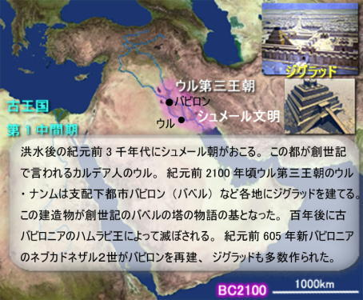
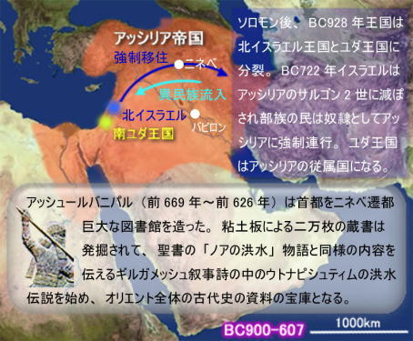
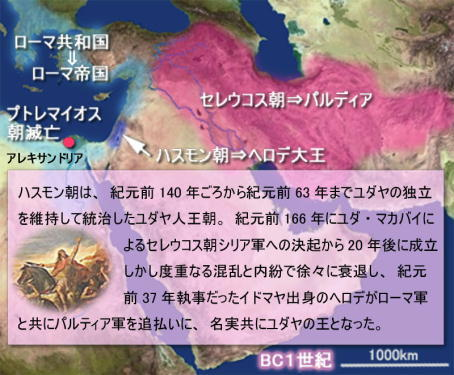
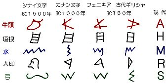
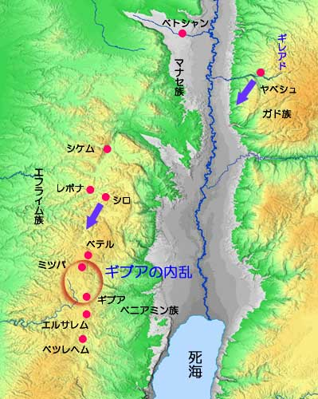
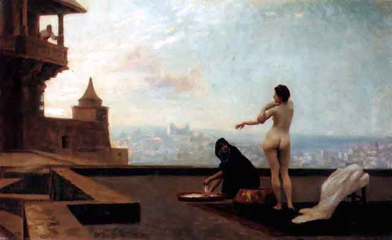
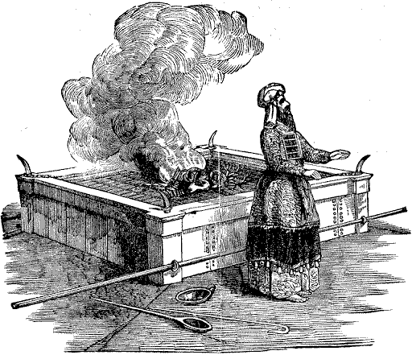
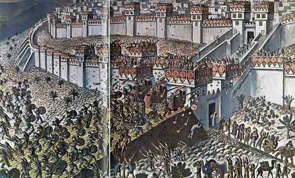

| 旧約聖書の歴史（前編） 創世記から捕囚まで | |
| 臨夜 海馬 | |
| (2015) | |
序
旧約聖書は如何にして誕生したのか？その編纂は、実に国が滅んでからだった。最後王朝であった南ユダ王国の滅亡は、イスラエル民族に北の滅亡以上の衝撃を与えた。北王国は金の子牛を礼拝し、エルサレム神殿もなく、ダビテ王朝もなかった。滅ぶのは当然だと考えていたのに、南ユダにはエルサレム神殿もあり、ダビテが築いた王朝でもあった。ユダ王国は神から見放され、南ユダ王国が北に優越性も失い、異教の神に負けてしまった。何故、神から永続的に祝福されたダビテの国が滅んだのか？何故、神が住まうエルサレム神殿は崩壊したのか？保存された北イスラエル滅亡時の預言者・アモスやホセヤ書が、その懐疑と絶望の苦闘の証言といえる。申命記史家は深刻な問題に直面し、ユダ王国マナセ王の悪行だと単純化して列王記をまとめ、ダビデ王朝の復興に希望を抱いて列王記を終えている。しかし、この期待は実現しなかった。帰還後、宗主国ペルシャに王家の再興は拒否された。第二イザヤ「苦難の僕（イザ53章）」がその失敗の証である。申命記史家はここで一時挫折したのかもしれない。
その痛恨と絶望の中からの再生がイザヤ書後半にあたる。如何に王制抜きで、イスラエル共同体を保存しその秩序を維持すれば良いのか？それに対する応答が、「モーセ５書」のシナイ契約を中心とした誓約共同体の祭祀国家（エゼキエル書）の誕生だった。「王なしの誓約共同体」の理念は、シナイ・シケム契約を信奉する北イスラエル部族連合の神学。申命記革命で南ユダ王ヨシヤに利用されたのも北の神学。これが捕囚後の民族復興で、祭司神学（Ｐ文書）の中で再び甦った。土地・王・神殿を失い、民族のアイデンティを喪失し、自己否定（エゼキエル37章、枯れた骨の復活）を経て、初めて真のヤハウェ宗教に再生しようとしたのだ。絶望・苦難とイスラエルの「残りの者」の中にこそ新生があると言う新理念が、イスラエル民族の歴史的体験となった。この新理念が旧約聖書と言えるのかも知れない。またここからが本来の律法遵守を中心とするユダヤ教の始まりと言える。旧約聖書を歴史的に眺めると、その辺簡易とが見えてくる。その歴史を紐解いてみる。
なお、聖書の引用は１９５０年代の口語訳聖書を用いている。
2015年10月 臨夜 海馬 著
１．旧約聖書の概要
旧約聖書を構成している内容は、律法の書（トーラー）と言われるモーセ５書、預言書（ナービームあるいはニェビーム）の１５書、諸書（ケスビームあるいはクスビームあるいはフスビーム）の１９書の計３９書の正典と、外典（続編、カトリックのみ）から成っているが、この正典は、ユダヤ教・キリスト教各派により違いがある。旧約聖書は、キリスト教のみの聖典ではないので（簡単な図式で言えば、旧約聖書＋タムルード＝ユダヤ教、旧約聖書＋新約聖書＝キリスト教、旧約聖書＋コーラン＝イスラム教）、旧約と呼ぶ言葉の差別感を避けてヘブライ語聖書と呼ぶ方もおられる。
ヘブライ語の正典としてユダヤ人の間で正式に確立されたのは意外と遅く、西暦９０年頃ローマ軍によるエルサレム神殿破壊後、ユダヤ人（パリサイ派）がサマリアのヤムニの宗教会議においてなされた。旧約聖書のギリシャ語翻訳については、もっと古い時代、紀元前３世紀中頃にエジプトのアレキサンドリアで始めて編集され、徐々に改定されながら紀元前１世紀にほぼ完成されたが、これは７０人訳ギリシャ語旧約聖書（セプトゥアギンタ）と呼ばれるようになった。離散ユダヤ人などに使われて一般化し、キリスト教徒もこちらの方を主に使ったと思われる。
かなり以前から広く知られている事だが、旧約聖書は歴史的順序では書かれていない。最も重要な書と言われるモーセ五書は、バビロン補囚からの帰還後かなり遅い時期に書かれ、しかも創世記1章「天地創造」は、モーセ五書編集の一番最後に書かれたとも言われる。聖書大事典（教文館発行）を参照にした旧約聖書成立表を次の頁に掲載しておく。とりあえず聖書学に基づく仮説から表を作成しているので、確定されているものもあるが、仮説段階のものもあるので、ご承知願いたい。モーセ五書の実際の作者がモーセでない事は、五書自ら教えているように思える・・・モーセの物語はモーセを３人称で書いているし（人々の中でもっとも柔和な人であった）、モーセが亡くなった様子や埋葬された場所など、誰も知らなかった記述（申命記３４）などからも窺える。こうしたモーセ五書についての基礎研究を行ったのは、オランダ生まれの哲学者バルフ・スピノザ（１６３２年、アムステルダムのユダヤ人居住区で、裕福な商人の子として生まれ、ユダヤ教の伝統のなかで育った彼は、神学と哲学、幾何学に才能を発揮し、デカルト哲学との出会いによって、哲学者としての道を歩んだ）が有名だが、その後に続いてアスリリーク、グラフ、レイス、ベリガウゼン、キュエネンなどが基本的見解を示した。
古代ヘブライ語の旧約原本によれば、創世記の第１章に登場する神はエロヒム（Elohim、神々という複数形）とあり、第２章の４節からはヤハウェ（ヤハウェー、Jawhe）の名前で書かれていて、後の文章も全般に渡りエロヒムかヤハウェのどちらかあるいは両者一緒に使われている。この事から、別々の２つの原本が後のモーセ五書に組込まれたのではないかと推定された。ヨセフスがエジプトに奴隷で売られた話にも、一つの句にはエロヒム、別の句にはヤハウェの名が並行して用いられていて、ノアの洪水伝説にも同様で・・・もしエロヒムとヤハウェの話を別々に抜出せば、２つの独立した物語（そのうちのどちらか１つを眺めれば矛盾がない一貫性のある話になる）が出来る・・・という事に着目して一連の研究がなされたようだ。現在では、この２つはヤハウェ（Jawhe）の頭文字をとってＪ資料（ヤハウィスト）、エロヒム（Elohim）の頭文字をとってＥ資料と呼ばれている。
（１）ヤハウィスト伝承（Ｊ資料）
モーセ五書の編集の際に使用されたと想定される仮想資料の一つで、五書の中にある特定の記事の冒頭に、ヤハウェという神名を一貫して使用していることから名付けられた。創世記中では用語や文体、生き生きとした物語技法や神学的特徴などから、他の資料とは明確な違いがあり、容易に抽出が可能であるとされている。ソロモン王国崩壊後、二つのユダヤ民族（北イスラエル王国と南ユダ王国）の間に、政治的・宗教的・思想的な闘争が展開された時、ユダヤ人の歴史をユダ種族（南ユダの種族のひとつ）を優位性を示す意図が見られる事から、この資料は最終的に南ユダで書かれたと想定される。
この資料の起源が、ソロモン王国時代の初期であると考えられているが、その理由として同じ時代に活動していたダビテの家族物語（ダビテ台頭史）の作者と文体に類似点がある事、ソロモンの死後の王国分裂を知らないと言う点、更にかつてダビテ王国に併合されたユダヤ民族とその祖先物語があるなど、総じて彼らが全てヤハウェの支配下にある事を示そうとした事にある。ユダ種族は南ユダ王国の中でも重要な位置を占め、彼らはユダ種族とその王（ダビデ王）たちの持つ特別な意味に重点を置きながら、世界の歴史とその中で選ばれた種族の役割を作成していったと考えられている（作成者は神殿の書記であろうか）。ダビテ王家の正統性（これは後のエルサレムキリスト教共同体において、主の兄弟ヤコブの思想に現れていて、原始キリスト教の背景に繋がったのかもしれない）を強調しながら、人類創生期において人間の罪と神の介入を描き、祖先たちへの尊崇と神および祭司への服従を求める事を意図したと思われる。
（２）エロヒスト伝承（Ｅ資料）
同じくモーセ五書に使用されたと思われる仮想資料文書（断片的にしか保存されていないとされている）の一つ。神名として複数形普通名詞・エロヒムが出エジプト３章まで用いられているので、エロヒスト伝承と名付けられた。祭司文書（Ｐ資料）も部分的に同じ神名を使用しているが、物語の文体・用語・歴史神学などに明確な相違点があり、１９世紀のなかばにドイツの聖書学者ゲー・グプフェリドにより分離され別々のものとされた。成立時代として考えられるのは、記述内容から申命記以前であるとされ、また預言を重要視している事や、ホセヤ書の歴史神学と類似している点が見られ事から、南北分裂した王国の北イスラエルにおいてヤハウィスト伝承に対抗するような形で、数十年後の前８世紀前半頃に作成されたのではないかと推定されている。
記述内容から、特に重要視されているのがエフライム族とマナセ族の始祖とされているヨセフであり、主要な事件の舞台も北方に位置するベテル、シケムその他の町々である。このＥ資料は、Ｊ資料（ダビテ王家の正統性を主張）とは逆に、「王としてのヤハウェ」（民２３章21）を主張しているのではないかと考えられている。この思想は、王国形成より以前の時代に由来すると考えられ、イスラエルを宗教的・精神的なヤハウェ直接支配の誓約共同体として記述されているようだ。
（３）申命記（Ｄ）文書
北イスラエル王国は北の軍事大国アッシリアの侵攻により、紀元前７２２年にホシェア王の時代にサマリアが陥落してしまい、国が崩壊してしまいます。そこ住んでいたユダヤ人はアッシリアに連れて行かれるが、アッシリアはユダヤ人の民族としてのアイデンティティ（独自性）を奪うため、通婚政策をとった。このために彼らユダヤ人は混血してしまい、後に「サマリア人」というユダヤ人ではない元ユダヤ人的蔑視する言葉が生まれてしまう。これが新約聖書の福音書の中にも登場するサマリア人。この頃、イザヤ書の創設者（イザヤ書はイザヤおよび後の弟子達が長い期間書き続けた文書）である南ユダ王国の預言者イザヤは、いかなる軍事同盟も反対し、あくまでも非武装・非戦の中立を主張した（第一イザヤ書：１～39章）。イザヤは、王国内における不正腐敗堕落した状況を正確に把握し的確に情勢を判断して、王国の滅亡を予見する。北イスラエル滅亡後は、激動と危機の時代に際し、我を見失うことがないよう、来るべきメシヤの理想像を示して、新しい理想社会の理念を預言として書き記した。
さて次に、旧約聖書成立の中で最も重要な出来事は申命記の出現と考えらた。列王記下の中で、ユダの王ヨシヤの治世第１８年（紀元前６２２年）エルサレム神殿の聖なる所で発見された写本に由来する。
（列王記下２３章1-3）そこで王は人を遣わして、ユダとエルサレムのすべての長老を自分のもとに集めた。王は、ユダのすべての人々、エルサレムのすべての住民、祭司と預言者、下の者から上の者まで、すべての民と共に主の神殿に上り、主の神殿で見つかった契約の書のすべての言葉を彼らに読み聞かせた。それから王は柱の傍らに立って、主の御前で契約を結び、主に従って歩み、心を尽くし、魂を尽くして主の戒めと定めと掟を守り、この書に記されているこの契約の言葉を実行することを誓った。民も皆、この契約に加わった。
神殿の中で人知れず、３００年の長きにわたり誰も気がつかず眠っていたとは常識的には考えられないので、この突然の出現は王と大祭司による要請で作られたと推測するのが自然かもしれない。事実、この写本の内容の公布により、国家の唯一の神殿に対して礼拝を捧げる事を集中させる事が可能になった。それまでは各居住地毎に至聖所があり、所によってはメソポタミアやシリア地方の神々（特にバール神）に対する礼拝所（時には森の中、井戸のほとり等の場所さえ）となっていた地方もあったのだ。そのような礼拝所では、家族の長が祭儀を執り行ったり、雇用されたレビ人や漂泊の祭司なども同様に行っていたらしいが、この公布によりすべての宗教的祭儀がヤハウェの神殿に一本化された。ユダヤ人すべては年３回のエルサレム巡礼が必要となり、献祭などもすべて中央の宗教機関の手に委ねられたので、この時期に本格的ユダヤ教が確立されたと言えるかもしれない。
またこの中央集権的公布は、結果的には王や上層祭司階級に多大な権威と富をもたらせた。しかし、この後わずか３０年あまりしか経過しないうちに（紀元前５８７年）、国家（南ユダ王国）そのものがバビロニアに滅ぼされ、バビロンに捕囚の憂き目に会うが、この写本の内容の中の宗教的部分は、やがてモーセ五書の中に組込まれていった。特に写本の１２章から３０章までは、後に五書の中の申命記と呼ばれる文書になったと考えられている。この原典を第二の律法（フタロザコーニエ）、ラテン語Deuterononiumの頭文字をとってＤ資料と名付けられている。残りの部分は、ヨシュア記や五書のほかの部分や諸書にも挿入されたと推定される。なお、北イスラエル崩壊後南ユダにおいて、ヤハウェ伝承とエロヒム伝承は一つにまとめ上げられていったようだ。
（４）祭司法典（Ｐ資料）
国が滅びバビロン捕囚となった時代、エルサレム神殿の祭司だった者達は、ヤハウェ信仰の基幹となる神殿での礼拝と儀式について、一貫した体系的考えをまとめ上げる事を自分達の使命と考えたと思われる。そして、それは捕囚時代に完成したと考えられている。Ｐ資料と言われる祭司法典は、このような時代背景で作成されたのだろう。バビロニアの崩壊後、元のユダの国はペルシャの支配下に置かれたが、クロス王により開放令が出され帰還を許される。先に作成された写本は、紀元前４４５年頃祭司エズラによりエルサレムにもたらされ、ユダヤ人民衆の大集会で公表された。法典の公表後、エズラと共に支配権を掌握したエネミアは、それまでの雑婚の破棄と禁止を敢然と民衆に要求したが（国を失ってしまった民族の今後の自立と、単一民族としての強い愛国心を求めた）、それは写本に書かれた重要な内容であったのだ。
写本には、新しく改編（改ざん説を述べる学者もいる）された歴史物語、神話物語、それとおびただしい数の礼拝規則が書かれている・・・神殿における儀式、日常生活上の行動基準、食物規定、衣服規定、様々な禁忌規定、更に重要な事として選ばれた民族の純潔の保持（雑婚の禁止）など。新しい律法は、ヤハウェーエロヒムとの契約の確認を示しながら、同じ宗教基盤の基に民族の大団結を促すものだった。この祭司法典は、レビ記のほぼすべて、民数記のすべて、創世記と出エジプト記の多くの部分として使われたと考えられている。モーセ五書以外に、ヨシュア記にもこれまで説明した４資料がかなり使われたと考える学者が多いようだ。まとめてみると・・・
創世記 Ｊ・Ｅ・Ｐの３資料
出エジプト Ｊ・Ｅ・Ｐ・Ｄの４資料
レビ記 Ｐ資料のみ
民数記 Ｊ・Ｅ・Ｐ・Ｄの４資料
申命記 Ｊ・Ｅ・Ｐ・Ｄの４資料
２．旧約聖書の歴史簡易地図
次に、簡易的な地図を掲載しておく。あくまで推定された歴史から大まかな地図を個人的に作成したので、あくまで参考までに。ＷＥＢ用に作った画像なので、粗いので、読みにくいと思うが。




３．ヘブライ人とは
ヘブライ人あるいはヘブライ語（古代ヘブライ語）の冠たるヘブライの名前は、ユーフラテス川を越えて移住する人たちのことを総称し、ヘブル人と呼んでいたことに由来するようだ。楔形文字文書では、当時のオリエントの社会秩序を逸脱したとみなされた一種の社会集団を意味するハビルという呼び方があった。またユダヤ人と言う呼び方は、ユダヤ教を信仰する者（宗教集団）、あるいはユダヤ人を親にもつ者（民族集団）という２つの捉え方がある。トーラー（律法）によれば、ユダヤ人であるためには母親がユダヤ人でなければならないとされている。
一方、言語体系から分類される場合は、ヘブライ語は中央セム語の北西セム語（他にアラム語などがある）の中のカナーン（カナン）語のカテゴリに入る（他には、フェニキア語、アモリ語、モアブ語などがありましたが、現在は使われていません）。東方セム語には、アッカド語（アッシリア語、バビロニア語）もありましたが現在では使われていない。古代ヘブライ語自体は、日常言語として、後にアラム語に取って代わられる事になった。

シリア周辺地域の考古学研究成果による文字の歴史を見ると、紀元前２千年紀に原シナイ文字（エジプトのヒエログリフの影響が残った象形文字的な形）を使用していた北西セム系言語を話す諸民族は、紀元前１０００年頃には原シナイ文字から派生した線状の文字が使われるようになる。それ以前にあったシナイ文字やウガリト文字（楔形文字由来）と区別し、北西セム線文字と呼ばれた。この変遷期に北西セム系諸民族（フェニキア人、ヘブライ人、アラム人、モアブ人）の各都市国家で使われた文字が、フェニキア文字、古ヘブライ文字、古アラム文字、モアブ文字などでが、これらの文字は時代の経過と共に形状が独自の地域的変化を起こす。
上記の事柄から、ヘブル人の歴史上から判断できる起源は、メソポタミア中北部、現在のトルコ・シリア・イラクが接する付近であろうと考えられる。創世記のヘブル人の太祖（最も偉大な先祖）アブラハム（旧名アブラム）の物語では、父テラはユーフラテス川下流のウルを出発点にして（図４参照）ハランに居留、その後アブラハム一族はカナンの地に向かっている。

しかし、現在バビロニアのウルの遺跡にあるアブラハムの家と名づけられた家は、２階建のかなり豪華な建物であり、遊牧民族であったアブラハム一族の家とは思えないし、周辺の遺跡の状況からもそう考えるのが自然だろう。ウルという具体名が出ていることから、もうひとつのウルの町があったという説がある。そこはハランの東に位置しているが・・・そこで、実際に住んでいた所はハランのを含む広い領域であったと想像するし、そこはまさにメソポタミア中北部の遊牧民の地とも言えるだろう。なお、当時の遊牧民は、生き残るために傭兵になったり盗賊になったりした者が多かったようで、時には武装集団となったのかもしれない。
１．ヘブライ人の流浪の始まりと定着・・・マリ王国、エジプト、ミタンニ王国、ヘテ（ヒッタイト）、カナンの地
（１）マリ王国（ＢＣ３０００～１７５０年頃）
かつてメソポタミア中央部に栄えたマリ王国（アフリカの王国とは異なる）の遺跡が発見されているが、日本ではあまり有名ではないようだ。マリの遺跡は、現シリア・イラク国境のシリア側でユーフラテス川の南岸にあり（前のページの図４を参照）、シリア砂漠から侵入した西セム族系の遊牧民アモリ人（アムル人）と、その地域の住民が融合してできた国と考えられている。マリ王国は紀元前３０００年頃から繁栄した都市国家で、遺跡は３層発見された。紀元前２５世紀頃には古代シリアの大都市エブラと密接な関係があったようだが、最後は内紛やアッシリアとの戦いで疲弊して、ＢＣ１７５０年頃には栄華を誇ったマリ宮殿もバビロニア王国のハムラビ王によって破壊され焼け落ちた。
１９３３年８月にテル・ハリリで宝石を探していたベトウィン（遊牧民）の男たちにより３００ｋｇ近い彫像（王ランギ・マリの像、右下写真）が発見され、パリの考古学者パロのグループにより発掘された。神殿には数々の立像が並び、巨大なフレスコ壁画も確認され、更に驚く事にニネベのアッシュルバニパル王により作られた図書館の２万２千枚を凌駕する、２万５千枚に上る楔形文字（アッカド語）で書かれた粘土板を所蔵する図書館も発見されている。王宮の部屋数は２６０部屋もあり、世界最大の景観のひとつとさえ言われているが、政治と官庁の部屋以外に宗教上の部屋も数多くあり、その中を長い行列用の通路が通っていて、奥には宮殿の礼拝室があり、そこには豊饒の母なるアシタロテ女神像が安置されていた。女神の持つ容器からは｢永遠の命の水｣が絶えず流れていたと考えられている（頭部に雄牛の角を付けているが，これはオリエントに共通する権威のシンボル）。
•注：【アシタロテ女神】起源のメソポタミア神話ではイシュタル・・・月の女神・金星の女神・性愛の女神・戦いの女神であり、ギルガメシュ叙事詩ではギルガメシュ王に求婚するが袖にされてしまう。カナン神話ではアシュタルト・・・豊穣・多産・繁殖の女神で、後にパレスティナにおいては同じく豊穣神であるバアル神（アシュタルトはバアルの妻とも言われ）と密接な関係にあり、敵対者ペリシテ人と共にユダヤ人のヤハウェ信仰の一大脅威となった。
マリ王国は、出土品の様式からシュメール（セム・ハム族でもない謎の民族と言われているが、メソポタミアに最初に高度な文明を興した）文化の影響を受けながらその伝統を保ったようだ。しかし、特徴的なものもある。その１つがアムル人の農耕の神ダゴン神の信仰で、マリの広大なダゴン神殿は一大宗教センターであったと思われる。もう１つが、｢夢占い｣と考えられているが（夢占い自体はどこの古代国家でもあった）、粘土板の記録には、地方の行政官が夢や幻視や予言について王に報告していた事が見られる。予言者は神懸かりした陶酔状態で予言を語り、行政官や王もそれを重んじていた様子が分かる。後のユダヤ教の預言者にも類似した点があるように感じられる。
さて、マリの図書館にあった粘土板のマリ中央政府と地方行政官との往復文章に・・・「---ペレグ、セルグ、ナホル、テラ、ハラン」の地名が登場するが、これは創世記１１章18-26「ペレグが三十歳になったとき、レウが生まれた・・・レウが三十二歳になったとき、セルグが生まれた・・・セルグが三十歳になったとき、ナホルが生まれた・・・ナホルが二十九歳になったとき、テラが生まれた・・・テラが七十歳になったとき、アブラム、ナホル、ハランが生まれた。」とあるので、アブラハムの先祖の名前は、このマリ時代の北西メソポタミア（パダン・アラム、アラム平原の意味で、その中心の町がハランで紀元前１９世紀に栄えた）の町々の地名から採られたのだろうか（創世記によればナホルは、アブラハムの息子イサクの妻としてリベカを迎えに行った町）。
更にマリの砂漠の警備隊長ハンヌムからの報告書粘土板には「王に報告されたし、昨夜マリを離れてズルバンでいたところ、ベニヤミン人の皆が狼煙で合図を送っていた。サマスムからイルリ・ムルクへ、イルリ・ムルクからミシュランへ、テルカ地区のすべてのベニアミン人の村々は、狼煙で応答していた。私はこの合図の意味が確認できないので、見つけようと勤めていますが、町の警備を厳重にし、王は門から出ない事を勧めます。」と書かれている。
聖書では後の時代にベニアミン（アブラハムの孫ヤコブと妻ラケルの息子）は支族の名前となるが、この時代にすでにベニアミン人がいた事が分かります。マリ文章によれば、このベニアミンの本来の意味は、「右（手）の子ら」であり、単に南の子らと言う地域を示す言葉でした。このベニアミン人はマリ文章にたびたび登場するが、それはベニアミン人がマリ王国の頭痛の種、トラブルの元であった事を示している。余りに年中トラブルを起こすので、ある王の時代はベニアミン人時代とまで書かれている。
マリ王国（アモリ人が中心）は、農園・穀物畑・広い牧場があり、東西南北の大隊商路の交差点だったので交易も盛んで、２５の神々を祭り長い間平和を保っていたが、国境に住むセム族の遊牧民の諸族の侵入があった事も書かれている事から、軍隊組織は整えていたので、世界最初の徴兵制度があった事が分かる。ベニアミン人への人口調査（徴兵と課税が目的）は行われなかった事も書かれている。服従しない反抗の種族と思われていたのだろう、しかしマリ最後の王ジムリ・リルの時代に、ベニアミン族を敗北せ蹴散らした事が粘土板に記載されている。
アブラハム（現在ではこの名前自体はエジプト人やキプロス人にも多数見られるので、古文書の中の名前だけでは判断できないとされている）の一族がどうなったかは不明だが、聖書の年代ではＢＣ１９００年前後にはカナンに向かったと推定される（追い払われたとも考えられるが）。しかし、考古学的資料ではもっと後の時代とする説も見られる。根拠としては、次に説明するＢＣ１５００年代頃のミタンニ王国のホリ人のヌジ遺跡の文書庫から出てきた、ホリ人の法律の文章と聖書の創世記の中にある文章との驚くべき一致点があるからだ。こうした例はいくつも出てくる。要するに種族の移動と共に、背景として各地の色々なもの（風俗・風習・法律・宗教的要素・行政形態）が取り込まれて行った事は想像に難くないだろう。
•（注）ノアの洪水伝説にしても、シュメール文明のギルガメシュ叙事詩（創世記が書かれたよりも遥か昔に書かれた粘土板にある）の中で、ギルガメシュの冒険の最後に、神が起こした大洪水から箱舟を作って逃げることで永遠の命を手に入れたウトナピシュティムの大洪水に関する長い説話が書かれている。ノアの名前の違いと雨が降った期間の違いや山の名前がアララト山とニシル山の違い以外は、ほとんど瓜二つの内容だ。一般的には、ニネベ付近やバビロンに強制移住された時代に、この話（ニネベのアッシュルバニパル王により作られた図書館にあった洪水伝説の粘土板の話）を聞いてユダヤ人が借用したと言われているが、旧約の伝承のされ方から好意的に解釈すれば・・・遥か古代の時代は同じ民族であったので、同じ話も共有していた・・・と言えるかもしれない、詳細はバビロン捕囚期に完成したであろう事は想像できる。事実この洪水伝説は早い段階で広域に広まり、後には世界的規模で洪水伝説が各地で語られている。
（２）ヒクソス（エジプト第１５王朝 ＢＣ１７５０年頃 -- ＢＣ１５８０年頃）
第２中間期時代の古代エジプト王朝。ヒクソス（異国の支配者達の意味）と呼ばれる異民族によって立てられた王朝だとされる。彼らは一般にシリア・パレスチナ地方に起源を持つ雑多な人々の集団であったと考えられている。ヒッタイトの進入で古バビロニアが滅んだ時、多くの難民が発生したが、この集団がエジプトになだれ込んだようだ。エジプト下流はこの武装難民ヒクソスに占領され、ここにエジプト中王国が滅亡しエジプト暗黒時代を迎え、エジプト民族生き残りは上流に逃れた。（カナン人らしい遊牧民が、エジプトに貢物持参で挨拶に来ている壁画）
後世のエジプト人の記録には、圧制を敷いてエジプト人を苦しめたとの記述があるが、考古学的な調査によれば誇張されたものであるようだ。建物の建築様式や複合弓、戦車、新型の剣などを導入した事などを除けば、エジプトの伝統的な文化を継承していた。この期間中はカナンの地はヒクソスの支配下にあった。この王朝は２００年足らずの後に、異民族の追放を叫んだエジプト上流のテーベの政権（第１７、第１８王朝）によって放逐され新王国時代を迎えるが、カナンの地は以前と同様にエジプトの支配下に治められている。
聖書の中でヤコブ（アブラハムの息子のイサクの子供）の息子ヨセフが、兄の企みのせいで結局エジプトに奴隷として売られていくが、その後エジプトの宰相にまで上る話がある。元々のエジプト原住民は、遊牧民を蔑視していたから、このヒクソス時代にヨセフが宰相になったと考えれば、ぴたり当てはまるし、その後エジプト新王国時代になると、ヨセフについての記録は消されてしまい、ヨセフの子孫が使役に使われるようになる・・・まさに大団円なのだが、これも聖書の記述内容から推定される年代がまちまちで合わない。
ヨセフの大臣認証式の形式は、ＢＣ６５０年頃のアッシリアのサルゴン２世がエジプトの形態と類似しているし、ヨセフが身を寄せた侍衛長ポティファルは宦官でありこの称号はペルシャ時代（ＢＣ５００年代）までなかったし、銀３００枚をベニアミンに与えた貨幣の話も貨幣自体がＢＣ６世紀頃が世界で最初の貨幣だったから（創世記２３章にある・・・アブラハムはこのエフロンの言葉を聞き入れ、エフロンがヘトの人々が聞いているところで言った値段、銀四百シェケルを商人の通用銀の重さで量り、エフロンに渡した・・・エフロンの畑は、土地とそこの洞穴と、その周囲の境界内に生えている木を含め・・・重さで金額を表した習慣は古いシュメール文明から有ったので、正しいと思われるが。なおシェケルの単位自体はＢＣ２１００年の最古の法典と言われるシュメールのウルナンム法典に載っている。当時の１シェケルは約８．３グラム）。推測するに、伝承された資料は確かにかなり正確であっただろうけれども、個々に小さな物語になっていて、それをバビロン捕囚期以降に、詳細に追記されたと解釈出来るかもしれない。
（３）ミタンニ王国（ＢＣ１５５０～ＢＣ１２７０）
フルリ人（フリ人、旧約聖書でホリ人と呼ばれる）は１８世紀頃からメソポタミア北部に住んでいたが（同じ頃エジプトに侵入したヒクソスと関係があるとも言われる）、紀元前１５５０年頃メソポタミア北部のカブル川上流域を中心にミタンニ王国を建国。騎馬戦士階級に支配される封建的国家で、元来インド・ヨーロッパ語族系の出身と推定されていて、「馬」「調馬師」「戦士」などのインドのサンスクリット語がまじっている。ヒッタイトのボアズキョイ、エジプトのアマルナ等から出土した楔形文字による文書によって知られているが、特に馬を用いる技術に長け、一名「馬狂い」とまで言われてようだが、ヒッタイトにおける馬の技術もフルリ人から導入されたとも考えられる。
（４）ホリ人のヌジ文書と創世記のアブラハム一族の共通点
（ａ）創世記１５章２－４
アブラムは言った、「主なる神よ、わたしには子がなく、わたしの家を継ぐ者はダマスコのエリエゼルであるのに、あなたはわたしに何をくださろうとするのですか」。アブラムはまた言った、「あなたはわたしに子を賜わらないので、わたしの家に生れたしもべが、あとつぎとなるでしょう」。この時、主の言葉が彼に臨んだ、「この者はあなたのあとつぎとなるべきではありません。あなたの身から出る者があとつぎとなるべきです」。
（ａ'）ヌジ法律文書
子供なき夫婦は養子を迎え、養子は養父母の面倒を見る代わりに相続する。もし、後に実子が生まれた場合のことを考え、留保する事が出来る。
（ｂ）創世記１６章２、３０章３
サライはアブラムに言った、「主はわたしに子をお授けになりません。どうぞ、わたしのつかえめの所におはいりください。彼女によってわたしは子をもつことになるでしょう」。アブラムはサライの言葉を聞きいれた。／ラケルは言った、「わたしのつかえめビルハがいます。彼女の所におはいりなさい。彼女が子を産んで、わたしのひざに置きます。そうすれば、わたしもまた彼女によって子を持つでしょう」。
（ｂ'）ヌジ法律文書
もし結婚後に子供が生まれなかったら、妻は代理妻を用意しなければならない。
（ｃ）創世記３１章14-17
ラケルとレアは答えて言った、「わたしたちの父の家に、なおわたしたちの受くべき分、また嗣業がありましょうか。 ・・・その時ラバンは羊の毛を切るために出ていたので、ラケルは父の所有のテラピム（守り神の像）を盗み出した。
（ｃ'）ヌジ法律文章
家族の持つ偶像（守り神、テラビム）を保持するものが、相続権を持つ。
アブラハムがミタンニ王国時代に、そこに住んでいたとすると後の話の年代に矛盾を生じてしまう。しかしヌジ文書が古いその地の伝承を成文化したと考えれば・・・住んでいた時期がＢＣ１７００年前後であったと考えれば、何とかギリギリ（年齢等を無視すれば）アブラハム以降の話の整合性が取れるようにも思えるが、このあたりは未だ解明されていない面だろうか？
（５）ヒッタイト（ヘテ、あるいはヘトとも、ＢＣ１９００～ＢＣ１１９０年）
ヒッタイト人とは印欧語族系の民族で、起源は不明ですが、ＢＣ１９００年代頃に黒海の北方からアナトリアの地に移住してきたとも言われている。当時アナトリアにはすでにハッティ人と呼ばれる土着の人々が住んでいたが、ヒッタイト人は平和的にアナトリアに広がりながらハッティ人達と人種間婚姻を繰り返し、次第に優位な立場になったと考えられている。ＢＣ１７００年過ぎ頃にハットゥシャ（現在のボアズキョイ）を首都としてヒッタイト帝国を建国し、次第に勢力を強めながらメソポタミア地域にあった古バビロニア帝国にまで侵入した。青銅器時代、最初に鉄を使い始めたことで知られ（当時、鉄は隕石からごくまれにしか採れなかった）、鉄製の武器は脅威となりますが、その製法などは秘密にされていた。
ＢＣ１５００年代はミタンニ王国とエジプトと３大王国を形成し、その後はエジプトとシリア地区の覇権をめぐって何度も戦う。しかし、この争いにはなかなか決着がつかず、最終的には両国が平和条約を結び、ミタンニ衰退後はエジプトと共に古代オリエントの２大強国としての地位を保った。
ＢＣ１１９０年に地中海諸地域の諸種族混成集団と見られる「海の民」によって滅ぼされるが、要因は王国の末期の内紛と食糧難であったと言われている。創世記に登場するヘテ（ヘト）人は、上記のハッティ人と呼ばれる土着民がシリア南部からパレスティナ地方に、多数の小規模集団としてかなり以前移り住んでいた人々を指すのではないかと推測するが、ヒッタイトとは区別した方が良いかと思われる。
•（注）ＢＣ１８００年前後頃、アッシリア王のシャムシ・アダド１世はマリ王国ヤフドゥン・リムと激しく争っている。マリの記録で数度にわたってアダド１世が敗れた事が記載されていた。しかし形成は逆転し、更にマリで内紛が発生してマリ王ヤフドゥン・リムが暗殺されたのに乗じてマリの支配権を掌握し、北部メソポタミア全域にアッシリアの勢力を拡大し、名実ともにオリエント最大の君主となる。しかし、彼の息子イシュメ・ダガン１世はＢＣ１７７７年頃にヤフドゥン・リムの息子ジムリ・リムの攻撃によりマリを失うなど国内が混乱してしまう。このアッシリア衰退に伴い、バビロン、ラルサ、マリ、エシュヌンナ等がアッシリアの覇権を巡って争い、やがてＢＣ１７５０年前後頃にバビロンのハンムラビ王が勝利を得る。しかしこれも長く続かず、ハンムラビの死後ムルシリ１世に率いられたヒッタイト人の急襲に遭い、バビロニア王国は壊滅してしまう。後にはミタンニ国やカッシート人の国などが続いた。
（６）カナン（カナーン、Canaan）の地
アブラハムはハラン付近から一族や周辺の人々を率いてカナンに向かった。マリ王国が滅ぼされ、、西からはヒッタイトの足音が迫ってきていたからだろうか、現在のシリア・パレスティナ地方は混迷を極め、難民がエジプトまで侵入してエジプト王朝を倒している。この時代にアブラハムは、生きる生活の場を求めてカナンへ向かったのだろうか。アブラハムを含めた一族も、紛争に巻き込まれて難民になってしまったと考えるのが最も自然と思える。彼等が入れる空きがある地域と言えば・・・近いところではパレスティナ地方しか残されていなかったようです。
さて、カナンに入るまでおよそ１０００ｋｍ、隊商路のオアシスであるパルミラを経由しダマスコ（ダマスカス）を通ります。ダマスコ（エジプトとメソポタミアを結ぶ交通の要衝であり、ＢＣ３０００年頃から都市が形成しはじめたと考えられている）から南西にはガリラヤ湖が見える。ダマスコはバラダ川（バラド川）のすぐ南岸にあり、森や農耕地からなる大きなオアシスがあり、肥沃な平野の中心に位置していて、春には花が咲きほこる美しい景色が取り囲み、南を見れば青空を突きぬけてそびえるヘルモン山が目に映り、地平線の先には焼けただれたようなシリア砂漠が霞んで見える、それゆえにアラブ人が天国を思い浮かべる時に真っ先に上げるのがこの町であり、一時はエデンの園のモデルとされた場所でもあった。
カナンは、広い意味では南はガザから北はオロンテス河畔のハマテまでを指すようだ。名前の意味は、「紫（パープル）の国」です。紫の染料は、古代では貴重であり、エジプトでも珍重されました。カナンで産する悪鬼貝からしぼりだしたものだが、入手困難な高価な品物で、紫の染料は世界中の高貴な人の衣服に使われいた。ギリシャ人は、地中海沿岸の紫染料業者と職人を、「ホエニキアン」よ呼んだが、これがフェニキアの国（ツロ、シドン、ビブロス等の町のある所）の名前となった。
更に、ビブロスという町の名前が、ギリシャ語の本と言う名前・ビブリオンになり、それが最後にはバイブルという言葉になる。紀元前９世紀頃に、フェニキア文字が地中海を渡り、アルファベットになったと言われている。ついでにと言うか、カナンの地の一部が、後にパレスティナと呼ばれるのはローマ時代で、このパレスティナの名前はペリスティウムから来ており、旧約ではペリシテ人と言われた民を指し、イスラエルの不倶戴天の敵となった。
カナンの大きさは上の地図程度だろう。ヨシュア時代はもっと狭い地域と考えたようで、ダンの町の北付近・ヘルモン山麓までの縦長の細い領域を示す。先住民族がいたことは創世記15章に、「エジプトの川から大河ユーフラテスに至るまで、カイン人、ケナズ人、カドモニ人、ヘト（ヘテ）人、ペリジ人、レファイム人、アモリ人、カナン人、ギルガシ人、エブス（イエブス）人の土地を与える」と書かれているが、実際は日本の本州より小さい地であった訳だ。民族の場所は分かる範囲でアバウトに書いている。アモリ人は別名アムル人と言いマリ王国の構成民でしたので、アブラハムがやって来たときには既にパレスチナにいたのは間違いない（創世記14:13）。旧約の神はアブラハムにこの地を、彼等の子孫たちに与えると約束している（アブラハムの契約）。
当時のカナン地方の様子は、エジプトでシヌヘという貴族が政治的陰謀でカナンの地（エジプトではレテヌと呼ばれた）に追いやられ、その人物が書き残した文書が発見された事で詳細に分かるようになった。北のシリア地方は肥沃で大麦・小麦・いちじく・ぶどう・オリーブなど豊富に採れて、海岸線の町は地中海交易で巨万の富を築いていた。しかし一方、南下した内陸部は、ヨルダン川沿いを除けば、山と丘陵地帯が多く、塩の海（死海）や荒野もあり、人もまばらな辺境の貧しい地域であった。所々に、ぶどう・いちじく・なつめやしが植えられた少ない耕地があり、自給自足の生活を送っていた。アブラハムが入れる地はこの南部しかなかったようで、一族が南下したルートは２つ考えられるが（地図を参照）、青色の付近を経由してシケム（シェケム）に入ったか、ダンからガリラヤ湖を通りシケムを入ったかのどちらかだろう。
用心のためと牧草があるために、人が全くいない山の尾根を経由し、南部のネゲブ（ヘブロンやベエル・シェバの村がある一帯）に入る。途中サレム（エルサレム）で王メルキゼデクに挨拶をしている。恐らくアブラハム一族に近い民族であったと思われる。後のモーセの兄が大祭司の家系になるが、もう一つの大祭司としてこのメルキゼデクは考えられていたようだ。ネゲブに着いて（すぐには耕作可能な平地には下らず）、山麓付近で牧畜を行っていた。この地では井戸の確保が重要で、シヌヘ文書でも井戸をめぐっての争いが書かれていて、アブラハムの話にも井戸の話が登場する。創世記２１章「わたしの手からこの七匹(シェバ)の雌の子羊を受け取って、わたしがこの井戸(ベエル)を掘ったことの証拠として下さい」。ベエル・シェバの名前はこの時に付けたとされているが、アブラハムの息子のイサクにも同様の話があり、２つの異なる伝承を一つにした事が分かり、実際上の町の名前はもっと以前からあったのかもしれない。
この南部地帯は、少ない集落の集合体の族長を王と呼んでいたようで、井戸を取り囲む様に王と重臣の家、それにパロ（エジプトの王、ファラオを指す言葉、一時期を除いてカナンはエジプトの支配下にあった）の領事の家があり、その周囲に石を積みあげただけの小さな城壁が巡らされていた。とても城壁都市と呼べるものではないが、ベドウィン（遊牧民）の襲撃や、王同士の争いの防御として作られていた。争いに負けると、略奪や皆殺しが行われたり、奴隷として連行される事も多かったと思われる。アブラハムも奴隷を所持していたようだが、それは財産の一部であった。後にも神はヨシュアの時代でさえ、戦利品として奴隷も与えると伝えるシーンが旧約には書かれている。当時の人の生活の営みの中で、人間自身が生み出した神の言葉（人間の解釈）ではないか。アブラハムの甥のロトは、アブラハムから離れて低地に向かい、農耕も行えるようにソドムの町（当時死海のすぐそばにあったと言われる）に天幕を張りそこで住む。しかし、その地域の５人の王が反乱を起こし、その地を支配していた他の地に住む王に鎮圧されてしまう。ロトは奴隷として連行されるところを、アブラハムがダンよりの更に北方まで追いかけ急襲して奪回した。後に、ロトが住んでいたソドムともう一つのゴモラの町は、地震による液状化現象あるいは火山の噴火により、火を吹き上げながら地盤が沈下して死海の一部（南部）になったと考古学的には考えられている（ＢＢＣ放送の地球伝説でも取り上げられていた）。ソドム崩壊後に、ロトの娘が子孫を残すために、実の父親と交わる話などは・・・さすがに悲惨な話が記されている。
（７）エジプト入りと出エジプト
さて、話を進めて・・・アブラハムの孫のヤコブの息子・ヨセフはエジプトに奴隷として売られてしまう。夢占いが的中した事や賢明さがパロ（ファラオ）に認められ、大臣のような地位につきますが、飢饉が続くなかで飢えに苦しむ農民に生活の糧を与えるが、奴隷にした事は聖書に書かれている。この時代の記録は全く残っていない事から、エジプトが異民族の支配下（暗黒時代）にあったヒクソス時代であったのはないか。
後に、ヨセフの一族はエジプトに移住するが、その後およそ４００（４３０）年間は旧約の空白期間となっている。この期間はヒクソス王朝が滅び、エジプト民族の王朝が再登場し、ヒッタイトやミタンニ王国との拮抗状況が続くが、カナンはエジプトの支配下でカナン民の一部はエジプトに強制移住されて、都市造りの強制労働者にされたと推定される。こうしてヘブライ民族の一部はエジプトで奴隷のような扱いに陥っていたと思われる。ここに登場したのがモーセ。モーセ誕生伝説は、これもバビロニアの粘土板に書かれたサルゴン王（BC２３６０年）の誕生物語と殆ど同じで、一般には借用したと考えられているが。モーセは強制労働の現場で義憤に駆られて監督官を殺害し逃亡する。逃亡先はアカバ湾の東のミデアン人（ケニ人）の地で、アブラハムの第二妻ケトラの子のミデアンの子孫がいた場所とされている銅の鉱山と精錬所があった場所）。この地で、祭司の娘が羊の群れに水を飲ませようとした際のトラブル時に、その娘を助けた事で、モーセはその娘ツィポラと結婚した。
ここでエジプトにいるヘブライ民族の将来を考えるが、後に民族を率いてエジプトを脱出しようと計った。この出エジプト物語を年代的に言えば、開始時期は考古学的資料から、ほぼ１２９０年頃と断定され、エジプトが大変繁栄したラムセスⅡ世（聖書ではラメセス）の時代と思われる。エジプトが安価な労働力を手放す訳はなく、エジプトを出るには苦労したと思われるが、異常気象や伝染病など（神話化され奇跡と書かれてますが）で混乱した隙に脱出した事になっている。最短ルートであるペリシテ人の道は警戒厳重なので、南下して紅海に近い道を通る（右図、地図ページではルート３）。聖書では紅海が割れたと言うが、ヘブライ語のヤム・スフの意味は最近正確に確認され、それが「パリルス草の湿地」であると認められている。この地は時に強い北西の風が吹くので、強風で湿地は乾いて徒歩で渡ることが可能となる。ナイル川からシナイ山までの道は、BC３０００年頃にシナイ山で銅やトルコ玉を採掘していた時代の道があり、更にラムセスⅡ世がそこを再開していたから、そのルートを辿ったと推定されるだろう。
食べ物は、マナ（天よりのパンと言われる）とされるが、これは遊牧民なら誰でも知っているもので・・・シナイ固有の樹であるタマリスクに昆虫が寄生し、穴を開けてそこに樹脂性の分泌液を出すが、それが土に落ちると白く見える・・・と言うもので、露が乾いたあとに残る薄い鱗もしくは霜のような外見で、コエンドロの実のように白く、蜜を入れたせんべいのように甘くて栄養価も高く、早朝に各自一定量ずつ採って食べなければならず、気温が上がると溶けてしまう。
この脱出集団の人数は、およそ６０００人程度と考えられる。根拠はシナイ半島を通過中にオアシスのあるレビデムの地でアマレク人と戦いがある。戦いが互角であった事から概算した数字だが、実際聖書に帰されている膨大な人数では物理的にシナイ半島を回ることは不可能という事だ。６０００人でも家畜も連れているので、大集団に変わりはない。途中でエジプト時代のように肉が食べたいと苦情を言ったり、色々な神々を崇拝したりした事が多かったと思われる。この時代までは多神教だったのは事実だ。モーセはこの現状を打破するために、当時としては画期的な偶像を崇拝しない一神教を宣言する（モーセの契約）。
この契約の基本は十戒で、イスラエルと神との「上下契約」であり、一つの同盟契約でもある。この基本法自体は、他の国でも当然存在していたもので、骨子はほぼ同じ。神（大王）はイスラエル民（従属的小王）に恩恵を与える、イスラエル民（従属的小王）は恩恵に報いるために義務責任を生じる・・・と言うものだ。こうした条約は板に記載され神殿に預託されるが、条約の結びには一方に恩恵一方に呪いが言明されている。聖書でも、「あなたたちは、今日、わたしが命じるあなたたちの神、主の戒めに聞き従うならば祝福を、もし、あなたたちの神、主の戒めに聞き従わず、今日、わたしが命じる道をそれて、あなたたちとは無縁であった他の神々に従うならば、呪いを受ける。（申命記１１章27-28） 」と書かれている通り。モーセ一行は、なかなかカナンの地に入れず、長年シナイの荒野で留まらなければならなかっか。理由はカナンがエジプトの支配下にあった事と、カナンの地にいる民族の力関係を考えていたためだろう。カナンに向かいながらも、ヨシュアを含む１２人の斥候（スパイ）を送り、カナンの地を探らせるが、武力では劣るとモーセが判断したようで、ネゲブ近くまで進みながら再度ミデアンの地近くまで戻っているので、体制を整えながら時期を待っていたのだろう（ミデアンの地は上に書いたように、アカバ湾近くで荒野ではない）。
長い放浪の末４０年以上経過した頃、モーセの集団は動く。王の大路（南北を繋げる古代からある交易路）を北上しようとするが、エドム王に阻まれ迂回し、ようやくエドムとモアブの国境付近のヨルダン川東側に着いた。そこから死海を北上してアモリ人（アムル人）のシホン王の国を破り、更にヤボク川を越えて巨人族の子孫（オグ）が王と言われたバシャンの王国を征服し、ヨルダン川東側の支配権を手に入れた。
この知らせは、モアブ王バラクの心胆を寒からしめた。軍事力では到底適わないと考えた王は、ある秘策を思いつく。この秘策が今度はモーセに驚愕と恐怖心を植え付け、後々までイスラエルの災いとなるものだが・・・その秘策とは・・・。
•先に書いたアブラハムの契約は、一方的契約と言われて、神から与えられた恩恵（カナンの地を与える）と解釈されている。契約の義務は割礼以外ほとんどない。しかし、アブラハムの後およそ１２００年経過した頃、イスラエルの民はバビロニアとの長い戦いで敗れ、国家と王と重要な嗣業の土地（カナン）と神殿を失う。バビロン補囚期に、イスラエルの民衆の声は・・・何故神は約束の土地を奪い、神殿を焼き払い、我々を見捨てたのか？神の契約は偽りだったのか？・・・この絶望と不信感、それに預言者の厳しい声が重なり、原始信仰（ヤハウェーエロヒム）を超えた本格的宗教（ユダヤ教）が生まれたと考えられる。ローマとの二度にわたるユダヤ戦争で、ユダヤ民族はカナンの地を追われ放浪の民となるが、失った土地への憧れは時代と共に強くなり、それが国家再建への渇望へと繋がり、メシア待望のシオニズムを生みだし、その思想は現代にまで続いている。これに対して、イエスの考えは当然ながら違っていた（実にシンプルで超越的考えであった）。アブラハムの神・ユダヤ教の神は「人間が考えた神（裁きの神、ねたみの神、契約の神、義務を伴う神）」であり、本当の神を考えれば・・・神は、何人たりとも奪うことの出来ない魂（己が今日一日を如何に生きるべきか、人に逢っては人を愛し誰も裁かない、貧しいものへは労わりの心を持ち、平等で平和な世界を望む精神）を、無条件に人間に与えられていると教えているのではないか。
イスラエル人がカナンに向かう際に、モアブ人は彼らが自分たちの土地を通行することを許可しない。アモリ人が滅ぼされたのを目の当たりにしたモアブの王バラクは、イスラエル人を呪わせるためにバラムを雇う。呪いは成功しなかったが、バラムの進言による秘策・・・モアブの娘やミデアン人の娘等にイスラエル人を誘い出させ、カナンの土着信仰であるバアル神の儀式（悪徳に満ちた淫逸な儀式で、儀式の終わり頃には性的交わりをなしたと言われる）に連ならせ、イスラエル人の男共を骨抜きにする・・・大勢のイスラエル人がバアルに崇拝を捧げた。まだヨルダン川も越えない内に、肉感的な恥ずべきフェニキアの神に染まったのだ。モーセの怒りに満ちた苦悩が分かるような気がする。後代バビロン捕囚期に、バビロンのジグラッドの最上階の神殿で、王や祭司が神殿に仕える聖娼の巫女との背徳的行為を耳にしたユダヤ人は、巨大敵国バビロニアの女神イシュタル神をバビロンの大淫婦と呼んだようで、この呼び方がヨハネの黙示録にあるバビロンの大淫婦（ローマ帝国を指します）に繋がったのかもしれない。
聖書では、この時アロンの孫が、同胞の一人を異民族の女と共に槍で刺し貫き殺してしまいるし、モーセは少女以外は皆殺しを命じ、関係した２万４千人のイスラエル人も失われたと記されているが、これは後代の創作、実際出エジプトからここまでで同胞から殺されたとするイスラエル人の数は、脱出した総数の何倍にもなってしまうので、本当の死者の数はずっと少なかっただろう。カナン定着後は、民族が各所に増えていく中で、豊饒の神・バールへの信仰に傾く者が非常に多くなったのは、農耕民が増加した事が原因で、農耕民としてはバール神の方がご利益多しと考えたのか、背徳的秘儀が良かったのか・・・それは分かりかねるが、実際は異民族と通婚した者もいたりして、比較的平穏にカナンの地に定着したであろうと考える。
■聖絶はなかった
モアブは、アルノン川以南からゼレド川以北の高原地帯を指し、それより北のヤボク川を東の境界とする地域は、「モアブの野」や「モアブの平野」などと表現され、アンモン人の支配下になったり、アモリ人の支配下になったりした。 聖書によればモアブ人とは、ロトとロトの長女との間に生まれた息子・モアブ（父によって・・・の意味）の子孫であり、エミム人を追出しそこに定住する。後のサウル王時代にモアブ人と戦いがあり、北イスラエル王国時代にモアブのメシャ王の反乱があり、バビロン補囚解放後の祭司達はモアブ人に対して拒絶的な書き方をしたのだろう。
一方、ルツ記では、モアブ人女性のルツがダビデの祖先であるとして批判的である。新約ではイエス・キリストの家系図にもルツの系譜が登場する。バビロニアの脅威が迫るまでは、異民族との通婚は普通にあったと思われるが、捕囚後に故郷の地を踏んだ民族主義的祭司達は、民族の浄化（異教の神々や異民族の文化の排斥）として、徹底的な聖絶規定と雑婚禁止を含む文書を脚色編集し、申命記や民数記などのモーセ５書に組み入れている。聖書原理主義（聖書は一字一句まで神の言葉とする原理主義）から解き放たれた現在では、各種資料からモアブとイスラエルは通婚や交流が絶え間なく続いたとする意見が主流になっている。
モーセはネボ山から対岸に見えるカナンの地を眺めながら、カナンに入らず静かに身を引く。ここまで民族を連れて来るまでの数々のトラブルでの厳しい裁定（強烈な指導力から時には傲慢とも思える裁定もあった）や亡くした同胞への思いや青銅の蛇偶像問題（荒野で蛇に噛まれ死者が出て苦情が噴出したので、青銅の蛇を守護神とした事）など、自分自身の罪と自覚したのか、王権によらない一神教下での平等な共同体を夢見たモーセの意思は、ヨシュアに託された。
（８）カナン定着
この時期を境に、エジプトからの更なる避難民や元々カナンに定住していた同じ族の者が加わったと思われ、かなりの大集団になっていったのだろう。異民族でも従うものは支族に組み入れられたと考えられる（ヨシュア記８章３３・・・全イスラエルは・・・寄留者もその土地に生まれた者も・・・）。しかし、１２支族が整うのはかなり後の時代であったし（ダン族は海の民からイスラエルの民に受け入れられたのではないかと言う仮説もある・・・海の民のDanunaグループが後のDan族になった）
ヨシュア達がヨルダン川を横切ってエリコに入った時、考古学的発掘から言えばエリコはすでに無人の廃墟となっていた。発掘から戦闘の跡が見つかったのは、ネゲブにあるラキンとデビルであり、他は人口の希薄な地であるヨルダン川両岸の高地が容易に手に入っただけだった。ＢＣ１２２９年のエジプトの碑文にイスラエル人の名前が始めて登場するので、定着したのは間違いない。防備の固い城壁都市へは手が出せず、弱い地域を戦略的に支配下に置くと言う戦術を採ったと思う。結局カナンの地を最終的に統一出来たのは、ダビデ・ソロモン王時代まで待たなければならない。その間には、同じ氏族間の争い、周辺民族との戦い、ペリシテ人との幾たびかの熾烈な戦闘があったようだ。
■カナン神話
カナンの土着宗教は典型的な多神教で、他の諸民族と同様にオリエントの宗教の影響を受けている。ウガリット遺跡の粘土板に、楔形文字でカナン神話の記録が残されている。ウガリットはシリア北西部にあるキプロス島に面した海岸近くにあり、紀元前１５００年頃最盛期を迎えた都市国家で、地中海のクレタ（ミケーネ）文明との繋がりもあった。カナンの神々は自然の色々な力を人格化したもので、本来の主神・最高神はエル（エリ）。名前の意味は「強き者」とか「第一の者」で、玉座に座った雄牛の角のはえた老人の姿で描かれている。「神々の父」、「大地の創造者」、「雄牛エル」等の呼称もあり、川の流れにより土地を肥沃にした神、豊穣さと剛力を持った神と言われる。ウガリットの粘土板物語によると、海岸を歩いていたエルは波の中にとびこみ、エルの手が波のように伸びて女性に子を孕ませ、口づけと抱擁によって、それぞれシャレム（夕暮れ）とシャヘル（夜明けの意）という神々が産まれたとされている。
ウガリット粘土板にあるラス・シャムラ文書の「シャレムとシャヘルの伝説」：シャレムとシャヘルは宵の明星と明けの明星にあたり、カナン神話の主神エル息子。２人は砂漠に住む神だが、太陽の生誕を意味する明けの明星シャヘルは、太陽の王座を奪おうとし逆に天から落とされる。同文書に「シャヘルよ、なぜに天から落ちられたのか」と記述されている。これに関連して、イザヤ書１４章１２「ああ、お前は天から落ちた、明けの明星、曙の子よ。お前は地に投げ落とされたもろもろの国を倒した者よ」。この「明けの明星、曙の子」は原典では「暁の子ルシフェル」のようで、聖書で唯一のルシフェルへの言及です。更にルシフェルは「シャヘルの息子ヘレル」というヘブライ語の訳と推定される。シャヘルはルシフェルの父になるようです。シャヘルが太陽神に反逆して堕とされるというカナン神話の存在が、ルシフェルの神への反逆の伝説の下敷きになっている。なお、イザヤ書のこのルシフェルはバビロニア王を指す。後のキリスト教の教父オリゲネスは、このルシフェルをサタンと解釈したようだ。
最高神エルは、アブラハムの時代以降に一族内でエリの複数形エロヒムとなったとも考えられるが。アブラハムにあらわれた神は「エル・シャダイ」（全能の神）と記述されている。更にメルキゼデクが王であったサレムもシャリムから来ているようで、エル・シャレムがエルサレムの言葉になったのではないかとも。ちなみに神話の時代を過ぎると神が直接人間の前に姿を現さなくなり、その矛盾点を解消するために天使（一般的には下級の神々、後に神のみ使いとされる）が登場するが、天使も語尾にエルが付く。
エロヒム（Elohim）強き方、神聖な方（創世記１章１節）
エル・エリオン（El Elyon）最高の方、最強の方（創世記１４章２０節）
エル・ロイ（El Roi）顧みられる強き方（創世記１６章１３節）
エル・シャダイ（El Shaddai）全能の神（創世記１７章１節）
ヤハウェ（Yahweh）「わたしはある」 永遠の存在（出エジプト３章１３節）
アドナイ（Adonai） 主従関係の主人（出エジプト４章１０節）
エル・オラム（El Olam）永遠なる神（イザヤ書４０章２８節）
ガブリエル（Gabriel） ラファエル、ミカエル、ウリエルと共に四大天使の一人
元々の神話はＢＣ３０００年以上前なのかもしれないが・・・・それはおよそ次のようなものだったらしい。
エルは妻のアシュラト（アシェラ）は７０人の息子を生む。最初に生まれたのはヤムで７つの頭をもつ龍、リバイアサンと同じ人格とも言われる。他の息子にモトとアトルがいた。モトは死神で、アトルは母のアシュラト同様南アラビア起源らしいが、メソポタミアではイシュタールと呼ばれた。イシュタールは本来男性だったらしいが、メソポタミアではシュメールの女神イナンナと混同されて女神になったと言われる。ウガリットでは女神アシュタルテ（アトナとも）。
•注：リバイアサン（レビヤタンあるいはレヴィアタン）：ヨブ記４０－４１章に詳しく書かれている、他に詩篇７４章、イザヤ書２７章）。ヘブライ語で「水の怪物」を意味する言葉、もしくは「渦を巻いた」か「集まって群れをなすもの」を意味する言葉から来ている。伝承では、イスラエル人の一部が信仰する蛇神・ネフシュタン（Nefushtan）に由来し、レビ記に登場する祭司民族レビ人もこの神の子孫であるとする仮説もある。しかし、ヤハウェとの争いに敗北し、悪魔の地位に貶められ海に沈められたとか。キリスト教七大罪・嫉妬の対応悪魔。 列王記下１８章４に「聖なる高台を取り除き、石柱を打ち壊し、アシェラ像を切り倒し、モーセの造った青銅の蛇を打ち砕いた。イスラエルの人々は、このころまでこれをネフシュタンと呼んで、これに香をたいていたからである」と書かれている。
•注：アシェラ（アシラ、Asherah)：アシェラは、北西セム族系太女神アシェラトのヘブル語だが、カナン神話のエルの妻で前述のシャヘルとシャレムの母、天界の雌牛。シュメールではアシュナン（Ashnan、万物の力、心のやさしい寛大な乙女）。アシェラの聖なる都市マル・アシュは、聖書ではマレシャとなっている（ヨシュア記第１５章４４）。天地を生み出した母なる女神と考えられた母権制時代には、ヘブライ人は木立の下で女神を崇拝した（列王紀上第１４章２３）。しかし後に、父なる神と言う父権制時代になると、改革者たちは女神像を切り倒し、アシェラに仕える聖職者たちの骨を彼らの祭壇の上で焼く（歴代志下第３４章４）。女神の木立（女陰）は「聖なる場所」（聖娼という意味も）で、アシェラは「神聖」とも呼ばれた。カナン神話ではアシェラを「神々を生む女神」・「海を渡る女神」（ Rabbatu athiratu yammi ）と呼ばれた。「Rabbatu」はラビ（Rabbi）と言うユダヤ教の宗教的指導者の昔の女性形とも言われる。結婚の儀式では、母親の乳で仔山羊を煮る事が行われたらしいが、後代のユダヤの聖職者はこれを禁じている（出エジプト記第２３章１９節）。
ＢＣ２０００年頃の西部セム族の神話で転機があったようだ。エルを神々の王で若々しく力に溢れ、すべての他の神々は家族として彼の足下にひれ伏していた。そこへ、バールという若者がやって来た。彼は妹と称するアナト(アシュタルテ)という女神を連れていた（夫婦と言う説も）。魅力的な美しいアナトはエルのお気に入りになり、おかげでバールはエルの息子たちを追い抜き、エルの第一の寵童になる。しかし、バールは仲間と共謀して突然エルを襲い、エルを去勢したので、エルは全く無気力に陥る。エルは息子たちに復讐を命ずるが、長男のヤムはバールの返討ちに会い、次にモトが挑んでバールを殺害した。しかし、次にはそのモトをアナトが殺し・・・なんと後にバールもモトも復活してしまう。
カナン神話の中心的話がバール神で、セム語では「主」を意味する。バールは、一部地域ではエル神の孫でダゴン神（マリ王国で崇拝されていた豊饒の神、ペリシテでは海神）の息子ともされる。カナン神話では、バールは雷や雨の神で、雨を降らし植物に生命を与える豊穣の神とされた。乾燥と死の神モトに敗れ、この期間中に地上に旱魃がもたらされるが、バールの復活の後は、その雨のおかげで大地の肥沃を取り戻したので、農耕民に信奉されたとか。パレスチナにおけるバール礼拝所の遺跡は、ベテ・シャン、メギド、ラキシュ、シケム、ハゾルにあある。神々への生贄には、牛・羊・鳩等の動物や鳥が捧げられたようだが、礼拝の終わりには宗教的売春行為があった事が指摘されている。フェニキアでは、人間を生贄に捧げる風習もあった。
ペリシテ人の都市エクロンでは、バールはバアル・ゼブル神として祀られていたが、これは「気高き主」あるいは「高き館の主」を意味し、恐らく嵐と慈雨の神バールの尊称の一つと考えていたようだ。ペリシテ人の敵対者ヘブライ人はこれを邪教神とし（列王紀下第23章）、この異教の最高神を語呂の似たバアル・ゼブブ（蝿の王）と蔑みます。新約聖書では、ベルゼブル（ギリシャ語）と呼ばれ悪霊のかしらとされた。
カナンの地に入って定着できた理由は、エジプトの支配力の低下が上げられる。その原因が「海の民」。海の民という最初の言及は、エジプト王メルエンプタハ（ＢＣ１２１３年ーＢＣ１２０４年）時代の石碑にある。文書では、リビア人及び海の民の連合軍の侵略に勝利した事が書かれ、この時の海の民はアカイワシャ人・トゥルシア人・ルカ人・シェルデン人・シェクレシュ人の５つの集団から構成されていたことが記されている。
「海の民」はもともと一つの民族ではなく、現在のパレスチナ、レバノン、イスラエルあたりの地域に住んでいた３０～４０ぐらいの都市国家の集合や、もっと広い範囲つまり地中海沿岸の諸都市の集合体を指す。聖書でも、エゼキエル書の２５章のペリシテへの預言にある「わたしは手をペリシテ人に向かって伸ばし、クレタ人を断ち、海辺に残っている者を一掃する。」に海の民が出てくる。クレテとはクレタ島の事で、遥か地中海の島が登場している。
エジプトのラムセス３世時代（BC１１８２年ーBC１１５１年）には、別にペリシテ人と連合した海の民の侵攻があったと伝えられている。ヒッタイト帝国を撃破しその都市を壊滅させたと言われる海の民の勢力との戦闘だ。この時に侵攻した海の民を構成した諸族はペリシテ人・チェケル人・シェクレシュ人・デネン人・ウェシェシュ人と言われている。エジプトは何とか海の民を破るが、以降その支配力は低下を辿ってしまう。
•注：ペリシテ人あるいは フィリスティア人（Philistines）とは、古代カナン南部の地中海沿岸地域周辺に入植した民族集団で、ガザ、アシュドド、アシュケロン、ガト、エクロンの５つの自治都市連合を形成していた。イスラエルの不倶戴天の敵であり、士師記やサムエル記に何度も登場する（士師サムソンの物語や、巨人ゴリアテと戦ったダビデの物語など）。また、ペリシテはパレスチナの名称の由来ともなった。
こうした時代を経て、カナンのイスラエル民は日本の戦国時代のような士師の時代を迎え、その後ダビデ・ソロモン王による統一国家となる・・・以上、カナン定着までの歴史の簡単な概要を書いてみた。
（９）モーセ五書、旧約聖書とは
旧約聖書の物語は、ヘブライ人の歴史的生活の営みから生まれた信仰の書である事は間違いない。小さな伝承された物語は、太古の時代の神話を除けば、伝承としては驚くほど正確に伝えられたと思う。しかし、カナンの地での民族間・氏族間の闘争を経て統一された国が出来たのも束の間、アッシリア・バビロニアという大国に滅ぼされ国を失い捕囚の憂き目にあうが、ようやくそこから開放されて新たな国造りを目指す・・・この長い歴史の中で伝承を変遷せざるを得なかったのは、これまで書いたとおり。最終的に明文化され聖典となったのは、紀元前５世紀以降であった事が分かる。今の時代から眺めれば、荒唐無稽な話も多いし、多くの伝承（中には同じ話なのに内容が異なった伝承もある）に色々な人により加筆修正されて行ったが為に、矛盾点が多いのも事実だ。旧約の神が人間の感情を持っているのも、人間が生活の営みの中で、必要に迫られながら、神をどのように解釈したかの結果であると思える。
しかし、だからと言って現代から旧約時代を眺めて、これを一笑に付したり、くだらない書物と決め付けたりするのは、それこそ愚かな行いだろう。旧約聖書の中には、預言の書では権力によらない平等な平和な世界への理念が書かれた文書があり、優れた知恵の書も見つかるし、雅歌ではおおらかな愛の賛歌が歌われていて、詩篇のように優れた文学作品もあれば、ヨブ記のように価値観について考えさせられる文書も存在する。また、人間が考えた神の言葉の中にも、本質をついた不変の真理とも言える言葉も多数あると感じるので、これは人間が見つけ出した「神の言葉」と表現する事に、私自身は全く異論はない。旧約聖書は一少数民族が作り出した歴史的信仰の書ではあるが、私はこれは過去から贈られた遺産の一つであると考えている。この遺産を正しく理解して受け止め、どのように現在に生かすかが問題であり、それが現代・・・問われているのではないかと思う。
キリスト教がローマ帝国の国教となった時点で、新約聖書を含めて聖書の大筋が確定したが、すでにそこでは国家権力に取り込まれた思想が生み出され、国家の権威を容認する教義、ローマ教皇を頂点するピラミッド型権威主義の教義が先鋭化した。聖書はもう改定されることもなくなり、使徒の書簡さえもすべてが神の言葉とされてしまった。教会の教えは絶対的な権威をもつようになり、聖書すら持てない多数の信徒はそう信じざるを得ない立場に置かれた。こうした事態が、キリスト教の名の下に行われた多くの悲惨な出来事を生み出した。
ジーン・ハックマン主演の『ミシシッピバーニング』（１９８８年）という映画がありました。あらすじの要点は・・・１９６４年、ミシシッピーの小さな町で３人の公民権運動家の行方不明事件が起こります。ＦＢＩは若い捜査官と叩き上げのベテラン捜査官を捜査に送りますが、住民らは捜査に敵意の目を向け、ＫＫＫ団は執拗に捜査を妨害します。当時のアメリカ南部社会の人種差別がリアルに描かれているように思えます。最後の方のシーンでは、捜査に協力するはずの警官が、実はＫＫＫのメンバーであることが分かり、犯人に包囲網が迫るところで、その警官の妻がジーン・ハックマン扮するＦＢＩの捜査官に告白をする場面が登場します。妻はアメリカ南部の人種差別思想の現状を語り、夫もそれに巻き込まれてしまった理由を・・・「教育が悪いのよ。子どもの頃から『聖書の創世記９章２７節に書いてある』って教え込まれてるのよ」・・・と語り、この人種差別がアメリカ南部の敬虔なキリスト教信徒が最も尊崇する聖書の文言から生まれたものである事を伝えました・・・このようなものだ。この引用された聖書の箇所は創世記９章21-27。
•彼はぶどう酒を飲んで酔い、天幕の中で裸になっていた。カナンの父ハムは父の裸を見て、外にいるふたりの兄弟に告げた。セムとヤペテとは着物を取って、肩にかけ、うしろ向きに歩み寄って、父の裸をおおい、顔をそむけて父の裸を見なかった。やがてノアは酔いがさめて、末の子が彼にした事を知ったとき、彼は言った、「カナンはのろわれよ。彼はしもべのしもべとなって、その兄弟たちに仕える」。また言った、「セムの神、主はほむべきかな、カナンはそのしもべとなれ。はヤペテを大いならしめ、セムの天幕に彼を住まわせられるように。カナンはそのしもべ（奴隷）となれ」。
この話を昔読んだとき、意味が理解できなかった。単に父親の裸を見た程度で、子孫まで奴隷となれという神は、あまりにも理不尽な神ではないかと・・・。これに対する解釈は３通りほどある、
１．息子ハムが、父に同性愛的な欲情を燃やしたからだという説。旧約のレビ記１８章と２０章に女と寝るように男と寝てはならない」という男色禁止規定があり、創世記１９章のソドムのロト家を訪れた天使に対する一部住民の要求、士師記１９章のベニヤミン族のならず者の要求などに、この同性愛的な事が記述されてます。
２．「神に従う無垢な人」ノアが、泥酔して真っ裸で寝るように自堕落になった、この父の恥を公言してしまったからという説。
３．男子の隠し所は神聖な場所であり、それをみだりに見ることは許されないというタブーがあり、末息子ハムはこの禁を犯し父を軽蔑したからという説。
通常１が近いが、創世記のノアの話までは、完全に神話であり、セム系へブライ人が考え出した神との係わり合いの物語だから、セム系優位の物語になったのは当然であり、どれが正しいと議論する意味はあまりない。ただ、この話が現代に近い時代にまで、奴隷制度容認の根拠となったのは悲劇だった。
天地創造の話も、オリエント神話の影響が背景にあったと思われるが、ここにも一つの真理は含まれていると考える。この宇宙の創造に関する記述で・・・混沌の中に光が輝いて・・・つまり、現在のビッグバン理論を象徴的に書かれている箇所がある。この理論を最初に提唱したのは、ベルギーのカトリック司祭ジョルジュ・ルメートル神父。その後ハッブルの研究によって宇宙が膨張していることが確かめられ、１９４８年に物理学者ジョージ・ガモフが、ルメートル神父の説を修正した『ビッグバン』理論を提唱し、現在はほぼ認められている。宇宙誕生時に神の存在を考える事は出来そうだが、これは肯定も否定も証明できないので、信じるか否かだろう。ビッグバンの初期に物理法則が決まり、宇宙の秩序の基礎も確定した。それ以降は、物理法則と一定の秩序の中で、自然に星々が生まれ、生命の元が発生し進化して人も現れた・・・いわゆる進化論に現時点では問題点を感じない。進化論も含め、自然科学も宗教でさえも、不変の真理を見つけようとする人間の人間たるゆえんたる営みであり、進化論自体も膨大な科学的検証を経て進歩しきているので、それを極めて単純に原理主義的宗教観からすべて否定しようとする事は、人間の人間たるゆえんを否定する事に他ならないと考える。勿論、科学も進歩の過程であり万能ではないから、科学至上主義の危険性も考えなければならないが。
•バビロニア神話の創世記「エヌマ・エリシュ」：エヌマ・エリシュはバビロニア神話の創世記叙事詩。アッシュールバニパル王のニネヴェ図書館より発掘された７つの粘土板にアッカド語で書かれている。第５板の大部分は欠落していたが、複製はハラン遺跡から発見された。「エヌマ・エリシュ」は、 文頭の数語をさす言葉で「そのとき上に」を意味し、以下の言葉から始まる。｢上にある天は名づけられておらず、下にある地にもまた名がなかった時のこと。はじめにアプスーがあり、すべてが生まれ出た。混沌を表すティアマトもまた、すべてを生み出す母であった。水はたがいに混ざり合っており、野は形がなく、湿った場所も見られなかった。神々の中で、生まれているものは誰もいなかった｣。世界が混沌としていた頃、原初の神が登場する。真水を司るアプスー、塩水を司るティアマト、そしてその息子ムンム（霧を司る）。この他エアとその兄弟達など、様々な神々がティアマトの体から生まれる。この後、神の家族内で戦いが起こり、神々の主であるティアマトが怒る。エアの息子で最強の武神マルドゥクはティアマトへ宣戦布告。ティアマトのほうも、権威の象徴たる「天の石版」をキングーという神に授けマルドゥクを迎え撃つが、あっさりと敗れる。そこでティアマトは恐るべき龍の姿に変えてマルドゥクを飲み込もうとするが、マルドゥクはティアマトが口をあけた瞬間、暴風を叩きつけて口が閉じられないようにし、彼女の体を剣で二つに引き裂き、一方を天に、一方を地に変えた。
古代オリエント世界における龍は、宇宙創造以前の混沌を象徴しており、この概念は旧約聖書にも受け継がれた。旧約聖書の創世神話の中で、ヤハウェは混沌の水の中に大空を創る・・・｢大空の下と大空の上に水を分けさせられた｣。この部分の｢深淵｣を意味するヘブライ語｢テホム｣は、エヌマ・エリシュの龍ティアマトと語源が同じで、旧約聖書とオリエント神話の繋がりが分かる。
私は旧約聖書を価値ある書物と考えているのは、そこには様々な人間の欲望・争い・葛藤があり、民族の辿った歴史と歴史観があり、王や大祭司のような者が権力を持つとどうなるのかという現実が垣間見え、また権威に反抗して理想社会を求めた預言者の姿もあり、宗教自体も幼稚な時代から民族的宗教に変貌する過程の中で人間の神に対する思考の変貌が読み取れ、古代の人でも優れた思想を持っていた事が理解できる。この過去から贈られた遺産を、キリスト者は現在そして未来に向けてどのように活かすべきかを考えるべきではないか？
三浦綾子（旧約聖書入門－光と愛を求めて）さんは、「聖書は最高の文学だと言われているが、おもしろいことからいえば、旧約聖書は絶対におもしろい。だが、興味本位に読みすごすだけでは、何にもならない。そこにふくまれている宝石のような真理を見つけなければ、意味がない。とくに、創世記のように、一見幼稚とも見える神話のなかに、驚くべき永遠の真理と、人生への指針がふくまれている箇所もある。」と言ってます。遠藤周作（私のイエス） さんは、「聖書は人生に似ている。聖書とは、宿題を投げ与える本である。」とも語っている。
２．モーセの二人の妻にまつわる謎
モーセとツィポラの最初の結婚の経緯
•ファラオはこの事を聞いて、モーセを殺そうとした。しかしモーセはファラオの前をのがれて、ミディヤンの地に行き、井戸のかたわらに座していた。さて、ミディヤンの祭司に七人の娘があった。彼女たちはきて水をくみ、水槽にみたして父の羊の群れに飲ませようとしたが、羊飼たちがきて彼女らを追い払ったので、モーセは立ち上がって彼女たちを助け、その羊の群れに水を飲ませた。彼女たちが父リウエル（民数記ではエトロ）のところに帰った時、父は言った、「きょうは、どうして、こんなに早く帰ってきたのか」。彼女たちは言った、「ひとりのエジプトびとが、わたしたちを羊飼たちの手から助け出し、そのうえ、水をたくさんくんで、羊の群れに飲ませてくれたのです」。彼は娘たちに言った、「そのかたはどこにおられるか。なぜ、そのかたをおいてきたのか。呼んできて、食事をさしあげなさい」。モーセがこの人と共におることを好んだので、彼は娘のツィポラを妻としてモーセに与えた。（出エジプト記2:15-21）。
モーセがエジプトで奴隷を監督している者を殺害して、ファラオから殺されそうになったために逃亡し、自分の出自である民族の地・ミディアンまで来た時、祭司エトロの娘たちが羊に水を飲ませていた（聖書では出会いのモチーフ）所に出くわし、追い払われそうになった娘を助ける。父親エトロはモーセが来ることを予想していたのか、すぐに娘に連れてくるように言う。事情を聞き、モーセがミディアンの地にとどまる決意を聞いたエトロは、モーセに娘のツイッポラを嫁がせる。自分の後継者と考えたのだろう。モーセは羊飼いとなり、ヤハウェ神の祭司となった。やがて長男ゲルションも生まれるが、ヤハウェ神からエジプトに戻るよう召命を受け、預言者モーセの誕生となる。
（１）モーセを殺そうとする主（ヤハウェ）の謎
主はミディヤンでモーセに言われた、「エジプトに帰って行きなさい。あなたの命を求めた人々はみな死んだ」。そこでモーセは妻と子供たちをとり、ろばに乗せて、エジプトの地に帰った。モーセは手に神のつえを執った。主はモーセに言われた、「あなたがエジプトに帰ったとき、わたしがあなたの手に授けた不思議を、みなファラオの前で行いなさい。しかし、わたしが彼の心をかたくなにするので、彼は民を去らせないであろう。あなたはファラオに言いなさい、『主はこう仰せられる。イスラエルはわたしの子、わたしの長子である。わたしはあなたに言う。わたしの子を去らせて、わたしに仕えさせなさい。もし彼を去らせるのを拒むならば、わたしはあなたの子、あなたの長子を殺すであろう』と」。さてモーセが途中で宿っている時、主は彼に会って彼を殺そうとされた。その時ツィポラは火打ち石の小刀を取って、その男の子の前の皮を切り、それをモーセの足につけて言った、「あなたはまことに、わたしにとって血の花婿です」。そこで、主はモーセをゆるされた。この時「血の花婿です」とチッポラが言ったのは割礼のゆえである。主はアロンに言われた、「荒野に行ってモーセに会いなさい」。彼は行って神の山でモーセに会い、これに口づけした（出エジプト記4:19-27）
赤文字の部分は、註解者の十字架（解釈が困難）と呼ばれる箇所だ。ヤハウェ神がモーセを襲って殺そうとする理由はどこにあるのだろうか？ 聖書注釈によれば、ギリシア語旧約「七十人訳」写本には、「ヤハウェ」が「主の使い」「使いの者」に変えられているものがあると。私が持っている英語の注釈には、「破壊の天使」というものも載っている。ヤハウェがモーセを殺そうとするというのは、理解を超えているからだろう。この解釈について多くの場合は・・・モーセが結婚前に割礼を受けていなかったので、ヤハウェ神が怒ったので、息子に割礼を施すことによって、まだ割礼を受けていないモーセを、象徴的に「血の花婿」にするためで、実際に物語の解釈部分の言葉（緑文字）「割礼のための血の花婿です」からも、そう解釈できるから・・・が多いと思う（これはかなり無理な解釈、次の段落参照）。次に多いのが、ヤハウェ神がモーセの生命が危機にさらされるほどの試練を与えたと言うもの・・・決意も新たにヤハウェ神の言うとおりエジプトに行こうとするのに、試練を与えるならそれ以前が最適だろうし、しかもモーセは何もしていないから試練にもならない、これも相当無理がある。
では、どう解釈すれば良いのか？「両足に」という語句は性器の婉曲表現で、妻ツィポラが息子に割礼を施し、その包皮の血をモーセの性器に塗り、エジプトでの過越しの災いに際して門柱に血を塗って長子殺害を免れたように、モーセを悪霊から守ったと解釈するのが、自然だと思われる。モーセはエジプト人として育ったので、すでに割礼は受けている筈だ。ミディアン人であるモーセの子供は割礼を受けていない。割礼はエジプトでは相当昔から行われていて、逆にレバントなどは割礼をする風習は当時はあまり広まっていなかったのではないか？ここでは「血の花婿」と呼んでいるので、ポイントは割礼ではなく「血」と考えるのが理屈にあっている。遊牧民が起源の魔除けに、「戸口に子羊の血を塗っておくと、悪霊はその家に入らず、過ぎ越していく」という伝承があり、各家庭で子羊を一頭ずつ殺し、家の玄関の柱や壁にその血を塗り、その肉を家族で食べることで一家の健康と幸福を祈念する風習があった。モーセが家族と共にエジプトへの旅の途中、モーセ自身が重い病に倒れたので、妻のツィポラは側に子羊がないので、初子の子羊の代わりに、初子の息子の包皮を火打石の石刀で切り、（古代は柱は男根の象徴だったので）その血をモーセの性器に塗った・・・と考えるのが自然ではないだろうか。
後世の人々は宗教儀式にこだわり、エジプト由来の割礼をイスラエル民族独自のものとしての正当性を示すために、古い遊牧民時代の魔除け伝承をここに付け加えたように思える。「そうであるのに、主はただあなたの先祖たちを喜び愛し、その後の子孫であるあなたがたを万民のうちから選ばれた。今日見るとおりである。それゆえ、あなたがたは心に割礼をおこない、もはや強情であってはならない。あなたがたの神である主は、神の神、主の主、大いにして力ある恐るべき神にましまし、人をかたより見ず、また、まいないを取らず、みなし子とやもめのために正しいさばきを行い、また寄留の他国人を愛して、食物と着物を与えられるからである。それゆえ、あなたがたは寄留の他国人を愛しなさい。あなたがたもエジプトの国で寄留の他国人であった。あなたの神、主を恐れ、彼に仕え、彼に従い、その名をさして誓わなければならない（申命記10:15-20）」というモーセの精神は、「心を開け」でしたが、その精神が分からなかった後の祭司が、割礼の儀式を始めた可能性が高いと考える。創世記のアブラハム伝承にも、後にこの割礼を付け加えて正当化を図ったのだろう。
（２）モーセの２人目の妻に対するミリアムの非難と、謎の主（ヤハウェ）の怒り
モーセがエジプトに連れていったツィポラと息子たちは、それ以降何も書かれていない。実家に帰したようだ。いつ実家に帰ったか記録されていないが、18章で「モーセが先に帰していた妻のツィポラと、二人の息子」とあるので、やはり早い段階で実家に帰したのだろう。舅エトロが連れて来るが、それ以降もまた何も書かれていない。一緒に同行したのかも、ちょっと不明だが、息子は後にカナンで住んでいる（下にあるモーセの子孫を参照）。さて、ここで問題にするのがモーセの２番目のクシュの女で名前のない妻（何人妻がいたか不明ですので、登場した順番で）。
•（民数記12:1-16）モーセはクシュの女をめとっていたが、そのクシの女をめとったゆえをもって、ミリアムとアロンはモーセを非難した。彼らは言った、「主はただモーセによって語られるのか。われわれによっても語られるのではないのか」。主はこれを聞かれた。12:3 モーセはその人となり柔和なこと、地上のすべての人にまさっていた。そこで、主は突然モーセとアロン、およびミリアムにむかって「あなたがた三人、会見の幕屋に出てきなさい」と言われたので、彼ら三人は出てきたが、主は雲の柱のうちにあって下り、幕屋の入口に立って、アロンとミリアムを呼ばれた。彼らふたりが進み出ると、彼らに言われた、「あなたがたは、いま、わたしの言葉を聞きなさい。あなたがたのうちに、もし、預言者があるならば、主なるわたしは幻をもって、これにわたしを知らせ、また夢をもって、これと語るであろう。しかし、わたしのしもべモーセとは、そうではない。彼はわたしの全家に忠信なる者である。彼とは、わたしは口ずから語り、明らかに言って、なぞを使わない。彼はまた主の形を見るのである。なぜ、あなたがたはわたしのしもべモーセを恐れず非難するのか」。主は彼らにむかい怒りを発して去られた。雲が幕屋の上を離れ去った時、ミリアムは、重い皮膚病となり、その身は雪のように白くなった。アロンがふり返ってミリアムを見ると、彼女は重い皮膚病になっていた。そこで、アロンはモーセに言った、「ああ、わが主よ、わたしたちは愚かなことをして罪を犯しました。どうぞ、その罰をわたしたちに受けさせないでください。どうぞ彼女を母の胎から肉が半ば滅びうせて出る死人のようにしないでください」。その時モーセは主に呼ばわって言った、「ああ、神よ、どうぞ彼女をいやしてください」。主はモーセに言われた、「彼女の父が彼女の顔につばきしてさえ、彼女は七日のあいだ、恥じて身を隠すではないか。彼女を七日のあいだ、宿営の外で閉じこめておかなければならない。その後、連れもどしてもよい」。そこでミリアムは七日のあいだ、宿営の外で閉じこめられた。民はミリアムが連れもどされるまでは、道に進まなかった。
Ａ．上記に登場するモーセの妻「クシュ」人は、エチオピアではなくミディアンのクシャン族だとする説もあるが、クシュとミディアンを表記上を区別している事から、やはり異民族異教徒エチオピアのクシュで、肌の色に関連づけた「黒い妻」を意味している。ミリアムと「肌の色が違うこの妻」との対比がなされているので、そう理解せざるを得ない。ミリアムは「クシュの妻」をめぐってモーセと激しく対立した理由は何なのか？ヤハウェ神がミリアムを罰した理由は？大きな「謎」だ。
Ｂ．民数記25章のペオルでは、モアブの娘と雑婚したイスラエルの民に神罰が下った時、祭司アロンの孫ピネハスは、同胞のジムリとミディアンの女コズビとの同衾を怒り、「この二人、すなわちイスラエル人とその女を共に突き刺し、槍は女の腹に達した」殺人事件を起こしている。ピネハスが強行したこの犠牲により神の怒りが解けて災害は収まるが、二万四千人も死んだのがゴスビの事件の物語だ。 カナンの地を前にして、異民族異教徒の娘との結婚により、ヤハウェ信仰が危うくなる危険の予防措置としているが、モーセでさえミデアン人の娘、クシュの女と結婚していたのに、その時の状況により、神の裁きが異なるのも解せない。これも大きな「謎」だ。
（Ａ）モーセの姉ミリアムと兄アロンが非難しているのは、彼女が異国の妻だからという理由だけではなく、モーセ以外誰にも理解できない「黒い妻」だったからだろう（ミリアムの罰が、白い肌が更に雪のように白くなったと言う文言からも理解できる）。しかも、聖書のこの箇所では、異教の女という事には何故か全く触れられていない。しかし、女預言者ミリアムと祭司アロンがモーセの「黒い妻」を糾弾する背景には、もっと大きな問題があると思われる。モーセとの対立は預言者間の主導権争いと言っても良いだろう。ミリアムとアロンは互いに組み、「主はモーセを通してのみ語られるというのか。我々を通しても語られるのではないか」と言い、カリスマ（賜物）は平等であり、モーセが神託を独占しているのはけしからんと異議申立て、自分たちにも預言の霊が注がれているので、自分たちも民の指導者とするべきだと主張している。この間モーセは沈黙して一言も発していない、ところが主ヤハウェはなんとミリアムに対して激しく怒った。ミリアムは「母の胎から出た死者」のようになり、穢れた者として隔離され、本来なら追放されるべき「黒い女」への罰もなく、逆に「白い」はずのミリアムに罰が課せられている。イスラエルの女預言者が排除され、異国の女が受容され、白い女性と黒い女性との価値関係が逆転されいる。モーセはただミリアムのために執り成しの祈りを捧げるだけだ。何故かアロンは早々と後悔し懺悔した事になっているので、罰はなかった。
指導層の間の名誉争いと妬みは、マルコ福音書（10･41）でもヤコブとヨハ兄弟が大臣にして欲しいと願ったので他の弟子達が腹を立て始めたがあり、共同体存続の危機を招いている。聖職者間の争いは、昔も今もある事だ。神に使えるものは謙遜でなければならず、人に仕える者となれと言ったイエスの言葉とおり。モーセは一言も言わず、謙遜に神に委ねたという物語になっているので、これは本来のモーセ伝承そのものだろう。出エジプトを果たした民は、いろいろな民族の混成集団であったと考えられている。モーセはエジプト人として生まれ育ち、異民族ミディアン人の血も受け継いでいたと思われるので、クシュの妻がいても（国際結婚）何も問題がなかった。そしてミリアムはおそらくモーセの姉ではなかっただろう。モーセ五書にはさまざまな伝承が統合されているので、アロンの描き方には非常にばらつきがあり、これらの記述から歴史的なアロン像を見出すことは非常に困難で、そもそも最初期の出エジプトの伝承にアロンという人物が存在したことを疑う学者もいる。アロン伝承があって、それが後に合体させられた可能性も考えられる。系図そのものを後で作成するのは、世界の各地でもあった事で、日本の戦国時代や江戸時代に良くあった出来事だった。
（Ｂ）上記民数記25章のペオル・ゴスピ事件と類似した内容が、エズラ記9-10章「異民族妻子との絶縁」に記載されている。おそらく、べオル・ゴズビ事件を編纂した同じ祭司グループ（祭司文章、Ｐ資料）が、エズラ記を書いたのではないか。補囚からイスラエルに帰還した民が、ヤハウェ宗教の純粋性を保持するために、こうした民族浄化策が必要と考えた時代の反映だろう。民数記で異民族が支配するカナン侵攻の準備としてこの異常な事件を挿入している。 モーセやダビテなど、近隣国の女性との結婚は普通の事であったにもかかわらず、またダビデの先祖となったルツも異民族の女だったが、この時期から国粋主義としての祭祀共同体は異民族排除に向かったのではないか。私の妻が、モーセもやっぱり男なんだね、男なんて・・・と私の方を見て言うので、閉口してしまう。旧約時代は、貧しい妻をたくさん養うのも富のある男の果たさなければならない責任だったと言っても通じない。妻にしなくても養えるよと言われてお終い。結局、自分の一族存続というワガママと好色のなせる業なのあだろうか？
（３）神話は無視できない
神話は長い年月語り継がれながら創られてきたので、こうした時代に生活した人達の、習慣、感覚、人間関係、文化、信仰、神観などが息づいている。そこには、その時代の現実を見据えた感性が込められている。その意味と意義を汲み取ることが求められる。神がモーセに顕現した時、モーセの前をただ通り過ぎただけで、何も即物的な助けをもたらさないが、モーセに決意や勇気を与えている。エリヤに神が顕現する箇所でも、「見よ、そのとき主が通り過ぎて行かれた（列王記上19章）」 とあり、具体的な助けは得られなかったが、意気消沈しイゼベルに怯えていたエリヤは、「エリヤよ、ここで何をしているのか」の神の声を耳にし、勇気を得て厳しい状況の中に突き進む。イエスがガリラヤ湖の嵐を沈めた神話も、弟子達は怯えていたのに、イエスは父なる神を信じていたので全く動じなかった事を伝えているし、イエスの海上歩行神話も、混沌として悪魔的な力が支配する世界を海に喩え、その海の中で、もがきおびえながら漂っている自分たちの教会や共同体を船になぞらえ、イエスがこの海を歩いて船の側を通り過ぎる、その通り過ぎる姿に勇気が与えられ希望が得られる、という古来からの神話表現形式を借りながら、神とイエスへの信仰を言い表している。遊牧民が魔除けに家の玄関の柱に子羊の血を塗りその肉を家族で食べたのも、当時悪霊のせいで起こると考えられた災いを避けるためであり、その精神は家族の健康と幸福を願うものだろう。勿論良くないことが美化されて書かれているのもある。善も悪も描かれているのが神話。古代人の表現形式を、そのまま信じるのは愚かだが、神話だからと言って無視する事も愚かだろう。
（４）ヤハウェ神と出エジプトに関する個人的メモ
●旧約聖書の「完成」はバビロン捕囚期頃だった。イスラエル人の大部分は、それまでは一神教ではなかったとも言える。王国時代でさえイスラエル各地で多神教が信仰され、発掘でもその証拠となる祭壇や女神像が見つかっている。王国が繁栄した時代、唯一神の信仰は、エジプトでアクエンアテン（アテン神）のアマルナ革命同様、祭司・預言者など一部の上層階級にしか浸透していなかった。しかし、多神教の証拠の出土はバビロン捕囚期以降は途絶える。王国が滅び、捕囚の苦しみを味わって初めて、それは神の教えを守らなかったせいだと考えたようだ。民族のアイデンティティ強化のためにも、一神教崇拝と選民思想が望まれた。エズラ・ヘネミアによる民族浄化計画もその一環だったと思われる。後期ユダヤ教時代に入る。
●イスラエルの名：イスラエルの名前が確認された古い記録は、ラメセス2世の息子メルエンプタハ王の時代の紀元前1208年の石碑。それには「アシュケロンは征服され、ゲゼルは占領された。イェアノムは制圧された。イスラエルは滅ぼされ、子孫は絶えた」とあるが、実際はイスラエル人は全滅していないので、これは完全な誇大表現。メルエンプタハの在位は約10年なので、出エジプトはメルエンプタハの前の代、ラメセス2世の時代になる。旧約聖書出エジプト記にも「イスラエルの人々はファラオの物資貯蔵の町、ピトムとラメセスを築いた」とあり、ピトムとラメセスに該当するのがラメセス2世の建設した「ピ・ラメセス」だろう。当時のエジプトの推定人口は250万人前後、出エジプトの脱出人数は家族を含めると200万人を超えるので、これだとエジプトは空っぽになってしまう。「ピ・ラメセス」の建設もその後も無事に進んだので、これも古代特有の誇大表現。実数は多くても数千人規模だっただろう。発掘では、出エジプトに関するものが全く出土していない事からの、規模が小さい脱出だった事が窺える。また１回ではなく、数回以上の脱出があったかもしれない。
●シャス（Shasu）民族のヤフ伝承：この出エジプトで初めてヤハウェ神（YHWH）が登場する（単語自体は創世記から使われているが）。日本語訳では主とされる事が多い（エロヒームは神と訳される事が多い）。モーセはエジプト人を殺しエジプトから逃亡してミディアンの地へ赴き、そこで羊飼いをしている時にYHWHと出会う。カルナック神殿の壁に刻まれた記録によれば、その時代、ミディアンの近くにはシャスという民族が住んでおり、彼らのすむ土地の名前がYHW(ヤフ)。カルナック神殿にはシャス人に勝利したという記録があり、それはラメセス２世の父親セティ１世の時代。シャス人が住んでいた場所が、のちにモーセが逃亡生活を送るミディアンのすぐ南にあるYHWという土地で、彼らの神もまたYHW（ヤフ）と呼ばれた。ヤフ(Yahu)またはヤウ(Yaw)はレヴァントのセム系の民族の一部に信仰された神だった。レヴァントの遊牧民は商業にも従事し、エジプトやパレスチナを巡回した。バアルやアスタルテなどと異なり、メソポタミア全域で信仰された形跡がなく、歴史も浅く、独自の神話もほとんどないので、比較的新しい時代の神と考えられる。最初に記録に現れるのは前15世紀のアマルナの石版で、シャスの神として言及されている。シャスはイシュマエル人・ミディヤン人などの遊牧民のことである。
●ヤハウェ（YHWH）起源仮説：ヤフの起源はインド‐ヨーロッパ語族の「神( Dyeu )」に由来するとする仮説もある。この語は「光る」とか転じて「天空」という意味があったと考えられている「Dyeu>Yeu>Yau>Yaw>Yahu>Yahwu>Yahweh」と音韻的になまったのではないかとも。当時はまだヘブライ語もなかったが、後にヘブライ語では、存在（ある）は（ハーヤー HYH）となり、それからYHWYが派生したと理解されるようになったが、モーセ時代の言語としては原カナン語だった思われる。ヤハウェはシナイ山で雷や稲妻と共に現れるように、天空神と共に山岳神（火の柱という表現もあるので、火山も関連している？）あるいは雷神としての性格が顕著であった。カナンの主神であったバアルにおされてヤフ信仰はこの地域だけで信仰されていたのだろう。ヤハウェ信仰が一神教化したのは広範囲に広まっていたバアル神に対抗するため、またエジプトで初めて一神教となったアテン（アトン）神の影響や、周辺の多神教民族から孤立した結果ではないか。他の神々を妬み神というのもそうした理由からなのかもしれない。モーセはミディヤンでこの信仰に接したようで、モーセが妻に迎えたチッポラの父はヤフの祭司と考えられる。ちなみに、チッポラとは「小鳥」の意味で、天空神ヤフなので、当然空の鳥や鷲などが関連し、後の契約の箱の上のケルビム像も翼を持っている。空を自由に飛ぶ鳥が象徴的で、「ヤコブの家にこのように語り、イスラエルの人々に告げなさい。あなたたちは見た、わたしがエジプト人にしたこと、また、あなたたちを鷲の翼に乗せて、わたしのもとに連れて来たことを。今、もしわたしの声に聞き従い、わたしの契約を守るならば、あなたたちはすべての民の間にあって、わたしの宝となる。世界はすべてわたしのものであるあなたたちは、わたしにとって、祭司の王国、聖なる国民となる。これが、イスラエルの人々に語るべき言葉である（出エジプト19:3-6）」 のように、ヤハウェ神は抑圧された自分の民に解放者を送って自由にし、民と関係を結ぶのも神の自由な賜物となる。また山岳神として、モーセがエジプトを出るときは常に火の柱（火山）で導き、十戒もシナイ山（モレブ）で与えたとされる。圧倒的優位なバアル信仰からの迫害に対抗し、秘教として神の名はYHWHのテトラグラマトン四文字として秘匿されるようになったのではないだろうか（みだりにヤハウェと唱えてはならない）。
●部族連合にヤハウェ神が導入された理由：もともと各部族の神は、「アブラハムの神、イサクの神、ヤコブの神」や「ナホルの神」と呼ばれ、非常に小さな単位の部族の守り神だった。カナン地方の神エル（カナン神話ではカナンの天上の大会議において神々を裁く至高神）から派生した神々だったので、複数形エロヒームと総称された（ちなみに最高神エルの息子がバアル神）。カナンでの部族連合は、連合を成立維持せしめたものは連合神ヤハウェと、自主独立閉鎖的生活を営んでいた諸部族との間に締結された契約だった。各部族の神々をどれか一つを選択する事は不満と争いが生まれるだろうし、これまでになかった一神教ヤハウェを連合神とする事は、部族の神々を更新するのにも大いに貢献したと思われる。エジプトから奴隷を開放し自由を与えた神は連合神としてこれ以上のものはなかった。契約として、ヤハウェ神がイスラエル人を己が民とし、共に進みカナンの地において繁栄を与える約束した事も、土地を持たなかったカナン民族連合の結束にも不可欠だった。イスラエル人にとって、エジプトやカナンの王国の支配から逃れ、新たな生活基盤の土地を持つ事が希望だったので、連合の真の主権者・支配者が連合神ヤハウェであり、ここから更に危機において連合を救うもの、戦場においてイスラエル軍に勝利を与えるものもヤハウェとなったのである。こうしたイスラエル連合の危機に際し、カリスマ的英雄が現れ、召集軍を指揮した物語が士師記。しかしこうしたカリスマ的英雄に認められた権力は、一時的に神から与えられたものに過ぎず、神の意に反する行動のあった場合、その資格は神によって剥奪された。部族連合が神とイスラエル人との関係を重要な基盤として成立している限り、古代オリエントに見られる王国は出現しない。人間が王として民を常時支配し、また己に対する忠誠を要求する王権思想は、この連合のもつこの原理からは出てこない。士師時代の末期、イスラエル部族軍はペリシテ人の都市連合軍と二度にわたり、連合の存立をかける戦闘を行なったが二度とも敗れた。しかもこの二度目の戦闘に軍神の象徴である「聖なる箱」を戦場に携えて行ったにも拘わらず。訓練された職業軍人からなるペリシテの組織的戦力に対し、部族から召集された訓練なきイスラエル召集軍では対抗できないこと、そのためには、よく訓練された常備軍の養成と常時これを指揮し得る統率者の必要性を、この敗戦によって知った。こうして、当初の理念と矛盾する王制への移行が待望されるようになり、預言者サムエルとサウル王がその嚆矢（こうし）となったのである。ダビデ王の時代になると、神がダビデ万系一世を保証したとされるようになるのは、人間によらず神だけが支配する国とする最初の崇高な理念から大きく外れる皮肉な事となった。イエスの「神の国」運動は、神だけが支配する解放された自由な国として、当初の理念に根ざした活動だったので、ダビデ系統のメシアを望む当時のユダヤ教からは敵視された。
●エジプト王国：エジプト中王国時代には、定期的にエジプトへやってきた交易者以外に、金属細工師・織物職工などの職人、建設労働者、辺境地の開墾者、傭兵、家内奴隷、通訳などが大いに利用された。こうしたアジア人たちは戦争捕虜ばかりではなく、水と食料を求めてみずからエジプトに移住してきた者たちや、人身売買によってエジプトに売られてきた者たちもいた。古代エジプト語ではアジア人たちはアァムーと呼ばれる。アッカド語ではアムッルと呼ばれる。彼らは紀元前1900年頃にはシリア・パレスティナに移住して、カルケミシュ、アレッポ、アララフ、カトナ、ビブロス、ウガリット、シドン、ティルス、メギッド、ゲゼルなどの都市国家群を建設する。アブラハムがハランを出発したのは、アムッル人たちの活躍時期後半と重なる。第二中間期に王権が弱体化すると、西アジアからヒクソスと呼ばれる異民族が軍事的に侵入し異民族王朝を創設する。しかし、テーベに追いやられていたカーメス王とアフメス王による解放戦争の結果、再びエジプト新王国が開始された。新王国第18王朝のトトメス3世はシリアへ17回遠征し、エジプトの領土を北シリアのミタンニ王国と接触する地域にまで広げ、バビロニア、アッシリア、ミタンニ、ヒッタイトなどの大国と積極的な外交を行い、カナン40都市国家を属国として勢力下に置いた。エジプトには戦争捕虜として、大国からの贈物として、属国からの租税として、奴隷市場を通じて大量の男女の奴隷が流入した。属国の王の子女が人質としてエジプトの王宮に入りエジプト流の教育も受けた。奴隷達は法的権利と財産を持つことを許され、優秀な奴隷は主人の養子となり、エジプト人と結婚したり、エジプトの官職に就くことも出来た。アケナテンの宰相アペルイルという名のシリア人は、ヨセフ物語の原型と言われている。奴隷は軍隊、駐屯軍、神殿や宮殿の工房、王の葬祭神殿、王のハレム、カプと呼ばれる王宮の養育施設で働かさ、その職務内容は傭兵、労働者、レンガ工、門番、陶工、石工、大工、船大工、ワイン作り、妾、侍女、歌手、踊り子、織工、通訳、官吏、魔術師、医師、王のお酌係などであったと言われる。しかし、ヒッタイト対エジプトの戦争の勃発により、セティ1世とその息子ラムセス2世はヒッタイトとの直接対決を余儀なくされ、その戦いは約70年に及んだ。有名なカデシュの戦いでエジプト軍は敗退し、ヒッタイトもまた新興のアッシリアに東の国境を脅かされたので、互いに同盟を結び、以降は内政を重視せざるを得なくなった。こうした戦争で、西アジアから連行された戦争捕虜の人数は相当なもので、彼らは新しい都ペル・ラムセスの建設のために大量に投入された。ラムセス2世以後のラムセス時代には、外国から嫁いできた王女たちが産んだファラオの息子が即位する事や、またアジア人高官が王位継承に介入する事態も起こった。以上のような政治状況がモーセの出エジプトの背景としてあった。
●出エジプト物語：ヤコブの息子ヨセフ（エジプトに向かうミディアンの商隊にヨセフが奴隷として売られたが、後にエジプトの宰相となる）を知らない王が立ってイスラエル人へ圧迫をはじめた。長い年月の後にエジプトで生まれたモーセは、ファラオのイスラエルの幼児殺害命令で殺される運命にあったが、救われ王宮で育った。成長したモーセは、同胞を殺したエジプト人を殺害してしまい、ミディアンの荒れ野に逃れる。その地で祭司レウエルの娘ツィポラと結婚、義父の羊を飼っていたが、燃える柴の中から呼びかける神に出会い、イスラエル人解放の召命を受けた。モーセはエジプトに戻り、兄アロンと共にファラオにイスラエル人を去らせるよう願うが、ファラオは頑迷にそれを拒んだ。神はモーセをとおして１０の災いをエジプトに襲わせるが、最後の災いの時、モーセに率いられてイスラエル人はエジプト脱出する。ファラオは軍隊を出動し、イスラエル人は脱出に失敗するかに見えたが、葦の海で奇跡的に救われ、脱出に成功した。モーセは勝利の歌をうたい、女預言者ミリアムもタンバリンを叩いて歌い踊った。これが過越祭の時期だったので、後に出エジプトを記念する祭となった。イスラエルの先祖がエジプトにいて奴隷のように使役される辛酸を経験し、そこから脱出を試みて成功し、その後荒れ野を旅してカナンに到達した物語が、出エジプト物語としてに語り継がれて、幾世代もイスラエルの信仰の中で重要な出来事として思い出された。このエジプトからカナンまで民を率いた指導者がモーセ。この信仰内容は祝祭のときに語り聞かされる物語の中で受け継がれ、聖書に書き留められていった。
•信仰告白：「主がエジプトの地から導き出した」という表現。申命記6:20-24・26:5-9、ヨシュア記24:2-13、１サムエル記12:8、詩篇78・105・135・136等。
•物語形式：出エジプト記1-15章にヤハウィスト伝承（Ｊ資料）、エロヒスト伝承（Ｅ資料）、祭司文書（Ｐ資料）、申命記文書（Ｄ資料）と重層的に書き留められている（単純に４資料仮説だけでは説明できなくなってきている）。非常に重視されたために長い年月を経て編集されたので、資料を正確に分類するのが難しいが、物語の中で非常に多くの矛盾点があることから、色々なグループの考えが物語中に挿入された事は広く認められている。
●モーセ：モーセはエジプト人と西アジアの人々との仲立ちをする人物だったのではないだろうか。ラムセス時代には西アジア出身のエジプトの高官の存在が知られている。王家の末席に連なり、ミディアン人の血を受け継いでいたのかもしれない。名前自体がエジプト名で、エジプト人として育ったと思われる。口下手とされているが、率いた奴隷の言語を上手く喋らなかったのだろうか、物語ではアロンが通訳の役目をしている事になっている。同胞を殺したエジプト人を殺害したために、モーセは逃亡するが、逃亡先がミディアンであったのが偶然ではなく、自分の一族の故郷だったからではないか。そのミディアンで祭司エトロからヤハエウェ神を教えられ、エトロもモーセを後継者として自分の娘と結婚させている。モーセは後々も舅エトロをヤハエウェ神の祭司として遇していて、「あなたのしゅうと、エテロは、あなたの妻とそのふたりの子を連れて、あなたの所にこられます。そこでモーセはしゅうとを出迎えて、身をかがめ、彼に口づけして、互に安否を問い、共に天幕にはいった（18:6）」、燔祭を取り仕切っていたのも舅で、モーセのイスラエル民への裁判に分業制の助言をしたのも舅だった。モーゼが一番苦労したのは、民の不満に対処することで、脱出者は自由ではあるが、困難な自立者であるより、安楽な奴隷状態のほうを望んだりするので、モーセはともすれば挫折しそうになるが、ヤハウェ神から与えられた鉄の掟を持ちだして団結を迫る。しかし、粗暴な者達が反乱しそうになったために、モーセの支持者がやむなく殺害も行なっている（背後にモーセの親衛隊とでも言うべきミディアン族のグループがいた？）。民数記では、メリバの水事件、コラの事件、青銅の蛇事件、ゴスビの事件などからモーセに罪ありとする祭司文書（Ｐ資料）が見られるが、彼等はモーセの偶像化、神格化を拒否しているようだ。出エジプトは、奴隷蜂起による武力革命でもなく、反乱脱走でもなく、平和の内に奴隷解放を達成した希有な出来事で、ヤハウェ神を信じて奴隷解放の困難性をやり遂げたモーセは偉大だったと言える。モーセは責任を全部自分一人で背負い、カナンに入る前に亡くなっている。
●ミディアンの祭司エトロ（モーセの舅）：出エジプト18:10-12で、【そしてエテロは言った、「主はほむべきかな。主はあなたがたをエジプトびとの手と、ファラオの手から救い出し、民をエジプトびとの手の下から救い出された。今こそわたしは知った。実に彼らはイスラエルびとにむかって高慢にふるまったが、主はあらゆる神々にまさって大いにいますことを」。そしてモーセのしゅうとエテロは燔祭と犠牲を神に供え、アロンとイスラエルの長老たちもみなきて、モーセのしゅうとと共に神の前で食事をした 】とあり、エトロは、いけにえをささげ、神の前で食事を共にし、契約の民イスラエルの共同体の一員となっている。エトロと一族たちはイスラエル部族連合の中で住むようになっている。
●モーセの息子・ゲルションと子孫：聖書にはモーセの先祖の系図はあっても、子孫の系図は載っていない。モーセに子供がいたことは記されていて、名はゲルション（モーセが、わたしは異国にいる寄留者・ゲールだと言ったから）とエリエゼル（神は私を助ける）。ゲルションがどのような人物で何をしたか記録がないが、彼がモーセの子供、もしくは孫であることは複数の箇所で言及されている、「モーセの孫すなわちゲルショムの子ヨナタンとその子孫がダンびとの部族の祭司となって（士師記18：30）」、「モーセの子ゲルショム（歴代志上26;24）」。また土地も分与されている、「ゲルションびとは、くじによって、イッサカルの部族の氏族、アセルの部族、ナフタリの部族、およびバシャンにあるマナセの半部族のうちから、十三の町を獲た（ヨシュア記21:6）」。「神の人モーセの子らはレビの部族のうちに数えられた（歴代志上23：14）」とありモーセの子ゲルションとレビの長子ゲルションとがはっきりと区別されている。しかし、レビ人とモーセの強い絆を見ると、モーセの子とレビの長子が同一人物である可能性が高い。もし、レビの長子のゲルションとモーセの子ゲルションが別人物なら、ゲルションをモーセの子孫として記録すればよいはずだが、歴代志上23：14以外ではモーセの系図はない。矛盾が起きないよう意図的にモーセの子については曖昧にしたのだろう。モーセの息子がレビ人の祖で、モーセの舅のミディアン人エトロの部族がレビ人部族になったのではないか。
●ケニ人（新改訳ではケニ人、他の訳ではカイン人、後にレブカ人とも呼ばれる）：モーセの舅のミディアン人エトロ（レウエル）にはホバブという息子がいた（民数記10：29）。つまりホバブはモーセの義兄弟。そのホバブの子孫たちが、ケニ人と呼ばれる人々とある（時にケニびとヘベルはモーセのしゅうとホバブの子孫であるケニびとから分れて、ケデシに近いザアナイムのかしの木までも遠く行って天幕を張っていた：士師記4：11）。ケニ人はミディアン人ということになる。士師デボラの物語では、敵将シセラはイスラエルとの戦いに敗走した後に、ケニ人ヤエルの天幕に隠れたが、ヤエルの婦人が眠っているシセラを殺している（士師記4：17）。また、レカブ人はミデイアンの地に住んだ半遊牧ケニ人の子孫と言われる。彼らは出エジプトの折、イスラエル民族に加わりエルサレム近郊に住んだ。王国初期、一族のヨナダブはエリヤの偶像追放運動に参加し、父祖からの信仰の純粋性を守るために、荒野の生活を維持し、酒を断つように子どもたちに命じた（預言者運動）。しかし、バビロン軍の侵攻により居住地を追われ、エルサレムに来たところをエレミヤが会っている（エレミア35:18-19）。レカブ人はケニ人との関係が強いヤハウェ信仰者で、レビ人経由のモーセ伝承を持っていたのではないだろうか。
●ケニ人仮説：興味深い仮説がある。創世記では、弟アベルを殺した兄カインを父祖とする部族もケニ人と呼ばれている。額に入れ墨をしたと考えられるケニ人は、唯一神ヤハウエを崇拝していたという仮説。このケニ人は、イスラエルのように約束の地に定住することや農耕生活を拒否し、あくまで荒野を移動して生きる遊牧民の部族。ケニ人仮説によると、イスラエルの祖先は、このケニ人からヤハウエへの信仰を取り入れた事になる。それはモーセがヤハウエの名を初めて教えられたのが、ケニ人の一氏族・ミディアンの地で、モーセの舅エトロもミディアンの祭司だった。
●十戒：十戒は出エジプト記と申命記に繰り返し書き記されている。幾つか異なる箇所があり、その文脈は異なる。十戒はその歴史的序文の中で、シナイで結ばれた契約をふりかえりながら述べられる。申命記では、それはまた神への愛の掟に要約される。神への愛が最大の掟と言われるのは、ここにその根拠がある。聖書にある律法には、文学様式としては決議法と断言法があるが、断言法は短く内容が凝縮した禁句文章集で、これは十戒に見られる。この十戒作成の時期については、モーセの時代にまで遡ってあったという少数意見もあるが、預言者の影響を見て紀元前７世紀と見る意見が多数を占めている。十戒以外の細々とした文例は、決議法の文章が多く、これは後の時代・ヨシヤ王の改革の時代の申命記史家の作ったものと考えられている。モーセの十戒がいつ文章化されたかは、申命記に書かれているモアブ契約のほうが先に書かれ、シナイ契約はそのあとで書かれたと考えられている。後者は祭司文書（Ｐ資料）の著者たちによるもので、これは最終的に申命記文章（Ｄ資料）の後だったとされている。文章化の観点から言えば、 モーセ五書はモーセが生きていた時代よりも、６世紀ないし７世紀も時代が経ってからの文書と考えられる。そこにシナイ山で神がモーセに顕現（この神の顕現現象自体はモーセとは関係なく伝えられた古い伝承）して、十戒を授けられたという歴史的事実の報告を求めることは出来ない。これを事実と想定して伝承されてきたものを、それぞれの時代に編集し書きとめたものが聖書の記述であり、これに注目しなければ聖書は理解できない。モーセが伝えたのは、人によらず神の支配による人間の解放であっただろう。ヤハウェ神による支配とは、神以外のファラオのような人間の専制者の支配から解放され、「自立・自律による共同体」解放区を実現しようとしたのが、シナイ契約の根本、モーセが伝えようとした原精神。しかし、この律法と契約の関係が、やがてバビロン補囚後に逆転してしまい、人間が律法を守ることによって、神の祝福を確保しようとする動きに変化する、つまり自力救済による律法主義が生じた。人間の自由と解放を保証したシナイ契約が、やがて律法が人の自由を束縛し、律法を守れない貧しい人々を疎外し差別するようになった。こうした時代にイエスは、ヤハウェ神・父なる神の｢自由と解放｣を教え、非権力、無権威の愛の共同体を神の国とした。しかも、ユダヤ教の枠を超え、部族を超え、民族を越え、人類全てに通じる普遍の福音となった事で世界宗教となりえた、これがキリスト教の根本ではないだろうか。
●シナイ山（ホレブ山）：モーセ五書で「シナイ」を用いているのはヤハウィスト伝承（Ｊ資料）と祭司文章（Ｐ資料）であり、「ホレブ」はエロヒスト伝承（Ｅ資料）と申命記文章（Ｄ資料）の記述にでてくると言われている。古代イスラエル時代には実際に多くの神の山があったと思われるが、諸部族はそれぞれ部族の歴史を持ち自分の山を持っていた。各部族にあった聖なる山の記憶が、部族の結合とともに融合し混合しあって受け継がれるようになった。モーセに率いられてエジプト脱出に成功し、ある山で神の顕現に接して、その神と契約を結んだというひとつの部族の伝承が、他の諸部族と結びついていく中で、その山についての記憶も他の諸部族にある山の記憶と融合し、その山の正確な位置もわからなくなったと考えられる。聖書にある伝承も曖昧。しかし、イスラエルがカナンに定着し、その宗教的中心をエルサレムに置いてからも、 友好的関係とは言えない異民族が住むシナイなど南方の地（モーセ以降はミディアンとの関係も悪くなっている）で起こった出来事を記憶していた事は、ヤーウェ宗教がミディアン人などが住む南方地域との関連を示唆している。しかし、シナイ山で始められた祭儀は、その後エルサレムの神殿で続けられるようになり、神殿があるシオン山がシナイ山に替わって重要視されたので、正確な歴史的な事実を期待する事は困難となった。しかし、聖書にはシナイ山の揚所について３つの記述がある。（１）エリムという町から14日の道のり（エリムはエルバラ湖のすぐ近く。モーセの泉と呼ばれている）、当時のモーセたちの歩けた距離が1日にせいぜい15Kmとすればシナイ山はエリムから200Kmちょっとの範囲。（２）モーセはミディアン人の地で羊飼たちと暮らしていた。つまりシナイ山は、ミディアン人たちが放牧をすることのできる距離にあった。（３）申命記に神の山は力ディシュバルメラから11日かかると書かれている。ミディアン人はサウジアラビアに住む人々だったが、一部シナイ半島にもあり、レバントの活動地域内。そこがティムナで、シナイ山の候補になっている１０以上の山の中の一つ。ティムナには多くのエジプト関連の遺跡の中にミディアン人が残した壁画も見つかっている。以上から、シナイ山はティムナからそう遠くない山となり、この条件に合う山が銅鉱山のあるティムナの近くのハシェム・エル・タリフ山となる。アラビア半島からこの辺あたりは火山地帯となっている。
●ティムナ渓谷：ティムナ渓谷は広大なネゲブ砂漠のエイラット（エジオン・ゲベル）の北約３０ｋｍの位置にあり、現在は国立公園になっている。自然の侵食作用で出来たソロモンの柱と呼ばれる奇岩があり、ソロモンの柱の近くには、エジプトのラムセス３世が、愛と豊饒と鉱山の女神ハトホル神に捧げ物をする絵や、女神のための神殿跡が残っている。エジプトが現地人のミディアン人を使役した事が記録されている。またここで金の頭を持った赤銅の蛇も発掘されている（テルアビブのハ・アレッツ博物館に展示）。ティムナ渓谷を更に奥深く行くと白褐色の岩山が横たわっていて、この周辺には銅の採掘抗が点在していて、採掘抗は迷路のようになっている。エジプト時代に銅鉱山が開発され、紀元前900年代のイスラエル人の王、ソロモンもこの銅山を支配し、エイラットの港から紅海の航路で各地に積み出し、交易の重要産物となった。申命記（8:7-9）には、モーセがイスラエルの民に約束の地がいかに潤っているかを話しているとき、銅が産出されることも話している。ティムナには現在イスラエル観光省のお墨付きで、パランの荒野にふさわしい幕屋が展示され、幕屋の聖所の祭具は聖書の記述の寸法通りの正確な模型が置かれている。
１．主婦預言者・デボラ、雨を降らせる女？
（１）士師記に至るあらすじ
創世記・出エジプト記・レビ記・民数記・申命記・ヨシュア記は、天地創造神話から始まり、アブラハムを太祖とする族長たち（イサク、ヤコブ、ヨセフ）にカナンの地を賜ると神からの約束を経て（創世記）、エジプトで奴隷とされたイスラエル人が、モーセをリーダーと自由と解放を求めてエジプトを脱出し、途中シナイ山でヤハウェの神との契約により、信仰共同体として連合して、約束の地カナンを目指します（出エジプト記）。荒れ野40年間の放浪の苦難を通し、シナイ契約を理念とする共同体の体制が整う（レビ記、民数記、申命記）。ここまでがモーセ五書。バビロン捕囚からの帰還後、ＢＣ５世紀に主権を奪われた民族が祭祀国家として再生するため、各種伝承資料が最終的に脚色再構成されたのがモーゼ五書となった。モーセ亡き後、後継者ヨシュアに率いられて、ようやくヨルダン川をわたりカナンに進入し、その征服の様子が描かれ、土地の配分やシケムでのヤハウェ神との再契約が述べられて、ヨシュアは亡くなる（ヨシュア記）。このヨシュア記を含めてモーセ六書とも言われ（申命記史家による編纂）、神話と伝説が多く、歴史的事実は少なく、正確に言えば「イスラエルの救済と選び」の信仰伝説物語と呼ぶべきものだ。一方士師記からは、やや歴史的事実(考古学的)に近い記述が見られます（歴史を核とする信仰物語）。士師記からイスラエルの史的事実が始まると言える。
（２）士師記とは
士師記では、ヨシュア死後の各部族のカナンの占拠状況の記述から始まる。ユダ族が先鋒となりシメオン族と協力し、イスラエル南部に侵攻する。山地は取れますが、海沿いの豊な都市国家の平野（ペリシテ支配地区の都市国家群）は、鉄の戦車に全く対抗できず、牧農部族の非力さが描かれている。ヨセフ一族はベテルに上り、マナセ、エフライム、ゼブルン、アシェル、ナフタリ、ダンの各部族何れもカナン人を追い出せない。ヨシュア記の記述と異なり、侵入できたのは山地のみで、全カナンの占領は全く出来なかった（＊注１）。部族の中には山地を捨てて平野に出て、そこの住民と結婚して定着する者も出る。ようやく定住し始めたイスラエル諸部族の土地に、今度は逆に近隣諸外国が侵入し始めた。
その危機に際し、神は士師（１２人）を救助者として遣わし、部族連合のもとに結集して自衛したというのが士師記の内容となっている。士師記の時代は、記述では４１０年になるが、出エジプト（ＢＣ１２００年代）から言えばはＢＣ１２００年頃～１０２０年（サウルの即位年）の約２００年間となる。相当な年代の食い違いがある（＊注２）。
何故神が約束したカナンに先住民族がいるのか？何故、容易にカナンが手に入らないのか？疑問に思った者も多かっただろうし、また平野の豊穣沃地文化の誘惑にも勝てなかったので、徐々に部族共同体としての力を失っていく。諸国が侵入しイスラエルの民が苦しむようになった理由を説明せねばならず、また諸部族の結束を計るための正当化を行う必要にも迫られる。それに対して族長達は、部族共同体が神との契約に背き、民が堕落し始めたからだ説明するようになる（契約違反の罰）。一方、段々と部族連合がヤーウェ契約共同体としての求心力を失い、各部族勝手なことをするようになってきたのは、「王」不在だからではないか、というのが士師記などを編集した申命記史家（＊注３）のもう一つの歴史観だ。こうして士師記は捕囚期のＢＣ６世紀頃に最終的にまとめられた。
•（注１）イスラエルの諸族は山地に定着したが、もはや遊牧民とは言えなくなり、林を切り払い野を開墾した。テントをやめてわずかに征服した廃墟に小屋を立てた。彼らの原始的な遺物を発掘すると、下からは以前の貴族の家や館が見つかった。壊れた城壁を修理する技術もなく、放置されていた。イスラエル人の独特の貯蔵壷が彼らの住んでいた各地の場所から発掘されている。彼らは王侯の支配下にはなく、自由民として農業を行なったが、高地が多かったので、石灰岩の漆喰で溜池を作ったが、それは今日でも残っている。新しい土地に定着した農民は、隣り合った民族との戦いを強いられ、部族内部の争いも度々起こった。周辺の大国、アラム、モアブ、アンモン、ペリシテ人との戦いもしばしば起こったので、次第に戦闘能力を高めていった。かと言って、鉄の戦車は到底入手できず、最初の１世紀弱の間は、せいぜい手にする武器は棒、鎌、剣、乗物は驢馬といった程度であった。農作物が収穫される時期になると頻繁に南方からミディアン族（モーセの妻の実家）が、ラクダの軍団でカナンを急襲して略奪していった。ラクダはそれまで猛獣とされていて、それを飼い慣らすのはミディアン族が最初だったようだ。ミニ・モーセようなマナセ族のギデオン（士師４、大士師）は、木曽義仲の倶梨伽羅谷の奇襲のように、角笛と松明で夜襲作戦を敢行し追い払った。こうしたことから、部族の結束と戦闘能力を高める事は必死だった。当時のイスラエルの神は軍神でもあり、慈愛の神という発想はあまりなかっただろう。もし軍事力が強大であれば、周辺民族を征服し、戦闘要員は殺し、そうでないものは奴隷とする事が当然のように行われた、世界中の歴史もかつてはそうであったように。ベニヤミン族の領地のベテルは、オールブライトが行なった発掘から、ＢＣ１２００～１０００年の間に４回も破壊され尽くしていた。
•（注２）士師記の時代がＢＣ１４３０～１０２０年と仮定すると、この時代の前半期のカナンはエジプトの支配下に置かれていた。トトメス３世はカナンから多くの奴隷を連れてきてエジプトで働かせた。イクナトン王は、カナンが侵略者に奪われるのを放置したと批判されているが、それ以前のカナンがエジプトの統治下にあった事を示している。ラメセス２世とヒッタイト王ムワタリスは、ＢＣ１２８８年にシリアのカデシで激突するが、そのあたりが両国の国境だった。こうした事情を旧約聖書は無視しているし、エジプト支配下であることを思わせる記述もない。素朴な部族対立の時代であったかように理解されているが、実際はエジプト、バビロン、ヒッタイト、ミタンニなどの強国の勢力争いに巻き込まれていた時代だった。この時代の中頃に海の民ペリシテ人が台頭し、ヒッタイトを滅ぼしてエジプトにも侵入した。エジプトは強大な軍事力で撃退したが、カナンの海岸地方はペリシテ人の支配下に入り、それ以降カナンおよびイスラエルはこの強敵に苦しめらる。士師記の時代を４１０年間と仮定すると、モーセはその中期に出エジプトを行い、カナンにすでに定着していたイスラエル諸族と合流したことになる。こうした矛盾を解消するために、士師記の記述された出来事は時代が重なっているので、４１０年の長さではなく、その半分とする説も出されている。士師記の期間は約２００～２５０年前後、モーセの一族がカナンに入った時には、すでに定着していたイスラエル諸族がいて（エジプトには朝貢していたヘブル人の資料が残されている）、そこに合流したと考えている、これが最も矛盾が少ない。
•（注３）「申命記史家（the Deuteronomist）」とは、申命記、ヨシュア記、士師記、サムエル記上下、列王記上下などの文書を編纂したと見なされる歴史家。一人説の「申命記史家（Dtr)」と、二人説の「申命記史家たち（Dtr1、Dtr2）」と、三人説（DtrG、DtrN、DtrP）、あるいはそれ以上の説があり、さらに申命記学派と呼ばれるグループの長期にわたる編集説がある。申命記史家の編集による申命記から列王記上下までの歴史のことを「申命記史家的歴史（DH）」と呼ぶ。申命記史家的歴史は、上にあげた諸文書以外にも、ホセア書やエレミヤ書などを含むより広い意味でも用いられる。申命記史家のことを最初に指摘したのは、マルティン・ノート（１９４３年）で・・・旧約聖書には、特に、申命記、ヨシュア記、士師記、サムエル記上下、列王記上下を含む歴史作品と呼ぶことのできる大作がある。我々はこれを、その用語と精神にしたがって「申命記史家の歴史作品」と呼ぶ。これはまさに、紀元前５８７年の南王国ユダ滅亡までのイスラエル史についての最初の叙述である・・・と述べている（ノート：イスラエル史）。申命記史家は、広範囲な諸伝承を集めて、一部は拡張し、一部は要約し、この諸資料からイスラエルの歴史全体を形成した。これらの伝承は、先ず口頭で伝えられ、後におそらくダビデとソロモンの王朝時代のかなり早い時期に記録され、後に申命記史家によって採り入れられたと考えられている。申命記史家は、申命記から列王記上下までの諸文書を、イスラエルの歴史を次の五つの時代に区分し、壮大な歴史物語として編集している。
1.モーセの時代。申命記全体がモーセにより語られる遺言の形で構成された。
2.ヨシュアの時代。ヨシュアに率いられてカナンに定住するまで。
3.士師の時代。王国時代への移行点はサムエル記上12章のサムエルの告別の言葉。
4.王国時代。列王記上8章のソロモン王の神殿奉献までが王朝の時代の前半部。
5.王国分裂時代。北イスラエルと南ユダの時代から、両王国の滅亡まで。
一方、歴代誌（上下）は、申命記史家の歴史をほとんど唯一の主要な資料として、これに５８７年以降の別の資料を加えて編纂したものと考えられる。ノートによれば、申命記史家の歴史に比べると、モーセ五書は、まだ口頭伝承の段階にあるものを集大成したもので、したがってまとまりのある歴史物語として計画され、描写されたのは捕囚期以降である。
（３）士師の登場
士師記冒頭で、「ヨシュアの死んだ後（1:1）」とあるが、2:8で再びヨシュアの死を記している。また「これは主を知らず、また主がイスラエルのために行われたわざも知らなかった（2:10）」と述べながら、「イスラエルの人々が主に呼ばわった時（3:15）」とあるから、申命記史家にはこうした重複記事や矛盾がみられる。士師記を構成する古い資料の編集には長く複雑な歴史があり、申命記史家３名Dtrの用いた素材は地方的伝承や部族的伝承の口頭伝承で、後に文書化された素材、例えばサムソン物語が民話的性格を持ち、デボラの戦勝歌も最古の文学作品。士師から士師へ途切れることなく順次職務の引き継ぎが続いているような印象を受けるが、それは人為的編集に過ぎないようだ。この時代にはすでに律法の原型となる伝承はあり、神（ヤハウェ）を全く信じていなかった訳は有り得ない。これを著述した申命記史家はダビデ王国時代を美化するために、この時代を良くない時代（神からの離反、それに対して神からの罰と内部抗争、そして平和、また離反の繰り返し）という認識だったのだろう。最初の士師３名はあまり評価されていない。また士師１２は数字の１２氏族の語呂合わせのような感じである。
•大士師(1) オトニエル(ユダ族出身。3･7-11)：征服されて8年間仕えた敵アラム王（イスラエル北部シリヤ）からイスラエルを解放し40年間の平和を確保したという話。
•大士師(2) エホデ(ベニヤミン族出身。3･12-30)：侵略者モアブ王（イスラエル東隣国）の表敬訪問を装い、左利きを利用し、隠し持った上着の下の右腰の剣で、モアブ王刺殺に成功したという話。
•小士師(3) アナトの子シャムガルが現れ、牛追いの棒でペリシテ人六百人を打ち殺した。彼もイスラエルを救った という話。
•エホデはテロ行為を行い、他は自分たちの住む狭い場所から敵を追い払っただけに過ぎない。この後に登場するのが、女性のデボラ。言ってみれば主婦だが、預言者のようだ。
（４）４番目の士師・デボラの登場（イスラエルの母） 士師記４～５章
エホデの後、ハゾル（ハツォルHazor）の王ヤビンが支配するが、イスラエルを直接圧迫したのはヤビンの将軍シセラだった。彼はハロセテ・ゴイムに住んで２０年の間イスラエルを治めた。ハゾルはガリラヤ湖の北１８㎞ほどにあるカナンの国で、前１９世紀のエジプト文書や前１８世紀のマリ文書にも名が登場する古くからの王国で、ハゾルが長期に渡り繁栄していたことは史実だ。ヨシュア記11:1でヨシュアが既にヤビンを滅ぼした事になっているが、ヨシュア記は後の時代の資料が紛れ込んだり、著者が独自に編集した内容が多いのは明らかだろう。カナン北部の山々に定着したイスラエル諸族（アシュル、ナフタリ、ゼブルン、イッサカル、マナセ、エフライム、ガド、ルベン）は、ヤビン統治下で２０年間奴隷のようにされていた。「イッサカルはたくましいろば、彼は羊のおりの間に伏している。彼は定住の地を見て良しとし、その国を見て楽しとした。彼はその肩を下げてにない、奴隷となって追い使われる（創世記49:14-15）」という事後予言のように。こうしたカナンの王ヤビンの圧迫に対して、抵抗運動が起ころうとする。その発端が女預言者デボラでした。部族名に抜けているものがあるが、おそらくこの時期にはその中の一部部族はまだ定着していなかった可能性も考えられる。
（５）デボラ、歌でイスラエル諸族を集め、バラクに戦闘を命じる
ベニヤミン族出身のラピドトの妻（つまり主婦）で女預言者デボラ（ヘブライ語でミツバチという意味）が、士師としてイスラエルを裁くようになったのはそのころだった。この場合は正確に言えば預言者という考えはまだ登場していなかったのでシャーマン（巫女）と言うのが正しいが、彼女はエフライム山地のラマとベテルの間にあるデボラのなつめやしの木の下（創世記35章8：イスラエルの父祖ヤコブの第二夫人リベカの乳母のデボラに由来、彼女はベテルの下手にある樫の木の下に葬られ、そこから生えたものがデボラのなつめやしと呼ばれるようになった）に預言者の座を定め、イスラエル諸族のゼブルンとナフタリなどを中心にマナセ、ベニヤミン、ルベン、エフライム族などの人々は、彼女の預言を求めて上る。そこでデボラは歌を歌い、集まった諸族の聴衆は、歌によって団結を促された。デボラはガリラヤで動乱をひこ起こすために、ナフタリ族のバラク（電光）を戦闘の指導者と定め作戦（神託）を与えた。
（６）バラクと敵将シセラとのイズレル平原での戦い、何故勝利したのか？
『行け、ナフタリ人とゼブルン人など（5章14に出てくるマキルはヨセフの息子であるマナセの息子で、これはマナセ族を代表してマキル家も参加したという事を示すように、各部族から参加したと考えられている）一万を動員し、タボル山に集結させよ。わたしはヤビンの将軍シセラとその戦車、軍勢をお前に対してキション川に集結させる』という作戦だ。１万は誇張ですが（タボル山頂に１万は無理）、タボル山はイズレル平原を望み、通商路をおさえられる山である。エジプトが支配下していた時もイズレル平原を重要な軍事拠点にしている。鉄の戦車９００台の軍団を擁するヤビン軍と平原で正面から戦うよりも、高さ５８８メートルのタボル山を速攻で占拠し、そこから時期を見て討って出る方が戦車も持たないイスラセル軍には有利だ。具体的な待機作戦ですが、おそらく季節に関係していたと思われる。
ところがバラクはデボラが一緒に行かないと出陣しないと言う。デボラは一緒に行くことを同意するが、「この出陣でバラクは栄誉を得られない」と告げる。デボラは軍師であり名誉も軍師にあると、鉄の女ですね。4章10からの戦記と5章に記されたデボラ戦勝賛歌から、戦いの様子が分かる。イスラエル軍はゼブルン族とナフタリ族などを中心とする農民兵。近くにモーセの義兄弟であるカイン人ホバブの子孫であるヘベル家が住んでいたと記録されているが、イスラエルに加勢しない。一方のシセラ軍はバラクがタボル山に集結した報を受けると、戦車900台の軍団をキション川方面に向わせた。これを見たデボラはバラクに出陣を命じる。バラクも軍勢とともにタボル山を駆け下った。両軍は「メギドの水（＊注４）の流れのほとり、タナク」でまず激突し、そのうちにキション川のほとりが主戦場となった。そこで何と騎馬戦車の圧倒的優位のシセラ軍が敗北してしまう。驢馬しか持たず、鎌、青銅の剣などの農民兵が勝ってしまったのだ。
理由は５章２０節の「もろもろの星は天から戦いに加わりその軌道から、シセラと戦った」とある。これについては、大雨中の夜戦だったのではないか。常勝将軍シセラはおそらく戦況を分析し、タボル山の地形は守備に有利、この戦車軍団を前にしてはイスラエルは平原に降りて戦おうとはしないだろうと考えていたのだろう。大雨と奇襲作戦、農作物が育つ期間はあまり戦を行わないので、春先の雪溶け時期の異常気象なのか、デボラは雨期の気象を見抜いていたのかもしれない・・・雨を降らせる女かな（紀元前後にガリラヤで雨を降らせる男と呼ばれた、円を描く男ホニ・ハメアゲルのような奇跡行者（ハシッド）が登場するのも、気象を読む術に長けていたのかもしれない）。メギドの水の流・キション川は増水して平原はぬかるみになり、戦車は全く役に立たない、 そこへイスラエルが夜襲をかけ、シセラは戦車を降りて走って逃げたと記されている。ヤビン王のシセラ軍は全滅し、シセラは供もなく前述のヘベル一族のところに逃げ込む。ヘベル一族とヤビン王は見せかけの友好関係にあったようで、ヘベル家の長の妻ヤエルにテントに迎えられて、シセラはようやく息をつき、飲み物をとったあとヤエルに見張りを頼むと泥のような眠りについた。シセラが熟睡すると、ヤエルはテントを地面に固定している太く長いペグを一本ぬきとってシセラに近づき、こめかみにペグをあてて槌で打ち込んでしまう。ペグはシセラの頭を貫通して地まで突き刺さった。シセラを追ってバラクがやってくると、そこには無残な姿のシセラが横たわっていた。こうして将軍シセラと自慢の戦車軍団を失ったヤビン王は、次第にイスラエルに圧倒され、ついには滅ぼされてしまった。史実上で初めてのイスラエルの勝利、しかも女性で主婦の預言者・士師、彼女はイスラエルの母と呼ばれるようになった。
•（考古学ニュース）2010年9月24日のニュースでは、ヘブル大学の発掘チームによって、この夏、ハツォルで紀元前18世紀頃のアッカド語法文書の楔形文書の断片二つが発見されている。ハムラピ法律集の一部と類似していると言われ、ハツォルが中期青銅器時代において重要な都市であったことが分かります。上の年表と年代が異なりますが、ハツォルの発掘調査では、ハツォルの破壊の年代は紀元前13世紀頃（BC1250-1200？）とされています（出エジプトからの移入よりも古い）。カナン最大の都市ハツォルはベン・トールとシャロン・ズッカーマン女史が発掘中で（参照リンク）、ハツォルの王宮跡には至る所に大火災による破壊の跡が残っていて、ハツォルの王あるいは守護神の破壊された彫像も見つかっている。ハツォルには庶民や奴隷たちの住む下層階級の区域と王や上流階級が住む区域があったが、上流階級の邸宅には荒廃の跡が見られるので、ハツォルに住むカナン人の上流階級に対する内乱によるものではないかと見られている。ちなみにヨルダン川西岸の丘陵地を調査では、紀元前1200年の時点でカナンには25程度の集落があり、人口は5000人弱だったという。しかし、その200年後には、集落は250まで増え、人口も10倍の4万5000人まで増えているので、外部からの人口の流入があったことは間違いないだろう。モーセに率いられたエジプトからの脱出は、それほどの大人数が脱出した証拠は今のところ見つかっておらず、カナンの人口変動は、エジプトからの移住は少数で、カナン大都市から逃げ出した奴隷や下層階級の人々（アビル、ハビル、ヘブル）の流れが多く、それからカナン外部からの半遊牧民族の移入などが考えられる。つまり、初期のイスラエル人の多くは元々カナン人で、財産を持たない下層民で、民族の移動は社会的かつ経済的な変動、つまり抑圧的な社会体制の崩壊に乗じて奴隷や一般のカナン人が行動を起こし、より良い社会を求めてヨルダン川西岸の丘陵地に移り住み、それにエジプトや他の地域から流入民などが加わり、総称としてイスラエル人となったと言えるだろう。
（４）最古のデボラの歌
デボラの歌は、旧約中最古（前12～11世紀）の詩文の一つといわれ（他にモーセやミリアムの詩）、部族連合の戦勝歌。神が軍神として圧倒的な力を実証した戦争として語り継がれた。
•5:2 「イスラエルの指導者たちは先に立ち、民は喜び勇んで進み出た。主をさんびせよ。
•5:3 もろもろの王よ聞け、もろもろの君よ、耳を傾けよ。わたしは主に向かって歌おう、わたしはイスラエルの神、主をほめたたえよう。
•5:4 主よ、あなたがセイルを出、エドムの地から進まれたとき、地は震い、天はしたたり、雲は水をしたたらせた。
•5:5 もろもろの山は主の前に揺り動き、シナイの主、すなわちイスラエルの神、主の前に揺り動いた。
•5:6 アナテの子シャムガルのとき、ヤエルの時には隊商は絶え、旅人はわき道をとおった。
•5:7 イスラエルには農民が絶え、かれらは絶え果てたが、デボラよ、ついにあなたは立ちあがり、立ってイスラエルの母となった。
•5:8 人々が新しい神々を選んだとき、戦いは門に及んだ。イスラエルの四万人のうちに、盾あるいは槍の見られたことがあったか。
•5:9 わたしの心は民のうちの喜び勇んで進み出たイスラエルのつかさたちと共にある。主をさんびせよ。
•5:10 茶色のろばに乗るもの、毛氈の上にすわるもの、および道を歩むものよ、共に歌え。
•5:11 楽人の調べは水くむ所に聞える。かれらはそこで主の救を唱え、イスラエルの農民の救を唱えている。その時、主の民は門に下って行った。
•5:12 起きよ、起きよ、デボラ。起きよ、起きよ、歌をうたえ。立てよ、バラク、とりこを捕えよ、アビノアムの子よ。
•5:13 その時、残った者は尊い者のように下って行き、主の民は勇士のように下って行った。
•5:14 彼らはエフライムから出て谷に進み、兄弟ベニヤミンはあなたの民のうちにある。マキルからはつかさたちが下って行き、ゼブルンからは指揮を執るものが下って行った。
•5:15 イッサカルの君たちはデボラと共におり、イッサカルはバラクと同じく、直ちにそのあとについて谷に突進した。しかしルベンの氏族は大いに思案した。
•5:16 なぜ、あなたは、おりの間にとどまって、羊の群れに笛吹くのを聞いているのか。ルベンの氏族は大いに思案した。
•5:17 ギレアデはヨルダンの向こうにとどまっていた。なぜ、ダンは舟のかたわらにとどまったか。アセルは浜べに座し、その波止場のかたわらにとどまっていた。
•5:18 ゼブルンは命をすてて、死を恐れぬ民である。野の高い所におるナフタリもまたそうであった。
•5:19 もろもろの王たちはきて戦った。その時カナンの王たちは、メギドの水のほとりのタアナクで戦った。彼らは一片の銀をも獲なかった。
•5:20 もろもろの星は天より戦い、その軌道をはなれてシセラと戦った。
•5:21 キションの川は彼らを押し流した、激しく流れる川、キションの川。わが魂よ、勇ましく進め。
•5:22 その時、軍馬ははせ駆けり、馬のひずめは地を踏みならした。
•5:23 主の使は言った、『メロズをのろえ、激しくその民をのろえ、彼らはきて主を助けず、主を助けて勇士を攻めなかったからである』。
•5:24 ケニびとヘベルの妻ヤエルは、女のうちの最も恵まれた者、天幕に住む女のうち最も恵まれた者である。
•5:25 シセラが水を求めると、ヤエルは乳を与えた。すなわち貴重な鉢に凝乳を盛ってささげた。
•5:26 ヤエルはくぎに手をかけ、右手に重い槌をとって、シセラを打ち、その頭を砕き、粉々にして、そのこめかみを打ち貫いた。
•5:27 シセラはヤエルの足もとにかがんで倒れ伏し、その足もとにかがんで倒れ、そのかがんだ所に倒れて死んだ。
•5:28 シセラの母は窓からながめ、格子窓から叫んで言った、『どうして彼の車の来るのがおそいのか、どうして彼の車の歩みがはかどらないのか』。
•5:29 その侍女たちの賢い者は答え、母またみずからおのれに答えて言った、
•5:30 『彼らは獲物を得て、それを分けているのではないか、人ごとにひとり、ふたりのおなごを取り、シセラの獲物は色染めの衣、縫い取りした色染めの衣の獲物であろう。すなわち縫い取りした色染めの衣二つを、獲物としてそのくびにまとうであろう』。
歌の最後で、敵将シセラの母について歌っている。母がどうして帰りが遅いのかと嘆くと、女官たちが戦利品をわけているので遅いのでしょうと。シセラはこれまで勝利しか知らなかったので、シセラの母が「帰りが遅い」と嘆くとき、敵国にはいつも「わが子が帰らぬ人になった」と嘆く母たちがいた、しかし今度はシセラの母が、「わが子が帰らぬ人になった」と嘆く番になったと。しかも油断したところを女の手にかかるという、実に不名誉な死に方だ。士師デボラが「主婦預言者」だからこその視点ではないかと思われる。このカナンの重要地とイズレル平原を押さえた事は、今後の農業、交易、外敵との戦いに大きな意味がある。デボラがイスラエルの母と言われたのも、こうしたことも要因だ。また後の王政時代の王と預言者の関係の原点とも言われる。以降イスラエル民族の戦闘能力は徐々に上昇していくが、まだまだ強国には対抗できない。海の民と言われたペリシテ人の脅威が迫ってきていた。大士師で英傑サムソンの悲劇もそこにある。
（注４）メギドの水：カナン人とメギドで戦ったトトメス三世は、「メギドを攻略する者は、数千の町を攻略するのと同じである」と言った。それだけ軍事戦略的に大事な所。メギドが重要性を持つのは、その地形的位置にあり、イズレル平原の入口である「メギド道」があり、そこから海の道が二手に分かれている。一つは東方にガリラヤ湖のマグダラ、カファルナウム を経てダマスコに向かい、もう一つは北方にツロとシドン方面に向かう。この海の道は、エジプトとユーフラテス地域をつなぐ国際幹線道で、この道路の占拠を巡って大国が戦ったと行っても過言ではない。その分岐点がメギドであり、それゆえここに要塞の町が建られいった。実に30近い町が倒されてはその上に立てられ、地層のように積みあがっている。エジプトのメギドの要塞はBC1150年には破壊され廃墟になっていた。その後BC1100年には町が築かれ、発掘された壷からイスラエル人が住んでいた事が分かっている。この重要地を押さえた事は大きな意味があったと考えられる。その後メギドには、ソロモン王時代に「ソロモン王が強制的に労働者を徴募したのはこうである。すなわち主の宮と自分の宮殿と、ミロとエルサレムの城壁と、ハゾルとメギドとゲゼルを建てるためであった（列王上9:15）」とあり、後に戦車の町としても知られる。アハブやヤロブアム二世などもソロモンが建てたものを拡張している。ユダ王アハズヤは、イスラエル王ヨラムの将軍エフーによってメギドで殺されている。アッシリヤの王ティグラテ・ピレセルはガリラヤの地域を含むすべてを占領し、彼らをアッシリヤに移住させ、メギドをこの地域の首都とし、ペルシヤの時代に入ってもメギドをこの地域の首都としている。ヨハネ黙示録では「ハルマゲドンの戦い」の舞台にして（ハルマゲドンはメギドの山という意味）、イズレル平野での戦いのための集結地になると記述しているのも、デボラの戦いが初勝利で最後の戦いも・・・という黙示録著者の解釈から考えだされたのだろうか。
２．復讐の鬼の士師ギデオン、ならず者の息子アビメレク
士師記編纂の申命記史家のスタンスは、イスラエルに入った民はカナンにおいて先住民たちとの戦い（略奪）と誘惑（偶像礼拝への傾斜）の繰返しであり、神はエジプトから導き先祖に与えると土地に入らせたが、この契約は破棄されていない、なのにこの地の住民と契約を結び祭壇に捧げ物をしている、神は妬みの神であり怒りの神でもある、故に離反の罰として敵と敵の神々を利用して苦難を与え、もし悔い改めれば士師を送って救うが、結局それも一時しのぎに過ぎず、油注がれた王が統治する国家が必要だと言うものだ。
•（申命記史家 その２）トマス・レーマー『いわゆる申命記史家的歴史：社会学的、歴史学的、文学的入門、2005年』による説。北王国イスラエルがアッシリアによって陥落すると（紀元前722年）、北から大勢の亡命者たちが南王国へ流れ込んできた。エルサレムが本格的な都市となるのはこの頃からで、この頃の人口は1000人ほどから15,000人まで15倍にも膨れあがった。南王国ではちょうどヒゼキヤ王（紀元前728-699）の時代（列王記下18-20）。この時期の宮廷やエルサレム神殿には、高官や祭司たち知的エリート層がいて、彼らは王室の巻物を管理する「書記たち」だった。申命記学派はこの層の者で、少数の「申命記史家グループ」と呼ぶべき集団だった。ほとんどが満足に読書きできない時代、書記が税・外交・宮廷や預言者などの記録文書と、年代記の保管と編纂を行なっていた。彼らは文書の写しを作ったが、自由に編纂も行なったので、諸文書の「著者」でもあり「編纂者」でもあった。列王記下22章に申命記の「発見」とヨシヤ王の改革が語られている。大祭司ヒルキヤが神殿で巻物を発見し、書記官シャファンはヨシヤ王に読んで聞かせ、王はこれを聞いて驚き、自分たちが先祖の神の教えに従わなかったために主の怒りが燃え上がったと思い、女預言者フルダに神託を立てさせる。南王国が主ヤハウェを捨てて他の神々を拝んだので、彼らに禍を降すと告げる。ヨシヤ王は悔改めて改革を行ったので禍が及ばなかったとされている。これは申命記の発見記事と言われ、この巻物が申命記の基となる「原申命記」だとされてきた。しかしレーマーは、この記事は後の捕囚期以後になって創られた申命記の「発見神話」だとする。ただし、列王記下23章で語られているヨシヤ王の改革は、申命記の最初の版がこの時期に形成されたことを物語っている。ゆえに列王記下22-23章は申命記学派によるもだが、預言から判断すると、この記事はすでにバビロニアによってエルサレムが滅亡した後の時代と考えられる。このような「発見神話」はアッシリアその他のオリエントの王室神話によくある話で、王の改革をより円滑に実行させるために創られたものだろう。申命記史家的歴史（DH）は、ヨシヤ王の時代にその編集が始まり、捕囚期に受け継がれ、さらに捕囚以後のペルシア時代に及んで編集が完了したことになる。
（１）ミニモーセ？小心者だが用心深く、復讐心に燃えるギデオンの物語 士師記６～９章
（起）ギデオン召命、決意と挑発、戦への各部族の招集
毎年収穫の季節になるとミディアン人は、無数のラクダ軍団でイスラエルに侵入し収穫物を略奪するが、もう既に7年間も続いている。その度に、イスラエルの農民たちは山の洞窟に避難する有り様だ。しかし、この災難はイスラエルの背反が原因だと託宣が下される。イスラエルの人々の悔い改めの祈りに、神はミディアン人に対抗するために軍師としてマナセ族のギデオン（破壊者、強力な戦士、伐採者）を選ぶ。しかし、ギデオンは「ああ主よ、わたしはどうしてイスラエルを救うことができましょうか。わたしの氏族はマナセのうちで最も弱いものです。わたしはまたわたしの父の家族のうちで最も小さいものです」と言って断るが、神が必要とする人間はそのような弱い者（ここではことさらに臆病なギデオンが強調されている）。神はギデオンに一つの奇跡を見せる。神の御使いが杖を差し出すと、岩が燃え上がりパンと肉を焼く。この奇跡を見てギデオンは神の召命を受け入れる（出エジプト記の燃える柴と似たような場面設定）。
神はギデオンに彼の父親が所有する異教の神、バアル祭壇とアシュラ像を破壊することを命じる（モーセ時代の金の子牛像と類似）。かなり厳しい命令であったが、ギデオンはそれを夜に行い決意を示す。これがミディアン人やアマレク人などバアルの神を奉じる民族に対する挑発となり、ギデオンは父からも「エルバアル（バアルは自分で戦ってみよ）」と呼ばれ、その地から追われる。ここでヤハウェの神とバアルの神との対立関係が明確に示される。追放されたギデオンは、イスラエルの各部族に使者を送り、マナセ・アセル・ゼブルン・ナフタリ族等の協力を得て3万2千人の農民が集まる。彼らが結集したところで、連帯意識と戦意高揚のため、再び神の保証を求め、羊の毛だけに夜露を降らすという奇跡が起こる（モーセと類似、出エジプト4:1～）。ミディアン人もアマレク人も、ギデオンの挑発に激怒し、10万人を越える連合軍を編成しイスラエルを攻めてくる（ここで申命記史家は後のイスラエル民族統一への方向性を示唆している）。
（承）大敵に対する少数精鋭
ミディアン・アマレク連合軍と一戦を交える時がきた。敵は10万、イスラエル軍は3万2千。イスラエル人はほとんどが戦争の経験がなく、武器も鍬や鋤、金槌や斧、古い剣や槍、それににわか仕込みの訓練程度の烏合の衆。それでも3万2千人集まったし、ギデオンも満足していたと思われる。敵連合軍は北の平地（デボラ時代と同じくイズレル平原）モレの丘の麓に陣を敷き、熟練した戦士が手ぐすね引いて待っている。夜明け頃、突如神はギデオンに「あなたと共におる民はあまりに多い。ゆえにわたしは彼らの手にミデアンびとをわたさない。おそらくイスラエルはわたしに向かってみずから誇り、わたしは自身の手で自分を救ったのだ』と言うであろう。それゆえ、民の耳に触れ示して、『だれでも恐れおののく者は帰れと言いなさい」と。劣勢なのに多すぎると言う。ギデオンは農民兵士に、家族が心配な者、心残りのある者は「戦場を去れ」と命じ、さらに敵軍の恐ろしさを語り、死ぬのが怖い者は「帰れ」と命じる。残ったのは1万だった。しかし、その勇気を見てギデオンは満足する。
ところが神はまだ多すぎると言う。用心深さ、賢さ、連帯意識、秩序を守る自覚が必要、ふるいにかけると言う、「民はまだ多い。彼らを導いて水ぎわに下りなさい。わたしはそこで、あなたのために彼らを試みよう。わたしがあなたに告げて『この人はあなたと共に行くべきだ』と言う者は、あなたと共に行くべきである。またわたしがあなたに告げて『この人はあなたと共に行ってはならない』と言う者は、だれも行ってはならない」と。そこで喉が渇いた頃に水辺に連れて行き、充分に水を飲ませた。彼らは、われ先に水辺に行き水を飲み始めた。神は彼らが水を飲む格好をよく見よとギデオンに命じる。彼らはまるで犬が水を飲むように口を川の中に突っ込んで水を飲んでいた。しかし、中には周囲の様子を油断無く見張りながら、片膝をついて水を手ですくい口に運ぶ者もいた。膝をついて手ですくって飲む者だけが合格だ。戦場では、不注意な者、警戒心のない者は、他の人も危険にさらす。その結果残ったのは僅かに300人であった。ミディアン・アマレク連合軍の陣営が眼下に広がっているが、そこには10万の大軍が戦闘開始を待っている。これにたった300人で戦えと神は言うのだった。
（転）決戦、復讐を果たす
その夜、神はギデオンに細かい作戦を示す、今晩、部下を一人だけ連れて敵陣を偵察し、敵兵が何を話しているのか聞いてこいと。ギデオンと共の者は夜陰に紛れて敵陣に入り偵察して回ったが、敵陣営には充実した武器や装備が溢れていた。あるテントの中で一人の男が仲間に夢の話しをしていた。「わたしは夢を見た。大麦のパン一つがミデアンの陣中にころがってきて、天幕に達し、それを打ち倒し、くつがえしたので、天幕は倒れ伏した」。それを聞いた仲間は「それはイスラエルの人、ヨアシの子ギデオンのつるぎにちがいない。神はミデアンとすべての軍勢を彼の手にわたされるのだ」と言う。ギデオンは、彼らの会話を聞き、この戦は勝つと確信した。ギデオンはさっそく300人に、今回の戦いでは剣や槍は必要ないと言い、すべて剣や槍を片付けさせた。そして、300人を3つの小隊に分け、全員に角笛と空の水がめを持たせ、その水がめの中には松明を入れさせた。
「わたしを見て、わたしのするようにしなさい。わたしが敵陣のはずれに達したとき、あなたがたもわたしのするようにしなさい。わたしと共におる者がみなラッパを吹くと、あなたがたもまたすべての陣営の四方でラッパを吹き、『主のためだ、ギデオンのためだ』と叫ぶのだ」。ギデオンと彼の率いる100人が、真夜中頃敵陣の端に着いたとき、歩哨が交代したところだった。チャンスを見て一気に角笛を吹き、持っていた水がめを砕いた。他の2つの小隊も一斉に角笛を吹き、水がめを割った。300人の角笛の音、300の水がめを割った音は凄まじく、水がめの中の松明の火が一斉に輝いた。そこでイスラエル軍は松明を左手にかざし、右手で角笛を吹き続け、「主のために、ギデオンのために剣を」と叫んだ。敵の陣営は至るところで総立ちになり、叫び声をあげて大混乱。敵陣営では至るところで同士討ちをし、彼らは敗走を始めた。イスラエル軍は剣一つ、槍一つ用いることなく、敵を完全に打ち破ぶり、逃げるミディアン・アマレク連合軍を徹底的に追撃した。デボラの時代と同様、夜襲と奇襲が勝利をおさめた。イスラエル人はナフタリ、アシェル、全マナセから集まりミディアン軍を追撃した。ギデオンは使者をエフライムに送り、ベト・バラまでの水場とヨルダン川を占領させた。彼らは敵将軍オレブとゼエブを捕らえ、オレブをオレブの岩で、ゼエブをゼエブの酒ぶねで殺し、その首をヨルダン川の向こう側にいたギデオンのもとに持って行った。エフライム族はギデオンに、「ミディアンとの戦いに行くとき我々を呼ばなかったがどういうことか」と言って激しく彼を責めたが、将軍２人の首をとった事を讃えて怒りをなだめた。
ギデオンはなお追撃し、彼の率いる三百人と共に川を渡りスコト（蘆という意味）に着く。スコトの人々に、「どうぞわたしに従っている民にパンを与えてください。彼らが疲れているのに、わたしはミデアンの王ゼバとザルムンナを追撃しているのですから」と頼むが、スコトの指導者たちは、「ゼバとツァルムナは、すでにあなたの手のうちにあるのですか。われわれはどうしてあなたの軍勢にパンを与えねばならないのですか」と嘲笑した。ギデオンはまだ捕らえていなかったが、スコトの人々の嘲笑に、その時が来たら仕返しをすると答える。そこからペヌエル（神の面という意味、創世記32章でヤコブが神と格闘した地）に上って同じことを要求したが、ペヌエルの人々もスコトの人々と同様の答えをした。ギデオンは無事に帰って来たなら、この塔を倒すと捨て台詞を浴びせる。ゼバとツァルムナは、約15000の軍勢を率いてカルコルにいた。ギデオンは敵の陣営を攻撃した。ゼバとツァルムナは逃げたが、彼はその後を追いこれを捕らえ、その全陣営を混乱に陥れた。こうして戦いから帰って来たギデオンは、スコトの人々の中から一人の青年を捕らえて尋問し、スコトの指導者と長老七十七人の名を書かせた。ギデオンは彼らに「わたしを嘲笑ったが、これがそのゼバとツァルムナだ」と首を見せ、町の長老たちを捕らえ、荒野の茨と刺をもって（鞭打）スコトの人々に思い知らせた。またペヌエルの塔を倒し町の人々を殺した。そして最後にゼバとツァルムナを殺し、家族同胞を殺した敵への復讐は終わる。
（結）王になることへの辞退と偶像崇拝の基
戦後、イスラエルの人々はギデオンを王に推戴しようとするが、ギデオンは辞退した。イスラエルの真の支配者は神であるというのがギデオンの辞退の理由。これが、シナイ契約に基づく信仰共同体、イスラエル部族連合の基本理念だ。ギデオンは王位の代わり戦利品の金の耳輪（金1700シェケル、約19.5kg）を要求し貰い受ける。彼はそれを用いてエフォド（金襴の僧衣で後の大祭司の式服とは異なるとも言われる、神像のようなものか？）を作るが、これが却ってイスラエルの災いとなり、偶像崇拝の対象となったしまった（モーセの青銅の蛇と類似）。その後40年にわたって国は平穏であった。ヨアシュの子エルバアル（ギデオン）は、自分の家に帰って住んだ。多くの妻妾がいたので息子は70人を数えた。シケムにも妾がいて、その息子はアビメレクと名付けられた。ギデオンは長寿を全うして死に、アビエゼルのオフラにある父ヨアシュの墓に葬られた。ギデオンが死ぬと、イスラエルの人々はまたもバアルに従って姦淫し、バアル・ベリトを自分たちの神とし、彼らの神、主を心に留めなくなった。彼らはまたギデオンのすべての功績にふさわしい誠意を、その一族に示すこともしなかった。
（２）平地のカナン先住諸民族と山地のイスラエル諸部族の対立と共存
カナンの地に浸透したイスラエル諸部族は、山地に定住しますが平地にも進出し始める。すでに平地に居住していたカナンの先住民族と時には抗争し、時には共存する。沃地文化を持つ周辺都市国家社会（土着したバアル神信仰）と、自営農民の農耕・牧畜文化の部族社会（ヤーウェ信仰）抗争と融合が繰返された。イスラエル民は平地の都市異文化の誘惑に抗することは非常に困難で、また農事神バアルへの崇拝はかの地では普通のことだった。軍神としての神は猜疑心に充ちた妬みと不寛容と復讐が見られ、絶対服従のみが求められている。ギデオンの父ヨアシュはバアル神の祭壇とアシェラ像を設置している。偶像崇拝というが、ギデオンもバアルの祭壇を壊した後にヤハウェの祭壇を築き、戦勝後に神像に似たものを造った。ソロモン王が建てた神殿は、至聖所・聖所・前室の3部からなっており、ハゾル（前15-14世紀）とシケム（前17－16世紀）で発掘されたカナン神殿が、同様の構造をしていた。ソロモン神殿の構造的起源が、カナン・フェニキア神殿であったことを示しているが、独自の性格も持っていた。至聖所には神像の代わりに二つのケルビム像が設置され、ケルビムの翼の下に契約の箱が安置されていた。ケルビムは神話的な半人半獣像でライオンと人間の二つの顔があり、また翼があるので、侵入者を見張ったり、ヤハウェを乗せて飛んだり、ヤハウェの座であったりしたのだろう。契約の箱に半人半獣ケルビム像を作ったのも、また神殿自体も一種の偶像崇拝だろうか？
（３）ギデオンの召命とモーセの召命、ギデオンはミニモーセ？
申命記史家はギデオンをミニモーセのように描いている。軍師・指導者は臆病な性格だが、神への絶対服従と共に、慎重さと知恵があるものが選ばれた。
•（士師記6:15）ギデオンは主に言った、「ああ主よ、わたしはどうしてイスラエルを救うことができましょうか。わたしの氏族はマナセのうちで最も弱いものです。わたしはまたわたしの父の家族のうちで最も小さいものです」。
•（出エジプト3:11）モーセは神に言った、「わたしは、いったい何者でしょう。わたしがパロのところへ行って、イスラエルの人々をエジプトから導き出すのでしょうか」。
（４）諸族は足並みが整っていなかった
ギデオンが呼びかけると、ギデオンの父ヨアシュ家からは本家筋といえるアビエゼルが一族を連れてやってきた。このアビエゼルがマナセ族全体に呼びかけると多数が参陣。さらにアシェル族、ゼブルン族、ナフタリ族に檄を飛ばすとそこからも兵力が合流していた。アビエゼルはおそらく、マナセ族の重鎮として近隣部族にも名の知れた人物だったのだろう。一方のギデオンはアビエゼル一族の中でもヨアシュ家の末子。総本家の頭領が支族の末子の指揮下に参じたわけだ。アビエゼルが使者を送ったのはイスラエル北部に住む部族だけだった。南部の部族にはまだ確固とした民族連合が十分できていなかった。エフライムの人は「あなたはミディアンとの戦いに行くとき、わたしたちを呼ばなかったが、それはどういうことか」と言って、激しく彼を責める。エフライム族の不満（招待なし、戦利品の分け前なし）が述べられている。ソロモン王時代、１２に分割された北イスラエルの行政区は、一年に一ヶ月交代で宮廷費用の負担を担っていたが、ユダは対象外だった。また北方諸部族は先住民族と共に、神殿・宮殿・要塞建設の強制労働に課せられたが、ユダからは徴用されなかったようだ。このようなユダへの特権などを含む内政は北イスラエルの不満を募らせ、ソロモンの死後の王国分裂の原因となった。
（５）聖戦？復讐を果たす
「主のためのつるぎ、ギデオンのためのつるぎ（7：20）」主の託宣の通りに行動することが勝利の必須条件で（聖戦）、神の命に逆らうと敗戦になるとされる（デボラの歌でも謳われている）。聖戦の名のもとに復讐の虐殺が許されるのかという疑問が起こる。イスラエル民のヤハウェ神は軍神、対比される土着カナン人のバアル神は豊穣を産む農事神。木曽義仲の倶梨伽羅谷の奇襲のように、角笛と松明で夜襲を仕掛けたギデオン軍の作戦は、紀元前1800年頃のメソポタミア中央部に栄えたマリ王国時代の記録・マリの砂漠の警備隊長ハンヌムからの報告書粘土板には「王に報告されたし、昨夜マリを離れてズルバンでいたところ、ベニヤミン人の皆が狼煙で合図を送っていた。サマスムからイルリ・ムルクへ、イルリ・ムルクからミシュランへ、テルカ地区のすべてのベニアミン人の村々は、狼煙で応答していた。私はこの合図の意味が確認できないので、見つけようと勤めていますが、町の警備を厳重にし、王は門から出ない事を勧めます」と書かれていて、すでにベニヤミン族の名前があり、しかも油断ならない神出鬼没の民族だった事が分かる。少数民族の生き残る術だったようだ。追撃中に空腹で疲れてスコトとペヌエルに立ち寄った際、住民から嘲笑されてパンも呉れなかった恨みは大きかったようで、ギデオンは後に仕返しをする。同族ギレアド内のスコトには鞭打だけだが、ギレアド外のペヌエルへの復讐は酷く、街の塔を倒壊させ住民を殺すなど、骨肉相争う、殺るか殺られるかの時代背景が良く分かる。勝てば聖戦、負ければ神罰、因果応報思想、そういう物語仕立てになっている。
（６）解放された自由な部族連合、しかし繰返す裏切り（王政は必要だとする申命記史家の背景）
戦勝後、ギデオンに王を求める民に対し、エジプトのファラオのような王の中央集権の下では、各部族の自立・自律の共同体を破壊し圧政をもたらすので、ギデオンは神の直接支配を説いて辞退します。シナイ山での契約に基づく信仰共同体、イスラエル部族連合の基本理念ですが、申命記史家はこれに批判的で王政が必要だと考え、士師の時代をあまり良く描いていない・・・部族連合が一時的に勝っても、確固とした王政を築かないのでまた再び神を裏切ると。王制拒否（神の直接支配、エロヒスト）と王制待望（ダビテ王のようなメシヤ、シオニスト）、この二つの流れが旧約聖書に見られる。ギデオンは功労として、王位の代わり戦利品の金の耳輪などを民に要求し、それを用いてエフォドを作り自分の町オフラに置いたとある。おそらく自分の収入にもしたのだろう。すべてのイスラエルが、そこで彼に従って姦淫にふける（偶像崇拝）ことになり、戦勝記念の金のエフォド像は、かえって偶像崇拝を助長したこととなった。カナンの異宗教文化への魅力は中々絶ちがたい。旧約の前半には目眩がするような多重婚の連続が見られ、富と権力には多重婚が付きもの、それに対して何の疑問も呈されていない（何故か旧約では多妻を罪と定めていないが、イエスは離婚して再婚するだけでも姦淫と言う）。ギデオンもその例も漏れず、富を得て多数の妻と妾（奴隷）と子供７０人をつくる。世襲争いは何時の時代も起こる。部族民も災いが過ぎ去ると、ギデオン事などすっかり忘れてしまった・・・申命記史家の部族連合への批判の箇所だろう。
（７）ならず者・息子のアビメレク
（あらすじ）ギデオンが亡くなると、イスラエルの人々はまたもバアルに従って姦淫し、バアル・ベリト（契約を守って帰依する者の祈願を聴くバアル）を自分たちの神とした。妾から生まれたギデオンの息子アビメレク（名前の意味は、父は王）が問題を起こす。アビメレクは母の故郷シケムで母方の一族の支持を強要し、70人いた異母兄弟全員の暗殺を行い、ヨタム以外は殺害し、シケム地方で王位についた。名の通り、イスラエルが王に推戴したかったギデオンの息子が王位を得たと言う。ギデオンの末の子ヨタムは、アビメレクを王にした事について、安全な距離をとってゲリジム山から大声でシケムの人々に叫ぶ、それが誠意ある正しい行動か、ギデオンと一族を正当に報いることか、皆殺しにした者をただ身内だからと言って無法者のアビメレクを王にして良いのかと。ヨタムは最後に、正しくと言えるならイスラエル初の王を喜び祝うが良い、そうでないなら、アビメレクと共にシケムは滅びるだろうと捨てセリフを残して逃亡する。
神はアビメレクとシケムの首長（長老）たちの間に「陰険な空気」を送り込み、首長たちはアビメレクに反旗をひるがえす。アビメレクは地下濠に逃げ込んだ首長たちを焼き殺し、廃墟に土地が耕作できないように塩をまき、さらにシケムと共に逆らったテベツ（ベト・ミロは、シケムの町の一角にあった）も制圧する。人々が逃げ込んだ塔に火を放って皆殺しにしようとしたとき、一人の女が塔から石臼をアビメレクに投げつけ、これがアビメレクに命中して頭蓋骨を砕いた。アビメレクは虫の息で従者に「女に殺されたと言われないためにとどめを刺せ」と命じ、バラク物語の中で女に殺されたシセラの二の舞を舞うことは避けられたが、エルバアルの子ヨタムの呪いを受けてシケムの町とアビメレクは共に滅んでしまった。アビメレクが王だったのはわずか3年。サウルが「イスラエル初代の王」で、アビメレクはシケム地域で王を名乗っただけの小領主だった。
（８）世襲の弊害
敵を打ち破った後のギデオンは、信仰の人でもなく、ただの軍人だった。彼は逃げる敵の跡を追い、復讐で殺戮を行い、掠奪をほしいままにし、姦淫に耽り、栄華のうちに一生を終えた。神からは何も罰を受けていない。神は善人にも悪人にも太陽を照らす、この世では因果応報は成り立たず何をしても一応は許されている、しかしだから何もしなくても良い、好き勝手にやって良い、勝てば良いのだと言う・・・と言う生き方をイエスは厳しく間違っていると語り、神の支配する国はそうではないと伝えた。ギデオンを世襲したアビメレクは、兄弟を一人を残して皆殺しにし、王となってシケムの町と共に悲惨な末路を辿りったと物語は伝えている。政治も宗教も世襲は独裁を招き、弊害を生み出す。ローマ帝国も世襲しない５賢帝時代は若干持ち直した。
（９）２つの流れの対立
アビメレクのような嫌われ者のアウトロー（ならず者のグループ、ダビデも若い頃はそうだった）が、自衛農民軍の中心戦力となり、やがて権力を持った頭領を王に推戴する経過が示され、王のいかがわしさを示す旧約最初の王制批判が背景にある（2回目はサムエル記上8:10-）。神の直接支配が正しく、王はいかがわしいという北イスラエル部族の神学が隠されているが、南ユダの申命記史家は王制がなければ国家は成り立たないと言う神学だ。
（１０）王制批判（サムエル記上8:10-18）―王権の実態（徴兵、徴用、徴税、収奪）
•8:10 サムエルは王を立てることを求める民に主の言葉をことごとく告げて、
•8:11 言った、「あなたがたを治める王のならわしは次のとおりである。彼はあなたがたのむすこを取って、戦車隊に入れ、騎兵とし、自分の戦車の前に走らせるであろう。
•8:12 彼はまたそれを千人の長、五十人の長に任じ、またその地を耕させ、その作物を刈らせ、またその武器と戦車の装備を造らせるであろう。
•8:13 また、あなたがたの娘を取って、香をつくる者とし、料理をする者とし、パンを焼く者とするであろう。
•8:14 また、あなたがたの畑とぶどう畑とオリブ畑の最も良い物を取って、その家来に与え、
•8:15 あなたがたの穀物と、ぶどう畑の、十分の一を取って、その役人と家来に与え、
•8:16 また、あなたがたの男女の奴隷および、あなたがたの最も良い牛とろばを取って、自分のために働かせ、
•8:17 また、あなたがたの羊の十分の一を取り、あなたがたは、その奴隷となるであろう。
•8:18 そしてその日あなたがたは自分のために選んだ王のゆえに呼ばわるであろう。しかし主はその日にあなたがたに答えられないであろう」。
このような王制拒否（神の直接支配、エロヒスト）と王制待望（ダビテ王のようなメシヤ、シオニスト）、この二つの流れが旧約聖書の２大中心（木田献一著「旧約聖書の中心」新教出版社）。サムエルは王制批判を行なったが、申命記史家はサムエルもしぶしぶ王制を認めたという記述の仕方をしている。サムエルの言葉に従えば、礼拝・奉仕・十一献金を執拗に繰り返し語る教会は、神の支配する国からは遥か遠くにあるのかもしれない。
●シケム
シケムは古代族長アブラハムがカナンの地で初めて天幕を張った場所で、そこに自生していた松科の植物がテレビンの木。ヤコブはここに宿営し土地の一部を買い取っている。シケムに逗留していたヤコブの一族がベテルに移っていく際に「外国の神々を捨ててシケムのカシの木の下に埋めてベテルに出ていった」という記述が残っている。「ヨシュア記」最後の20節に、シケムにおける「テレビンの木のもとに碑を建てた」という記述が残されている。ゲリジム山は祝福の山、エバル山はのろいの山とされるが（申命27－28章）、標高９００ｍほどで山でカナンの中央部にそびえ立っている。エバル山が北側、ゲリジム山が南側にあり、２つの山の間にシケムの町があり現在はナブルスと呼ばれる。シケムは高所にある盆地だが、多くの河川があって肥沃な土地なので古代から人が住んでいた。シケムの町の幅は５００ｍほどであったと。ヨシュアはエバル山にモーセの律法を伝える記念物を据え、ヨシュア記24章では「シケム契約」を結び、各部族の土地取得に関する記述が見られる。ヨシュアの遺骨はシケムに葬られたと言われている。南北分裂後に北イスラエルの首都にもなった。
●シケム発掘の歴史 聖書考古学の問題点 伝説を事実と誤認する可能性
同志社大学２１世紀プログラム 一神教の学際的研究
越後屋 朗（同志社大学神学研究科）「考古学から見たシケム」から引用
地下壕に火をつけミグダル・シケムの人々男女合わせて約千人が皆こうして死んだ・・・この物語が事実であるなら、殺された約千人もが入ることができる地下壕をもつエル・ベリトの神殿はかなりの規模であったはず。「エル・ベリトの神殿」のエル・ベリトとは「契約のエル（神）」という意味で、「契約のバアル」という意味の「バアル・ベリトの神殿」と、この二つの神殿は同じものであると考えられている。「ミグダル・シケム」は「シケムの塔」という意味で、6、20節には「盛り土の家」という意味の「ベト・ミロ」が言及されているが、すべて同じ建物を表わしているのかもしれない。伝承の複雑な過程が想定される。
1913-34年のオーストリア・ドイツ調査隊、1956-73年のドゥルー大学・マコーミック神学校調査隊（米国）による発掘が行われた。1926年に発見された大建造物（壁の礎石）、ドイツの旧約学者・考古学者エルンスト・ゼリンは祭壇とマッツェバー（聖石柱）を伴ったこの建造物を神殿と解釈し、士師記の「エル・ベリトの神殿」と見なした。入口を挟んで２つの塔があることから、「ミグダル・シケム」（シケムの塔）は神殿の別称であったと考えられる。神殿の外寸は 26.3 m×21.2 m で、壁の厚さは 5.1-5.3 m。この厚い壁から高層の建築物であると推測された。1956年からの米国発掘調査の中心人物マコーミック神学校のＧ．アーネスト・ライトによれば、1926年に発見された神殿（神殿１あるいは要塞神殿と呼ばれる）は２つの段階を持ち、最初の段階（神殿 1A）では、神殿の入口には 7 m×5 m（奥行き）の間があり、そこに円柱が１本立っていた。入口の間から 3.25 m 四方の小部屋（通廊）を通って、13.5 m×11 m の「中の間」に至る。発見された土器から中期青銅器時代末期の建物とされる。神殿が再建された第２段階（神殿 1B）では、入口の間にあった、天井を支える円柱が撤去され、それに伴い入口の間の幅が狭くなっている。神殿 1B は紀元前16世紀中頃にエジプト人によって破壊された。士師時代を紀元前1200-1000年頃とすると、神殿１は「エル・ベリトの神殿」ではないことになる。ライトは、後期青銅器時代になって、神殿１の廃墟の上に新しい神殿（神殿２）が建築され、それは鉄器時代第１期まで続いたと主張した。神殿２は 12.5 m×16 m（幅の方が長い）で、神殿１よりもはるかに小さい規模となっている。建物の方位も神殿１より約５度南にずれている。ライトはこの神殿２こそがアビメレクの物語に出てきた「エル・ベリトの神殿」であるとする。約千人が神殿の地下壕で殺されたという聖書の記述が事実であるなら、殺害現場としてこの神殿のサイズでは不十分。もちろん、あくまでも聖書の記述が事実であるならばである。この神殿の破壊後しばらくして、紀元前９世紀に神殿と同じサイズ（同じ輪郭）の倉庫が建築されている。

これまでの発掘調査結果からはっきり言えることは、神殿１と倉庫についてはそれらの存在が確定できるが、神殿２の存在については証拠がかなり不十分である。神殿２の存在を示す貧弱な壁跡はむしろ紀元前９-８世紀の倉庫の一部とするのが妥当であるように思われる。ヘブライ大学のアミハイ・マザール（1990年）は、神殿２の遺跡の状態があまりよくないので、ライトの結論を疑い、むしろ、中期青銅器時代の神殿１が後期青銅器時代の間中使われていた可能性を指摘している。実際、メギドの神殿なども長い期間にわたって使用されていた。ハーバード大学のローレンス・ステージャー（1999年）も神殿２はまったくの架空の存在であり、神殿１が鉄器時代第１期まで続き、それこそが士師記９章で言及されている「エル・ベリトの神殿」であると主張する。同様な見解はすでに1978年にハイデルベルグ大学のヘルガ・ヴァイパートによって示されている。結局、キャンベルは2003年の講演でステージャーの見解を認める発言をしている。なぜライトが貧弱なデータから神殿２の存在を主張するようになったのだろうか。出発点は神殿１の終わりを紀元前16世紀中頃に起きた破壊と結びつけたことにあるように思われる。その後、神殿の再建が行われず、そのまま紀元前９-８世紀の倉庫まで何も建てられなかったとすれば、「エル・ベリトの神殿」に相当する建築物があったとは言えないことになる。ライトは聖書の記述が歴史的に正確であることを受け入れていたからこそ、「エル・ベリトの神殿」に当たる神殿２の存在をわずかな根拠から導き出そうとしたのではないか。ここにいわゆる聖書考古学（シリア・パレスチナ考古学）の特殊性がある。
ヘブライ語聖書というかなりの分量の資料があることにより、その記述内容が発掘調査によって得られたデータに大きな影響を及ぼしてしまう。これには信仰も大きく関わっていることは言うまでもない。ステージャーなどの見解にも、ライトの主張を否定しつつも、彼自身に聖書の記述の影響が大きく現れていることは間違いない。聖書の記述内容に合わせて発掘結果を解釈し、そこから聖書の記述内容の史実性を確証することになる、いわゆる"circular reasoning"には十分注意する必要がある。
●古代イスラエルの歴史
イスラエルという概念には３つあり、「ビブリカル・イズラエル（聖書に書かれているイスラエル）」、「エンシェント・イスラエル（聖書のイスラエルに基づいて発掘結果など他のデータを付け加えて学者がつくった古代イスラエル）」、そして本当のイスラエルは「ヒストリカル・イスラエル」の三つに分けられる。大事なのは当然３番目のヒストリカル・イスラエル。考古学に信仰心を持ち込んで、正しくない結論を出す場合も多いようだ。これは歴史を歪めてしまうことになりかねない事で、慎むべきことだろう。旧約聖書の場合は、多くの場合歴史的出来事が核にあるが、必ずしも正しく歴史を記してはおらず、古代イスラエル民の信仰物語として、様々な解釈が織り込まれ、複雑な編集過程を経てきている。
３．愚者の士師エフタと人身供儀となった娘の悲劇
エフタと愛娘：人身供儀の哀歌 士師記１１～１２章
（あらすじ）ギレアデ（ヤボク川とヤルムク川の狭い領域）の勇者（ならず者、強力な戦士）エフタは遊女の子であった。父親ギレアドの妻にも男子がいたので、その子が大きくなると「よその女の産んだ子だから、父の家に受け継ぐものはない」とエフタを追放した。エフタはトブの地でならず者の群れに身を投じ山賊の頭領となった。しかし、ギレアドが隣国アンモンと戦う事態になった時、ギレアドの長老は山賊の力を利用するために軍の指揮官としてエフタを懐柔する（神からの召命すらない）。エフタは「俺を追い出したのに、困った事になったからと言って今ごろなぜ来るのか」と拒否すると、長老たちは「アンモン人と戦ってくれるなら、ギレアド全住民の頭にする」、これ以上はない有利な取引を持ちかける。遊女の子と軽蔑されていたエフタは、神託の無い自分を本当に頭にするのかと駄目押しして承知するのだった。
エフタはアンモン王に使者を送って戦の原因を探った。アンモン王は「イスラエルがエジプトから上ってわが国土を奪った。それを平和に返還せよ」と返答する。エフタは使者を送り、「イスラエルはモアブもアンモンも奪いはしなかった。アモリ人の王シホンが戦いを仕掛けてきたので彼らを撃ち破り、アルノンからヤボクまで、荒れ野からヨルダンまでのアモリ人の全領土を占領した。イスラエルはこの地に三百年も住んできたが、なぜお前たちはこの間にそれを取り戻さなかったのか。我々は何も間違ったことをしていない。お前たちこそ不当だ」と伝えたが、アンモン王はエフタの言葉を聞かなかった。外交交渉決裂。エフタはギレアドとマナセを通り、更にギレアドのミツパを通り、アンモンに向かって兵を進めた。エフタは神に「もしあなたがアンモン人をわたしの手に渡してくれるなら、戦いから無事に帰るとき、わたしの家の戸口から迎えに出て来る者を焼き尽くす献げ物とします」と言う誓いを立てた。こうしてエフタは進んで行き、アンモン人を徹底的に撃ち、アンモンはイスラエルの人々に屈服した。しかし、悲劇がここから始まった。真っ先に迎え出たのは、鼓を打ち鳴らし踊りながら迎えに出て来た、自分のたった一人の愛娘だった。彼は娘を見ると衣を引き裂き、「ああ、娘よ。お前がわたしを打ちのめし、わたしを苦しめる者になるとは。主の前で誓ってしまった。取り返しがつかない」と叫んだ。娘は、「父上。どうかわたしをそのとおりにしてください」と言い、更に「二か月間、自由にしてください。友達と共に出かけて山々をさまよい、処女のままであることを泣き悲しみたい」と言ったので、父は「行くがよい」と言って、娘を去らせた。彼女は友達と共に出かけ、処女のままであることを泣き悲しんだ。二か月後、父のもとに帰って来ると、エフタ誓いどおりに娘を焼き尽くす生贄とした。
（１）人身御供の風習
ルツ記でも書いたが、カナンの神はバアル神。モーセに率いられてカナン(パレスチナ)の地に入る前にモアブの地を訪れるが、モアブの娘たちは、バアル・ペオルに供犠を捧げる祭りにイスラエルの民も招き、バアル・ペオルを始めとする自分たちの神々を礼拝させ、食事をともにしたので、神の怒りを買ったとある。アンモン人の神は旧約ではモレクと呼ばれ、 古代セム人が王（異論もある）を意味する種々の名で呼んだ神で、おそらくこれもバール神から変化していったと思われる。同神の祭儀は小児犠牲を伴い、これは周辺世界からイスラエルにも浸透し、この物語に登場する遊女の子エフタは、戦いに際し神・ヤハウェとの間に誓いを立てたために、最愛の一人娘を焼尽くす生贄に捧げるという愚劣な行為をした。ユダ王国の王アハズとマナセは国家の危機に際してその子を犠牲にし、列王記上11.7によればソロモン王はケモシュのために聖なる高台を築き批判の対象とされた。
（２）大愚者エフタ
エフタの娘の燔祭とアブラハムの息子イサクの燔祭が比較例としてあげられるが、イサクは助かり娘は亡くなる、イサクは神が命じたがエフタが勝手に誓った、アブラハムは「主の山には備えあり」とイサクを怖がらせなかったが身勝手なエフタは娘が一番に出てきたことを声を出して嘆く、アブラハムの子孫は栄えるがエフタには子孫の記述はないなどが挙げられる。サウル王も軽率な誓をしていて、王の誓いに反して蜂蜜を舐めた王の息子ヨナタンの危機が訪れるが、側近がサウル王を諌めて事なきを得ている。エフタも軽率な誓いをしたのだが、娘を助けようとする者が誰もいなかったのは、エフタの信望が全くなかった事が原因だろう。神と取引としてわが子を差し出す人身御供は犯罪で律法違反（レビ記18：21）、誓いは行なってはいけない（マタイ5：34、コヘレトの言葉5：4）の言葉もある。
そもそもエフタは、ギレアドの長老が町の頭にすると言った事を取引条件にしていて、神からの召命すらなく、単に利でしか動いていない。誓いそのものも、動物は家に入れないので、家から出てくるのは身内の人間であることもはっきりしているので、エフタは軽率を超えて大愚者と言えるだろう。アウグスティヌスの『旧約七書の諸問題』では、エフタは自分の妻が最初に出てくると予想していたのではないかと書いているが、妻の場合は生贄（処女ではない、大人である）には適さないから、奴隷娘が出てくると思ったのだろうか？娘は死んではいないという解釈もあるが、古代のユダヤ教側でも、娘は現実に殺されたと解釈しているから、ちょっと無理。人身御供は律法違反で、律法違反の誓いは、誓い自体が無効とミドラーシュにも記述されている。当時のイスラエルには異教的な人身供儀の風習があったということになる。
（３）これはパロディなのか？
冒頭から「ギレアデびとエフタは強い勇士であったが遊女の子で、エフタの父はギレアデであった」と、父親の名前が地名で、遊女の子が勇者、しかも家を追い出されて、ならず者になったと、まるで勇者はならず者と言おうとしているとしか思えない。長老との有利な条件で司令官を受けるのも利益優先だし、その有利な交渉を主の前で再度言わせるのも。また人身御供も律法では禁止されている・・・どうしてもこの物語の作者はパロディ風にしか描いていないと思われるが。こんな者が、部族連合の勇者で士師、結局こうした部族連合のリーダーは禍根を残すことになる・・・と言う前提があるのではないか？続きがそれを証明している。
なお、ヘブライ人への手紙11章32節では、信仰の模範者の一人として挙げられているが、「このほか、何を言おうか。もしギデオン、バラク、サムソン、エフタ、ダビデ、サムエル及び預言者たちについて語り出すなら、時間が足りないであろう。彼らは信仰によって、国々を征服し、義を行い、約束のものを受け、ししの口をふさぎ、火の勢いを消し、つるぎの刃をのがれ、弱いものは強くされ、戦いの勇者となり、他国の軍を退かせた（11:32-34）」、作者の誤解だろうか？どう考えてもエフタは模範にはならないと思うが・・・。
（エフタの続き）エフライム人が勢ぞろいしてツァフォンに赴き、エフタに「戦う時になんで俺たちを呼ばなかった！お前を家もろとも焼き払ってやる」と脅すと、エフタは「激しく争っていたときに助けを求めたが、敵の手から救ってくれなかったな。俺達は命がけでアンモン人に向かって行ったし、主は俺達の味方だ。どうして今日になって戦おうとするのか」と怒って応答した。エフライムが「あなたたちはエフライムを逃げ出した者。ギレアドはエフライムの中、マナセの中にいるはずだ」ギレアドが諸族には含まれない侮辱したので、ついにエフタはギレアド人すべて集めてエフライムと戦い、エフライムを撃ち破り、エフライムへのヨルダンの渡し場を手中に収めた。エフライムを逃げ出した者が「渡らせてほしい」と言って来ると、方言の違いからエフライム人と判明すると、直ちに捕らえて殺した。その数四万二千人。エフタは六年間士師としてイスラエルを裁いた後亡くなったので、自分の町ギレアドに葬られた。
（４）エフライムとギレアドの内乱
マナセもエフライムもヨセフの子どもの名であり、彼らから派生した十二部族のうちの二部族名。イスラエルの長子権はヨセフの後に、ヨセフの次男のエフライムに与えられた。ギレアド人もマナセ族に所属するので、ギレアドが「エフライムの中にある」というエフライムの主張も一理あるが、この戦争はイスラエル人同士の内戦です。戦争はヨルダン川西岸にいたエフライムが東岸のギレアドに攻め入って始まったと考えられ、エフライム軍が敗北しヨルダン川を越えて撤退するときにギレアド軍に捕縛され殺害されたのだろう。この時代にすでにイスラエル人の間で言語面での差異（方言）があった事が分かる。ギデオンの時も同様な事があったが、指導者不足と民の堕落から自立の共同体の結束がほころび、部族連合が機能しない状況に陥る。後にもっと大きな内乱も起こる。やはり編者は国家としての王制が必要と言わんばかりだ。
４．孤独なアウトロー怪力サムソン 神を憎んだ妖艶な美女デリラ
サムソンとデリラの物語はあまりにも有名だが、これが聖書の士師記に記述されていることを知らない方も多い。聖書から離れても面白い物語であるのは確かだろう。民話伝説と言ったほうが良いかもしれない。実際この話の原典は非常に古い民話と思われる。一般的に言えば、「怪力サムソンと妖婦デリラ」の悲劇の物語となっている、映画や歌劇にもなっているが。聖書の士師記からこの物語（たった４章分で実は短編です）を・・・
サムソンとデリラの物語 士師記１３～１６章
（１）あらすじ
（起：ペリシテ人の支配下でナジル人として生まれたダン族のサムソン）
イスラエル人がまたも神の目に悪を行ったので、今度は40年間も彼らをペリシテ人（＊注１）の支配下に置かれた。その頃、ツォルア出身ダン族のマノアの妻は不妊の女だったが、天使（不思議と言う）が現れ彼女に「身ごもって男の子を産むであろう。今後、ぶどう酒や強い飲物を飲まず、汚れた物も一切食べないように。ナジル人として神に捧げられているので、頭にかみそりを当ててはならない。彼は、ペリシテ人からイスラエルを解放する先駆者となろう」と告げた。彼女は男の子を産みサムソンと名付けた。子は成長し、主の霊が彼を奮い立たせ始めたのは、彼がツォルアとエシュタオルの間のマハネ・ダンにいた時だった。サムソンはティムナに下り、そこでペリシテ人の娘に魅せられた。父母に「ティムナの女、ペリシテ人の娘に一目惚れした。妻に迎えてくれ」と言った。父母は「同族の中に女がいないとでも言うのか」と反対するが、「彼女を妻として迎えてくれ。惚れれしまったのだから」と懇願する。父母は、これがペリシテ人に手がかりを求める神の計画ということが理解出来なかった。サムソンはティムナに下ってぶどう畑まで来ると、一頭の若い獅子が向かって来た。主の霊が激しく彼に降ったので、彼は素手で獅子を裂いた。しばらくして彼女を迎えに戻って行ったが、獅子の死骸には蜜蜂の群れがいて蜜があったので、手で蜜をかき集め食べた。
（承：サムソンとペリシテ人との因縁と対立）
サムソンの婚礼宴会に、ペリシテ人は三十人の客を連れて来て同席させた。席上サムソンは「謎をかけたい。七日の間にその意味を解き明かしたら、麻の衣三十着、着替えの衣三十着を差し上げる。もし出来なかったら貴方達が麻の衣三十着と、着替えの衣三十着を差し出すこと」と三十人に提案し、彼らは応じた。謎は「食べる者から食べ物が出た。強いものから甘いものが出た」だったが、彼らはこの謎が解けなかったので、サムソンの妻に謎の意味を聞き出すように脅迫する。妻は夫に泣きすがり謎の意味を聞く。七日目の日沈前、町の三十人はサムソンに「蜂蜜より甘いものは何か、獅子より強いものは何か」と嘲笑したので、彼は彼等が妻から答えを聞いた事を知り憤った。主の霊が激しく彼に降り、彼はアシュケロンに下って三十人を打ち殺し、衣をはぎ取り謎を解いた者たちに与え、怒りに燃えて自分の父の家に帰った。しかし、妻は友のものとなっていた。小麦の収穫のころ、妻の家を訪ね「妻の部屋に入りたい」と言ったが、父は「娘を嫌ったものと思い、貴方の友に嫁がせた。妹の方が美人なので代わりに妻に」と言訳するので、彼は「今度は私がペリシテ人に害を加えても私には罪がない」と激怒し、ジャッカルを三百匹捕らえ、ジャッカルの尾に松明を取付け、ペリシテ人の麦畑に送込み、刈り入れた麦の山から麦畑、ぶどう畑、オリーブの木に至るまで燃やした。ペリシテ人は「誰がこんな事をしたのか」と激怒する。「サムソンだ。義父が婿の妻を取り上げ、その友に与えたからだ」と答える者がいたので、彼等はサムソンの義父の家に放火し焼き殺した。これを聞いたサムソンは「これがお前たちのやり方なら、報復せずにはいられない」と言って、彼らを徹底的に打ちのめし、エタムの岩の裂け目に住んだ。ペリシテ人はユダに上って来て陣を敷いた。ユダ人は驚き「なぜ我々に向かって来るのか」と聞くと、「攻め上って来たのはサムソンに仕返しするためだ」との返答。ユダ人三千人がエタムに下り、「我々がペリシテ人の支配下にあることを知らないのか。なんということをしてくれた」とサムソンに詰問、彼は「彼らが私にした事を彼らにしただけだ」と答えたので、ユダ人は害を加えない約束でサムソンを捕縛しレヒに届けた。ペリシテ人は歓声をあげた。そのとき、主の霊が激しく彼に降り、腕を縛っていた縄は解けて手から落ちたので、ろばのあご骨を見つけこれで千人を打ち殺し、「ろばのあご骨で、ひと山、ふた山、ろばのあご骨で、千人を打ち殺した」と叫んだ。その場所はラマト・レヒ（あご骨の高台）と呼ばれるようになった。非常に喉が渇いていたので主に祈り、神はレヒのくぼんだ地を裂き、そこから水が湧き出るようにされた。その泉はエン・ハコレ（祈る者の泉）と呼ばれ、今日もレヒにある。彼はペリシテ人の時代に二十年間、士師としてイスラエルを裁いた。
（転：デリラに溺れるサムソン、秘密を漏らしペリシテ人に囚えられる）
サムソンはガザに行き一人の遊女のもとに入った。ガザの人々は町の門で待ち伏せ、殺してしまおうと言った。サムソンは夜中に起きて町の門の扉と両脇の門柱をつかみ、かんぬきもろとも引き抜いて、肩に担いヘブロンを望む山の上に運び上げた。その後、彼はソレクの谷にいるデリラという女を愛するようになった。ペリシテ人の領主たちは彼女のところに来て「サムソンの怪力がどこにあるか探ってくれ。我々一人一人お前に銀千百枚を与えよう」と持ちかけた。そこでデリラはサムソンに、「怪力がどこに秘められているのか教えて。縛り上げて苦しめるにはどうすればいい」と聞くと、彼は「乾いていない新しい弓弦七本で縛ればいい」と答えた。ペリシテの領主たちが弓弦を七本彼女に届けたので、彼女はそれでサムソンを縛った。奥の部屋には待伏せがいたので、彼女は「サムソン、ペリシテ人があなたに」と言うと、彼は弓弦を断ち切ってしまった。デリラはサムソンに再度「貴方は私を侮り嘘をついたでしょう。今度こそ教えて」とねだると、「まだ一度も使ったことのない新縄でしっかりと縛れば弱くなる」と答えたので、彼女は新縄を持って来て縛り、「ペリシテ人があなたに」と言った。しかし今度もサムソンは糸のように断ち切ってしまった。デリラは今度こそ本当のことを教えてと言ったので、彼は「わたしの髪の毛七房を機の縦糸と共に織り込めばいいのだ」と答え、今度もそうしたが、釘も機織り機と縦糸も引き抜いてしまった。デリラは泣きながら「貴方の心は私にはないのに、どうしてお前を愛しているなどと言えるのですか。もう三回も貴方は私を侮り、怪力がどこに潜んでいるのか教えてくれなかった」と、来る日も来る日もこう言って迫ったので、サムソンはそれに耐えきれず死にそうになり、ついに心の中を一切打ち明けた。「わたしはナジル人として神にささげられているので、頭にかみそりを当てたことがない。髪の毛をそられたら、わたしの力は抜けて、並の人間のようになってしまう」と。デリラは彼が一切打ち明けたことを見て取り、ペリシテ人の領主たちに使いをやり、また膝を枕にサムソンを眠らせ、人を呼んで彼の髪をそらせたので、彼の力は抜けた。神が彼を離れられたのだった。ペリシテ人は彼を捕らえ、目をえぐり出してガザに連れて下り、青銅の足枷をはめ、牢屋で粉をひかせた。
（結：サムソンの最期、ペリシテ人のダゴン神殿もろとも）
しかし彼の髪の毛はそられた後、また伸び始めていた。ペリシテ人の領主たちは、彼らの神ダゴン（＊注２）に盛大な生贄を捧げ喜び祝って言った、「我々の神は敵サムソンを我々の手に渡してくださった」。民もまたサムソンを見て彼らの神をたたえて言った、「わが国を荒らし、数多くの同胞を殺した敵を、我々の神は我々の手に渡してくださった」。彼らは上機嫌になり、サムソンを牢屋から呼び出し見世物にし笑いものにした。柱の間に立たされたサムソンは若者に「わたしを引いて建物を支えている柱に触らせてくれ。寄りかかりたい」と頼んだ。建物の中は男女でいっぱいでペリシテの領主たちも加わっていた。屋上にも三千人もの男女がいた。サムソンは神に「神よ、わたしを思い起こしてください。今一度だけわたしに力を与え、ペリシテ人に対して二つの目の復讐を一気にさせてください」と祈った。彼は建物を支える真ん中の二本を探りあて、一方に右手を他方に左手をつけて柱にもたれかかった。「わたしの命はペリシテ人と共に絶えればよい」と力を込めて押した。建物は崩れ、領主たちやそこにいたすべての民の上に崩れ落ちた。死んだ者はサムソンが生きている間に殺した者より多かった。彼の家族の者たちが彼を引き取り、父マノアの墓に運びそこに葬った。
•（注１：ペリシテ）古代カナン南部の地中海沿岸地域周辺に入植した民族群。アシュドド、アシュケロン、エクロン、ガザ、ガトの5つの自治都市に定着して五都市連合を形成していた。古代イスラエルの主要な敵として知られ、聖書の『士師記』や『サムエル記』で頻繁に登場する。サムソン以外にも戦士ゴリアテと戦ったダビデの物語が有名。パレスチナという言葉は「ペリシテ人の土地」という意味だが、現在のパレスチナ人とペリシテ人は無関係。
•（注２：ダゴン神）ダゴン（Dagon）は、古代パレスチナにおいてペリシテ人が信奉していた神。名前の由来はヘブライ語のダーグ（魚）とアオン（偶像）ともダーガーン（穀物）ともいわれる。父親はエル。伝承によってはバアルの父とされる。魚の頭をもつ海神と考えられてきたが、近年の研究では農耕神であった可能性も強い。ガザとアシトドに大きな神殿があった。旧約聖書の中ではイスラエル人と敵対したペリシテ人の崇拝した神と悪神扱いされたが、これは何もダゴンに限らず。多くの神が悪魔に落とされている。古い神が次第に悪魔や怪物と貶められる事は、神話の世界では常にあることであり、もともとダゴンは邪悪な神ではなかったはずだが、ユダヤ教で悪神とされ、ユダヤ教から発生したキリスト教でも同様に扱いを受けたことから悪神として定着した。
（２）「海の民」の集団のひとつ ペリシテ
海の民（Sea Peoples）は、東地中海沿岸を放浪し、古代エジプトの第19王朝後期にエジプト領内への侵犯を試みた諸集団に使われる総称的呼称。エジプト王メルエンプタハ時代（BC1213-1204年）の石碑に、リビア人及び海の民の連合軍の侵略に6000人の兵を殺して勝利し、9000人の捕虜を得たと書かれている。このときの海の民は、アカイワシャ人（ホメロスの伝えるアカイア人、ミケーネ文明の担い手のギリシア人）、トゥルシア人（エトルリア人）、ルカ人（小アジア南西部のリュキア人）、シェルデン人（サルデーニャ人）、シェクレシュ人（シチリア人）の5つの集団から構成されていたことが記録されている。個々の集団は、それ以前から地中海世界或いはオリエント世界では知られていた。大規模な移動と侵略行為は、紀元前1400年ごろのミノア文明の崩壊から紀元前1120年頃のドーリス人のギリシア定着と先住ギリシア人の小アジアへの移住定着に至る、約300年間に及ぶ東地中海世界の混乱の過程の一つとして起こったものと考えられている。海の民の蹂躙により豊かな都市がいくつも灰燼に帰した。小アジアのヒッタイト帝国を滅亡させ、小アジアの地中海沿岸から南下し、シリアのウガリット国の都市を略奪し居住不能にさせた。エジプトでは敗退したが、カナンの海岸沿いに都市国家連合を築いた集団があった。これが聖書の言うペリシテにあたる。
ペリシテはエーゲ海域とギリシアのミケーネ文明を担った人々に起源を持つとする説が有力である。聖書の記述によれば、ペリシテ人はアブラハムの時代にはすでにカナンの地に定住していたとされるが、この時代のペリシテ人へ言及した文献は聖書を除いて他に存在しない。聖書の記述では、ペリシテのルーツはハムの子ミツライムの子であるカフトルの子孫であるとされ、「カフトル島から来たカフトル人」と呼ばれている（創世記10:13-14、申命記2:23）。ハムの子カナンを始祖とするカナン人とは異なる氏族であったとされる。カフトルが実際にどの地域を指しているのかについても諸説あるが、紀元前12世紀頃までにすでに鉄の精製技術を有していたことなどから、クレタ島、キプロス島、あるいはアナトリア地方の小島の1つであった、などの候補が挙げられている。今日ではクレタ島であるとの見解が有力。ペリシテ人の築いた都市国家の王はセレンと呼ばれ、これはギリシア都市国家のテュランノス（僭主）と同一起源の語彙と考えられている。ペリシテ都市国家の中にはこの連合を見捨ててイスラエルの部族連合に入った、と考えてダン族を海の民の一つと比定する学者がある（この比定は士師記にあるダン人とペリシテ人の根深い敵意を上手く説明出来る）。考古学調査では、ペリシテ人の残した遺跡から出土する彩文土器は、紀元前12世紀初頭のミケーネ3C式土器と同じ起源を持つと考えられている。またペリシテ人の築いた都市の都市計画はヘレニズム・ローマ都市を思わせる規則性を有している。
カナン海岸部に５つの都市国家連合を築いたペリシテは、製鉄技術を独占したために、イスラエル民はペリシテに鉄器を依頼するしかなかった。海上では船で、陸上は牛車で荷物を満載して移動し、戦闘用の鉄の戦車を持ち、武器も丸い盾と剣や槍や斧や弓などで強化していた。ペリシテは職業軍人が家族と共に入植して農業も行なったが、軍隊組織を維持したために、これに対抗するのは貧弱な軍隊組織では困難だった。契約の箱を持ちだしても敗戦し、箱も奪われる始末だった。イスラエルがペリシテに対抗できるのは、サウル王でもなかなか困難で、ダビデ王時代を待たなければならなかった。サムソンの物語は、ペリシテとの対決の導入部分として描かれている。
（３）孤独なアウトロー怪力サムソン、神を憎んだ妖艶な美女デリラ
この物語は聖書の中でも最も人気のあるものの一つで、ハリウッド製の大作映画としてセシル・Ｂ・デミル監督「サムソンとデリラ1949年」が創られている。デリラに愛されたい、心を繋ぎ止めたい、そのために絶対知られてはいけない大切な秘密を打ち明けてしまう、粗暴でありながら純情な男サムソン、それを美女の手練手管で骨抜きにする妖艶な女間者デリラ、色気満点の悲恋と悲劇の物語で大衆娯楽作品の頂点をなす。歌劇では一部ストーリーが変更されているが、カリスマヒーローと復讐に燃える妖艶な美女との対決、そしてサムソンの悲劇、最後にサムソンは自ら頼みにしていた力を失った時初めて真摯に神に祈り、神はその最後の祈りを聞き届け、復讐に生きたデリラはそれを成し遂げ幸福の絶頂でその美しい体を石の下に失い、サムソンも石の下敷き、力も美しさも一瞬のうちに瓦礫の山と化す、これも大変人気のあるオラトリオだ。強い男と美女・・・が主役でなければヒットしないのだろう。原型となった古代民話伝説は怪力サムソンの武勇物語であったものを、士師記編著者がペリシテ人とイスラエル人との闘争を鼓舞する先駆者的イメージを付加して創り上げ挿入したのではないか？士師記から推定される年代では、イスラエル諸族はヨルダン川両側の平地に侵出して戦闘を行ったりしていた時期で、地中海沿岸の平野部にはこれから侵出しようとする時代に相当し、またダン族に嗣業の地が割り当てられていなかった事と唐突なダン族の大移動の謎もある。
聖書のサムソン物語では、怪力だが非常にワガママで、その行動はしばしば幼児的で直情径行型。怪力の発揮はあまりに荒唐無稽だが、民話伝説には必要不可欠な要素、ありふれた内容では誰も見向きもしないだろう。サムソンの母は、天使の一方的なお告げ（頭に剃刀を当ててはならない）で生まれる前からナジル人とされたサムソンを産む。サムソンは自分の人生を自分が知らないうちに決められてしまい、怪力も自分が望んだものでもない。最初に異教徒ペリシテ人の娘に恋をしてしまい、父の反対に「惚れたから仕方ない」と反論する（編著者は神の計画だと正当化しているが）。同胞の女には全く魅力を感じないサムソン、ギリシャ系で長身・スタイルが良い・色白で彫りが深い・妖艶な美女しか目に入らないようだ。婚礼の席での賭けに負けたサムソンはブチ切れて３０人を殴って殺害してしまう（何故か毎回サムソンが力を発揮する際は、神の霊が激しく下りますから、実質神が行なった事になる？）。妻を他の男に嫁がせた義父（殺人鬼の婿に対する妥当な判断だろうが）に切れたサムソンは、今度は狐300匹に松明をつけて何故か義父の家ではなくペリシテ人の畑を焼き払い、それに対して激怒したペリシテ人も何故かサムソンではなく義父の家を放火して殺してしまうのだ（どちらも筋違い？）。
このせいでユダ人は民族紛争の危機に陥るが、ペリシテ人と共存していたユダ人はサムソンを縛って和解の徴としてペリシテ人に引き渡す。ところがサムソンは簡単に縄を切り、今度も神の霊が激しく下って、ロバの顎骨で今度はなんとペリシテ人1000人を殴り殺す。おそらく槍と斧を持たせればペリシテ人は絶滅し、鉄の戦車と多くの武器を与えればイスラエル人以外は地上から消えただろうに。まるで紛争を起こしたいような残忍な殺戮となった。両民族から厄介者となったサムソン。でも女色の方は健在で娼婦の館に日参するが、奇襲しようとしたペリシテ人の目前で、町の門を丸ごと抱えて遠くの山まで持ち運んでしまう（無駄な怪力発揮？）。次にサムソンはソレクの谷に住む遊女で美女のデリラにベタ惚れてする（男の本能、男の性か）。奇襲をかけても被害甚大のペリシテ人は、５つの都市国家連合の王たちが銀5500枚（億単位）でデリラを買収してしまうのだ
。３回秘密の聞き出しに失敗したデリラは、泣きながら「貴方の心は私にはないのに、どうしてお前を愛しているなどと言えるのですか」と、来る日も来る日も迫ったので、サムソンはデリラへの愛に負けて、心の中を一切打ち明けた（神の霊は下らなかった？）。髪の毛をそられたサムソンは初めて普通の人間になってしまう。
神に選ばれ与えられた怪力が物語のサムソンを孤独にする。望んで英雄になったのでもなく、怪力が欲しかったわけでもなく、選択の自由はなかった。神は怪力は与えても使い方の是非を教えない。主の霊が激しく下り大暴れして殺戮を行ってしまった。妬み深き神（出エジプト記）は絶対服従を要求し、その神から選ばれた男が、再び異教の女デリラを愛してしまう。孤独な彼は異性の愛が欲しかったのだ、英雄として生まれても怪力をどう使うのかも悟らず、ペリシテ人からは凶暴な男、イスラエル人からは異教女を愛する戒律違反として、どちらからも疎外された孤独なアウトロー。神を裏切ってもデリラの愛に答えたい、普通の男になりたいと思ったのかもしれない。デリラも遊女となった運命とあらゆる男を虜にするその美貌により孤独だった。どんな男も思いのままになる、でも欲しいのは絶対的な愛の証だけなのに。復讐をしたければ秘密を探らなくても寝首をかけば事足りる。サムソンは彼女を愛しながらも彼を縛る神を信じていて、デリラはそれが許せず、神を裏切らせ、絶対的愛の証だけを求めた。怪力ゆえに孤独なサムソン、美しさゆえに孤独なデリラ。デリラはサムソンを欺き苦痛と屈辱を与えた、歪んでしまったデリラの愛。愛に飢えたサムソンは愛だけが欲しかったのに理不尽な代償。「神が戦いに導けと命じたのに、兄弟たちをどうしてくれた？」大勢で群れて救済を求めるだけの彼らに、この孤独は理解できない。サムソンは最後に、神が授けた怪力を蘇らせよと祈り、神殿はそこにいたすべての人の上に崩れ落ち、神を憎悪した女とそれを愛した男は共に奈落に・・・民族間の憎悪の狭間に生まれた悲恋と悲劇の物語なのだろうか。
（４）イスラエルの古代史概略
イスラエル民族の古代史は、旧約聖書が圧倒的な資料文章として存在していたので、これまでは神話的な部分を合理的に解釈しなおしたものを史実としてきたが、他文書や考古学的資料によって裏づけされた事柄は、王朝時代以前ではさほど多くは見つかっていない。ヨルダン川東岸山岳地帯からカナン地方に進出してきたイスラエル人の出自は未だ確定はされてはいない。
イスラエルの太祖アブラハムは、創世記ではバビロニアのウルからカナンの地へ移住してきたことになっているが、おそらくは民族の古さと筋の良さを誇るために作られた伝説の類で、ヨルダン川東岸山岳地帯の居住者達が、外部からやってきた遊牧民の子孫である可能性から言えば、南部メソポタミアからの移住は考え難いので、メソポタミア北西部ハラン付近からの移住だと考えられる。同じ地域にあったマリ王国の粘土板からも、すでに後の部族名が書かれている事からもその可能性が高い事が予想できそうだ。アブラハムの子のイサク、イサクの子ヤコブ（別名がイスラエル）が、創世記では古代イスラエル人の祖先となっているが、この３人の族長は元々は別の部族が保持していた族長伝説であり。それが合併されて統一された族長物語になったと考えられる。モーセが「アブラハムの神、イサクの神、ヤコブの神」と３つの神を挙げた伝承があるのも、そうした事情からだろう。アブラハムとイサクの記述には、南部ユダ地方に置かれた聖所との関わりが多く記術され、ヤコブの記述にはサマリア地方やヨルダン川東岸の聖所が言及されている事から、アブラハムとイサクが南部のユダヤ系、ヤコブが北部やヨルダン川東岸系の部族の族長であったことが推測される。イスラエル部族連合がその結びつきを強固にして、祭祀・伝承・神話を共有していく中で、三代の族長の物語が組込み形成されていったのだろう。
他の説として、カナン諸都市の周辺部に居た半遊牧民達が山地に逃れて定住したとする説、カナンの諸都市の奴隷や下層民が都市を逃れて定住したとする説、アラム地方から移住してきたとする説など色々とある。おそらく、多様な出自を持つ人々がヤハウェ神信仰を共有する部族としてまとまり、イスラエル部族連合が形成されたと考えるのが、諸説を最もよく説明できる事になる。エジプトの文書では、前14世紀頃にも「アピル」と呼ばれる集団がパレスチナ（カナン）で略奪行動を行っていたことが確認できるが、このアピル（シリアやメソポタミアの文書では「ハピル」ないしは「ハビル」とも呼ばれた）は民族名を指すものではなく、奴隷や傭兵にもなった非土着系の無法者やならず者といった社会階層を指す言葉で、多くの学者がこのアピルとその後のヘブライ人（エジプト語でイブリー）のカナン進出に何らかの関係があったと考えているが、定かなことは分かっていない。
一方モーセの出エジプトは、ヤコブの子のヨセフの時代にイスラエル人はエジプトに移住し、エジプト王の厚遇を得て栄えたが、王朝が代わって迫害が始まり、イスラエル人たちはモーセに率いられてエジプトを脱走し、40年間荒野を放浪して約束の地であるカナンに辿りついたという物語。この途中のシナイ山で、イスラエル人たちは神と契約を結んで十戒を授かるなど、ユダヤ教の中でも極めて重要なエピソードであり、過越祭や仮庵祭などの形で現代のユダヤ教にも継承されている伝承だ。これまでの解釈によれば、ヨセフを代表するイスラエル人たちを厚遇したのはヒクソス王朝であり（紀元前1730-1580年、よその土地の王の意）、ユダヤ人を迫害したのはアーモセス第十八王朝、モーセのエジプト脱走は諸説あるものの、結局紀元前13世紀のエジプト第19王朝ラメセス2世（在位前1279-1213）の時代と推測されそうだ。しかし、文書資料が豊富なエジプト側には一切の記録が無いことから、旧約聖書にあるような壮年男子だけで60万人という大規模な脱走事件が起きたという訳ではなく、もっと少数の脱走事件であったのだろうと推定する学者もいる。イスラエル部族連合の中に「カリスマ的指導者に率いられてエジプトから脱出してきた」という伝承をもつ部族があり、その伝承が部族連合全体に広がって共有されていったと考えると、上述の出自も含めてすべてが概ね上手く説明できる。
（５）ペリシテとイスラエルの敵対関係の概略
紀元前12世紀頃からイスラエル人たちは山岳地帯からカナン地方に進出した。これを描いたのが旧約聖書のヨシュア記と士師記。この進出が敵対的侵攻だったのか平和的な定住だったのかについては諸説あるが、預言者的かつ軍事的指導者である「士師」が相次いで現れてイスラエル人全体を導いたとする旧約聖書の記述などからは、敵対的侵攻が多く含まれていたことは確かだろう。ただし、旧約聖書の描く士師は、神の意志を伝えるシャーマン的な女性、特定地域で住民同士の様々な問題の仲裁に当たった小士師、一部部族の軍事的指導者たる大士師など様々で、旧約聖書の編纂期（南ユダ王朝時代から捕囚期後まで）に、これらの人々が「イスラエル全体を裁き導くカリスマ的軍事指導者」の系列としてまとめられたとみるべきか。
紀元前1207年の出来事を記したエジプトの石碑には「イスラエル人」についての言及が認められ、これがイスラエルという部族集団を確認できる最古の文献となっている。これは「海の民」が南西の海岸平野からシリアやカナン地方に侵入してきた頃であり、それを代表するのがペリシテ人。ちょうどヒッタイト王国が滅び、エジプトも戦後の内政に専念しなければならなくなり、超大国の支配がパレスティナに及ばなくなった絶好の時代だった。イスラエル人はこの少し後に、山岳地域からカナン地方に進出し、平地を制圧しながら西に向かって海岸平野に侵出しようとする。すでに海岸平野に連合都市国家を形成していたペリシテ人は、逆に海岸平野から内陸に向かうので、両者の衝突は必然的であり、避けられなくなり、幾度も戦闘を繰り返す。最近の考古学調査では、ガリラヤ山地、中央山岳地帯、南部ユダヤのネゲブ北部などに前1200年頃から居住地域が急増し、西部に勢力を広げていったことが確認されている。この動きの中にイスラエル人たちの部族が含まれていたことは間違い無い。イスラエルとペリシテとの長い戦いの始まるのだ。
サムエル記では、紀元前1080年ごろペリシテ人が北部のガリラヤを制圧し、その地域のイスラエル人が奴隷となると、最後の士師で預言者でもあったサムエルは、サウルをはじめてのイスラエルの王として油注ぎます。当初この王はペリシテ人との戦いの必要から生じた、苦肉の策としての軍事的な指導者だった。サウル王の死後、サムエルに見出されたダビデは南部のユダ族をまとめて王となり、都ヘブロンを中心とした王国を建てるが、これに対して北部イスラエルの１１部族はサウルの死後、その子イシュバールを王とし、都マハナイムを中心に王国を建てたので(サムエル下2:9-11)、二王国間の内紛は７年以上続くが、イシュバールの死後、両国はダビデを王として認めることで和解した。これによりダビデ王朝は強力な軍事国家となり、ついにはペリシテを支配下に治めることが可能になった。ダビデの子ソロモン王時代は、一時的に平和で繁栄したイスラエル時代となる。
（６）ダン族の移動の謎 士師記１７章
旧約聖書ではダン族はイスラエル１２氏族の一つで、ヤコブの子ダンを開祖とされているが、後代に１２氏族に編入されたと考えられる。ダン族が最初に割り当てられた嗣業の土地は（実際には割り当てられていなかった）、南の地中海寄りの地方のツォルア、エシュタオル等だったが、すでにペリシテ人が所有していた土地で、戦っても勝てるはずもなく、定住も困難で、結局北の新天地への大移動を行ったという物語が士師記１７章～１８章に相当する。おそらくダン族は、ペリシテ都市国家連合内にいた集団が離反し、イスラエル部族連合に参入したために、こうした物語が創られたのではないか。北の辺境の地で、入植した物語も殊更に悪く書かれている。
士師記１７章～１８章：エフライムの山地に住むミカという男は母親の銀1100シェケルを盗むが、後に事を打ち明けて母親に返済する。母親は200シェケルを銀細工師に渡し、息子のために彫像と鋳造とを作らせた。ミカの家には「ミカ家の神殿」があり、たまたま立ち寄った若いレビ人を神殿の祭司として迎え入れた。ところで、ダン族の嗣業の地を探す５人の勇士が、旅の途中でこの神殿に立ち寄ります。やがて彼らはライシュに着き、そこは非常に良い土地であり、穏やかに安らかな日々を送っている民がいるので、帰ってそれを仲間に報告した。ダンの氏族600人が武器を身に帯び、ライシュに向いますが、その途中でミカの家に立ち寄り、彫像・エフォド・テラフィム・鋳像を奪い、雇われていた祭司までも拉致し、「一個人の家の祭司であるより、イスラエルの一部族、氏族の祭司である方がよいのではないか」と言って連れていく。嗣業の土地としてイスラエル北部の町ライシュを選び、その静かで穏やかな民を襲い、剣にかけて殺し、町に火を放って焼いてすべてを滅ぼし、再建してダンと町を名付け、そこに奪ってきた彫像を立てたという、おぞましくも残忍な物語が記されている。
ダン族の移住が極めて乱暴な手段による征服であった事、イスラエルによるカナン（パレスチナ）への定住は、これほど露骨な征服行為だった、これほど非人道的と思えるような物語を何故伝えたのかという驚きだが、これは祭司レビのいい加減さと、ダン族の偶像崇拝の因縁を記して、如何にヤハウェ宗教が堕落していたかという申命記史家の非難なのだろう。当時はヤハウェ神とバアル神の混交で、偶像崇拝が日常的に行われていた。ヤハウェ宗教に一本化し始めたのは、後代のヨシヤ王時代から始まり捕囚期以降となる。
•士師記18:30「そしてダンの人々は刻んだ像を自分たちのために安置し、モーセの孫すなわちゲルショムの子ヨナタンとその子孫がダンびとの部族の祭司となって、国が捕囚となる日にまで及んだ」
「捕囚となる日まで」と記述されているので、捕囚期以降に書かれたことが分かります。
（７）聖絶は戦争行為の正当化として利用されてきた
聖書には「聖絶」と呼ばれる凄惨な民族浄化の箇所がある。神に叛くとされた国家･都市の住民を全て虐殺し、財産も全て滅ぼしつくすことが「聖絶」であり、特にヨシュア記など聖絶のオンパレード。まともな日本人牧師は解説したがらない箇所で知らぬ顔を決め込むが、それでもいまだにこれが神の教えだと平気で説教している教会も多い。日本では宗教対立はなじみが薄いが、恐ろしいのは聖書にある「聖絶」が、その後も宗教の美名の陰で再現されたこと。今後もそれが繰り返されないという保障などどこにもない。「イスラエル･ロビーとアメリカの外交政策(講談社)」の本の中に、イスラエル元首相シャミルの言葉は「ユダヤ教の論理もユダヤ教の伝統も、どちらも戦闘手段としてテロリズムを禁じてはいない」と。紀元前から民族精神は基本的に変わりないのだろうか。古代から文明が栄えた中東は、幾多の民族が興亡を繰り返した地でもある。皆殺しを神の命令とする理由は？
宗教上の理由：信仰保持のための民族浄化作戦。バビロン補囚の反省から、ヤハウェ信仰と純潔を守るため、 民族浄化の徹底化を考えるに至った。エズラとエヘミヤの宗教改革にあるような国粋的選民主義に陥らざるを得なかった。その時代の現れがヨシュア記・士師記の編集に反映しているのではないか。
遊牧民の習慣：都市定着民は農耕や労働に奴隷を必要とするから労働財産として捕虜を生かすが、遊牧民は戦争奴隷の扶養が出来ないから敵対者は殺す。遊牧民時代の戦争神伝承は、当然聖絶思想に繋がる。
聖戦を意義付けるため：戦意高揚のために皆殺し（大戦中の鬼畜米英の例。捕虜は殺せ）が愛国者と呼ばれる。敵を憎め、殺せと、憎悪を煽り立て、理性を放棄しなければ戦争は出来ない。この狂信性は現代も生きている。聖戦を強調すれば、皆殺しまでにエスカレートせざるを得ない。
組織的大量殺人である戦争は大義名分がなければできない。合理的な殺人動機、大義をどう大衆に植えつけるか、こうして権力者による洗脳が行われる。正義のため、民族のため、平和のため、神のため、国のため・・・・ 戦争は余程の憎悪がない限り誰も出来ない。戦争は必ず正義の戦い・聖戦と称するが、宗教が一番利用され易い。戦争と宗教は古来から一体だった（マックスウェーバーはバアル神は農事神だが、そもそもヤハウェ神は戦争神だったと）。イエスは、「敵を愛せよ。父は、善人にも悪人にも等しく、太陽を照らし、雨を降らす」と言う。対内的（身内）道徳と対外的（敵）道徳を使い分けない。しかし旧約の論理は、敵味方区別する（ダブルスタンダード）。イエスは2000前にこうした旧約の倫理に敢然と挑んだが、キリスト教はこの理想をこれまで実現する事はなかった。神の名による十字軍として、植民地化として、度々聖絶同然の事を行って来た。現代でもこの精神はまだ生き続けている。こうした背景を「旧約聖書を知っていますか」の著者・阿刀田氏は・・・俺たちは神様に選ばれたのだ、と強い信念でもなければ、とてもやっていけない。すぐ挫けてしまう。固い結束と揺るぎない使命感、それを共有する同族意識などがなければ、たちまち周囲に飲み込まれてしまうだろう。シンボルとしての唯一神を掲げ、血の系図を重視し、規律を厳しく整え、排他的とも見えるオリジナリティを堅持しなければ、存続することさえ難しい。そのために、ああいう神が必要であり、その神を持ったからこそ、イスラエル民族の歴史が成立したのであり、それをまず具現したのがアブラハムである、私にはそんな風に見えるのである・・・と、旧約聖書はそんな民族の建国史でもあったのだろう。モーセ五書は歴史書や預言書に比べてかなり遅く完成している。特にヨシュア記は、このモーセ五書のつなぎとしてそうにゅうされたが、宗教的理念から大きく修正されてしまった。
５．レビ人の側妻凌辱殺人事件、部族連合の内乱と末期症状
士師記の最後では部族連合が無秩序な状態に陥った事を示している。前のページのダン族の無法と偶像崇拝、このページのレビ人側妻を凌辱したベニヤミン族への懲罰としての凄惨な内戦を描き、部族連合共同体が退廃し崩壊し始めてきた事を暗示して終わっている。士師記１８～２１章。

（１）あらすじ
（起：レビ人の側妻凌辱殺人事件）イスラエルに王がいなかったその頃、エフライムの山地の奥に一人のレビ人が滞在していた。逃げ出したユダ族の側妻を連れ戻すために４ケ月後にベツレヘムまで迎えに行き、そこで側妻の父に請われるまま５日間過ごし、ようやく夕方前に側妻を連れて家に戻る旅に出ます。その途中の日暮れ、ベニヤミン族の町ギブア（エルサレムの北6km）で旅の宿を探すが、なかなか受け入れ先が見つからず、ようやく老翁の家に泊めて貰えることになった。その夜、町のならず者が男色を強要しに押しかけます。老翁は自分の処女の娘とレビ人の側妻を差し出すからと申し出ますが、結局ならず者はレビ人が提供した側妻を拉致し、朝まで輪姦陵辱して殺すという陰惨な事件が起こります。レビ人が朝起きて外に出て見ると、自分の側女が家の入り口で手を敷居にかけて倒れていた。彼女をろばに乗せ自分の郷里に帰郷したレビ人は遺体を１２に切断して各部族に送り付けた。側妻を提供したレビ人は自分の冷酷さは棚に上げ、ならず者の醜行をベニヤミンのギブア首長達の極悪非道な行為と歪曲拡大化し、イスラエル部族が一致してベニヤミン族を懲罰し報復するよう煽動した。
（承：ベニヤミン族と他の諸族との内乱）士師不在のこの時代、行政機関や軍はなく各部族の農民義勇兵と自発的行動に頼るしかなかった。部族民は「主に問う」と神託をミツパ（物見やぐらの意）で求めながら、ギブア即ちベニヤミン族の制裁を相談する。まずくじを引いてイスラエル全部族から一万人中千人を選んで糧食を調達させ、部隊をベニヤミンのギブアに行かせる事にした。ギブアを攻めたイスラエル連合軍は40万人、対するベニヤミン族は2万6700人の少数の精鋭で戦う。連合軍はあえなく敗れ、同胞相手に戦う意欲を無くす。連合軍の人々は主の前に上って夕方まで泣き続け、「兄弟ベニヤミンと再び戦いを交えねばならないか」と問うと、神は戦えと言う。二日目も連合軍は敗れる。そこでベテル（神の家、父祖ヤコブが礼拝した地）に行って神の前に出た。普段はシロの幕屋にある「神の契約の箱」もベテルに運ばれ、アロンの孫祭司ピネハスによって犠牲を捧げ、泣きながら再度戦うべきかと神の神託を聞く。三日目に伏兵をおいておびき出す作戦が成功し、ようやく連合軍は勝利しベニヤミン族を殲滅する。連合軍は町の男達から家畜まで残らず剣で撃ち、どの町も火を放ったので、ベニヤミン族2万6700人のうち2万5000人が戦死した。ベニヤミン族はリモン（ざくろの意）の岩場に逃げた男600人だけが生き残ったが、イスラエル諸族民は決して自分の娘をベニヤミンに嫁として与えないと誓いを立て、内戦は終結した。
（転：理不尽なベニアミン族の救済方法）しかしこの壮絶な兄弟争いに民は苦悩し、ベテルに帰って悲しみ泣いて神に訴える。「イスラエルの神。何故イスラエルにこのようなことが行われ、イスラエルから一つの部族が欠けることになったのか」。翌早朝、そこに祭壇を築き、焼尽くす献物と和解の献物を捧げた。「民はベニヤミンを悔やんだ。主がイスラエル諸部族の間を引き裂かれたから」と、この同胞相食む内戦はイスラエルの民の堕落によるものだと気づいた。イスラエルの民は、殲滅し尽くしたベニヤミン族を痛み、その生き残りの者に妻をあたえようと考える。今度はギレアドのヤベシュの住民を、内戦に参加しなかった懲罰と称して殺戮し、残った処女の娘をベニヤミン族に与えた、その数400人。それでも処女娘200人足りないので、シロの祭りの時、シロの娘を拉致略奪して嫁にしても良い事にした。
（結：部族連合の末期）人倫に反する無法なやり方で、ベニヤミン族の略奪結婚を合理化・正当化した。ヤベシュとシロの女性こそ被害者になった事に気づかない。祭に来た娘をそれぞれ勝手に拉致して妻にするという当時の不道徳な行動。祭をまるで男女の出会いの場のようにしか思っていない。それが「ヤハウェの民であるイスラエルから一つの部族も失われないようにするための良いアイデア」という、分別を期待される長老が協議した結論がそんなものでしかなかった、最悪だったと締めくくる。再度「そのころ、イスラエルには王がなく、それぞれ自分の目に正しいとすることを行っていた」と、士師記は「部族連合失敗の書」で終わる。
•ミツパの聖所（士師時代の聖所）：当時、聖所はシロ（士師18・31) 、ミッパ( 士師20・1)、ベテル( 士師20・26) にあり、神の契約の箱はベテル（士師20・27）、シロ（サムエル記4･4）を移動した。地方聖所をエルサレム神殿に集中させたのが、ヨシヤ王（BC７世紀）時代の宗教革命の時。
（２）ベニヤミン族の凌辱事件 風紀の乱れ
「それぞれ自分の目に正しいとすることを行っていた」と、好き放題やっていた時代だと言う編著者の言葉は、この時代を悪と批判しています。レビ人が側妻を連れて夕方近く出発するのは、危険な目に遭っても良いとでも言いそうな雰囲気で、これは常識はずれで異常でしょう、著者の編集でしょうか。そして、ようやくギブアに宿を求めたレビ人に、男色を強要したベニヤン族のならず者が、代わりに提供されたレビ人の妻を輪姦して殺すという、あまりにも陰惨な事件を伝える。山地の奥に住んでいる祭司階級のレビ人に側妻が居たことも驚きだが、その側妻が遠くのベツレヘムから実家を助けるために妾になっていた事も当時の退廃を示しているが、ベニアミン族にならず者が大勢いて男色を求めた事は、創世記の「ソドム事件」（創世記19・4）と類比させている。申命記23章18では神殿娼婦と神殿男娼とが禁じられているが、禁じていること自体、実際にそれだけ需要も多かったというを示している。列王記にはイスラエルに神殿男娼がいたことも記されている。家の主人である老翁が「ここに処女であるわたしの娘と、この人のめかけがいます。今それを出しますから、それをはずかしめ、あなたがたの好きなようにしなさい。しかしこの人にはそのようなつまらない事をしないでください」と申し出ているが、この申し出自体も女性を物としか思っておらず、これまた異様。レビ人が側女を外に出し、その側妻がどうなるかは分かっているのに・・・レビ人が朝起きて、旅を続けようと戸を開け、外に出て見ると、自分の側女が家の入り口で手を敷居にかけて倒れていたので、「起きなさい。出かけよう」と言った・・・側女が陵辱の限りを尽くされついに命まで奪われていた間、なんと彼は眠っていたのだ。遺体を切断して各部族に送りつけるのも異様である。側女が出て行ってから4ヶ月も経ってからやっと腰を上げたことや、彼女の実家を日没が近くなってから飛び出したことなども含め、彼はまともな神経の持ち主ではなかった・・・著者が最悪の状況を描写したのだろうが、当時の社会風潮もそういう状況だったと思えるが。ユダ族の側妻の父親は側妻のあるじに厚遇を尽くしている事や、１７章あたりから、著者の考えが鮮明に出てきているようで、レビ人嫌い、ベニアミン族の常識のなさ、王制のない部族連合のお粗末さの指摘などから、著者は南ユダ王国時代の書記ではないかとの推測が出来そうだ。
（３）泣きながら同胞と戦う内戦
戦争は人間同士の争いで、神ヤハウェとは本来無関係だったのを神を軍神としたことで、その責任を神に押し付けてきた。戦争の犠牲者について、神に何故と問うても意味がない、人の愚かさに対して「何故だ」と問うべきで、神は「人間よ、何故愚かなことをするのか」と痛み続けているのではないか。勝てば神のおかげ、負ければ神からの罰とする因果応報信仰は、とっくの昔の古代人の発想です。それをいまでに引きずる宗教とは、一体何なんだろうと思ってしまう。この士師記の内戦も、実に非道な人間の行いから起こり、実に支離滅裂な解決を行なっている。同じ部族連合の中で内戦を行うという末期的症状を呈しています。犠牲になるのはいつも弱い者。そうした犠牲の上に成り立つ宗教は、もう勘弁して欲しい。戦争を宣戦などという者は、明確に狂っています。旧約の戦いを聖戦とうそぶくキリスト教があれば、それも狂っているだろう。イザヤ書の最終理念は、戦いのない世界、平和な世界の到来「国は国に向かって剣を上げず、もはや戦うことを学ばない」世界で、イエスも平和な神の国を告げている。
（キリストの平和）：イエスは、自分の弟子達だけの平和だけではなく、そうした共同体を超えた者すべてにも平和（ヘブライ語でシャローム）の状態にあることを切望していた（キリストの平和と呼ばれる）。家庭やグループや教会の中だけが平穏であろうとも、それは偽りの平和であり、「キリストの平和」ではない。それを超えて全世界の人々が全て抑圧されていない状態にあり、正義が貫徹していること、これが偽りのない「キリストの平和」と考えら、福音の世界、神の御国とおなじ意味とされている。強国の支配や武力により国々のバランスにより保たれている「平和」とは異なり、極めて理想であり、実現するには容易ではなく、不可能に近い事です。弱者の痛みより、世の秩序維持が優先され、家庭・共同体・社会の秩序や平和の維持の為には、少数者の痛みは我慢すべきという考え方と勢力の声に（アメリカは正義、キリスト教は十字軍）、いつもかき消されてしまう。痛みのある人々がいるかぎり、声を上げながら、神の国の実現・真の平和に向かって行動し、迫害に耐え葛藤を恐れてはならない。
（４）女性が犠牲に、略奪結婚・内戦の後遺症
イスラエル部族民は「娘をベニヤミンには与えない」と誓っていたが、「与えるのではなく奪われるのであれば、誓いを破る罪には問われない」という屁理屈で、ベニヤミン族の血縁と名跡保護の名目で、生き残りの者に、ギレアドのヤベシュの住民を内戦に参加しなかった懲罰と称して殺し、その処女娘をベニヤミン族に与え、それでも足りないので、シロの祭の時にシロの処女娘を拉致略奪しても良いことにした。ベニヤミンの生き残りも何のためらいもなくソレを受け入れ、諸族も一件落着とばかりにミツパから自分の地へ帰っていった。それなら最初から殲滅せずに女性を多数残せば済むことなのに、考えのなさ、こうした時代の神託と称するもの（聖絶など戦いに関して）のいい加減さが指摘される。女性を所有物としか考えていない古代イスラエル民の考えなのか、とにかく支離滅裂、人倫にも劣る、無法で勝手放題な略奪結婚の正当化である。当時シロの祭りそのものが、略奪結婚を思いつかせるような退廃風紀の中で行われていたのだろう。
（士師記とは）士師記には、エフタの娘の悲劇、略奪結婚の正当化などの女性の人権無視、サムソン物語での平地の肥沃文化の誘惑の強さ、異邦人女性の魅力など、女性の視点からは非常に問題の多く、多民族どころか自民族も殺戮する残虐さもある。「そのころ、イスラエルには王がなく、それぞれ自分の目に正しいとすることを行っていた」。士師記の編著者・申命記史家は、ヤハウェ信仰共同体を中心とした部族連合は、王が不在だから各部族それぞれ勝手な行動をとったので、無秩序で大変な末期状態に陥ったと主張している。シケム契約に基づく宗教共同体の理念が忘れられ、諸族の結束が乱れてきた、このままでは崩壊してしまう、それを防ぐには王制の導入も必要だと暗示しているようだ。旧約には、王制は神から与えられた祝福という考え（南ユダ、ヤハウェストと申命記史家）、必要悪としての王であり、王制自体には反対（北イスラエル、エロヒストと祭司資料）という２つの流れの対立が見える。祭司ミカの家の偶像崇拝問題とダン族の移動侵略、ベニヤミン族との内戦、この２つの物語では、いずれもレビ人が遠因として描かれている。レビ記と対照的に、レビ族への不信感が見受けられる（申命記史家の祭司嫌い？）。士師記は淡々と述べているように見えるが、よく読むと最悪の倫理の退廃、陰惨で残虐事件、部族連合の分裂などが記述されていて、民族をまとめる王不在が原因で仕方がなかったという表現を、編著者は採っている。
１．三世代、母・ハンナ、息子・預言者サムエル、孫・愚か者
サムエル記は士師記の次に置かれ、ヨシュア記などと共に「前の預言書」と呼ばれるが、中身は歴史書です。士師記では、必要に応じて士師と呼ばれる指導者を臨時に置いたが、部族連合の結束だけではペリシテ人との戦いでは勝算が立たないため、王政への移行を求めるようになった。サムエル記は部族民が王政を望み始めた頃からダビデ王の代までの記録となっている。この時代、エジプトは第21王朝の第三中間期でゆっくり衰退していった頃で、メソポタミアではアッシリアが勃興する少し前で、メソポタミアとエジプトとの戦闘もなく、カナン一帯だけの問題だけだった。海岸沿いにペリシテ人が登場し、丘陵地帯から海岸部に侵出したイスラエル連合と衝突し、サウル王からダビデ王の時代まで、イスラエルの強敵となっていく。サムエルは旧約聖書に出てくる人物で、前11世紀の士師、軍師、祭司、預言者の機能をあわせ持つ部族連合の最高指導者。エフライム人でラマ出身、神の人・先見者・預言者・士師と呼称される。
（１）サムエル物語
エルカナ（神によってもたらされた）はサムエルの父、エフライム族出身で２人の妻がいた。１人はハンナ、もう１人はペニナ（真珠）で、ペニナには数人の子供がいたが、ハンナ（優雅）には子供がいなかった。当時女性にとって子を生む事が重要な役割だったので、ハンナは悲しい思いをした。子のあるペニナは優越感からしばしばハンナをいじめたので、ハンナの悔しさは積もるばかりだった。エルカナの家族は、聖所があるシロの町への巡礼を欠かさなかったが、神に捧げる生け贄の分け前を家族の１人ずつに与える習慣があったが、ハンナは子がなかったので１人分だった。このため、ハンナは毎年の巡礼の際には苦しい思いになり、分け前を食べることができなかった。エルカナはたとえ子がなくとも、ハンナのことを心から気遣い「ハンナよ、なぜ泣くのか。なぜ食べないのか。どうして心に悲しむのか。わたしはあなたにとって十人の子どもよりもまさっているではないか」とハンナを慰めることを忘れなかった。
ある年、例年の習慣で彼女の家族はシロの町に巡礼に来たが、子供のことでペニナにいじめられ、ハンナは苦しくて生け贄の食事も取れなかった。彼女は食事後意を決し、神殿の前で神に祈った「主がわたしの苦しみを忘れずに男の子を授けてくださるなら、その子の一生を主に捧げます」と請願を立てます。もし男児が与えられたら、士師記に出てきたサムソンのようにナジル人にするという祈りです。時間を忘れて祈り続けたが、大祭司のエリ（高められた）は、何故か彼女を酔っぱらいと勘違いする。事情を聞いて、「安心して行きなさい。どうかイスラエルの神があなたの求める願いを聞きとどけられるように」と慰めた。すると、確かに神は彼女の願いを聞き入れてくれたようで、男児を産んだハンナは、その名をサムエル（その名は神）と名付けた。
そして乳離れする（３歳）のを待ってその子をシロの神殿にともない、エリに、この子を主ヤハウェにゆだねられた者としますと言います。この時のハンナの賛歌は、ルカ福音書のマリア賛歌の原型とも言われます（この詩文は後の時代に創られたもの、サウロ・ダビデへの油注ぎが書かれているので）。サムエルは祭司エリのもとで生活するようになり、亜麻布のエフォド（祭司の式服）を着て、下働きとして主の御前に仕えていたと記されています。日本的に言えば出家させられた事になります。
大祭司エリの息子に、ホフニとピネハス（黒い人）という息子がいた。兄弟ともに祭司でありながら、人々が神殿に捧げる生け贄の肉を祭司の下働きに命じ、好き勝手に取り上げて私腹を肥やしていた。人々に神に捧げる脂肪を焼いてから分け前を与えようとしても、「生でなければならない」といって、力ずくで奪ってしまった。彼らはその上に神殿娼婦たちともしばしば関係を持った。大祭司エリは善良な大祭司だったが、老齢のせいか悪行を働く２人の息子ホフニとピネハスを放任していました。サムエルはエリのところで下働きをしながら成長しますが、ある夜に神が初めてサムエルに語りかけ、「わたしはエリに、彼が知っている悪事のゆえに、その家を永久に罰することを告げる。その子らが神をけがしているのに、彼がそれをとめなかったからである」と。サムエルから一部始終を聞いたエリはかなり驚いたが、主の言葉を信じます。
しかし、神の言葉は実現することになり、やがてペリシテ人との間に戦争が起こって彼の２人の息子は死に、敵に神の契約の箱を盗まれ、この報告を聞いたエリはあまりに動転し、自分の席から仰向けに落ちて首の骨を折って死にます。神の契約の箱が奪われたという報告がシロの町に届けられたとき、ピネハスの妻は出産間近の身だったが、夫だけでなく舅のエリまでが死んだという知らせを受けて、ショックのあまり陣痛に襲われた。こうして生まれたのがイカボド（栄光は失われた）だった。彼女は、すでに栄光はイスラエルを去ったと考え、絶望して自分の子供にイカボドという名前をつけたのである。しかし、エリの家系の中ではイカボドだけが生き残り、その血筋を後代に伝えることになった。
やがてサムエルが成長し、ヤハウェがサムエルとともにあり、ヤハウェがサムエルを通して民に告げたことで実現しなかったことは一つもなかったと語られています。それによってイスラエルの北の端から南の端まですべての人々が、サムエルが主の預言者として信頼するに足る人であることを認めるようになり、サムエルの言葉は全イスラエルに及んだとあります。士師たちが特定の期間にいくつかの部族を率いたのと異なり、新しい時代の指導者となった。
（２）預言者サムエルの系図の矛盾？
•（サムエル記上1:1）エフライムの山地のラマタイム・ゾピムに、エルカナという名の人があった。エフライムびとで、エロハムの子であった。エロハムはエリウの子、エリウはトフの子、トフはツフの子である。サムエルの父はエフライム族のエルカナとなる。
•（歴代誌上6：18-23）父はヨエル、祖父はサムエル、更にエルカナ、エロハム、エリエル、トア、ツフ、エルカナ、マハト、アマサイ、エルカナ、ヨエル、アザルヤ、ツェファンヤ、タハト、アシル、エブヤサフ、コラ、イツハル、ケハト、レビ、イスラエルとさかのぼる。サムエルはエフライム族ではなくレビ族として書かれている。
歴代誌は、『サムエル記』、『列王記』をもとにしながら、独自の資料も用いてイスラエルの歴史を再構成しているが、その資料の編述は杜撰であり、その疎漏の例は枚挙にいとま無い。特徴としては神殿についての記述や職制の人名リストが多いこと、北イスラエル王国の歴史を完全に無視していることなどがあげられている。
（３）サムエルの愚かな息子達が王制の呼び水となった？
預言者サムエルにはヨエルとアビヤという息子がいたが、彼らは大祭司エリの息子たち同様ならず者だった。サムエルはイスラエルの裁き人（指導者）として長い間人々を指導したが、やがて年老いると、息子であるヨエルとアビヤを裁き人に指名した。ところが、この２人は父の偉大さの一欠片も持っていない悪人で、不正な利益ばかり追い求め、賄賂を取っては裁判の判決を曲げるようなことばかりした。サムエルはこうした事に全く気づかず、大祭司エリと同様に放置していたのだろうか（神も？）。これを理由に、イスラエルの長老たちはラマの町にいたサムエルを訪れると、他の周辺国と同じように、今こそイスラエルに国王を立てて欲しいと訴えた。イスラエルの本来の王は神なので、預言者としては当然これを退けることだったから、サムエルは「あなたたちは自分の選んだ王のゆえに泣き叫ぶ」と言って最初は反対したが、息子に指導者は任せられないという民の声もあり、サムエルはその声を神に伝えたと言う。するとなぜか神自身が王を立てることを許可したと物語られている。
（４）どろどろの愛憎渦巻く人間物語
サムエルは、他の士師たちのように単なる軍の指揮官だったわけではなく、預言者的性格が強い民族指導者だった。イスラエルはペリシテ人とカナンの地の争奪戦を行っていた。若くして神に選ばれると長年にわたって預言者としてイスラエルを指導したが、サムエルが老年になり、彼の代わりにイスラエルの裁き人となった彼の息子たちがろくでなしだとわかったとき、人々はサムエルに国王の擁立を望んだ。イスラエルに王政を導入することは、最高の支配者は神であるという信仰に背くことになるため、サムエルは複雑な心境だったが、しぶしぶ、ベニヤミン族のキシュの息子で、長身で美しい好青年だったサウルという男を国王とした。こうした事から、国王のサウルでさえサムエルには頭が上がらないほど預言者サムエルの権威は絶大だった。人に対して寛大ではなかったようで、極端に独善的でサムエルとサウルの間にはどろどろの愛憎の物語が展開していった。ダビデは老獪な政治家だったので、預言者を王制の中に取り込んだ（ダビデが強奪した人妻バト・シェバの夫ウリヤを卑劣な方法で殺した時に叱責したのは預言者ナタンだけ）。
サムエル記から列王記は、王権力を巡り、愛憎が渦巻き、種々の陰謀あり、涙あり、骨肉の争い、血を血で洗う物語となっていて、どの国にもある後継者争いと同様だが、こうした物語の中にも神の意図がある（ダビデの不倫が原因でダビデ王家は不幸に見舞われ、しかし祝福されてソロモン王登場）という、旧約独特の救済史観となっているが、それから離れても非常に興味深い人間ドラマ作品と言えるだろう。極端に美化しないで、人間の欠点や弱さが露わになっているのも、読み応えがある。旧約聖書を読まないでは、新約聖書を理解出来ないと言われる所以だろうか。
（５）預言者の区分
明確な区分が難しく、本来は流動的であったと考えられている。
（Ａ）「ローエー」（先見者）：「神の人」とも呼称される。初期イスラエルの預言者的人物、バラム、サムエル、ナタンなど。「ローエー」は動詞の「見る」を意味する「ラーアー」という言葉から来ている。サムエル上9:9「今の預言者は、昔は先見者といわれていた」、「昔イスラエルでは、神に問うために行くときには」とあるように預言者の原初形態で、求めに応じて「神の託宣」を与える役割をもっていた。
（Ｂ）「ホーゼー」：「幻を見る」を意味する「ハーザー」から来ている。同じ派生語「ハーゾーン」は箴言29：18「幻がなければ」やイザヤ書1:1にも見られる。初期の預言者は「ローエー」「ホーゼー」と呼ばれていた。サムエル上10：5-13では預言者集団の記述があり、彼らは楽器を奏しながら歩き、預言状態になると周りの人たちから見て明らかに異常な状態（憑依状態、シャーマニズム）となる。サウル王にも主の霊が降り「変わって新しい人となる」とあり、恍惚状態に入るために楽器が用いられ、「預言しながら高き所から降りてくる」とあり、歌ったり、叫んだりしながら行進する様子が見られる。
（Ｃ）「ナービー」：（ネビイームの単数形）は集団脱我状態で預言する者（カナン定着以後、沃地文化の影響の下に発生した宗教現象）の呼称であり、「呼ばれ、召された者」「告知する者」という意味があるとされ、また後代の様々な類型の総称。預言者を指すもっともふつうの言葉。また、王国時代までは、預言者は刺青をしていたようだ、列王記上20:41「預言者が急いで目から包帯を取り去ると、彼が預言者の一人であることが、イスラエルの王にも分かった」から、目の縁に刺青をしている事が分かる。
（６）聖書文書による予言者の分類
（Ａ）非記述預言者
サムエルやエリヤやエリシャのようなイスラエルの預言者であっても、「預言書」という形で預言の言葉を残さなかった預言者。前の預言書と言われる歴史書に名を留める。
（Ｂ）記述預言者
イザヤ・エレミヤ・エゼキエルの大預言書を残した預言者と、ホセア～マラキの１２小預言書を残した預言者。紀元前８世紀中頃のアモス（アモス書）から始まる。エリアが活躍するのは紀元前９世紀前半であり、彼の言葉はまだ文書として作られず列王記のアハブ王の記録中に伝えられている。アモス以降の預言者が名前をつけて残されたのは、預言者像が大きく変貌したからと言われる。紀元前１０世紀以前の特徴は、「神の霊が乗り移り、非日常的な行動を行う」といった憑依（ひょうい）状態におかれたが、アモス以降はそれらが徐々に消え、予言者が語る言葉が注目されるようになった。エリア（そしてその弟子のエリシャ）は旧い要素と新しい要素を併せ持つ予言者であり、またアモス以降は奇跡を行うことはなくなった。
（７）預言者の神秘的経験と特異行動、預言者像の変化
預言者が恍惚状態に入ったり常軌を逸した行動をとることは、最初期に限られたことではなく、後の預言者の要素の一つとなっている場合もある。イザヤの見た幻は、預言者としての強烈な自覚を生み、その預言は一般の人々が受け入れがたいものであると聞かされる。エゼキエルはケバル川で世にも不思議な生物を見て様々な異様な行動をとり、エレミアは一般の人たちが見る事ができないものを見て（幻視）、聞くことのない声や音を聞かされる（幻聴）。多くの預言者はその時代にあっては、狂人と見られる事が多かった。しかし、そうした非日常的な行動ばかりではなく、日常的な生活の営みの中での預言者個人の信仰心や現実を直視した分析から生まれる批判言動（偶像崇拝批判、神の支配を否定するような王権、祭儀中心主義批判、貧しい者が生まれる社会背景批判）もあったのである。特に後期の預言者の特徴は、現実社会の中での批判活動にあったとも言える。つまり、最初期にはカナン的伝統姿をとりながら、次第にそれが減衰し、契約・律法を土台とする言葉の預言者（神の言葉の中保者）の比重が大きくなっていったと考えられる。後代の預言者の特徴としては、神の言葉の宣告（さばき、終末のできごと）、王への助言・諫言、弟子の養成などが見られる。
（８）サムエル像の特徴
•神に召し出されて全イスラエルの代表者として活動。周りに預言者団（弟子達）を伴い、その者が神から拒否されたときには預言者団は取り去られる。弟子たちは全イスラエルを代表する者とされる。
•部族連合の代表者。契約律法の領域に関わって小士師が担っていたような調停職務を担う。
•契約締結において、民の代表者であり、神の代弁者としての契約仲介者となる。（例えば、油を注いでイスラエルの王とする行為）
•契約違反が根本的で祭儀の枠を越える場合、契約更新の仲介者となる。神にとりなし、民に悔い改めを求め、神の代理として神の審判を告知する。
ペリシテ軍に敗れて神の箱を奪われ、祭司エリの家系はほぼ断絶し、シロの聖所は滅亡した、ヤハウェ神信仰の暗黒時代、サムエルは預言者学校ともいうべき預言者のグループを各地で養成し、不本意ながら神の下にある王制への移行を実現させ、神に従うイスラエルの信仰の回復に努力した。民族宗教の生き残りをかけるために、厳しい宣告（皆殺し）を命じたりしている。しかし、自分の息子の境域には失敗したようだ。
（９）民族主義・国粋主義による預言者の理想化
古典的預言者の典型はサムエルに見られ、自衛軍の担い手であった自由農民を指導する預言者的戦争参謀の姿を示していると言われる。王国成立後には、イスラエルの部族連合は、もはやそれまでの王と競合する代表者を保持し得なくなった。それ故、古い伝統に立つイスラエルの人々は、過去の指導者たちをカリスマ的・預言者的人物として理想化し、またそのような指導者の再来を待望するようになったと考えられる。
（１０）預言者の新しい視点、民族主義・国粋主義を超える
エリシャは敵国の将軍ナアマンの病気を治す事例がある。この奇蹟に回心した異邦人ナアマンはイスラエルの神ヤーウェに帰依するが、アナマンの主君がバールの神にひれ伏す時には、立場上ひれ伏さざるを得ないと嘆く苦衷に、エリシャはナアマンに「安心して行きなさい」と偶像跪拝を容認する、エキュメニカルな物語となっている。イエスは「預言者は自分の故郷では歓迎されないものだ」の例として、ナアマン治癒の例を引いている。愛国者から見れば、仇敵アラムの将軍ナアマンの不治の病を癒したエリシャは、非国民。イエスは、異邦人ナアマンよりも劣っていると、故郷のユダヤの人々の不信仰をなじったため(ルカ4・27)、怒りを買って崖の上から突き落とされそうになった。同胞を告発する預言者の道は厳しい。アッシリヤやバビロンなどイスラエルの外敵も、背信のイスラレルへのヤハウェ神の裁きとみなす預言者達。エレミヤも、イザヤも、これら外敵を神からの鞭・懲罰としている。預言者の中にはナホム書のように、民族主義者・国粋主義者もいたが、預言者の中にはこうした民族主義を超え、国家を超えた視点を持つものも現れる（国際化）。
•（無慈悲なエリシャの奇跡の話）：列王記下2:23-25で、「彼はそこからベテルへ上ったが、上って行く途中、小さい子供らが町から出てきて彼をあざけり、彼にむかって「はげ頭よ、のぼれ。はげ頭よ、のぼれ」と言ったので、彼はふり返って彼らを見、主の名をもって彼らをのろった。すると林の中から二頭の雌ぐまが出てきて、その子供らのうち四十二人を裂いた」、ハゲ頭を嘲笑した子供42人が熊に殺される話が、今の時代から見れば理解に苦しむ。この伝承を聞いた子供（この箇所の子供は、へブル語では「qatan」「nah'ar」。「nah'ar」は「幼児から青年までの少年少女」、「qatan」は「小さな」で、結局「小さな子どもたち」の意味で、幼児から少年までを指す）は、震え上がって預言者を怖がっただろう、そういう効果はあるが・・・。註解者泣かせ？旧約では自然災害を神と結びつけて物語化されている箇所が多いが、この民話もそうした系統のもので、神から召命された預言者を畏れるようにという当時の若者向けの訓話になっているだろう。列王記では、刺青、憑依預言、団体生活、放浪生活、僧兵的行動、宮廷預言者と在野預言者の職能など、預言者群の生態が記載されている。預言者集団がベテルやエリコなど各地にいて、「イスラエルの戦車よ、その騎兵よ(下 2 ・12)」、「50人の戦士がいます(下2 ・16)」のように、50人単位で僧兵のように行動していたようだ。風貌は、洗者ヨハネのように「毛衣を着て、腰に革帯(1・8)」の格好で、子供たちからはげ頭と揶揄されるなど、預言者独特の出立ちだったのだろう

。
アモス書は冒頭で、諸国民とイスラエルに対する託宣は、「諸国民は無意識にではあるが、等しくヤハウェによってその歩みを導かれているのだから、彼らもまたヤハウェの民イスラエルと共に同じ規範によって審かれねばならない。ヤハウェによって立てられた預言者は、諸国民の世界の上にも立つ者であるから、諸国民に対しても、ヤハウェの審判を宣言しなければならない」とあり、イスラエルは他の諸国民と同じ基準で審かれるが、ヤハウェとの特別な結びつきの故により厳しく罰せられる事を示唆する。
イザヤ書になると、ペルシャ王キュロスを捕囚からイスラエルを解放する救世主(メシヤ)と称えている。こうして、万軍の神、全世界の神、敵も味方もすべてを支配する、偏狭な民族主義を超越するヤハウェ神となる。第一イザヤの平和の政治的メシアから、第二イザヤでは非政治的な苦難のメシアに変り、権力に抑圧されている者の友であり身代わりとされ、第三イザヤではイザヤグループ自らが油注がれ、苦難のメシアとなるのを決意している。嗣業の土地は失うが、国際性の中で代価を得たのが異邦人との共存共栄の平和の理想郷だった。しかしペルシャの支配下で、ユダヤ民はエズラ・ネハミヤ記にあるような排外的民族主義に陥ってしまった。こうした状況下で、民族の枠を超えた、愛こそすべての父なる神を唱えたのがイエスだった。
（１１）新約時代を予告した預言者エレミア
預言者エレミヤは、祭司ヒルキヤの子でベニヤミン人とされ、北の契約神学を引き継いだホセヤの系列で、伝承史的にも神学的精神的にも北王国の世界に属していたので、伝統的な価値観から自由で、2500年も前に「女が男を保護する」と言う考えは、男尊女卑の古代ユダヤ社会では驚くべき思想だ。そこが当時の祭司預言者・宮廷預言者などと決定的に違っていたが、それ故にエレミヤの苦難の原因になった。ヨブ記の嘆きと同様「何故、正しいものが苦しむのか、神の正義はあるのか」と叫ぶ。社会正義を行われなければ、いくら祈願しても神殿は強盗の巣と変わらない(イエスが引用）。神殿祭儀のような焼身祭儀と偶像礼拝の結果、エルサレムは廃墟となり、民と預言者・祭司の偽善に、神の裁きとして敵の攻撃が下ると預言する。律法を守っても人間は正しくなれないと律法の限界を指摘する。この間、神との応答があり、偽預言者たちとの闘い、神の沈黙、エレミヤの願いなどがあった。神の宣託は、いくら祈っても、断食しても無駄、剣と飢饉でこの国は滅ぶより他ないというユダ王国滅亡の宣告だった。エレミヤは神に向い、本当に民を見捨てられたのかと詰め寄り、神の栄光のためにその契約を思い出してほしいと訴え、更に祝福を与える方は神以外にはない、神を待ち望むと願う。必死の願いは聞きいれられず、裏切られたと神を非難し、預言者の苦しい孤独を率直に吐露する。
しかし、迫り来る裁きを前に、エレミアは再任され遵守条項が指示される。使命を達成するため、独身を通すなど厳しく孤独を守る命令だった。滅亡と捕囚の理由を、民に告げるよう示され、民族の独立よりも弱者の救いが優先すると、ユダ王国の精神的支えである世襲制ダビテ王朝を厳しく批判した。ダビデ契約（サムエル記下7:12-16）により、ダビデ王朝は神聖不可侵の永遠的存在として保証されていたが、豪華な宮殿を建て圧政を行い民を搾取したので、その破棄と王家の断絶を預言する。エレミヤの最大の敵は、現実を直視せず、神頼みの幻想に望みを託す楽観主義者達、信仰さえあれば必ず救われるという熱狂的民族主義者に迎合した預言者達だった。神殿で行われたエレミヤの説教で、エルサレム神殿が崩壊するというエレミヤの発言は、神殿侮辱罪として当局の怒りを買い、殺されそうになる。エレミヤは、申命記の因果応報論を否定して自己責任を強調し、今の罰は祖先の罪のせいではなく、自分自身の責任なのだと自立を説く。そして最後に、シナイ契約と神殿信仰を破棄し、新しい契約の到来を預言した。律法が不用とされる600年後の新約時代の予告だった。これがイエスによって成就されたとされ、キリスト教となった・・・はずだが。
２．預言者サムエルとサウル王の確執
（１）王政の要求
ペリシテ軍とシロでの戦で敗北したイスラエル軍は、神の助けを得るためにシロに安置してあった契約の箱を陣営に持ち込む。契約の箱が到着した事でイスラエル人は活気づくが、ペリシテ軍もそれ以上に必死になったため、イスラエル軍は大敗し、契約の箱まで奪われてしまう（推測BC1060年頃）。このときエリの息子で祭司のピネハスとホフニは、契約の箱の側にいたため戦死。敗北を知らせる伝令がシロに到着し、門のところで吉報を待っていた祭司エリは、契約の箱が奪われ敗北した事に動転し、席から転げ落ちて亡くなった。契約の箱は戦利品としてペリシテに持ち去られるが、ダゴンの神像の損傷と疫病が流行したため、困り切ったペリシテ人は牛車に乗せて牛の行くままにし、結局イスラエルに戻るという珍事が起こった。サムエルはエリの後継者として士師・祭司・預言者として部族連合の指導者となり、ミツパで裁きを行うようになった。すでに預言者は個人的霊感ではなく専門祭司団によるものとなり、祭司団の預言者は次第に政治的影響力を持つようになるが、遊牧民的な部族単位の直接民主政を採る部族連合の祭司団では、もはや周辺国との弱肉強食の戦いに勝てないのは自明の理だった。
サムエルが高齢となると、跡継ぎの二人の息子（ヨエルとアビヤ）は不正と賄賂で民から信頼されず、民は近隣諸国のような恒常的な指導者・王を後継者として立てるよう要求する。当時ペリシテの侵略からイスラエルを防衛するのが最大の問題で、馬と戦車をもった圧倒的な戦力のペリシテ軍に対して、その都度士師が立てられ、各部族の臨時農民兵で戦うやり方はもう限界だったのだ。連合軍の中核となる常備軍を持つ必要に迫られ、専門職の兵士を持った軍隊を統率する中央政権を代表する王を必要とする時代、「連合から王国」の時代に移行しなければ生き残れなかった。しかしサムエルは、人が人を奴隷にする王制に反対する。徴兵制・徴用・土地収用権・徴税・賦役を列挙して、王制の搾取機構をはっきりと指摘し民に再考を求めるが、時代の変化を敏感に感じた民は、当然聞き入れない。結局サムエルはしぶしぶ王制を認めざるを得なくなった。そこで、サムエルはBC1035年頃、弱小のベニヤミン族の生き残りの子孫である長身美男子サウルをイスラエル国の最初の王に指名した。そして、サウルはこの指名に応えて、イスラエル諸部族連合の常備軍を創設するのであった。
（２）サムエルの立場（BC1085～預言者活動1055-1020年頃、推測）
サウルの所属していたベニヤミン族はもともと弱小であった上に、士師記の最後にあるように、他の十一部族との戦争でほとんど全滅させられてしまい、ふたたび流浪化して戦闘集団・傭兵部族のようになっていたと思われる。サムエルは長身で美しいサウル青年に出会い、彼に好意を持ったのだろう。やがて年月が流れてサウルは戦闘集団の長となる。アンモン人がギレアドを包囲した時、部族連合はサウル軍を中心とした北イスラエル人30万とユダ3万（数字には誇張がある）と、圧倒的な北10部族の支持を受けて、アンモン人と戦ってギレアドのヤベシュを解放し勝利する。
この戦の勝利を聞いたサムエルは、預言者祭司集団の主導の下、ギルガルでサウルの即位式を挙げさせた（聖書の記述とは異なり、実際、油を注いだのはこの時であり、ここに王制が誕生したと言われる）。サムエルは預言者として、ヤハウェの神への忠誠を優先する神権政治を宣言する。神の仲介者が預言者なのだ、王制をしぶしぶ認めるが、神の支配する国として王制を制限している。サムエルは士師で預言者の誇りがあったのだろう、王はあくまで民に雇用される一公僕にすぎなく、ヤハウェ神との仲介者・預言者の権威をあくまで主張している。王制は基本的には悪であり、神のみ旨に背く王は滅ぶと預言した（この箇所は、王制を望んだ悪のために国敗れ、やがて捕囚の憂き目になるという事後預言とも考えられる。捕囚後王制復活を断念し、ペルシャの支配下で祭司を頂点とする第二神殿時代の祭祀共同体を合理化した後世の記述なのかも。王制を神の賜物とする申命記史家の記述ではないだろうか）。
サムエルは配下の預言者集団を用いて、サウルに色々と支持を与えたり、サウルを監視させる。サウルは長身で美しい好青年、老人の若者に対する嫉妬もあっただろうし、サムエルの２人の跡継ぎの不正のために王制を認めざるを得なかった事への怒りもあった。最後の士師としてサムエルの権威は絶対的だったので、サウルは何度となく許しを請うたりしますが、サムエルは老年のせいでひどく頑迷で怒りっぽく、全くとりつく島もなかったし、愚かな２人息子を跡継ぎにしたりと、預言者らしかなぬ点もあった。年老いてからは、身内には甘く、競争相手には非情になったと言われても仕方ない。神の霊が激しく下っても、謙虚になれなかった事は何を意味するのか。この時代までの神観は、土地を与える神、戦いの神、従うものには祝福を与え、従わないものへは罰を与える、因果応報思想が中心的だったと考える。サムエルは晩年は生まれ故郷のラマで生活し、そこで没したと伝えているが。
（３）サウルの立場（BC1065～王位1035-1004年頃、推定）
サウルはベニヤミン族の出身で、父はキシュ、美しい若者だった。サムエルは彼が神が選んだ人であることを悟って油を注ぐが、サウルの選びに関してはこれ以外にも「背が誰よりも高かったため選ばれた（長身のペリシテ人に対抗できる）」ことや、「アンモン人の来襲時、霊が下って先頭にたって出陣したことから選ばれた」など異なる由来を持つ複数の伝承が並行して記述されている。イスラエルのリーダー・サムエルによって任命され、以降約30年間にわたって王国を指導し基礎を固めた事になる。しかし、彼自身は幸福とはほど遠い人生を歩まなければならなかったようだ。周辺のアンモン、ペリシテ、アマレク人との戦いに次々と勝利したものの、その戦いの中で、神の仲介者サムエルに背くような罪を犯したとされ、サウルは神にもサムエルにも見放されてしまった。
サウルは３０才で王となっているが、その子イシボセテが４０才の時にサウルは戦死しているので、少なくとも３０年前後サウルが在位したことになる。サウルの王城はギベアにあった。サムエルの権威は王権の任命者として絶対的なので、サウルは何度となくサムエルに許しを請うが、サムエルは老年のせいかひどく頑迷で怒りっぽく、絶対的権威が損なわれるのを恐れて、サウルを見放してしまった。その頃ダビデという有能な若者がサウル王朝に登用され大活躍したので、王であるサウル以上に人々の評価を得るようになり、絶対的権威であるサムエルと新しい力であるダビデとの確執に苦しみ続けることになる。
サウルは当初、ペリシテ人をも破り、名声を博した。しかしこの頃、ペリシテ人は鉄器を使っていたので、イスラエルがペリシテに勝つことは容易ではなかったはずで、幸運だったに過ぎなかった。結局、サウルはペリシテ軍との戦いで、ギルボア山で息子たちと共に追い詰められ、剣の上に身を投げて死んだ、あるいは重傷だったサウルに頼まれて家臣がとどめをさしたと言う異なる伝承があるが、サウルと息子ヨナタンの遺骨は、次の王となったダビデによって、ベニヤミンの地ツェラの父の墓に葬られた。
サウルの四男のイシュ・ボシェテがただ一人生き残り、将軍アブネルに支持されて、マハナイムでサウル王朝第2代目の王となるが、イシボセテはアブネルと仲たがいをし、自らの政治力を発揮することが出来ず、クーデターにより暗殺されてしまい、サウル王朝の直系男子は絶えてしまい滅亡してしまう。その後に、ダビデによるイスラエル統一王国のダビデ王朝が始まった。王朝の基礎を作ったという点で、サウロは王国の初代王であっただろう。
（４）預言者サムエルとサウル王の確執
サウルはサムエルから油注ぎ（メシアの認定）を受けた後で、「あなたは神のギベアへ行く。そこはペリシテびとの守備兵のいる所である。あなたはその所へ行って、町にはいる時、立琴、手鼓、笛、琴を執る人々を先に行かせて、預言しながら高き所から降りてくる一群の預言者に会うでしょう（サムエル記上10;5）」と告げられ、実際その通りの現象が起こると、「主の霊がサウルの上に激しく降り」て、サウルは彼らと一緒に預言状態になり、「別人のように」なったと記述されている。サムエルは、「しようとおもうことはなんでもしなさい、神はあなたと共におられるのだから」と告げている（ある意味恐い）。
当時の預言者集団は、興奮状態で楽器を鳴らしながら集団で恍惚（忘我）となる、こうした状態（憑依現象）は普通の民には異様なものに映っただろう。これは古代ギリシアや旧約以前のカナン地帯の預言状態と類似している。しかし、サムエル記の記者はサウルの預言状態を肯定的に描いているように思える。セラフィムやケルビムなども後にヤハウェに属するとされる天使は、もとは「火の神」と「風の神」というアニミズム的な神だったが、ヤハウェ信仰に組み込まれていく過程の中で、ヤハウェの「御使い」に位置づけられたと考えられる。またカナンの異教の神々も、ヤハウェに服従する「悪い霊」へと変容させられた。サウルは「サウルは預言することを終えて、高き所へ行った（10:13）」とある。モーセのヤハウェ神は山岳神だったから、山や高台に祭壇を築いているので、この「聖なる高台（いと高き所）」とはヤハウェの祭壇のある場所で、人々がサウルを「ヤハウェの霊が注がれた英雄」として称えるためであっただろう。しかし、サムエルとサウルとの間には、やがて険悪な空気が漂い始める。預言者と王、この二つの間に存在する宿命的な対立が現れ始めた。当時イスラエルはペリシテの支配下で重要拠点には進駐軍が駐屯し、武装が禁止されていて、鉄の製法もペリシテが秘密にしたので、剣や槍も不十分なままで（持っているのはサウルとその子ヨナタンだけ）、サウロはゲリラ的に戦うしかなかった。サウルは、3000人の常備軍を編成するが、鎮圧に来た戦車3万・騎兵6千の圧倒的なペリシテ軍と対峙しなければならず、装備も貧弱なイスラエル兵はサウルの後ろで恐れおののくのだった。この様な危機的な状況に、サウルは戦意鼓舞のために、生け贄を捧げて出陣式を執り行いたいと思い、サムエルの到着を待つが、約束の７日が過ぎても到着しない。兵士は戦意喪失して逃亡し始めるのもいて、困ったサウルは待ちきれずサムエル不在のまま儀式を行った。遅れてきた預言者サムエルは自分の約束違反（７日間待つ約束）は棚に上げ、神の戒めを守らないとサウルを叱るのだ。
またアマレク人との戦いでは、サウルは兵士の希望を思いやり、戦利品から供え物を取り分け、またサムエルの聖絶の神託に背いて、皆殺しをしなかった。サウルは自分の王権を維持し民衆の支持を得るために、戦利品についても妥協的な態度をとったのだ。一方サムエルは、自身が示した主の言葉「敵を皆殺し」を命じていたので、対立は決定的となった。サムエルはサウルを「反逆は占いの罪に、高慢は偶像崇拝に等しい」と非難し、遂にサムエルから見放される。サウルは過ちを後悔して素直にサムエルに謝りますが聞き入れられない。サムエルは「死ぬ日まで、再びサウルに会おうとせず、サウルのことを嘆いた。主はサウルを、イスラエルの上に王として立てたことを悔いられた」と、サウルを無視する。この「偶像崇拝」とあるのは「テラフィム」で、大きさは手に持てるほど小さいものから等身大までのものもあり、創世記でラバンが家の神として祭っていて（創世記31:30-34）、ラケルはラバンのテラフィムをらくだの鞍の下に入れて持ち出している。病気よけや祖先崇拝に使われたとも言われる。イスラエルの人々はこれで占いをする習慣もあったようだが、サムエルはカナン定着以前から民が保有していたこうしたものでさえ禁止した。サムエルがいかに厳しくヤハウェ信仰を民に強制していたかが理解できる。
見放されたサウルは「主・ヤハウェから来る悪霊」に悩まされる。「神からの悪霊」とも呼ばれていて、「ヤハウェから来る悪い霊」は「ヤハウェの霊」と区別されている。「ヤハウェの霊」が有するこの善と悪との二面性は、ヤハウェ以外に神が存在しないという信仰から生じていて、この信仰に基づく限り悪霊もまたヤハウェから来るという結論を避けることができない。ここで「ヤハウェから来る悪霊」を「神からの悪霊」と言い替えているのは、「神・エロヒーム」を「ヤハウェ」と同一視するのは後代になってからで、編集者の手が加わっていると考えられている。神それ自体に善悪の二面性があるとは思えないので、「神からの悪い霊」は、先祖の神々やカナンの土着神がヤハウェに次第に服従させられたという宗教思想の過程で、「悪い霊」にされた。古代イスラエルでは、それぞれの民族にそれぞれに固有の神々が存在していて、そうした神々を「神でないもの、ロー・エル（偶像の意味）」と見なし、これらをヤハウェ神よりも低い「霊」あるいは「悪い霊」へと再評価した結果だろう（申命記32:17）。
この時代、多少なりとヤハウェ神の信仰が広まっていた。しかしサウルは、自分の霊力では戦いの予測ができないため、霊媒の女を訪れる。霊媒師はすでに絶縁したはずのサムエルに会わせ、失望落胆するサウルを励まし勇気づけている。霊媒術が根強く残っていたことが示唆されている。この時代のイスラエルでは二種類の宗教、一つは預言者や祭司たちの説くヤハウェ神とその律法（申命記史家や祭司資料）、もう一つは民衆の間で信じられた民間宗教で有った事が分かる、王でさえカナンの神々に頼ろうとした。サウルが越権行為をした様に記されているが、サウルの立場に立てば、最初の本格的戦争で相手はペリシテの最強正規軍、サウル軍は農民出身兵が多く、しかも眼前の軍勢を見て兵士は逃げ隠れし、30才そこそこの新米王サウルに加勢するものはほとんどなく、僅かの手勢もサムエルの到着を待っている間に震え浮足立ち、遁走しようと言う現実に直面していたのだ。約束のギリギリ夕刻まで待ちに待ったサウルも、「サムエルも逃亡したのか」と迷い、決死の覚悟でサムエルの代理として、ヤハウェ神に全焼の犠牲を献げて戦勝を祈願している。その後に予定よりも遅れてサムエルが到着するが、詫びの言葉もねぎらいの言葉も無く、いきなりサウルを断罪した。サウルの身になれば全く酷い話となる。老サムエルによる苛めと言われても仕方がない。サウル王制はサムエルとその子の士師職を奪うものであり、はじめから関係は良くなかったのだ。結局この戦争はサウル王の息子ヨナタンの活躍により劇的な勝利を収める。以降サウルは極端な祭司不信、人間不信に陥ってしまった。
祭司団の介入（祭司神権政治）により士師・預言者・祭司サムエル（ある意味部族連合の王に相当）が民の支持を失ってしまい、そのためにイスラエル国王を新設したのだから、王が民の支持をもとに祭師を兼任し祭司団を追放することになるのは、この時代の当然の帰結だったと言える。ただ、サウルが王となるためには預言者の承認が必要との北イスラエルの伝統があるので、そのために編集者により預言者サムエルがここに登場させられているのだろうとの考え方もある。サウル時代の領地は非常に狭く、ダビデ王でさえ領地は日本よりも狭く小さい帝国に過ぎない。ただし、ダビデ王時代に、交易路の「海の道、王の道」やゲジオンゲベル港や銅鉱山を確保した利益は計り知れないものがある。
（４）サムエル記の文学構造
サムエル記上下（ヘブル語聖書でははひと続きの書物）は「ダビデ記」と称する方が適切かもしれない。構造は交差対句法で、サムエル記はイスラエル王制の中心人物がサウルからダビデへ逆転する事が物語の中心になっている事が分かる。
３．ダビデ王を巡る女性たち
サウル王の後、ユダの王からイスラエルの王となり、安定した王国を築いたダビデ王について。彼を巡る女性たち（一人は男）についての話題を、サムエル記から選んで紹介することとする。
（聖書のダビデ王物語のあらすじ）

初代サウル王は、アマレク人との戦いでサムエルの命令に背き見放されてしまった。悪霊に悩まされるようになり、家臣が竪琴の巧みな者を側に置くように進言し、エッサイの第八子で羊飼いの美しい少年ダビデが召し出された。サウルはペリシテ人との戦いを繰り返していたが、ダビデが投石器でペリシテ最強戦士ガト出身のゴリアテを倒したのでイスラエル軍は勝利した。ダビデは出陣の度に勝利し人気を博した。サウルはこれを妬み憎むようになり、亡き者にしようとたびたび戦場に送り込んだが、ダビデはことごとく勝利をおさめ、サウルの次女ミカルを娶った。サウルは家臣にダビデ殺害の命令を下したが、ダビデを愛していたサウルの息子ヨナタンの知らせと、妻ミカルの機転で窮地を逃れた。ダビデは各地を転々としたが、エン・ゲディの洞窟に隠れているときにサウルが入ってきたので、ダビデの従者はサウルを仕留めるように勧めたが、ダビデは同意しなかった。またサウルがダビデを討つべく出陣したとき、ダビデが陣内に侵入するとサウルと従者が眠っていたので、従者は再びサウルを討つよう進めたが、ダビデはこれを拒み、サウルに害意のない事を示した。その後サウルはペリシテの軍勢の前に敗れ、ギルボア山に追い詰められ息子たちとともに戦死した。サウルの死を聞いたダビデはこれを嘆いた。ダビデはペリシテの王から領地を得ていたが、そこから脱してユダのヘブロンへ赴き、そこで油を注がれて、ついにユダの王となった。
ダビデは、サウルの息子イシュ・ボシェト王が率いるイスラエルの軍勢と戦いを繰り返したが、イシュ・ボシェトが家臣に殺害されたので、ダビデは全イスラエルの2代目王・指導者になりエルサレムを都とした。更にペリシテ軍を打ち破り神の箱をエルサレムに運んだ。7年6ヶ月間ヘブロンでユダを治め、33年間エルサレムでイスラエル全土を統治し、アブ人、アラム人、エドム人、アンモン人も打ち破り配下に収めた。晩年、家臣ウリヤの妻バト・シェバを強奪し、謀略によってウリヤを戦死させたので、預言者ナタンはダビデを責めた。ダビデはその罪を悔いた。神は罰としてバト・シェバから生まれた子の命を奪った。またダビデの長男アムノンが妹タマルを犯し、それに怒った次男のアブサロムがアムノンを殺し、やがて父ダビデに対し謀反を起こした。ダビデは一時都を追われたが、なんとかアブサロムの反乱を収めた。アブサロムはダビデの意に反して家臣によって殺害されたので、ダビデはその死を嘆いた。その後中央集権的君主制を樹立し、傭兵の軍隊を組織し、税を徴収するために人口調査等を実施したが、これらは人々に衝撃を与えた。ダビデは王国を神のものでなく自分のものとしていた。老境のダビデはアビシャグという美しい娘を傍らに置いて世話をさせた。そんな折、息子アドニヤが自ら王を名乗る事件が起こった。ナタンとバト・シェバはこれを聞いてダビデのもとに赴き、息子ソロモンを次の王にするという誓いをたてさせ、祭司ツァドクがソロモンに油を注ぎ3代目王とした。
（１）ヨナタン：女の愛にまさる同性愛
サウル王の息子ヨナタン（神に与えられたという意味）はダビデ（英雄という意味）と１０歳前後離れていたようだが、彼に深い愛情を持った。ミケランジェロのダビデ像も大変な美少年。旧約聖書で男同士の深い愛を描いているのはここだけのようだ。そのせいかルネサンスの同性愛の傾向があるミケランジェロやドナテッロもダビデを賞美している。美しい目を持ち竪琴と歌のうまい美少年ダビデにヨナタンは一目惚れし、「ヨナタンの魂はダビデの魂に結びつき、ヨナタンは自分自身のようにダビデを愛し、彼と契約を結び、着ていた上着を脱いで与え、また自分の装束を剣、弓、帯に至るまで与えた」とあり、父に逆らってまでダビデに尽くすようになった。父王サウルはヨナタンに激怒し「心の曲がった不実な女の息子よ。お前がエッサイの子をひいきにして自分を辱め、自分の母親の恥をさらしているのを、このわたしが知らないとでも思っているのか」と言っている（王位継承がダビデに移ることを危惧している）。サウルがダビデを殺そうとした時、ヨナタンはダビデに知らせて逃がす。逃亡中のダビデと密かに会ったヨナタン、「彼らは互いに口づけし、共に泣いた。ダビデはいっそう激しく泣いた」とある。この愛は友情という名前から出ることはないと描かれてはいるが、間違いなく同性愛だ。こんなヨナタンをダビデも深く愛し、のちにヨナタンが死んだときには断食さえした。
ヨナタンの息子メフィボシェト（恥と戦う人という意味）はヨナタンが戦死した時まだ５才だったが、訃報を聞いて慌てて逃げようとした乳母がメフィボシェトを落としてしまい、足が不自由になっていた。サウル王家の者はほとんどが死に絶えたので、彼は卑屈なくらい謙虚な人間になっていた。ダビデは王国を築いた後、ヨナタンの血筋のメフィボシェトを呼び出し、地所を返還し一緒に食事をする特権を与えた。このときもメフィボシェトは自身のことを「死んだ犬も同然」と呼ぶほどに卑屈な態度をとった。ダビデがメフィボシェトを優遇したのは、サウル王家を滅ぼしたのはダビデだという疑念を払拭するためもあったが、自分が愛したヨナタンの息子メフィボシェトのような人間なら、決して王位を狙うはずがないという安心感があった事も確かだろう。
ギブオンで3年にわたる飢饉が起こり、その原因はギブオン人を虐殺したサウル王の責任だから、サウルの子孫を引き渡せというギブオン民の要求が出て、ダビテはこれに応じて引き取っていたサウル一族７人の者を渡すという事件が記されている。アマレク人を皆殺ししなかったために罪とされたサウルが、ここではギブオン人の殺害の責任を問われるのは妙な話だが、本当はもう北イスラエルを征服したので、サウルの一家について北の部族に遠慮する必要がなくなっただろう。これで、メフィボシェト以外のサウル一族が抹殺されたという非情な挿話がある。ダビデの義兄弟ヨナタンの遺子で厚遇されていたメフィボシェだけは、ダビテの特別の温情で死を免れたとする、ダビデの名誉を傷付けない作者の配慮が見られる。サウルの妻アヤは、処刑された7人の骨を鳥や獣から守るが、それを聞いたダビデはその遺骨を集め、サウルやナタンの遺骨と共にベニヤミンの地サウルの父キシュの墓に埋葬しているが、ダビデのせめてもの罪滅ぼしなのか？

なお、もうひとりサウル家の一族のゲラの子シムイ（名声のあるの意味）がいた事がサムエル記と列王記上に書かれている。サウル王家はペリシテとの戦争中に滅びたが、その出身部族であるベニヤミン族の中には、サウルを滅ぼしたのはダビデだとする考えが根強かったといわれる。シムイもそう考えてダビデを恨んでいた。アブサロムの乱でダビデがエルサレムから逃亡したときのこと、バフリムに住んでいた彼は、偶然にも家の近くを通りかかったダビデ一行を見ると、「出て行け、出て行け。流血の罪を犯した男、ならず者！」といってダビデを罵った。やがてアブサロムが死んでダビデがエルサレムに戻るときには、シムイはあのときのことは許してくれとダビデに訴えている。その場では手を下さなかったが、遺言としてシムイに復讐しろとソロモン王に残した。このため彼はソロモン王時代に殺されてしまった。
（２）ミカル：運命に翻弄された妻
サウル王の次女ミカル（神のような者は誰かという意味）。姉メラブはダビデを愛していなかったが、妹ミカルはダビデを愛していたので、メラブを利用してダビデを殺すことに失敗したサウル王は、ミカルを餌にしてダビデを殺そうとした。ダビデは王の婿となる申し出を拒否したが、サウルはペリシテ人の陽皮100枚を取ってくれば良いと言って誘った。ダビデは兵を率いてペリシテ人200人を襲いその陽皮を持ち帰ってしまったので、ダビデとミカルは結婚した。敵意に燃えたサウルは家臣たちにダビデを殺すように命じ、これを知ったミカルはダビデを脱出させ、その寝床に人形を入れたおかげで、ダビデは逃走することができた。しかし、残されたミカルはダビデの逃走中にガリム出身の有力者パルティ（パルティエルとも、救出の意味）と結婚させらた。パルティはミカルを心から愛していたようだ。これに対し、ダビデはミカルのことを正当な王位継承に必要な道具として考えていた（ダビデへの油注ぎは実際にはなく、サウル王家を乗っ取ったと噂された）。イスラエル王イシュ・ボシェトの司令官アブネルがダビデに寝返った時、ダビデは昔の妻だったミカルを連れてくるように要求した。ミカルを再度妻とする事でイスラエル王となる正当な理由ができるからだ（当時の周辺国も王家の血筋が重要視されていた）。
アブネルは権力者の要求を拒否できず、これを受け入れるが、ミカルを心から愛していた彼は、連れ去られるミカルを泣きながら追いかけたが無駄だった。契約の箱がエルサレムに運び込まれる時、ダビデ王は裸同然で喜び踊ったが、それを見たミカルはダビデを 「今日、イスラエルの王は何と威厳のあったことでしょう。いたずら者が恥も知らずその身を現すように・・今日、家来達のはしためらの前に自分の身を現されました」と非常に軽蔑した。。ダビデが宗教的権威を利用して王位を安定させる魂胆を見抜いていた。ミカルはカナン宗教特有の性的放縦を嫌悪していたのに、夫ダビデはそうした性的放縦を止めないしカナン的宗教行為も行なっていた。聖書では神から、ミカルには死ぬまで子供が授からなかったとされているが、明らかに頓珍漢な解釈だろう。ダビデもミカルも子供を出来る行為を拒んだのかもしれない（ダビデはサウルの血筋を残さないようした）、すでに愛情はなかったのだ。
（３）アヒノアム：地味で薄幸な妻
逃亡中のダビデが娶った妻の１人イズレエルのアヒノアム（兄弟は善良だからの意味）。ダビデが人妻だったアビガイルと結婚した時、すでにアヒノアムとも結婚していた。死海西方の土地を兵六百人と共に、逃げ回るダビデに最後まで従った。ダビデの妻たちの中では地味な存在だが、ペリシテ人のガトの王アキシュから領地ツィクラグをダビデに与えられた頃、アマレク人たちに誘拐されるという危機を体験した。ダビデと兵たちが町を留守にした隙に、アマレク人の軍団が町を焼き払い、町に残っていた人々すべてを誘拐したのだ。町に戻った兵たちは大いに嘆き、指導者のダビデを打ち殺そうとさえ言ったので、ダビデも苦悩したが、彼は兵を率いて出発して、アマレク人を追跡し、疲労のために200人の兵が途中のベソン川に留まることになったが、残りの兵は間もなくアマレクの軍団に追いつき、誘拐されたすべての人々を取り返し、ダビデの妻アヒノアムとアビガイルも救った。アヒノアムは、ダビデがユダの王となってからもエルサレムの王宮に住んだ。子供が長男アムノンなのでダビデの後継者となる可能性はあったが、アムノンが腹違いの美しい妹を強姦し、弟から殺されてしまう。地味で幸薄い妻だったのかも知れない。
（４）アビガイル：天性の政治家の妻
カルメルの地に住んでいた非常に裕福な男ナバルの妻アビガイル（我が父は喜ぶの意味）で、賢さと行動力を兼ね備えた自立心の強い美人女性だったようだ。ダビデがサウルから逃れて逃亡中、一族と仲間４００名の兵士とともにゲリラ活動をしていて、言わば山賊に近いダビデ隊となっていた。仲間を食わせ流浪する費用を調達するために、各地で脅迫まがいの徴発を行なっていたが、アビガイルの夫ナバル（愚か者の意味）は謂われのない物資の供与を断ったため、ダビデはナバルの地で略奪殺戮しようとしたが、ナバルの従者からこのことを聞いたアビガイルが取りなして略奪を免れた。夫ナバルを嫌悪していたアビガイルは（夫のことを愚か者と呼んでいる）、美しく凛々しいダビテの妻となる幸運が訪れる。吝嗇なナバルには天罰が下るという、まことに都合よくダビテ隊の山賊時代を美談化した挿話。ナバルは神が打って１０日後に変死した事になっているが、実際はダビデ隊に暗殺されたのだろう、イスラエルの王になった際にも、同様の夫殺害を行なっている。禍根を残さない主義がダビデの特徴で、政治家としては有能なのだろう。ナバルの家はその地方の有力者だったので、この結婚はダビデにとって大きな力になった。ナバルの財産を得たことが、その後のダビデ隊の維持に大きく貢献したことは間違いない。ダビデに乗り換えたアビガイルは、天性の政治家の妻と言えるのかもしれない。子については名前だけしか記されていないし、晩年も不明。
•エルサレム入り以前のヘブロン（７年６か月の間）で生まれたダビデの息子：長男アムノン（母はアヒノアム）、次男キルアブ（母はアビガイル）、三男アブサロム（母はマアカ）、四男アドニヤ（母はハギト）、五男シェフトヤ（母はアビタル）、六男イトレアム（母はエグラ）、６人の息子の母親はそれぞれ違う女性。ヘブロンでマアカ、ハギト、アビタル、エグラという４人の女性と新たに結婚したわけだが、これ以外に妻は何人いたのかは不明。「また妻を多く持って心を、迷わしてはならない。また自分のために金銀を多くたくわえてはならない（申命記 17：17）」、申命記はダビデのよりも４００年後近いの時代に原型が書かれたものなので、当然ダビデは知らなかっただろう。知っていても守らないのが有能な政治家、ヤハウェ神への信仰も見せかけにすぎない事は、バト・シェバの件で明らかになる。一方エルサレムで生まれたダビデの子の内、１３人は聖書に言及がある。その内４人はバト・シェバによる子であり、シメア、ショバブ、ナタン、そしてソロモン。残りの９人（イブハル、エリシャマ、エリフェレテ、ノガハ、ネフェグ、ヤフィア、エリシャマ、エルヤダ、エリフェレテ）は、ダビデの子であることは書かれており、更に別の側妻達の子もあることが記されている。
（５）マアカ：政略結婚の妻
マアカはゲシェル国（ガリラヤ湖東部）タルマイの王女。領土を接する国との政略結婚である。ヨシュア記ではゲシュルびとはイスラエル人が約束の地から追い払うべき部族の一つであり、明らかに外国人である。マアカの子供はダビデの三男アブサロムで、血筋から言えば王位継承者に近いし、母もそう思っていたのかもしれないが、ダビデがイスラエルの王となってミカルを連れ戻した事から、希望は吹き飛んだだろう。ミカルニに子が生まれたら、王位はそちらに移る可能性が高いので、彼女は息子が祭司となって生きる道を模索し、ヘブロン祭司団に多くの寄進を行い関係を強めた。しかし、ダビデとミカルの関係の悪さから、自分の息子に王位が来る可能性が高くなった。マアカは美しい娘タマルを生んだ。ユダ族の祖ユダと息子の嫁タマルとの間に生まれた子孫がユダ族なので、それにちなんで命名したのだろう。その命名によってマアカは宮殿内で、アブラハムの伝統を擁護するものとしての自分の地位を示そうとしたのだろうか。しかし、娘タマルはアヒノアムの息子アムノンのよって犯されて亡くなり、後に息子アブサロムは父王ダビデと戦って暗殺されてしまう。なおアブサロムの娘もマアカと名乗り、その子アビヤムは南ユダの王となった。
（６）バト・シェバ：ソロモン王の母となったしたたかな妻
ダビデの妻となってソロモン王の母となった女性。バト・シェバ（誓いの娘の意味）はもともとヒッタイト人ウリヤ（ヤハウェはわが光の意味）の妻だった。とても美しかったが、権力を手に入れるために自分の美しさを利用した女性でもあった。イスラエルがアンモン人と戦争状態にあり、夫ウリヤが出征していたとき、エルサレムの町に残っていたダビデが、ある日屋上を散歩していると、とても美しい女が裸で水浴びしているのが目に入った。ダビデは一目で性欲のとりこになった。ダビデが屋上にいたことを彼女は実は知っており、彼の気を引くようにしたのかもしれない。とにかく、ダビデは欲望に駆られて使いの者をやり、人妻だと知っていながら彼女と床を共にした。この関係で彼女は妊娠したが、この後のダビデの行為は彼の汚点となった。ダビデは姑息な手段を使って、出兵中のウリヤをエルサレムの王宮に呼ぶと休暇を与え妻と寝るチャンスを与えた。バト・シェバの妊娠も夫によるものと主張できるからだ。ウリヤは掟を守る真面目な男だったので、仲間が戦場にいるのに自分だけ家に戻って妻と寝るわけにはいかないといって、王宮から出ようとしなかった。ダビデは仕方なく、ウリヤを危険な戦場に送り出し、他の家来に洗浄で死ぬように仕向けて殺した。

宮廷預言者ナタンは、ダビデが夫ウリヤを卑劣な方法で殺した事を知ったとき、ダビデのもとを訪れ激しく叱責した。ナタンはたとえ話・・・ひとりの旅びとが、その富んでいる人のもとにきたが、自分の羊または牛のうちから一頭を取って、自分の所にきた旅びとのために調理することを惜しみ、その貧しい人の小羊を取って、これを自分の所にきた人のために調理した・・・と語り、これを聞いたダビデは激怒し、その金持ちは死罪だと断言した。すかさずナタンは「その男はあなただ」と応答した。さすがのダビデもこれには反論できず自らの罪を認めるしかなかった。しかし、神はどういうわけかダビデ自身に死の罰を与えず、密通から生まれた罪ない子に与えられ、生後７日目に亡くなった。ダビデは嘆き悲しみ、ハープ弾き「懺悔の歌」を歌う。しかし、預言者ナタンの予告どおりにその子が死んでしまうと、ダビデはけろりと嘆き悲しむのを止め、もはや神に祈っても無駄だと、いままでどおりの乱れた生活に戻ってしまった。ダビデは女性関係に全く節操がなかった。人妻を姦淫するなと言う律法の言葉など知らなかった。神からの罰も自分に向いてこない事を知った。バト・シェバも夫が亡くなったので、堂々とダビデの正式の妻となった。最初の男子はすぐ亡くなったが、次の男の子は何事も無く無事に成長する。ダビデは以降も乱れた生活を続け、記載があるだけで十三人の妻妾を抱え、数多くの子供を作った。
彼女がヒッタイト人であったか他民族であったのかは聖書には書かれていない。彼女の父はダビデ三十士の一人エリアムで、彼の父はギロ出身のアヒトペル（アヒトフェル）。ギロはユダと呼ばれた土地の町なのでユダ族とする見方もあるが、カナンの地には数多くの民族が土着していたので根拠は薄い。彼女の祖父アヒトペルはダビデの最高顧問として助言を何度も行っている。ダビデの三男アブサロムが謀反を起こした時（ダビテとバト・シェバの間にソロモンを後継者とする密約があった事を知ったためとも考えられている）、アヒトフェルはこれに呼応したのでダビデは一時窮地に立たされ、「主よ、どうかアヒトフェルの助言を愚かなものにしてください」と祈っている。アブサロムは、ゲシュル王タルマイの娘マアカとダビデの間に生まれた子で、異国の血をひく彼の誘いにアヒトペルが応じた事は、カナンに住む民族の反乱に呼応したのか、ダビデが孫娘バト・シェバとその夫ウリヤになした事に遺恨を持っていたのかもしれない。
ナタンはダビデ家が姦淫と謀殺のため不安定になっている事を危惧した。ナタンの危惧通り、アブサロムが反乱を起こし、王国は内戦状態に陥った。アブサロムは新王である事を示すため、人前で父の側室10人と性交をした。これは人妻を奪ったダビデの行為に対して、神が与えた10倍の罰と見なされている。政治的思惑の中で結婚した女性は、「自分の息子を後継者にしたい」という思いがあるため、母子にもずっと権力争いが付きまとう。実際ダビデの晩年、バト・シェバはダビデの最年長の息子アドニヤの代わりに、自分の息子ソロモンの王位継承を確実なものとするために、色々と画策する。アドニヤを担ぐ軍実力者ヨアブ、祭司アビアタル系の重臣保守派と、バト・シェバとソロモンを支持する預言者ナタンと傭兵隊長ベナヤ、祭司ツァドク系など開明派との暗闘があり、結局は、ソロモンを担いだ後者が勝ちを制したところでサムエル記は終わる。古今東西、後継者争いとなると女性も怖い。権謀術策、裏切り有り、陰謀あり、謀殺あり、姦淫有り、欲望による権力争いあり、まさに人間の縮図を描いた傑作物語なのかも知れない。
•ダビデの「懺悔の歌」は詩篇５１として集録されている、「罪は、被害者に対する罪ではなく、神に対する罪である」、「いかなる捧げものよりも、自分の罪を認めることこそが神の望みである」という発想は、その後のイスラエル・ユダ王国の法学思想・宗教思想の根幹となるが、この発想は当然ダビデによるものではなく、彼を批判した預言者ナタンによるものと考えられている。時代を経て預言者は、体制批判的傾向を強め在野化していくが、このような体制批判的預言者が、その後のユダヤ教の独特の教義を準備していくことになった。
（７）アビシャグ
晩年のダビデ王は老齢のため服を重ね着しても体が温まらなくなったため、臣僕たちはダビデに若い処女を抱かせて体を温めようと考え、イスラエルの四方に美しい処女を求め、見いだされたのが、シュネムの美少女アビシャグ、美しく人形のような娘。彼女はダビデの側女としてつかえたが、性交することはなかったとされているが（信用度が低い）、片時も王の側から離れないといった感じだった。ダビデ王の死後、ソロモン王が後を継いだが、ソロモンの異母兄アドニヤは美しいアビシャグと結婚したいと思い、ソロモンの母であったバト・シェバに対して、ソロモンの許可が得られるよう取りなしを頼んだ。バト・シェバは快諾しソロモンのところに行き、異母兄の婚姻を認めてやるように頼んだが、ソロモンはアドニヤの王位に対する野心を危惧し、その日のうちにアドニヤを殺させた。ソロモンが兄を殺した理由はアビシャグを自分が欲しかったからだとする説もある。ダビデ系統は好色ファミリーなのだろうか？
４．ダビデ王の光と影
（１）ダビテ台頭史
サムエル記上16章か～下8章はダビデ台頭史（ダビデ物語）と言われ、ソロモン時代に王国の興隆物語として宮廷祭司・書記が書いたものが原型とされている。サウル王朝からダビテ王朝へ、聖所は北イスラエルのシロから南ユダのエルサレムへ、部族の主力はエフライム（北イスラエル）からユダ部族へと移行したことに対し、その正当性を主張するように記されている。ダビデ物語は、ヨセフ物語（創世37～50章）、モーセ物語、ヨブ記、ヨナ書、ルツ記と共に聖書文学の傑作と言われる。ダビテとゴリアテの決闘、ダビテのサウル王への忠誠心、ヨナタンとの友情、サウル父子の悲劇的な最期、それに捧げる哀悼の歌「弓」、南ユダの独立と内戦とダビデの正義感、連合王国成立とエルサレム遷都、王権の神聖化を謳う「ダビテ契約」など、感動的な情景と英雄・メシアであるダビテによるイスラエルの興隆縁起が描かれている。またダビデ台頭史には、ダビデの支配への根強い反感を抱く北方イスラエル諸部族に対し、ダビデの王位の正統性を弁護する意図も見られる。続く列王記もダビデ王朝の神聖性を継承していて、後のイエス時代にメシアはダビデの子孫から現れると信じられていたのも、こうした伝統によるものだろう。
このダビデ台頭史は、歴史的出来事を核としながらも、物語化（フィクション）されている。当然虚構が多くあるが、古今東西の英雄伝説と同様に虚構があるのは当然で、ただ聖書の場合、こうした出来事が神の業としての意味付けが行われているのが大きな特徴と言える。また、ダビデ台頭史には多くの点て相反する話が含まれている。この二重性のある物語は、テーマの展開、発展、強調のための文学的手法とみなされて、編纂者にとってこうした「矛盾」は些細な事と無視されている。サムエル記の文学構造として、士師記や列王記に見られる明確な構造と型にはまった導入部と終結部が欠けていると言われる。民間伝承、預言者伝承、祭司伝承、宮廷官僚伝承など多様な資料が使われていて、ありのままの「事実」を語るというよりも、読者にその物語の意味を考えさせるヘブライ的物語（繰返しや同様の表現の好む傾向、読者に対して物語の意味をあまり語らない傾向）となっている。
（２）ダビテ台頭史の光と影
（Ａ）英雄ダビテ
卓越した戦略家、政略家：ダビデはサウルと異なり、その卓越した戦略と政略で、瞬く間にイスラエルに帝国といえる王朝を築いた英雄である。ポイントを列挙すると、
•ヘブロンの荒れ野で、ゲリラとして豪族ナバルから徴発したように、またペリシテの略奪隊長の経験から、海の道や王の道などの貿易通商路を押さえ、常備軍を養う財力を蓄積し、貧困なイスラエル山地の半農半牧経済の北部族長を凌駕した。
•サウルから逃れる間、ペリシテ軍から当時の最新式用兵術を学び、傭兵隊（外人部隊）を編成し、強力な軍隊を養成する事ができ、このゲリラ時代からの歴戦の勇士（下23:8）がダビデ王朝の軍隊を支えた。
•逃走中にペリシテとの交流、曾祖母がモアブ出身で両親をモアブに預けた事などで周辺諸国情報に詳しくなり、近隣諸国とのネットワークを最大限利用する外交手腕に長けるようになった。
•敵味方と大衆的人心収攬術に天賦を発揮した（盛大に衆人環視の中で神の箱をエルサレムへの搬入､族長への贈与作戦）。サウロ時代に部族連合の機微を学び、北イスラエルの民族感情にも配慮した。
傭兵隊を主力としたダビデ常備軍の精鋭は、北イスラエルの招集農民兵を主力とした部族連合軍を圧倒的に凌駕し、ダビデの巧妙な外交政策、異端分子の抑制、知恵の限りを尽くして王朝を正当化して南北イスラエルを一本化し、やがてペリシテ軍さえも朝貢させ、近隣諸国も支配するに至り、イスラエル空前絶後の帝国を築いてソロモンに繋げた。政治家・戦略家・外交家・王としてイスラエル国の基礎を作った稀代の英雄と言える。
（Ｂ）創られた英雄伝説：ダビデとゴリアテ物語（上16－18章）
（物語）ペリシテは鉄の精製に長じ、兵は重量級の鎧兜や槍や大盾の重装備。ゴリアテは戦士として訓練を受け、両肩に投槍を装備した鎧の重さ５千シェケル（数十キロ）、槍は鉄製で機織工の巻棒の如き６百シェケル、大盾は持ち手が同伴する。ペリシテは異民族が鍛冶になる事を禁止し武器の製造技術を独占。鋤や鎌の道具もペリシテに頼んで砥いで貰っていた。ゴリアテが決闘するように挑発するが、イスラエル兵は恐れ、羊飼いをしていた少年ダビデだけがゴリアテに立ち向かう。サウルはダビデに鎧を着させようとするが、ダビデはそれらの武具を取り外し、羊飼いが使い慣れた石投げ持ってゴリアテに対峙し、ゴリアテの防御の唯一の穴である眉間に投石が命中し、ゴリアテを倒した。
上16章、17章、18章には相互に矛盾した個所があり、ダビテの英雄化を計ったフィクション・挿話というのが聖書学者の定説となっている。17章ではゴリアテを撃ってから、サウルがダビデに誰の息子かと聞き、初めてダビテを知った事になっているが、18章では「サウルはその日、ダビデを召し抱え、父の家に帰ることを許さなかった」とあり、16章のすでにサウロの小姓として仕えていた話と矛盾している。このゴリアテ物語は、サムエル記下21:19の「ゴブで、またペリシテ人との戦いがあったとき、ベツレヘム出身のヤアレ・オルギムの子エルハナンが、ガト人ゴリアトを打ち殺した」から借用していると考えられる。この矛盾はさすがにまずいと思ったのか、後に書かれた歴代誌上20章では、辻褄あわせに「ガト人ゴリアトの兄弟ラフミ」と改竄している（歴代誌はサムエル記や列王記の不具合個所を削除訂正したり追加があるのが特徴）。
＊ミカルとの結婚、ヨナタンとの友情（上18章～20章、前のページ参照）
（Ｃ）逃亡とゲリラ生活（上21章～22章）、サウルの追跡とダビデの忠誠心？（上23章～26章）
サウル王家から逃亡したダビデは、南方のユダの荒野アドラムの洞窟に一族郎党と、サウル政権に不満を持つ仲間を集めゲリラ活動の拠点とした。士師記のアビメレクやエフタ同様にアウトロー私兵400人を結集し（逃亡奴隷を含む）、やがて600人の不正規軍団を形成し、ダビデの権力基盤となった。この不正規軍団を養うために各地で用心棒や、時には略奪まがいの徴発を行なった（前頁アビガイルの項を参照）。ダビデ隊の徴発は、逃亡奴隷を手下とする山賊と思われていた、「ナバルはダビデの部下に答えて言った。ダビデとは何者だ、エッサイの子とは何者だ。最近、主人のもとを逃げ出す奴隷が多くなった。わたしのパン、わたしの水、それに毛を刈る者にと準備した肉を取って素性の知れぬ者（ダビデ隊）に与えろというのか（上25:10-11）」、このように非常に苦しい放浪時代だった。
またサウル王から両親を保護するため、ダビデの曾祖母ルツの出身地の隣国モアブ（本来はイスラエルの仇敵）の国王に身柄を託した。族長時代以来の名門ベニヤミン族出身のサウルから見れば、これは明らかな部族連合への敵対行動であり、ゲリラ化したダビデを討伐するのは当然だった。ケイラやジフでサウルの追求をうけて逃げていたダビデが（上23章）、エン･ゲディの洞穴で小用中のサウルを見逃した事（上24章）、深夜陣中で熟睡中のサウルの暗殺を思い止まった事（上26章）は、ダビテのサウルへの忠誠物語として感動的に描かれている。ダビテを憎むサウル自身も心打たれダビデに謝り、しかもダビデの王位授受を予言する記事がある。しかし、ダビテがサウロ暗殺を思い止まったのは、主君に対する忠誠心ではなく、神から油注がれた王（メシア）の権威に対してであり、ダビデ自身はサムエルから油注ぎは受けておらず（年令的に無理）、サウル殺害は明智光秀と同様に主殺しと見做される可能性が高く、それよりも知略計略で王権を手中にする方法が得策と思ったのだろう、これは実に賢明だったと言える。
•重複記事：宮廷からの二度逃亡（上19、20章）、ガト王アキシュの領土に二度避難（上21:10-15、27:1-7）、サウルに二度とも危害を加えない（上24、26章）など。前王から後継者に指名され（上24:21）、神により王に選ばれたという二重の弁護方法は、古代オリエントの王が必要とした正統性の説明方法。重複記事のせいで、ダビデの逃走経路が複雑で不可思議になっている。
（Ｄ）ダビデの敵国ペリシテへの亡命（上27章）、サウロの絶望（上28章）
ダビデはサウルの支配が及んでいないと判断した南パレスチナに、反サウル政権を樹立しようとしたが、その地の住民はサウルに恩義を感じていたので、彼らはダビデの動静をサウルに内通していた。そこでダビテは敵にあたるの五人のペリシテ王の一人であるガト王アキシュに保護を求め、一家を挙げて亡命して、イスラエルの仇敵アキシュ王に従属を誓った。南方のツィクラグでガト王アキシュの傭兵隊長となり、ペリシテ軍の一隊として近辺を略奪して回るが（上27:8）、王には母国ユダのネゲブ地方を攻撃していると偽り（上27:8-12）、巧妙に王の信用を得た（この離反は、後々までダビデの負い目となった）。サウロはダビデが敵ペリシテに亡命したと聞き、ダビデを追うのを止める。ダビデは明白にイスラエルの敵となりサウルは四面楚歌。孤独なサウル王は、強力なペリシテ軍と戦うため、止む無く霊媒師女を訪れ、死んだ預言者サムエルの霊を呼び求める。しかし現れたサムエルはダビテへの王権移行とペリシテ戦の敗北を告げた（フィクション）。
（Ｅ）ダビテの戦略と狡猾さ（上29、30章）
ペリシテ連合軍の一隊として、ガド王に属するダビテ隊は、イスラエル戦のペリシテ軍後方を進むが、寝返りを疑われて戦闘への参加は許されなかったが、ガド王アキシュの信頼と好意を得ていたダビデは、王に惜しまれて戦線離脱した（上29･6）。このことはサウルを戦死させたギルボアの戦いにダビデが参戦しなかったという幸運を意味する。領地ツィクラグに戻ると、アマレク人が来襲してダビデの妻子供や家畜や財産をすべて略奪していた。祭司アビアタルに主の託宣を求め、アマレク人を追いかけ殲滅し、全てを取返し略奪もする。アマレクから略奪した戦利品を兵士に平等に分けるが、故郷ユダの長老にもペリシテから奪った略奪品だと偽って贈り、ユダ族との友好関係を策謀し（上30･26）、北イスラエルのベテルにも贈って北イスラエルの懐柔も考えている。イスラエルの人々に、ダビデ隊はペリシテと敵対していると思わせる両面作戦（狡猾なダビテの戦略）。ダビデが南ユダ族を中心に、北イスラエル統一を果たすまで、ペリシテは気が付かずダビデを支援していた事になる（下5・17）。南パレスチナの住民（カレブ人、ケナズ人、エラフメエル人、カイン人など）は元来イスラエルとは別の人種だった。彼らがシメオンと共にユダ族を中心として、ダビデをユダ王としてヘブロンに王国を建国出来たのは、ギルボア山の戦いでのサウルの死が背景にある。ダビデがペリシテ傭兵隊時代に南パレスチナ住民の敵であった遊牧民を襲撃していて、南パレスチナの住民の好意を得ていたと思われる（上27:8-12）。
（Ｆ）サウルとヨナタンの壮烈な戦死（上31章）。
孤軍奮闘のサウルとヨナタンは勇敢に戦うが、圧倒的戦力のペリシテ軍に敗れ、サウル父子はギルボア山で戦死する。ヨセフの名門・直情の武人サウロは、北イスラエル民衆の支持と好意があった事は、「弓の歌」で語り継がれている。ペリシテ軍に敗れ、深手を負ったサウルは、従者に刺し殺すよう命じたが、従者は恐れて出来ず、サウル自ら剣をとりその上に倒れ自決した（上31:4 ）。ところが、サウルの陣営から来たと称する若者が（アマレク人）、サウルに頼まれてその最期を介助し、安楽死させたと手柄顔にダビデに報告し、その死んだ証拠品を差し出すが（下1:10）、褒美を貰えるどころかダビデから殺される。「主が油を注がれた方を、恐れもせず手にかけ殺害するとは何事か（サム下1:14）」と。過去に度々サウルを殺す機会があったが、ダビテ自らは王殺しになることを避けてきたのは、油注がれた王（メシア）を殺すのは、いかなる理由であれ、重罪だという考えから来ている。王制は必要悪だが、王は神聖不可侵として「油注がれた王」メシアの尊厳化を行った申命記史家は、王権の神聖化を説き、ダビテ王朝の王権神授説に発展させ、やがてダビデ契約に到達する。
（Ｇ）哀悼の歌「弓」(下1:19-27)、サウル王とヨナタンを悼む歌
哀悼の歌「弓」は痛恨を込めた歌で、ダビテがサウルを追悼する気持と義兄弟ヨナタンへの熱い友情あふれるの感動的な哀歌になっている。弓は、サウルの父キシュ（弓という意味）がベニヤミン族の勇敢な男で弓の名手、家畜を多く飼う裕福な地方の名家の家系で、経験豊かな好人物、孫のヨナタンがその血を引き弓の名手だった事に由来するのではないか？
•「イスラエルよ、あなたの栄光は、あなたの高き所で殺された。ああ、勇士たちは、ついに倒れた。ガトにこの事を告げてはいけない。アシュケロンのちまたに伝えてはならない。おそらくはペリシテびとの娘たちが喜び、割礼なき者の娘たちが勝ちほこるであろう。ギルボアの山よ、露はおまえの上におりるな。死の野よ、雨もおまえの上に降るな。その所に勇士たちの盾は捨てられ、サウルの盾は油を塗らずに捨てられた。殺した者の血を飲まずには、ヨナタンの弓は退かず、勇士の脂肪を食べないでは、サウルのつるぎは、むなしくは帰らなかった。サウルとヨナタンとは、愛され、かつ喜ばれた。彼らは生きるにも、死ぬにも離れず、わしよりも早く、ししよりも強かった。イスラエルの娘たちよ、サウルのために泣け。彼は緋色の着物をもって、はなやかにあなたがたを装い、あなたがたの着物に金の飾りをつけた。ああ、勇士たちは戦いのさなかに倒れた。ヨナタンは、あなたの高き所で殺された。わが兄弟ヨナタンよ、あなたのためわたしは悲しむ。あなたはわたしにとって、いとも楽しい者であった。あなたがわたしを愛するのは世の常のようでなく、女の愛にもまさっていた。ああ、勇士たちは倒れた。戦いの器はうせた」
ここではダビテが詠んだされているが、元来は北イスラエル部族に語り継げられてきた哀惜の歌。「弓の歌」は「ヤシュルの歌」(未発見の書、ヘブル人の詩を編集した書、ヨシュア記10章13節も収められているとされる)に記されていたと考えられ、キーナーと呼ばれる哀悼の歌に区分されている。しかし、キーナーは本来3音・2音の韻律で歌われ、哀歌・エレミヤ9章20節以下・エゼキエル19章もそれに従っているが、この歌だけにはそのリズムが無い。「ああ勇士らは倒れた」という詞が、冒頭・中・末尾に3回繰り返されていて、サウル王とヨナタンを悼む歌であり、「神・ヤハウェ」が一言も出ず、頭徹尾人間の嘆きの歌となっている。またサウルよりヨナタンの方に思い入れが強く、こうした事から欧米の注解書も持て余し気味と言われる。詩篇にも採用されていない。
（Ｈ）南ユダの独立と内戦（下2-5章）、エフライムからユダへ
サウルが敗死したためダビデを追討する者がなく、ダビデは亡命先ティクラゲから故郷南ユダのヘブロンに妻子ともども帰還した。するとユダの人々がダビテに油を注ぎ、ユダの家の王としたので、イスラエルは南北に別れた。北イスラエルの部族は、司令官アブネルによりサウルの息子イシュ・ボシェトを王とした（下2:8）。サウルが王になった契機のアンモンとの戦いで、民を救ってくれた恩義忘れないヤベシュの人々が、サウロの遺骸を奪回して手篤く葬ったが、ダビデはその功を称え、自分がユダの王となったことを報告する（下2:5-7) 。この辺が北イスラエル族に対するダビデの気配り、政治家としての配慮が実に細かい。
しかし、北イスラエルと、ペリシテの後押しのある南ユダとの南北戦争が起る。北軍のアブネルは、南ユダ軍司令官ヨアブ（ダビデの甥）とギブオンの池で交戦し、北軍は敗走する。内戦が長引くにつれ北は次第に衰え、アブネルはイシュ・ボシェト王にサウルの側女との醜聞を注意されたのを恨み ダビテ側に内通する。北の実権を握っていたアブネルは、寝返りを密談するためにヘブロンに出かけ、ダビテは酒宴を催してもてなし、一見平和のうちに送り出す。しかしヨアブはアブネル将軍を謀殺する。ダビテはこれを聞いて、アブネルを大いに悲しみ手厚く葬り、自分の腹心の部下ヨアブの卑劣な暗殺行為に、神の報復があるよう激しく呪う（しかし、その後もヨアブは何事も無くダビデの側近としていろいろな事に関与するが、ダビデの晩年には疎まれ最期はソロモンに殺された）。自分の正義を広く伝えようとするダビデのプロパガンダ作戦の妙意か。ダビデの傭兵隊出身の武人には陰謀を行う者がいて、ダビデは黙認していたのだろう。北イスラエル国は実力者のアブネルを失しない、イシュ・ボシェト王も部下に暗殺されたので、北イスラエルの全部族の長老はヘブロンのダビデの下に来て、主の御前に彼らと契約を結び、長老たちはダビデに油を注ぎイスラエルの王とした。ユダ王国の王ダビテは北イスラエル王を兼務したことになり、連合王国が成立する。イスラエル部族の主導権は、北のヨセフ（エフライム）族から、南ユダ族出身のダビデに移った。
（Ｉ）エルサレム遷都（下6章）、神の箱もエルサレムに、中央集権化
ダビテは、エブス人が住んでいたエルサレムに手中にし、シオンの要害にダビテの町エルサレムを築きます。異民族の地を首都としたのは、部族間の苦情を一掃する効果と、新都として一から都を作れる利点が大きかった。最後の仕上げに、ペリシテに奪われその後返還されアビナダブの家に保管されていた神の箱を、色々なトラブルの末、苦心してダビデの町・エルサレムに運び込み、大記念祝祭を挙行した。宗教的中心も、北イスラエルの聖所シロから南のエルサレムに移った。ヤハウェ神宗教のシンボル「契約の箱」もエルサレムに持ってきた事は、王権と共に宗教的権威も手中にした事になった。北イスラエルはヤハウェ神の支持を失い、後々まで負い目となった。聖櫃行進中のダビテの歓迎の裸踊りを、妻ミカルは軽蔑する（庶民の絶大な人気を得ようとするダビデと、貴族であるサウル王女ミカルの違い）。
ダビデがエルサレムを首都にしたのは、
•南のユダと北の諸部族の中間地点
•天然の要害
•それまでカナン人に征服されてたので、中立的な土地
•エルサレムにはヤハウェ宗教の伝統がなく、宗教的勢力による王権への干渉がない
•カナン住民も実際問題いたので彼らを対象とするにも好都合
ヤハウェ信仰の影響が小さく、五月蝿い宗教者に横槍を入れさせず、のびのびと王権を行使できるから、という本音が隠されていた。ダビデはヤハウェ信仰を利用すべく契約の箱をエルサレムに搬入し、預言者に「ダビデ王朝は永続する」と言わせ、ダビデ王朝支配の正統性を示した。イスラエルは滅亡に瀕した部族連合から、ダビデの時には異民族をも支配する小帝国（近畿中国地方よりも狭い）になったが、当事者たちにとってはそれは栄光だったと言える。ヤロブアムは聖所に金の子牛を置いて旧約中では「偶像崇拝」と激しく批判されているが、契約の箱の上にも聖獣ケルビム像が置れていた。金の子牛も「目に見えぬ神を背負って運ぶ聖獣」だった。ソロモンはフェニキアの宗教を真似て神殿まで造っている。当時、こうした事は普通の事だったのかもしれない。
神の箱・契約の箱：神の指示を受けたモーセが選んだベツァルエルが、神の指示どおりの材料、サイズ、デザインで箱を作成し、エジプト脱出から1年後にはすでに完成していたとされる。荒野をさまよっていた時代には祭司たちが担いで移動させ、ヨシュアの時代以降は、主にシロの幕屋の至聖所に安置されたと伝える。実際に作られたのは、カナンに入って後の時代と考えられている。アカシアの木で作られた箱は長さ130cm、幅と高さがそれぞれ80cm、箱の下部四隅に脚が付けられて、持ち運びの際、箱に手を触れないよう二本の棒が取り付けられ、これら全てが純金で覆われている。そして箱の上部には、金の打物造りによる智天使（ケルビム）二体が乗せられた。モーセの時代に、この中へマナを納めた金の壺、アロンの杖、十戒を記した石板が収納されるが、ソロモン王の時代には、十戒を記した石版以外には何も入っていなかったと伝えられている。ヨシヤ王（紀元前609年没）の時代に関する歴代誌下35章3節の契約の箱の記述を最後に、比喩的に用いられる以外に直接言及される部分はなく、失われた経緯についても不明である。日本の神輿も非常に似ていて、またミケーネ文明にも契約の箱と祭壇の合体デザイン金のアクセサリーがあるらしい。ダビデは契約の箱を神殿を作って収めようとしたが、ナタンに止められた。異教の神殿をつくる事は、預言者ナタンには赦せない事だった。しかし、ソロモン時代には壮麗な神殿が作られた。
（Ｊ）王権の神聖化（下7章）、ダビデ台頭史の目的と意義
サムエル記下6章までがダビデ台頭史と言われ、王権がサウルからダビデに、宗権シンボル神の箱が北のシロから南のエルサレムに、部族主導権がエフライムからユダに、神の選びと祝福がダビデへと王権の移行の正当性を合理化している。ダビテ王朝の興隆は神の意向、それが「ダビテ契約」といわれる「ナタンの預言」で、アブラハム契約（創世17･6、ヤハウェ資料）の成就としてのダビデ王朝が権威付けられる。油注がれた王が神に代わって民を支配する「メシア思想」の原点となった。更にナタン預言は、神の選びはダビデ個人に止まらず、彼の王朝の永遠の選びにまで拡張されている。ここで申命記史家は、世俗の王制の上に立つ預言者の指導力という理解を強調したかったのではないか。
王位が神の祝福によって確立された後でも、預言者は唯一人の仲介者として活動し、この預言者の役割が（サムエルのように）、王位継承の混乱に対する北イスラエルの期待をも反映出来ると考えていたのではないか。北の諸部族とサウル王朝に対する気遣いが随所に見られる。ヨナタンとの友情、敵将アブネルへの過剰な賛辞、ヨナタンの遺子イシュ･ボシェトへの厚遇、サウル王の油注がれた者として尊重し悪いのは悪霊のためだとする。敵にさえ誠意を尽くす英雄ダビテを表現する背景にあるものは、ペリシテ傭兵隊長時代にイスラエルを裏切った名誉挽回と、南北対立の根深さがある。南北連合王国の困難性をダビデは当然熟知していた、しかし息子ソロモン王はそれを理解せず再度分裂してしまう。一番繁栄したソロモンではなく、ダビデをメシアの代表とするのは、そうした事も要因の一つ。
南北対立は、王制は悪とし神が民を支配する誓約共同体の北イスラエルに対し、南ユダの王制こそ神の恵みとする南ユダ（申命記史家）の理念の相違でもある。「ダビデ契約」では、南ユダが王権の正統性を主張する根拠は、悪霊にとりつかれた北のサウルが神から見放され、南のダビテに神の選びが移り、神の選びがダビデ王にある事が示されている。しかし、士師デボラの歌にも歌われている通り、主流部族は北イスラエルのヨセフ族を母体とするエフライム族、マナセ族、ベニヤミン族。名門ベニヤミン族出身の貴族サウルが初代の王。ダビデは成り上がり者に過ぎなく、傍系ユダ族が王朝の正統性を主張するのは相当困難だった（ヤハウェストはユダ族の正統化を、創世記などのヤハウェ資料、原ヤハウェスト文書で主張する）。ダビテや南ユダが北の国民感情に慎重なのはそのため。しかしこのような努力にもかかわらず、北部族のダビテに対する反感は根深い。当時、現実的・合理的にに王政を導入しようとする人たちと、ヤハウェ宗教的理念からそれに反対する人たちがいた（ヤハウェ信仰は基本的に「反王権的」「平等主義的」）、互いにサムエルに代弁させようとするから、サムエル記のサムエル像が分裂していて矛盾しているのはそのせい。
サムエルとサウル王の確執、神による王位剥奪、サウル王の苦悩を伝える伝承は、連合と王制の質的相違であり、連合の伝統を基盤としてその上に王国を樹立しようとしたサウル王の矛盾を示している。連合の存立基盤であったヤハウェ宗教をそのまま王制の基盤とするのは、結局最終的に王制の否定に繋がるからである。サウルの悲劇は、あくまでも連合の伝統に忠実に従い、ペリシテ人の軛からイスラエル人を解放するため、誠心誠意王制樹立を目指した点にある。一方、ダビデはサウルと異なる道を歩んだ。サウルは連合内で行動したが、ダビデは連合の秩序外で一定の距離をとり行動した。サウルの戦力は部族出身の兵士、ダビデの戦力はダビデ個人に忠誠を誓う手兵。ダビデは自分に忠誠を誓う職業軍人を使い、部族から独立して行動することができた。しかし連合の規範を無視して王となることはできないので、彼はまず南方諸部族の長老により、次にサウル王家断絶によって北方諸部族の長老に承認され、ようやく統一イスラエル王となることができた。ダビデ王の即位に際して主導権をもったのは各部族であった。この段階では、ダビデは連合の規範に従わざるを得なかった。サウル王の例が示すように、こうした王位は甚だ不安定であり、連合の規範が生きている限り、王の行動は制約された。ダビデもこの事態を洞察し、連合の伝統を慎重に考慮しつつ王権の確立と王朝の永続を目標に進んだ。
イスラエル連合を支えた「シナイ契約」の理念は、理念上からも王制を認めない。ダビデは、こうした王国の存立に関する問題に対し、南北イスラエル諸部族から独立した地位を保持し、王国を支える精神的基盤としてヤハウェ宗教に全く新しい要素を加えることによって解決しようとした。それがエルサレム遷都であり、「神の箱」の搬入であった。ダビデが祭司の衣裳エポデを着て神の箱を迎えた事は、王国分裂後のユダ王国においても重要な意義を持った。何故なら、王は祭司を任命し監督するだけに留まらず、祭司として自ら神と民との仲保者となる資格を得たこと、更に王として積極的に宗教政策を行なう道を開いた事を意味するからだ。
またダビデは、エジプト王即位に関する宮廷儀式を採用し、王とヤハウェとの関係を親子の関係とした。ナタンの予言はこれを伝えるもので、ヤハウェ神がダビデを子と認定し、その支配権を代行することを許し、ダビデ王朝の永続を約束し、しかもエルサレムにダビデの後継者が神殿を建てること（ヤハウェの住う家の建立）を許した。この「ダビデの契約」は、これまでのヤハウェ宗教にない全く新しい要索で、これが後々の絶え間ない論争の一つととなった。こうした国王の中央集権的改革派の勝利は、遊牧部族宗教連合からオリエント的専制支配を進展させ、改革派の祭司ザドク一族とその弟子のみが「ザドク派（サドカイ派）」として保守正統の権威となり、祭司アビアタル一族はエルサレムから追放されてしまう。この後、ザドク一族が各地の聖所に祭司を派遣するようになり、地方有力者として祭司を世襲してきたレビ族の諸家は、しだいに聖所の御用係に没落する。こうして宗教的にもイスラエルの中央集権が確立し、政治的影響力を持った地方の祭司団は瓦壊していく。
続くサムエル記下７章からは、ダビデ王位継承史と呼ばれる内容になる。
５．ダビデ王朝の王位継承史とダビデ契約としてのヤハウェ宗教
王位継承史
サムエル記下のナタンの預言（下7章）からダビデの死（列王上1章）までがダビデの王位継承史と呼ばれ、サウルの娘ミカルに子供が生まれなかったという一文を起点に始まる。記者もそれを編纂した後代の歴史家も、ミカルに子供が生まれていたならば、歴史は異なった展開を見せたと感じていただろう。王位継承史は、ダビテの不倫から始まり、父親としてのダビデの苦悩など人間的葛藤を縦糸とし、ダビデの王位継承を巡り、王子達（アムノン、アブサロム、アドニヤ、ソロモンなど）の骨肉の争いと、それを取り巻く宮廷人の人間模様、および北イスラエルと南ユダとの対立が横糸として描かれ、その中で第二王子アブサロムの反乱が中心となり、その物語構成は旧約聖書中最高の悲劇と言われている。
（１）王ダビテの姦通と痛悔
ウリヤの妻バト・シェバとの姦通（前述）
（２）アムノンとアブサロムの骨肉の争いと、父ダビデ
アブサロムの愛する実妹タマルが、異母兄アムノンに強姦され亡くなる事件が起こり、怒ったアブサロムは時を見て、復讐のために兄アムノンを殺し、ゲシュル（母の実家の国）に逃亡する。第一王位継承者アムノンを失ったダビテは「アムノンを悼み続けた」が、やがて亡命して国外にいる王子アブサロムに期待し始める。ダビデの甥で軍司令官でもあるヨアブは、ダビデの歓心を得るために、ダビテとアブサロム間を取りなす。ダビデはアブサロムを許すが何故か会おうとはせず、２年間も謹慎させる。この冷遇に怒ったアブサロムは、強引にヨアブに仲介させ何とか和解するが、これ以来アブサロムは王位簒奪の計画を考え始めた。アブサロムは逃亡中に北部族と縁が出来たこともあり、士師のように北イスラエル諸部族の訴えを聞き裁きを行った。「イスラエルの中でアブサロムほど、その美しさを讃えられる男はなかった。足の裏から頭のてっぺんまで、非のうちどころがなかった（14:25）」、と民衆に好まれ、ダビデ王朝の王位継承者はアブサロムとみなされ、南ユダ部族もアブサロムを支持するようになった。
（３）アブサロム、ヘブロンで挙兵し、北イスラエルの王となる
アブサロムはダビデに不満のある人に対して公正な裁きを約束して人気を集めた。自分こそが全イスラエルの王に相応しいと決意したアブサロムは、４０歳の時にユダ族の本拠地であるヘブロンで挙兵し、北イスラエル部族の支持を得て北イスラエルの王となった。かってダビデが南北両部族から油を注がれ王に推戴された由緒ある地、ヘブロンで王になったことは、アブサロムが南ユダ王も兼任しイスラエル連合王国の新王となったことを意味する。イスラエルの人々が一斉にアブサロムに従い、ダビデを捨てたという記述は、ダビデが王として不人気だった事を示している。
（４）ダビテ王の都落ち、アンマンに亡命
四面楚歌となったダビテは、あっさりと戦うことを諦め、近臣達と忠誠を尽くす傭兵隊長イタイの率いる近衛兵と共に、エルサレムを脱出し、荒れ野に逃亡する。ダビデは頭を覆い、はだしでオリーブ山の坂道を泣きながら上って行った。しかしダビデは、王宮に側女10人を残し（王宮を守らせるためとあるが、実はアブサロムを誘惑させるダビデの深謀）、祭司のツアドク父子 とアビアタル父子は神の箱を護るためと称し、ダビテの友アルキ人フシャイもアブサロムに仕えるよう言い含めて、これらを内通者として残留させた。アブサロムの反乱をある程度予期し、覚悟していたようにダビテは冷静に行動する。
（５）アブサロムの入城、顧問アヒトフェルと内通者フシャイ
アブサロムはエルサレムに入城し、顧問アヒトフェルの勧めに従い、王権の継承を天下に示した。しかし、余りにもうまく革命が成功したアブサロムは、ダビデが残した側女との房事に溺れてしまい、ダビデ追撃の機会を逃す。顧問アヒトフェルは、ダビデをすぐ追討するよう主張するが、内通者フシャイは慎重に準備してから戦うべきだと主張し、アブサロムはフシャイの提言を選択してしまい、攻撃を遅らせたのでダビテは国外脱出に成功した。アヒトフェルはアブサロムに絶望して故郷に帰って憤死した。ダビテはアンモンのマハナイムに亡命し、外国豪族バルジライの支援をうけ再起の準備をした。
（６）エフライムの森の戦い、ヨアブの降格、アブサロムの敗死とダビテの悲嘆
ダビデは軍を再編し、全軍の司令官ヨアブを格下げて招集自衛軍の長に、傭兵（外人部隊）隊長をガト人イトイに、直轄正規軍はダビデの弟アビシャイとした。森での会戦でアブサロムの南北連合軍司令官アマサは、自慢の戦車がヨルダンの森では使えず、ダビテの歴戦錬磨の家臣軍に大敗北を喫した。アブサロムも逃走途中、髪の毛が木にひっかかって宙づりになった状態で、ヨアブの手で惨殺される（ダビデの命令を無視）。ダビテは、愛する息子の死を知って悲嘆にくれる。しかし司令官ヨアブはダビテを、私情に溺れ、戦勝に導いた部下をないがしろにすると言って強く非難した。老いたダビデが愛する息子を失った惑乱ぶりと、この時期はヨアブがダビデ王朝の実質の実力者となっていた事が浮き彫りとなった。
（７）南北でのダビデの奪い合い
アブサロムの敗死により新王を失った北イスラエル部族長老の間に、亡命中のダビテを連れ戻す話が出る。、ダビテは離反した南ユダ族に遅れをとらないようにと支持を求めたので、北と南の間で復権したダビデの奪い合いが起った。北イスラエルは、全イスラエルの王権は北部族が継承しているという正統性を主張するが、結局南ユダがダビデを獲得したので、これに不満を持った北イスラエルは、ダビデを離れベニャミン族のシェバに味方するようになった。
（８）シェバの反乱、ヨアブ再度実権を握る
ダビデはようやくエルサレムに帰還し、自分の政権を固めるために、出身部族のユダ族を懐柔した。また、反乱軍の司令官であったユダ族のアマサをダビデ軍の司令官に任命し、ヨアブの力を削ぐようにした。これに対し、北イスラエルの諸部族は反発し、ベニヤミン族のシェバが北イスラエルを従えて反乱を起こす。司令官アマサがユダの国民軍の召集に失敗したため、ダビデはやむなく、ヨアブの弟アビシャイにダビデの傭兵隊を率いてシェバ討伐を命じた。しかし遠征軍に参加したヨアブは、アマサを暗殺し遠征軍の指揮権を掌握した。ヨアブがシェバ討伐に成功してエルサレムに凱旋してきた時、ダビデには最早ヨアブを懲罰する力は残っていなかった。
（９）北イスラエルの不満
北イスラエルは南ユダと何かと対立していたが、結ダビテが北イスラエルを顧みないことに失望し、ベニヤミン族のシェバの煽動に乗り「我々にはダビテと分け合うものはない。エッサイの子と共にする嗣業はない。イスラエルよ自分の天幕に帰れ」という分離宣言をするが（ソロモン没後の王国分離時も同じ宣言）、南ユダ軍司令官ヨアブにより鎮圧され、南ユダ王国が北イスラエルを武力で制圧し、ダビデ統一王国が回復するが、北と南には非常に根深い溝が残った。
（１０）サウル一族の抹殺
ギブオン民の、３年にわたる飢饉の原因は、ギブオン人を虐殺したサウル王の責任だから、サウルの子孫を引き渡せというの要求にダビテはすぐに応じ、サウル一族７人の者が引き渡され処刑される事が起こった。ダビデはもう北イスラエルを征服したので、サウル一族の事については、最早北の部族に遠慮する必要がなくなった事を意味している。サウル王家の生き残りはほとんど抹殺される運命にあったのだろう。ダビデの義兄弟ヨナタンの遺子メフィボシェトだけは、ダビテの特別の温情で死を免れる。
（１１）人口調査、ダビデ王朝の支配力の問題点
サムエル記下24章にダビテの人口調査がある。ダビデは反対を押しきり、軍司令官ヨアブに命じ、10ヶ月近くにわたり全イスラエルの人口調査を強行するが、主の怒りが望み、予見者ガトに託宣が下る。神罰として７年間の飢饉か、３ヶ月の外敵の侵入か、３日間の疫病の何れかを選ぶようもとめられ、ダビデは疫病を選んで祭儀を行ったとある（つまり失政だったとの指摘）。モーセとヨシュアの人口調査（民数記1:2）は良く、ダビデの場合悪とした、著述者の考えは何だったのか？ダビデの人口調査は多民族的王国として徴兵・徴税のための人口調査であり、イスラエル各部族においてはヤハウェ宗教の理念であった自治権を侵害するもので、反対と抵抗が多かった事を意味している。特に北イスラエルに対しては権力を行使するのが困難で、部族連合と王権が併存したダビテ王朝の支配の実態を物語っている。ソロモン王時代に初めて中央集権的王制に移行出来た。しかし、北イスラエルの不満が充満しており、ソロモン王死後たちまち瓦解することとなった。
（１２）まとめ
以上、王位継承史にはナタン預言に見られるダビテ契約への賛美はあるが、出エジプトやシケムのシナイ契約についての言及がない。王権神授としてのヤーウェ信仰はあるが、本来の理念・各部族連合の解放者としてのヤーウエ信仰が見られない。王権は神からの恩恵とする申命記史家の立場からは当然かもしれないが（これに対し、王権は神からの罠というのが北イスラエルのエロヒスト神学で、捕囚後の祭司神学でダビデ王朝滅亡を合理化するために復活した）。このあと列王記上では、寝たきり老人ダビデの王宮で、次の王位継承者アドニヤを担ぐ軍実力者ヨアブと祭司アビアタル系の保守派、バテシバとソロモンを支持する預言者ナタンと傭兵隊長ベナヤと祭司ツァドク系など開明派との暗闘があり、結局は、智謀に優れた後者が勝ちを制し、ソロモンが後継者と決まる。
「王位継承史」の本論はソロモンの王位継承の正統性の弁護にあった。異母兄弟たちが第一のライバル、ダビデの政権を事実上支配していた軍司令官ヨアブが本当の敵、ダビデ血統の正統性を批判するサウル家の生き残りは更なる敵だった。ソロモンに正統性を示し政敵を掃討する正当な理由が必要だったと言える。権力を巡り、陰謀あり、涙あり、骨肉の争いあり、血を血で洗う有様は、世界中の権力者の後継者争いと何ら変わらない。旧約独特の救済史観としては・・・こうした出来事を通し神の意図（ダビデの不倫が原因でダビデ王家は不幸に見舞われ、しかしその後祝福されてソロモン王が登場する）が働いている・・・と言うものだろうが、宮廷人間ドラマと言ったほうが良いかもしれない。登場人物の名前が本名ではなく恣意的に付けられたものも多いので、著者の判断が入っている物語と言える。
『多民族的国家としてのダビデ王朝』
ペリシテは、南北内戦中はダビテを支持していたが、イスラエルの王となったことを聞いて、初めてペリシテの敵となったことを知り、攻め上ってきてダビデ軍と戦いを交えた。ダビデは、巧みなゲリラ戦術と優れた指揮によりペリシテ軍を打ち破り、遂にイスラエルに服属させた（ペリシテ王は自治国として許された）。強力なペリシテ軍を得たダビデは、カナンの地のみならず、周辺諸国のモアブ、アンモン、アマレク、死海南方のエドム人を征服し、北方のアラムのゾバ、ダマスコまで遠征し支配下に置いた。ダビデ連合王国は、エジプトとシリア・メソポタミアを結ぶ「海の道」とヨルダン川東岸の「王の道」、紅海を通じたアフリカ沿岸やアラビア南部との貿易ルートを手中にし、後のソロモンの経済的繁栄に繋がった。この成功は、北のアッシリア、南のエジプト両強国が衰退し、外敵勢力の空白時代がもたらしたものだった。ダビデ王国は、部族連合の領土をはるかに超え、カナン土着民を多く含み、官僚組織にも外人を登用しており（下記参照）、純イスラエル民族国家ではなく、複雑な民族からなる多民族国家が成立したと言って良い。
『ダビテ王朝の官僚組織』 一族と外国人の登用が特徴
●イスラエル全軍の軍司令官
ヨアブ（神は彼の父の意味）－ダビデの甥。ツェルヤの子ヨアブ。ダビデ軍の司令官で、後にイスラエル全軍の最高司令官になった。ダビデ軍一の豪の者で、王に忠実に仕えたが、感情が激しかった。ダビデが北イスラエルのイシュ・ボシェト王と争ったとき、北軍司令官アブネルに弟アサエルを殺される。後にアブネルはダビデ側に寝返り、報告のためにダビデを訪れて来るが、ヨアブはアブネルを密かに追いかけ、城門の側で暗殺した。ダビデは大いに驚きヨアブの行為を嘆いたが、ヨアブを処罰することはなかった。これ以降ヨアブはダビデ王朝の真の実力者となった。しかし、王位継承問題でダビデの子の中で年長者であるアドニヤを支持したため、ソロモンに憎まれ、ソロモン王の護衛隊長ベナヤに殺された。
●顧問
アヒトフェル（神はわたしの兄弟であるの意味）－ギロ人でバト・シェバの祖父。この人物の提案は神託のように受け取られていた。ダビデと息子アブサロムの乱に際し、アブサロム陣営に参加。これはダビテ王朝への不満が南北各部族にあったことを物語る。ダビデが首都エルサレムから逃亡しアブサロムが入城すると、アヒトフェルは次々と重要な提案をした。父ダビデが残していった側女たちと寝ることを勧めたが、先王の妻と寝ることは王位の奪取を意味したからだ。次いでアヒトフェルは１万２千の兵でダビデ一行を急襲するよう提案した。これは優れた戦略で、実現していればアブサロムの王位は不動のものになったかもしれないが、ダビデの密命を受けていた軍略家フシャイのために、この案は退けられた。アヒトフェルは故郷に帰って自殺した。
フシャイ（わたしの兄弟の贈り物の意味）－アルキ人でダビデの顧問の１人。ダビデの親友で優れた策略家。最高顧問のアヒトフェルがアブサロムの乱に加担すると、その優れた策謀を妨害するための工作員としてアブサロム政権に送り込まれた。「王様万歳」とお世辞を言ってアブサロムに接近した。アヒトフェルが１万２千の精鋭でダビデ一行を急襲しようとアブサロムに提案したとき、フシャイはダビデ軍の勇猛さを誇張し、急ぐことなく全イスラエルから兵を召集すべきだと主張した。時間稼ぎをするためのものだったが、アブサロムの高官たち皆がこれに賛成し、ダビデ軍は会戦の準備を整えることができた。
●近衛兵の監督官
近衛兵はペリシテ系のクレタ人とペレティ人の外国人中心の傭兵部隊でダビデ主力部隊。
ベナヤ（主は建てたの意味）－ダビデの甥。ヨヤダの子。ダビデ王時代は護衛隊長を務めた。エルサレムが首都となってから台頭し、ダビデの王位継承争いではソロモンを支持し、アドニヤ派のヨアブと対立した。王となったソロモンはアドニヤ派の人々を粛正し始め、祭司長アビアタルをエルサレムから追放した。ヨアブはパニック状態になって、主の天幕に逃げ込んで祭壇の角をつかんだ。助命を請う行為だったが、ソロモンは委細構わずにヨアブを討つよう、ベナヤに命じた。ベナヤは天幕に入り込み、ヨアブを斬った。この活躍でベナヤはソロモン王の軍司令官となったのである。
アビシャイ（我が父はエッサイ）－ダビデの甥。ツェルヤの長男。ダビデとアビシャイはサウル王の陣地に忍び込み、サウルの幕営の中に入った。サウルは寝ており、近くには司令官アブネルも寝ていた。アビシャイは、すぐにもサウルを殺したいとダビデに訴えた。が、ダビデは一度は神が選んだ王を殺すことを望まなかった。彼はサウルの槍と水差しを奪った。
イシュバアル－ハクモニ人。歴代誌ではヤショブアム。ダビデ軍の中でも特に大きな貢献をした三勇士の頭、槍の名手。イシュバアルの他はアホア人ドドの子エルアザルとハラリ人アゲの子シャンマが三勇士のメンバー。３人ともペリシテとの戦争で活躍したが、エルアザルは敵の大軍を恐れて逃げ出したイスラエル兵の中で１人前線に残り、手が剣にくっついて離れなくなるまで戦い続け勝利をもたらした。シャンマはレンズ豆の畑の前で１人でペリシテ軍と戦い、畑を守った。
イタイ－ペリシテのガト人。ガト人のリーダー・イタイ。アブサロム乱のとき、ダビデはエルサレムにいた家臣全員を連れて逃亡するが、ダビデに従った少数の勢力の中に、イタイが率いるガト人の600人も含まれていた。ガト人はペリシテ人の一派だが、ダビデはかつてペリシテ人のもとにいたことがあり、その関係で多くのガト人がダビデに仕えていた。ダビデに従ったガト人はアブサロム軍との戦いで活躍した。
●補佐官
アヒルドの子ヨシャフト。詳細はなし
●祭司
ツァドク（ザドク、公正なという意味）－おそらくエブス人。ダビデがエルサレムに移ったころから祭司として活躍し、忠実な人物だった。アブサロムの乱で、ダビデがエルサレムから逃亡したときは、エルサレムに残って敵の情報を入手するスパイを命じられた。この後、ダビデはフシャイという軍略家をアブサロム政権撹乱のために送り込むが、ツァドクは密かにフシャイと連絡を取り合い情報を送った。ダビデに忠誠を尽くし、ソロモン王の時代には大祭司となり、それ以降８世紀もの間、彼の家系から大祭司が任命されるようになった。
アヒマアツ（怒りの兄弟の意味）－ツァドクの息子。祭司。もう一人の祭司アビアタルの息子ヨナタンと一緒にスパイ活動をした。足が速かった。アブサロム軍との会戦でダビデ軍の勝利をダビデに知らせた。
アヒメレク（神はわたしの兄弟であるの意味）ーベニヤミン族のノブの町の祭司。ダビデは、王のもとを逃れると単身ノブの町のアヒメレクのところを訪ねた。アヒメレクはダビデが１人なのを不審に思ったが、王の密命を帯びているという言葉を信じ、空腹だったダビデに神に捧げるために聖別したパンを与えた。不運なことに、この日ノブの神殿にはドエグというサウル王の家臣がいて、王に密告したために、後にアヒメレクだけでなくノブの町そのものがサウルの不興を買い、アヒメレクを含めた85人の祭司が殺されたのである。
アビアタル（美徳の父の意味）－アヒメレクの息子。サウルの家臣ドエグがノブの祭司たち85人を殺したとき、奇跡的に難を逃れるとダビデのもとに走り、それ以降は祭司として忠実にダビデに仕え、やがて全イスラエルの王となったダビデはアビアタルを祭司長の１人に任命した。しかし、ダビデが年老いて王位継承問題が起こったとき、アビアタルはダビデの子のアドニヤ擁立を支持し、ダビデ自身が選んだソロモン王と敵対してしまい、最後はエルサレムを追放された。
●書記
ダビデの書記官セラヤ、詳細はなし。
●宮廷預言者
ナタン（贈り物を意味する）－出自は不明、エルサレムが王都になって以降ツァドクと同じ時期に登場しているので、エブス人系の可能性もある。初めての宮廷預言者。サムエルほどの権威はなく、ヤハウェ神の理念をダビデに都合よく曲げているので、ダビデの御用預言者の感を拭えない。謎の宮廷預言者。ナタンがダビデに預言して、イスラエルの神ヤハウェがダビデとその子孫を選び、イスラエルにおけるダビデ家の支配の永続を約束したことを告げている。この神の約束は、エルサレムの選びを加えて「ダビデ契約」と呼ばれ、後代になって、ダビデ家の子孫からメシアが出現するというユダヤ教メシア思想の源泉となった。しかし、ダビデが自分の家臣ウリヤの妻バテシバと密通し、この悪行を隠すためにウリヤを殺害させると、ナタンはヤハウェの名によってダビデを叱責して、ダビデの子供に不幸な事が起こることを預言している。
ガド（運命という意味）－出自不明。ダビデ王に仕えた予見者、預言者。ダビデがサウル王のために逃亡を余儀なくされていたころから有益な助言をした。ダビデが国民の人口調査を行ったとき、兵士の数を調べるという意味があった。このため、怒りに燃えた神の言葉がガドに下った。ダビデにこれを告げる。７年間の飢饉があなたの国を襲うことか、あなたが３か月間敵に追われて逃げることか、３日間あなたの国に疫病が起こることか。よく考えて、わたしを遣わされた方にどうお答えすべきか、決めてくださいと。ダビデの決断によって、イスラエル全土に３日間の疫病が襲い、７万人が死んだ。これを見たダビデは大いに反省し、エブス人アラウナという男の麦畑を買い、そこに神の祭壇を築いた。
『多民族的王国におけるイスラエル農民の貧困と格差の発生』
カナンの都市国家においてはすでに行政、司法、軍事の専門家からなる官僚制度があり、ダビデが国家を形成したときに、それを範にした。ダビデはカナン人との融和を図り外国人も多く登用し（下8:16）、ソロモンはカナン人と協同した。カナンに複雑な民族からなる多民族国家が成立した。一部のカナン人は役人に登用された。ダビデ・ソロモン時代にカナン人は土地所有を自由に譲渡できる商品と考えた。カナン出身の官僚は、手段を選ばず自分の土地を増やそうとし、上流層のイスラエル人もそれにならった。また、王国時代に古い自然経済から貨幣経済に移行した。このような状況においてカナン商人が利益を得るようになり、イスラエル部族の農民は貧しくなり、格差が生まれるようになった。
『ヤハウェ宗教と王国』 多民族的国家としてダビデ契約にみられるヤハウェ宗教の異質性
1970-10-30 基督教学5:1-18 元北海道大学教授 宇野光雄著 からの要約
ダビデはペリシテ人に勝利後、南北どの部族にも属さず、両者の境界に位置する要害の地、エブス人の都市国家エルサレムを征服し、居住民を追放せず、エルサレムの祭司王メルキゼデクの継承者となった。王家の私有地となり、南北諸部族から独立し、更に契約の箱を搬入したが、箱は連合の象微で、イスラエル人に対する守護だった。こうしてエルサレムは王国の主都となり、ダビデは諸部族から独立した地位を保持しつつ王権の礎を築いた。しかし部族逮合の伝統は依然として生きていたので、王権の確立と王朝の永続性を確保するには、これを解決すべきで、ダビデはヤハウェ宗教に全く新しい要素を加えた。エジプトの王即位に関する宮廷儀式を採用し、真の王であるヤハウェがダビデを子と認定し、その支配権の一切の代行を許し、その王朝の永続の約束する、これを預言者ナタンに預言させ、これが「ダビデの契約」となった。しかしヤハウェ宗教は、「シナイ契約」に基づく王制否定、「ダビデ契約」に基づく王制支持、相互に反する要素の複合したものとなった。アブサロム反乱で、ダビデ王を廃位させようとした者は、「ユダの家」の人々と北イスラエル諸部族出身の人々だった。ダビデは忠誠を誓う外国入庸兵を含む親衛隊により鎮定したが、諸部族の支持を求めなければならなかった。また、徴兵制を目指して行なわれた国勢調査も、古き連合の伝統に逆らったもので、こうした王の政策実行には部族の抵抗があった。
国内政策の実施は、領土が連合部族の範囲を大きく超えない限り、絶えず「シナイ契約」に基づく要素との対決を迫られ、「シナイ契約」による制約もあった。「ダビデ契約」の親子関係が、エジプトの王と神の肉的血統的関係とはならず、むしろ王に対して神の具現者としての責任を迫るものであった。この相矛盾する二つの要素を持つヤハウェ宗教に対し、ダビデは「ダビデ契約」を重視し、祭礼を通してイスラエル人の民に徹底させようとした。しかしその間に、王国は、モアブ、アンモン、エドム、ダマスコ、ゾバの国々を従えた多民族帝国となってその実力は殆んど揺ぎなきものとなり、「シナイ契約」の要素は「ダビデ契約」の要素の背後に退いてしまった。ソロモンの即位は、サウルやダビデの王就任と異なり、長老よる承認も受けず、「ダビデ契約」に基づきヤハウェから直接承認を得た。王が最早や連合の伝統に拘束されず、自身の政策を実行し得ることを意味する。ソロモンは、ダビデがはじめた国内制度の完成を目指し、中央集権的官僚制度、十二の行政区画の画定、職業軍人を中核とする徴兵制度と帝国軍の編成、賦役制度、徴税制度等、政治的軍事的制度を整えた。対外的には、諸外国との親善和平外交を押し進め、父ダビデが手を付けられなかったイスラエルの部族体制を解体し、イスラエル人は王家に対して、徴税、徴兵、賦役の義務をもつ国民となった。更にダビデの町を拡張し、新たに城壁を囲らせた区画内に、宮殿とフェニキア様式の壮麗な神殿を建立し、祭司として「聖なる箱」を至聖所に安置した。神殿はエルサレムの町と同じく、王家の所有物であると同時にイスラエル民の礼拝を要求する国家の聖所となり「ダビデ契約」の成就となった。神殿は聖なる場所となり、次第に神殿のある丘（シオン）、更にエルサレムの町自身が神聖性を獲得した。神殿に住まうヤハウェイは王朝の神であり、王国を守護する国家神であり、イスラエルの領域を支配する地方神である、という新たな神観が生まれた。イスラエル人のみならず、領域に住むすべてのカナン人もこの神に対して礼拝を捧げる事が要求された。エルサレムに居住する官僚層、宮廷人、軍人層、また王の繁栄にあずかる諸都市の富裕層が、こうした思想を代表したと思われる。しかしこの神観は、「シナイ契約」に基づくヤハウェ宗教からのものではない。士師デボラの歌のように、砂漠の奴隷から民を救う神であり、決してイスラエル人の居住地域に住まいする神ではなかった。
ダビデがエブス人を放遂せずに彼等の王にもなったので、古代の慣例に従って、そこで祀られている神に礼拝を捧げた事が推測できる。エルサレムで生れた子（ソロモンを除いて）の名前にヤハウェの名を持っていない事がそれを物語っている。ダビデ親衛隊に外国人庸兵が多数含まれていたが、こうした外国人に対し、また領内のカナン人の統治上も、異宗教に対して寛容な態度を取らざるを得なかった。ヤハウェ礼拝とカナン人の諸神礼拝との混合にその門戸を開いた事になる。神殿がフェニキアの神殿に型どり建立された事も、異教的礼拝様式を取り入れた事を意味する。ヤハウェは都市神・国家神となり、カナン人にも礼拝を要求する神となった。また十二の行政区画制定により、部族間の境界、イスラエル人とカナン人との境界は除去され、カナン人とイスラエル人の混交が促進され、両者の宥和協調・結婚政策は、宗教混合の傾向を一層増大した。また外国との親善外交は、多くの外国婦人を後宮に受け入れ、婦人達は自国の神の神殿を建て礼拝を捧げることが許された。こうした宗教混舎の結果、ヤハウェ宗教の「シナイ契約」の要素は殆んど消滅した。カナン人の諸神は農耕神であり、超自然的生命力を持つ農民に豊かな生産を約束する神であった。穀物、果樹は、天のバアルと大地の神聖な結婚によって実り豊かな収穫をもたらす。こうした儀礼に、性、酒、舞踏の手段がつきまとったが、農耕神礼拝においてこうした呪術的要素は重要な役割を果した。「シナイ契約」のヤハウェ神はこうした神ではなく、農耕神でもなく、全然性格を異にする戦争神であり、近づくことを人に許さない聖なる神であり、イスラエル人と人格的倫理的に結んだ契約神であった。ヤハウェ礼拝のカナン化は、こうした神の特性を消滅させ、呪術によって強制される自然神となり、究局的には、カナン人の礼拝のうちに吸収され、ヤハウェ宗教が消滅する（ヤロブアム）ことにもなりかねなかった。ヤハウェ礼拝を守ろうとした王もいたが、改革が政治的関心から出ている限り、ヤハウェ礼拝の内面的カナン化を防ぐことはできなかった。ヤラベアム二世時代、ヤハウェの名のもとにカナン的礼拝が行なわれていた。しかし、ヤハウェ宗教における「シナイ契約」の要素は決して消滅しなかった。諸王の宗教混合の傾向に対する反動的政策、特にエヒウ（イエフ）の革命におけるヤハウェ崇拝者の動きもこのことを物語る。「シナイ契約」の要素は、王国の安定した時代には表面に強くでてくることはなかったが、古き伝統的生活を続けていた牧人層、地方聖所の祭司層、かって連合時代には信仰戦士として部族召集軍の中核であったナジル人等のうちに保持されていたのだ。
１．祭司ツァドクの謎、ソロモンの繁栄と陰
サムエル記では、イスラエル連合王国の成立物語があったが、列王記ではダビデの王位継承争いにソロモン派が勝利し、エジプト文化を導入したソロモン王栄華の４０年、そしてソロモン死後の南北分裂の歴史物語となる。
（１）宮廷祭司ツァドクの謎
ソロモン王朝の宮廷祭司はツァドクで、ソロモンとアドニヤの王位継承争いの際、ソロモンを支持し、彼に油注いで王とした功績から、以降はツァドクの家系から大祭司（ツァドク自身は大祭司とは呼ばれていない）がでることになった。彼の子孫は捕囚後も大祭司の家系となりマカベア戦争直前まで続いた。ツァドクの先祖について、創世記～列王記には何も書かれていないが、歴代上6:8ではアロン直系の子孫となっている。ツァドクの登場はダビデがエルサレムを占領した後になっている。ツァドク名はメルキゼデク（いと高き神の祭司、サレムの王）やアドニゼデクという都市国家エレサレムの固有の家系と関連があるようだ。メルキゼデクはアブラハムの時代にカナン地方サレムの王で、アブラハムと同盟関係にあり、アブラハムの勝利を祝してパンとぶどう酒を持っている。メルキゼデクの名前は、ウガリット文書に記されていたカナンの神ツェデクに由来し、この「ツェデク」は王の称号、あるいは異名として代々エルサレムの王に引き継がれていたと見られ、実際ヨシュア記10:1にはアドニ・ツェデクがエルサレムの王として登場している。ヘブル語ではメルキは「王」、ツェデクとツァドクは「義（正しい）」を意味するものとなった。
士師記1:5-8では、エルサレムはメルキゼデクの子孫エブス人の王アドニ・ツェデク（アドニセデク）が支配していた。「ユダの人々はエルサレムを攻めて、これを取り、つるぎをもってこれを撃ち、町に火を放った」と記述されているが、結局エルサレムはユダの町にはならなかった。メルキゼデクはアブラハムと同盟関係にあったが、その子孫はイスラエルの敵となっていたようだ。結局エルサレムを征服したのはダビデ王で、水を汲み上げる縦穴から町に侵入して町を攻略している。この戦いで、多くのエブス人はそのままエルサレムの住民となったと思われる。バテ・シェバの夫ウリヤはダビデに仕えた軍人でヘテ人（カナン人）だったので、ダビデ・ソロモン時代は多くのカナン人や外国人がエルサレムに住んでいた事が分かる。バテ・シェバ自身もカナン人だっただろう。ダビデ自身も純粋なイスラエル人ではなく、彼の先祖にあたるルツはモアブ人で、サウルから逃亡中のダビデは両親をモアブの王に預けている。ダビデ自身に外国人の血が入っているので、イスラエル人の血に固執する考えを持っていたとも思えない。実際、ダビデの妻妾や部下にも多数のカナン人がいた。更に、ソロモン王にもバテ・シェバの血が入っている。

レビ記では、祭司はアロンの子孫でなければならないとされ、歴代志ではツァドクはアロンの子孫となっているが、ツァドクが聖書に登場するのはダビデのエルサレム攻略以降、名前がエルサレムの王名と似ていることなどから、ツァドクはメルキゼデクの子孫ではないかという疑問が生じる。祭司がカナン人の出自であることは都合が悪い筈。一方、ソロモンから追放された祭司アビヤタルはシロの祭司エリの家系で、こちらは確実にアロンの家系と考えられる。追放時の列王上2:27の言葉「そしてソロモンはアビヤタルを主の祭司職から追放した。こうして主がシロでエリの家について言われた主の言葉が成就した」からも、アビアタル（アビヤタル）がエリの家系である事が分かる。ツァドクの系図は、レビ、コハテ、アムラム、アロン、エレアザル、ピネハス、アビシュア、ブッキ、ウジ、ゼラヒヤ、メラヨテ、アマリヤ、アヒトブ、ツァドクと繋がっているが、旧約聖書の物語に登場するのはピネハスまでで、後は名前だけ。後にツァドクの権威が確立した際、アビヤタル家の系図を流用したものなのかもしれない。エルサレムがダビデの所有となった際、エブス人をダビデに服従させるために、ダビデがエブス人の祭司ツァドクを側近に招き入れたのではないか？祭司長としてすでにアビヤタルがいたので、祭司長が二人になってしまったため、ツァドクとアビアタルとの間に権力闘争が起こったと考えられる。
こうしてツァドクはエリ系の祭司アビアタルを駆逐し、エレサレム神殿祭司を独占し大祭司職を世襲し続けた。捕囚後、大祭司の正統はアロンの子孫ということになり、レビ人はヤハウェ信仰の担い手だが、神殿の使役者の地位に落とされた。レビ人は地位改善を巡り、祭司団とは時に抗争を起こした。ペルシャ支配の開始と共に、大祭司が絶対的な指導権を得た（大祭司シモン）。エゼキエル以前の預言者はエレミヤ始めすべて神殿祭司の堕落を非難していた。一方、祭司系は最終的にモーセ五書の編集で、大祭司を最高とする祭司神学を完成させる事となった。
（２）繁栄のソロモン王
（Ａ）ソロモン即位：ソロモン派の勝利と血の粛清
反乱を起こしたダビデ三男アブサロム亡き後、第一王位継承者は四男アドニヤ(40歳頃）となり、実力者の全軍（招集軍）司令官ヨアブや祭司アビアタルなど保守重臣の支持を得て、王位継承の準備を進めていた。しかしこの大勢を大逆転したのは、ソロモン派のクーデターだった。この背景に、軍司令官ヨアブの専横に対する親衛隊長（外人傭兵部隊の監督官）ベナヤやダビテの勇士（外国人が中心）等の不満、神殿祭司アビアタルと宮廷祭司ツァドク（ザドク）の勢力争いなど、アドニヤを擁する重臣のイスラエル民族派と、若きソロモンを担ぐ新興勢力の国際派との権力闘争があった。ソロモン派の預言者ナタンは、ソロモンの母バテ・シェバを動かし先手を打った。老人となったダビデは、愛妾バテシバとの密約『わが主君、王よ、はしためにお誓いになったではありませんか。あなたの子ソロモンがわたしの跡を継いで王となり、わたしの王座につくと。なぜ、アドニヤが王となったのでしょうか』を聞かされ、末子ソロモン（20歳頃）を指名してしまうが、聞いたのは側近だけで証人はなく、そのためソロモン派はソロモンをダビデ王のらばに乗せ、外人傭兵部隊で護衛し、ギホンまでデモ行進させ、さっさと即位式を挙げてしまう（紀元前961年頃）。列王下1章では、ダビデの生前に王命によりソロモンは油注ぎを受けて王となっているが、これは全くの虚構。この宮廷クーデターはダビデの老衰を利用したナタンなど側近派が仕組んだ陰謀だったと考えられる。政権を握ったソロモン派は、ダビテの遺言という名目で兄王子アドニヤを殺し、祭司アビアタルを故郷アナトトに追放し、神殿に逃げ込んだ将軍ヨアブを殺害し、全ての反対派を排除し劇的な勝利を得た。しかし、それは血の粛清だった。
（Ｂ）エジプト型中央集権統治と多民族的国家
ソロモンはクーデターの論功行賞として、宮廷祭司ツァドクと預言者ナタンとその息子、外人部傭兵隊長（親衛隊）ベナヤなどを重用し、祭司、書記官、補佐官、軍司令官、知事監督、王の友、宮廷長、奴隷監督など中央集権官僚制度が確立する。イスラエルを分割し１２州制度を採用し、エジプト型の中央集権統治を行なった。州知事は王の娘婿などで固め、王室の維持費を一ケ月交代で負担させたので（ユダ族は免除されたらしい）、北イスラエル各部族の不満を増長し、また実質的に北の自治権を奪った事になったので、過酷な賦役と共に後に大きな禍根を残す事となった。また、昔敵対した近隣国を朝貢国にし、ティフサからガザに至るユーフラテス西域を支配し、ダンからベェル・シェバまでの多民族的領土国家を完成させた。
（Ｃ）国際的文化国家
ソロモンはエジプト王妃との政略結婚により強国エジプトの脅威をなくした。イスラエルのエジプト化と国際化の始まりとなり、華麗なエジプト風宮廷が出現し、異国文化が流入した。ソロモンは北イスラエルのギブオンで一大儀式を行い、北部族の抵抗勢力にその権威を示した。この時、夢の中で「「あなたはこの事を求めて、自分のために長命を求めず、また自分のために富を求めず、また自分の敵の命をも求めず、ただ訴えをききわける知恵を求めたゆえに、見よ、わたしはあなたの言葉にしたがって、賢い、英明な心を与える。あなたの先にはあなたに並ぶ者がなく、あなたの後にもあなたに並ぶ者は起らないであろう。わたしはまたあなたの求めないもの、すなわち富と誉をもあなたに与える。あなたの生きているかぎり、王たちのうちにあなたに並ぶ者はないであろう。もしあなたが、あなたの父ダビデの歩んだように、わたしの道に歩んで、わたしの定めと命令とを守るならば、わたしはあなたの日を長くするであろう（3:11-14）」という神の言葉を聞いたとされているが、こんな愚かな神はいないので、美化し過ぎ粉飾箇所だろう。ソロモンの知恵の例として、遊女二人の赤子の母は誰かという「大岡裁き」そっくりの話がある。ソロモンは本家のエジプトを凌駕しようと文化事業にも力を入れ、格言三千、歌千五首を詠み、動植物についても博識とされ、後に雅歌や箴言はソロモンの作とされた（箴言22:17-24：22は、エジプトの「アメン･エム･オプト教訓」の引用らしい）。ソロモンの知恵の伝説は、ソロモン自身によって意図的に作られたと思われる。この時代は平和で経済が発展し、各地の文学や物語がエルサレムにも伝えられた。ソロモンが最も気に入っていたと思われるのが諺で、諺を各地から多く集めさせ、自らも知恵の話しを好んだので、この時集められた格言が箴言の核になったと考えられる。
（Ｄ）ソロモン神殿と宮殿：富と権威の象徴
ソロモンは、ダビデがすでに領土を大きくに拡大していたので、その領土を守り、国土が安全で繁栄するよう、有力な諸国と姻戚関係を結んで平和外交を行い、王の道と海の道と更にはアカバ湾を押さえて交易を盛んにし、経済発展を推進した。こうして富と名声を得れば、次に権威を求めるのは愚かな人の世の常。エルサレムの丘に異教風の神殿を建築し、その中の至聖所に契約の箱を置いた。神殿は金メッキをふんだんに施した豪華なもので、この時に契約の箱や聖なる机にも金メッキが施されたのだろう。出エジプト記25章の契約の箱の作り方や祭壇の作り方は、ソロモン神殿時代のものを表現していると考えられる。遍在するヤハウェ神に定住する神殿を建立するのは矛盾しているが。神殿建立を「主の御名のために」と大義名分化し、フェニキアのティルス王ヒラムと平和条約を結び、イスラエル全土から３万人を懲役してレバノンに送り、膨大な富と労力と７年の歳月をかけて神殿を建築した。豪華な宮殿建築と神殿の備品には13年もかけている。宮殿は「レバノンの森の家」とよばれ神殿以上の豪華さだった。完成した神殿の記念式での「ソロモンの祈り」ので、神殿建立の意義を先王ダビテと神の約束の実現として正当化し、諸々の悪行の贖罪の場所と意味付けしている。「和解の捧げ物として、牛２万２千頭、羊１２万匹を主に捧げ（数字は誇張）」１４日間にわたる一大祝典を行ったとされる。こうして神殿はヤハウェ宗教の中心となった。列王記が最終編集された捕囚時、南ユダは滅亡しエルサレムは破壊されて廃虚と化していたので、編者は事後預言として「主の顕現（9:1-9）」を追記し、違背の戒めを記しているようだ。
『神は果たして地上にお住まいになるでしょうか。天も、天の天もあなたをお納めすることができません。わたしが建てたこの神殿など、なおふさわしくありません』とソロモンに告白させているように、元来ヤハウェ神は天地に遍在し、神殿は遊牧民族の神とは本質的に異質であった。ソロモン神殿は、明らかにエジプトやメソポタミヤの模倣であり、異教徒の真似であり、北部族の反対でダビデさえ作れなかった。しかし、ソロモン王時代には誰も反対しなかったようで、ヤハウェ神信仰は曲がってしまったと言わざるを得ない。しかし、神殿が宗教的センターとして機能したので、民衆を結集する求心力となり、王権は比較的安定した。王、神殿、嗣業の三つが、ユダ王国の支えとなったと言える。北イスラエルはベテルにヤハウェの祭壇を築いたが結局正統性を得られず、王朝は短命で交代が激しく早く滅んだ。ソロモン神殿は南ユダ王国滅亡時に崩壊したが、捕囚解放後に再建され（第二神殿）、ペルシャ支配下に祭司国家の中枢として機能を果たすようになる（第二神殿時代）。イエス時代には、エルサレムの一大経済センターとなり、莫大な資本を蓄積した。旧約時代からイエスの時代まで、祭司ら上流階級の利権と腐敗と搾取の巣窟となり、預言者や後のイエスからも厳しく弾劾された。
（Ｅ）ソロモンの背教
ソロモンの数えきれない外国人妻達の異教の神々の祭壇も神殿内に置き（シドン人のアシュトレド、アンモン人のミルコム、モアブ人のケモシュ、アンモン人のモレク）、これを共に礼拝したので、神から怒りをかい、南北分裂の神託を受ける。隣国のエドムではハダトの反乱が起き、北のダマスコとアラムでは王レゾンがソロモンに敵対し、北イスラエルでは、ソロモンからエフライム族の労働監督に任じられていた有能なヤロブアムが反乱を起こした。ヤロブアムは、ソロモンの追討によりエジプトに逃亡するが、シロの預言者アヒヤから北イスラエル10部族の王となり復権するという神託を与えらていた。晩年のソロモンは、国内外とも不穏な情勢となり、40年の統治を終えて亡くなった。その子レハブアムが王となるが、北イスラエルに傲慢な態度をとったために、再び南北に分裂してしまう。ソロモンの栄華も、メソポタミヤとエジプトの両大国に挟まれた弱小国イスラエルが、大国の勢力が弱かった僅かの間に繁栄した、短い夢に過ぎなかったのだろうか。
（Ｆ）ソロモンの功罪
ソロモンは、質実剛健な民族的ヤハウェ信仰とは対照的に、華やかなエジプト文化を模倣し、外国文化に染まり、神殿での礼拝、宮廷生活と文化のエジプト化・国際化を行なった。このためにソロモンの晩年、原ヤーウェスト文書にはヤハウェ宗教からの逸脱としてソロモン批判が付加され、捕囚後完成したモーセ五書の申命記では（王は馬を増やしてはならない。馬を増やすために、民をエジプトへ送り返すことがあってはならない。王は大勢の妻をめとって、心を迷わしてはならない。銀や金を大量に蓄えてはならない）と、王の戒めとして警告されている。ソロモンの文化繁栄をバール神の異教宗教として弾劾する後代の預言者は、ソロモン神殿に対しても批判的になった。ミカやエレミヤは神殿の崩壊を預言し、イエスも神殿の崩壊予告と、「ソロモンの栄華」を野の百合の一輪に及ばないと批判した。しかし一般民衆は、エルサレム神殿を主の神殿と見做して尊崇し、巡礼の憧れの場所となった。他方、ソロモンの箴言、ソロモンの雅歌と、ソロモンの名を冠にした箴言・雅歌・コヘレトの言葉などは、律法主義の申命記的信仰への批判的精神が隠された知恵文学として、ソロモン王の名が巧みに利用された。
２．南北分裂：北イスラエル王朝の変遷
ソロモン黄金時代は過去の理想化
新約時代にもソロモンの栄華というイメージが残っているが、列王記のソロモン時代はかなり理想化され誇張されている。活発に交易した筈だが、周辺国に歴史資料には一切何も残っていないのは奇妙だ。オリエント世界全体から見ると、ソロモンも周辺地域のさして重要性を持たない地方豪族の首領以上のものではなかったかもしれない。列王記の記述には歴史性が乏しい（聖書時代史 旧約篇、山我哲夫著）。聖書の歴史は、所謂、歴史的事実ではなく民族の人々に信じられた歴史となっている。
（１）南北分裂の原因はソロモンにあり（列王上11章）
11章で「敵対する者」が３度使われているが、これはヘブライ語でサタン、かつてダビデにより滅ぼされ部族の逃亡者を指し、王朝権力構造内部に「敵対する者」が潜んでいたろしているが、これは捕囚以後の申命記史家の編集であり、サムエル記と列王記には、王制を支持する姿勢と逆にこれを批判する姿勢とが入り交じっている。捕囚を体験した史家が滅亡した南北王制を反省し、遡ってサウル以来の王制に対しても批判的な見方を強めたからだろうが、一方でダビデ王朝の繁栄の再現を願う気持ちも残っていて、この双方の交錯からアンバランスが生じたのだろう。王朝時代はヤハウェ神とカナンの神々の混交した宗教となっていたので、史家は偶像礼拝と批判している。5-7節でアシュトレトとミルコムとケモシュというカナンの神々が登場するが、アシュトレトはアシュタロテという豊穣の女神で「アシュトレト（恥ずべき女）」に変形されている。アシュタロテはカナンで広く崇拝され、神殿で性的行為（聖婚）を伴う儀礼も行われていた。メソポタミアの女神イシュタルを起源とし、男神バアルの女神として祀られる場合が多かった。ミルコムは「マルク（王）」を意味する神の名をもじったもので、同じくケモシュも金星と結びついていたようだ。金星はローマ神話で女神ヴィーナス、ギリシア名はアプロディーテ、元々クレタ島の女神で（アシュタロテ）→（アプロディーテ）→（ヴィーナス）という系譜。史家が批判したのはソロモンのヤハウェ信仰からの「堕落」であり、ソロモン晩年に厳しい目を向けているのもこのため。もう一つの誤りは過酷な賦役と重税。そもそも王国は、北イスラエル１０部族と南ユダ族との間の、ダビデと部族長老たちとの契約に基づく連合だった。ソロモンはこれを無視し、北イスラエルの部族に税と重い労役が課した。カナン民族と北イスラエル部族を区別せず、同等に扱った事も大きな原因だった。後に反乱を起こすヤロブアムが北の出身でありながらエルサレム砦修復の管理者に任命されたので、この大きな矛盾と過酷さに怒りを覚えたのも当然だろう。また、経済成長の恩恵が宮廷人と特権商人に集中し、貧富の格差を増長した事にも批判が集まった。ソロモン晩年時代は末期症状を示し、死後に南北が分裂する事は予想される事態だった。
（２）王朝の分裂（12章）
ソロモン死後に息子レハブアムが王になった。北イスラエル部族は聖地シケムで部族会議を開きし、南ユダ王レハブアムを北イスラエル王として受け入れるか相談する。亡命先のエジプトから戻された北のリーダー・ヤロブアムは、レハブアムに対しソロモン時代の過酷な賦役を改善してほしいと願うが、レハブアム王は長老の勧めより側近の意見に従ってこれを拒否したので、北部族もレハブアムを拒否し、「イスラエルの人々は皆、王が自分たちの言うことを聞きいれないのを見たので、民は王に答えて言った、「われわれはダビデのうちに何の分があろうか、エッサイの子のうちに嗣業がない。イスラエルよ、あなたがたの天幕へ帰れ。ダビデよ、今自分の家の事を見よ」と言ってイスラエルの人々は自分の天幕に帰って行った。「エッサイの子と共にする嗣業はない」とダビデ王朝からの独立を宣言し、ヤロブアムを北イスラエルの王とした。エルサレムに帰ったレハブアム王はユダとベニヤミン族18万を招集し、北イスラエルを武力で制圧しよう考えるが、シェマヤの神託で断念した。一方ヤロブアムは、北イスラエル10部族の推戴で王となり、シケムとペヌエルを築城し直す。またエルサレムに対抗して「金の子牛」の礼拝所をベテルとダンに作り、レビ人でないものを祭司とし、伝統的な祭日を定め、自ら祭壇に上り香を炊いた。このヤロブアムに対し、王家は断絶するというシロの預言者アヒルの託宣が下り、ヤロブアム王朝は次のナダブの代で滅びた。北イスラエルはこの後も目まぐるしく王朝が交代するが、その原因はヤロブアムの「金の子牛」偶像崇拝にあったとするのは、エルサレム以外の聖所ではヤハウェ神の正統性は得られないと言う申命記史家の事後預言となっている。
•（金の子牛、12:26-29）ヤラベアムはその心のうちに言った、「国は今ダビデの家にもどるであろう。もしこの民がエルサレムにある主の宮に犠牲をささげるために上るならば、この民の心はユダの王である彼らの主君レハベアムに帰り、わたしを殺して、ユダの王レハベアムに帰るであろう」。そこで王は相談して、二つの金の子牛を造り、民に言った、「あなたがたはもはやエルサレムに上るには、およばない。イスラエルよ、あなたがたをエジプトの国から導き上ったあなたがたの神を見よ」。そして彼は一つをベテルにすえ、一つをダンに置いた。
金の子牛は偶像ではなく、オリエント世界で好まれた様式に基づく、目に見えぬ神を背に乗せて運ぶ聖獣で、契約の箱の上に置かれたケルビム像と同じであった。カナン系住民が多かったので、宗教的にも協調しなければならなかったのだろう。

ソロモン王時代、異教の様式のエルサレム神殿を作り、ヤハウェ宗教の正統の聖地と決めたため、神殿を築かない北イスラエルは正統性を得られなかったに過ぎない。原初時代は、高い山か丘をシナイ山（北イスラエルの神学ではホレブ山）と同等とみなし、そこに祭壇を築いて生贄を捧げていた。ダビデ・ソロモン時代にヤハウェ宗教を変化させたために（神の遍在性から局在性に）、聖地はエルサレム、聖なる場所は神殿およびシオン山に変化した。これが正当化されイエス時代まで継続していた。
南北分裂時代の北イスラエル王朝の変遷（１３章～）
（３）ヤロブアム王朝（ヤロブアム→ナダブ）：南北対立時代
＊ヤロブアム
ヨルダン川渓谷のツェレダの出身で、父はネバデ、母はツェレダの出身のエフライム人。若いときにその手腕と勤勉さを買われ、ソロモンによってヨセフの家の管理者に任じられた。シロ人の預言者アヒヤに会い、ヤロブアムが分裂後の10部族の支配者になると告げられた。ソロモンはそのことでヤロブアムを殺害しようとするが、彼はエジプトに逃亡してエジプトでシシャク王（シェションク）の保護を受けた。ソロモン死後、その子レハブアムが第4代の王に即位すると、不満を持った人々はヤロブアムをエジプトから呼び出して、レハブアムに重税と重労働の軽減を要請したが、聞き入れられなかったので、10部族はヤロブアムを北イスラエルの王とした。彼はヨルダン東部のベヌエルに、その後シケム北東のティルツァに遷都し、２２年間北の王として統治した。その間、南北イスラエルの勢力争いが繰り返し起り、特に国境に近いベニヤミン地方で小競り合いを起こすが、北からのアラムの脅威も迫った。またエジプトのシシャク王のパレスティナ遠征が起こり、南ユダ王のレハブアムは莫大な贈物を贈って難を逃れ南国境沿いに要塞を築くが、北イスラエルはかなり侵食されたらしい。イスラエルは小帝国から弱小の南北部族国家となり、周辺国の脅威に悩まされるようになった。
＊ナダブ
ヤロブアムの子ナダブは２年間王位にあったが、イサカル族のアヒヤの子バシャがクーデターを起こしてナダブを殺し王位に就き、ヤロブアム家は断絶（15:28）。バシャはヤロブアム一族を謀殺して根絶やしにした。ダビデ以降、こうして正統な継承者を亡き者にするのは、反対勢力がそれを担ぎ出して反乱を起こすことを防止する事に意味があった。この謀反は、以降の北イスラエルの血なまぐさい王朝交代の歴史の嚆矢となった。南ユダ王国はアタルアを除いては王朝自体の継承は安定していた（最後の方はそうでもなかったが）。北イスラエルでは軍事クーデターが頻発し、少なくとも王８人が暗殺されている。安定した王朝はオムリ王朝とイエフ王朝の２つだけだった。原因として、北には王政を否定する民意が主流であった事、王政を否定する預言者活動があり彼らが王政打倒側に回った事、北からの周辺国からの脅威が強かった事、カナン系住民とイスラエル系住民の混合地域ゆえの対立があった事、エルサレム神殿を持たなかったので宗教的にも住民の求心力を得られなかった事等が上げられる。申命記史家は、「彼は主の目に悪とされることを行って、ヤロブアムの道を歩み、イスラエルに罪を犯させたヤロブアムの罪を繰り返し（15:34）」とヤロブアム批判を繰り返している。エルサレム神殿の無い北イスラエルは部族連合の求心力を欠き、王権不安定となった。
（４）バシャ王朝（バシャ→エラ）：南北対立時代、苦しい王朝時代
＊バシャ
バシャ王は24年の長い在位で、ダマスコのアラム王ベン・ハギトと同盟を結び南ユダと対立し、ビニヤミン地方のラマに要塞を築いた。南ユダ王アサはこれに対し、エルサレム神殿の宝物庫から莫大な贈物（賄賂）をアラム王に贈り、逆に味方につけることに成功する。アラムが北イスラエルを襲い、ユダは北イスラエルの南部ラマを攻め、ラマにあった資材を奪ってミッパとゲバに要塞を築いた。こうして南ユダはゲバからベエル・シェバまでという成句のとおり国境の北限を広めることに成功したが、北イスラエルは苦しい王朝時代となった。
＊エラ
バシャの子エラ王の時に、軍の戦車隊長ジムリが個人的野心から謀叛を起こし、エラ王は殺害されてしまう。ジムリは明智光秀のように僅か７日天下で終わった。その時、軍司令官であったオムリが謀反人ジムリを討伐したが、４年間後継者をめぐってオムリとティブニも間の争いから内戦状態になったが、軍司令官オムリを支持するものが体勢を決めたので、王位に就いてオムリ王朝を開き、ティブニは暗殺された。こうしてヤロブアム・バシャ王朝はわずか２代で終わってしまった。
（５）オムリ王朝（オムリ→アハブ→アハズヤ→ヨラム）：南北協調時代、住民融和政策、民族主義者エリヤ・エリシャと対立
＊オムリ
オムリは他のイスラエル王と異なり、両親も不明、出自も不明で、純粋なイスラエル人ではなかった可能性がある。オムリはそれまでの南北対立姿勢を改め、協調路線をとったので安定した政権となり12年間在位した。またオムリはフェニキア都市国家ティルスの王エトバアルとも同盟を結び、王女イゼベルを息子アハブの妻とした。こうした外交路線は、バシャ王朝時代の苦い体験から来ている。聖書に書かれていないが、イスラエルから独立していたモアブを再征服している事がメシャ碑文から分かる（ルツ記のページ参照）。モアブを押さえた事は、重要な交易路の「王の道」を確保した事になり、北イスラエルの繁栄をもたらした。オムリは、ジムリが王宮に火を放って荒廃した都を捨て、イスラエル系住民やカナン系住民とのしがらみがないサマリヤを新都と定めた。ファニキアとの交易にも近い場所となり、サマリアは繁栄した都となった。聖書はオムリについて多くを語らないが。オムリは北イスラエル中興の祖として有能な王であった。北イスラエルは国力を増強し、それ以後のアッシリア文書にはイスラエル王国がオムリの家と呼ばれて、オムリ王朝が滅んでイエフ王朝時代になっても、オムリの家と記されている事からも理解できる。
＊アハブ
オムリの子アハブ王は22年間在位した。父王オムリの治世方針を継承し、フェニキアのシドン王の娘イゼベルを妻に迎えて異国文化を導入し、象牙の家を建てるほど繁栄した（22:39）。南ユダ王の息子ヨラムに娘アタルヤを嫁がせてイスラエル南北同盟の結束を固め、宿敵アラム（シリヤ）と戦うという戦略家だった。メギドで発掘された「ソロモンの戦車町」と言われる遺跡は、このアハブ王の建設した要塞都市と考古学上で判明している。しかし、有能な王でありながら申命記史家からは背教者として弾劾されている。フェニキアの異教メルカルト神信仰も導入し、それと混交したバアル信仰をカナン系住民のため提供し、サマリヤにバアル神祭壇を築いた事が非難の対象となった。これはオムリ以来のイスラエル系住民とカナン系住民の均衡を重視したもので、カナン系住民への迎合政策だった。またイスラエルの宗教状況の国際化ともいえる。そして、シリア人やカナン人、フェニキア人との交流や同盟を通じて経済力と軍事力を増大させ、婚姻によりユダに影響力を行使し、ダマスコに並ぶ北パレスチナの地域大国としてイスラエルの地位を飛躍的に高めた。そのため、彼の治世下に於いて、イスラエルはシリアと同盟関係にある国々の中で重要な地位に立った。アハブ自身はヤハウェ信仰を捨てたという証拠もなく、息子にヤハウェ系の名前をつけているので、妻のイゼベルの信仰をアハブ自身に責を問うという申命記史家の評価だろうか。またこの繁栄したアハブ王の時代、王権と異教バアル神に対決したのが、王政批判家でヤハウェ信仰に固執した大預言者エリヤだった事も、アハブを悪の暴君と評価した基準となったと思われる。実際エリアと対立したのはイゼベルだったと考えられる。
•カルカルの戦：このアハブ時代から、イスラエルはオリエントの大きな枠組みに巻き込まれることになった。チグリス川上流を本拠とする大国アッシリアの台頭である。アッシリアのシャルマネサル３世が大軍を率いてシリアに遠征を繰り返すようになったからだ。この進出に対抗して、シリアとパレスティナ諸国家は反アッシリア同盟を結成し、アハブ王も参加して攻撃を凌いだ。カルカルの戦いでは当時イスラエルのライバルであったダマスコも含め、北パレスチナの諸王国が同盟を結び、当時の超大国アッシリア帝国の侵攻を防ぐために戦ったが、この戦いでアハブは同盟の主催者ダマスコに次ぐ規模の一万の兵士と、同盟軍中最大となる二千の戦車隊を参加させアッシリア撃退に貢献した。しかし、カルカルの戦いが終わりアッシリアの脅威が去って間もない紀元前852年には、今度はダマスコとイスラエルの間で争いが生じ、アハブはその戦いで命を落としたとされるが、歴史的には疑われている。史実からアハブならびにイスラエル王国を論じる際には、ヤハウェ信仰に基づき記述されている旧約聖書の、信じられた信仰の歴史の視点から離れる必要がある。
＊アハズヤ
サマリヤで父アハブの後を継いで前853年頃即位する。ここで、列王記上は終る（22:52）。アハズヤはヨシャパテと同盟を結び、金を得るために船団をオフィルに派遣したが失敗した。父アハブの死後にモアブが謀反を起こしたが、アハズヤには何も出来なかった。屋上から転落し、後遺症で即位から2年で亡くなった。
＊ヨラム
アハブ王の第２子でオムリ王朝最後の王。兄アハズヤが男子なくて死んだので、ユダの王ヨシャパテの第18年に王となり１２年間治めた。彼は父が造ったバアルの石の柱を取り除いたが、ヤロブアムと同じく偶像礼拝をしていたとされている。アハブ王の死後、紀元前850年にモアブ王のメシャが反乱を起こし、ヨラムはユダの王ヨシャパテとエドムの王に援軍を得て反乱を鎮圧しようしたが果たせなかった（ルツ記のページの中のメシャ碑文参照）。同じ頃、アッシリアが後退したのを見計らって、交易路を奪取するために、アラム王ベン・ハダデがイスラエルに侵攻して首都サマリヤを包囲し、イスラエルは篭城して持ちこたえた。しかしアラム王ハザエルとの戦いで、ヨラムは傷を受け、それを癒すためにイズレエルに帰ったが、この時ヨシャパテの子将軍イエフはクーデターを起こし（預言者の言葉によって自分が王となる事を聞いとされている）、ヨラムを暗殺した。預言者エリシャがイエフを王に指名して反乱を教唆した記事（列王下９）、保守的ヤハウェ主義者であるレブカ人が反乱に加わっていたという記事（エレミア35:1-19）、更にイエフが実権掌握後にバアル崇拝者を大量虐殺した記事（列王下１０）から、この反乱がオムリ王朝のバアル崇拝擁護に対するヤハウェ主義者の革命であり、カナン系住民とイスラエル系住民の均衡を保っていたオムリ王朝の政策に対する純イスラエル系住民の勝利が示唆されている。列王記では、オムリ王朝はヨラム王まで続くが、将軍イエフが反逆し倒し、このイエフ革命を指導しオムリ王朝を打倒してヤハウェ宗教に復活させたのが、民族主義者で国粋主義者のエリヤの弟子エリシャとされている。
（６）イエフ王朝（イエフ→ヨアハズ→ヨアシュ→ヤロブアム2世→ゼカリア）：南北対決時代、最も繁栄した時代
＊イエフ
イスラエルの将軍イエフは、エリシャに教唆されてクーデター（謀反）を起こし、オムリ王朝最後の王ヨラム及びその母イゼベルを殺害し、イエフ王朝を開いた。イエフ革命の血の粛清は凄惨を極め、ヨラム王の子供70人、親戚であるユダ王アハズヤの身内42人(10;14) 、オムリ王族全員(10:17) を皆殺しにした。又偽計で集めたバアル預言者80人も一人残さず殺害するという徹底的なものだった(後代のホセヤが批判、ホセヤ1:4)。また、ヨラム王を見舞いに来ていた南ユダ王アハズヤ(北のアハズヤ王は伯父で同名)も巻添えで殺害された（9:27）。イエフは王として28年間統治し、聖書では北イスラエルで最も繁栄した時代とされ、死後に息子のヨアハズが王位を継承した。オムリ王朝で進められていたバアル崇拝を根絶した事により、「列王記」著者の申命記史家から革命の英雄もしくは北王国唯一の名君として描かれている。このためイエフの家は４代続くと預言されたが（事後預言）、一方で金の子牛への崇拝を根絶しなかったとして、その限界も指摘している。またこの頃から「主がイスラエルを衰退に向かわせられた（列王下10:32）」とし、アラム王ハザエルによってヨルダン川の東岸が侵略された事を伝えている。預言者エリシャはバアル礼拝を根絶してヤハウェの礼拝を守る活動に集中し、イスラエル将軍イエフを教唆し、敵国シリヤ王ハザエルを動かし、預言者としてよりも政治能力を大きく発揮し、急激な革命行為を行ったとされる。
アハブと比較すれば、イエフは逆に近視眼的なヤハウェ信仰重視のイスラエル民族優越主義に基づき、カナン人やアラム人を敵視して国力を衰退させ、遠方の大国アッシリアに跪き、これによりアッシリアのこの地域への侵入を助けたという点で後退を見せており、またイスラエルの最終的な破滅を早めた（W.ディートリヒ）、軍事顧問かつ預言者エリシャの行動も同様である。イエフおよび彼の支配するイスラエルが国際的にどのような地位にあったかについては、聖書外の資料によれば、アッシリア王シャルマネセル３世の碑文は、アッシリアに朝貢した地中海沿岸地方の一人の王としてイエフが言及されている。また、ニムルド（アッシリアの首都カルフの遺跡）から出土したブラック・オベリスクのレリーフには、シャルマネセル３世に跪拝（叩頭礼）して朝貢するイエフの姿が描かれている。ここでのイエフは皮肉にも「オムリの家のイエフ」と、自身が滅ぼした前王朝の名前の下で紹介されている。これはオムリの治世が優れていたことを示し、近隣諸国はイスラエルの代名詞として「オムリの家」を使用していたことに由来する。聖書の記述でもこれらの兆候が表れていた事が指摘されており、歴史上のイエフは頑迷なヤハウェ信仰に基づく政策を執ってイスラエルの地位及び国力を低下させた暗君であった事が分かる。史実に於けるアハブと同様、聖書の視点に基づく人物像とはかなり異なっているので注意を要する。
＊ヨアハズ
紀元前814年頃、父イエフを継いで王になった。治世中にアラム王ハザエルとベン・ハダデ２世の攻撃を受けた。ユダ王国とも緊張が続いて国力は衰えた。アラムに侵入されイスラエルの山地に押し込められ、「騎兵50、戦車10、歩兵１万しか残されなかった(13:7)」とある。この困難なイスラエルの時期、エリシャは45年以上の長きに渡りイエフ王朝に預言者として軍事顧問としても歴代王の信任を得ていた。この頃から次第に北の大国アッシリヤ王の支援で勢いを盛り返し始めたようだ。死後、実子ヨアシュが王位についた。
＊ヨアシュ
ヨアハズの子として生まれ、紀元前798年に王位に就いて16年間王位にあった。ヤロブアム王の偶像礼拝の伝統を継承したとされる。祖父イエフ、父ヨアハズ時代に領土の一部をアラムに奪われていたが、アッシリアがアラムを征服するようになり、アラムがアッシリヤに過酷な貢物を課せられて国力の衰えた時に、ヨアシュはアラムのベン・ハダデ２世と戦い、奪われていた領土を取り返した。またヨアシュは、南ユダ王国の王アマツヤの挑戦に応じ、ベテ・シェメシュの戦で大勝してアマツヤを捕らえ、エルサレムに進撃して神殿の財宝と人質をとりサマリアに凱旋した。
＊ヤロブアム2世
治世の41年間で、最初は父ヨアシュとの共同統治でイスラエル王国を興隆させ、経済的には繁栄の絶頂であった。この平和な時期、エリヤ伝やエリシャ伝やエロヒスト文書がまとめられたと言われる。アラムとの戦いに勝って領土を回復し、アラムの首都ダマスコとその北ハマテからアラバの海までイスラエルの領土を回復し、ソロモン時代の領土に匹敵すると言われる。しかし、ヤロブアム2世はヤロブアムの偶像礼拝の伝統をやめなかったとされている。預言者ホセアとアモスはこの時代に現れ、地方ではナボトのような自営農民が没落して社会層の貧困格差と対立が増大し、アモスはヤロブアムの繁栄の陰にある道徳の腐敗も非難した(アモス7：11)。
＊ゼカリア
ヤロブアム2世は紀元前753年に死去、子のゼカリヤが即位したが、わずか6ヶ月でヤベシュの子シャルムの謀反により暗殺され、あっけなくイエフ王朝は滅亡した。繁栄が長く続かない土地柄なのか。これより、北イスラエル王国は軍事大国アッシリヤと南の大国エジプトとの軋轢の間で、政変相次ぎ急速に滅亡への道を歩み始める。
•軍事大国アッシリヤの脅威：この頃、北の強国アッシリヤ帝国が、その衰退期を脱し再び力を強めて、パレスチナ周辺の脅威となり、北の軍事大国アッシリヤと南のエジプト両大国に挟まれた緩衝地帯のアラム王国（シリヤ）、南ユダ王国、北イスラエル王国などの弱小国は、両強国の間を合従連衡しながら生き延びようとした。アッシリヤに近い北イスラエルは、ヤロブアム２世の繁栄を境に転落の道をたどり、外交政策を巡り政変相次ぎ王権は変わり、わずか25年後にはアッシリヤに首都サマリヤ包囲され陥落し、北イスラエル王国は事実上消滅する。一方南ユダ王国は、アッシリヤに朝貢し、アッシリアの安全保障のもと、「アッシリアの平和」を享受して、その後130年は生き延びられたが、結局アッシリアに代わる新バビロニアによって滅ぼされた。
（７）北イスラエルの末期（シャルム―メナヘム―ペカフヤ―ペカ―ホセア）：アッシリアの脅威、滅亡への道
＊シャルム王朝
シャルムは謀叛を起こしゼカルヤ王を殺し、イエフ王朝を滅ぼして王となるも、１ケ月間王位にあるだけでメナヘムに倒された。
＊メナヘム王朝
メナヘムはシャルムを倒し10年間王位につく。強大国アッシリヤがパレスチナに侵攻してきたので、メナヘムはアッシリヤに銀千キカル貢ぎ、朝貢国として服属を誓い難を避けた。メナヘムの子ペカフヤ王は、ペカの謀叛に遭遇し、２年間王位でメナヘム王朝は２代で滅亡してしまった。
＊ペカ王朝
ペカはペカフヤを倒し20年間王位につく。ペカは、アラム王レツィンと反アッシリヤ同盟を結成し、同調しない南ユダのアハズ王を攻めた（シリヤ・エフライム戦争、列王下16：5、イザ7:1-9、ホセア5:8-13）。南ユダ王アハズは、アッシリヤに助けを求めた。南ユダの救援要請で、アッシリヤ王ティグラト･ピレセル３世は好機とばかりパレスチナに侵攻しアルバド、ハマト、ダマスコを占領し、アラム王レツィンを殺し、シリヤを滅亡させ (16:9)、イスラエルも占領し、イスラエルの住民の一部を補囚として連れ去った(下15・29)。ペカはホセアに殺された。
＊ホセア王朝
最後の王ホセアは９年間王位につく。アッシリヤ王シャルマナサルに朝貢していたが、エジプトと結び反乱する(17:3-5)。怒ったアッシリヤ王はサマリヤを3年間の包囲の後に陥落させ、ここに北イスラエル王国は完全に滅亡し、ホセアは捕らえられアッシリヤに連行された（17:6）。南ユダはヒゼキヤ王とイザヤの時代。
（８）北イスラエル滅亡後
アッシリヤによる占領政策は、イスラエルの指導者層をアッシリヤ各地に強制移住させ、代わりに異民族をサマリヤに移住させる事だったので、イスラエル12部族中の北の10部族は歴史上消滅し、アッシリヤに服属していた南ユダ王国のユダ族とベニヤミン族が残った。異民族の入ったサマリヤ地方はヤハウェ宗教との混交的祭儀に発展し、独特の宗教を生み出す(17:32-33)。申命記史家は北イスラエルが滅んだ理由を、「ヤロブアムの罪（金の子牛）、偶像崇拝だ」と決め付けている。北の滅亡により難民として南に亡命した北の預言者やエロヒスト達が、後に南ユダ王国に大きな影響を与えた。アモスやホセヤなど北のエロヒスト神学(Ｅ伝承、ヤコブ伝承－出エジプト、シナイ・シケム契約による誓約共同体としての部族連合)が、南ユダのヤハウェスト神学(Ｊ伝承、アブラハム伝承－ダビデ契約による王制)と出会う（ＪＥ伝承）。南北分裂以来の敵対感情も北部族の消滅によりやがて和解し、同胞民族精神が回復する。この北の神学による部族連合精神がイスラエル民族精神として、強敵アッシリヤと戦う挙国一致体制の理念に生かされ、ユダ王国ヨシヤ王による宗教改革の原点となった原申命記に繋がった。北王国の滅亡から140年後にユダ王国も新バビロアによって滅ぼされるが、この滅亡･捕囚･再建という民族の苦難を経て、原始ヤハウェ宗教が再生して古代ユダヤ教となり、その経典としてモーセ五書が成立する事になる。
３．テル・ダン遺跡と碑文
ダンの町を通る古代の交通路はダマスコとカナン地方を結んでいた。イスラエル人がカナンに定住する以前のダンは、ライシュ（マリ文書にもその名が見られる）またはレシェムと呼ばれていたが、イスラエル12部族の一つであるダン族が征服し町の名をダンと改めた。これ以降「ダンからベエル・シェバ」と繰り返し述べられるように、ダンは古代イスラエルの北境の町となった。王国分裂時代、北イスラエル初代王ヤロブアムはダンとベテルの２か所に祭壇を築き金の子牛像を置き、エルサレムに代わる宗教上の中心地とした。聖書では偶像崇拝と非難されているが、現在では金の牛は見えざる神の台座だったと考えられている。テル・ダンの発掘調査は、1966～99年まで元イスラエル考古・博物館局長のアブラハム・ビランの調査団によって実施され、紀元前18世紀頃のアーチ門やダビデの家と記された碑文など、数々の発見があった。2000年以降の発掘はダヴィド・イランとニリ・フォックスに引き継がれている。
（１）青銅器時代（カナン時代）
テル・ダンは新石器時代時代の約7000年前ごろから人が住んでいた。前期青銅器時代（前3150年ごろ～同2000年ごろ）に土塁で囲まれたカナンの都市となった。テル・ダンで最も重要な遺構の一つは、1979年に遺跡丘の南東隅で発見された中期青銅器時代（紀元前2000年～同1550年頃）第Ⅱ期、紀元前18世紀頃の門。この門は泥レンガ製で、両側の２つの塔を３組のアーチでつなぎ、塔の中に４つの空間が設けられている。
（２）鉄器時代（イスラエル時代）の祭壇と城門・城壁
紀元前12世紀前後にダン族の征服があったと考えられる。
（ａ）祭壇
テル・ダンの北西辺にはイスラエル王国初代の王ヤロブアム１世時代に築かれ、ホセア、ヤロブアム２世の時代に拡大されたと考えられる「至高所」の遺構がある。この祭壇はアッシリアの征服後も祭祀の場として利用された。1976年に発見されたヘレニズム時代のギリシア語・アラム語２か国語碑文には、「ゾイロスがダンの神に誓願する」と記されていた。現在イスラエル博物館に収蔵されているこの碑文によって、テル・エル・カディが、聖書に記されたダンであることが確認された。
（ｂ）城門と城壁
テル・ダンの南側の斜堤に巨大な城門が築かれている。城門は土塁の外側の外門と土塁中腹の内門からなり、石敷きで石舗装の道路がともなっている。破壊された後再建されており、ヤロブアム１世により築かれ、ダマスコの王によって破壊されたのち、ホセアによって再建されたものと考えられている。
（ｃ）ダビデの家に関する碑文
1993年に城門の前の石舗装の道路から発見されたアラム語の碑文の断片には、「ダビデの家」という語句があることが確認された。ダビデの名の聖書外史料として最初のものである。この碑文も現在イスラエル博物館に収蔵されている。内容は極めて断片的であるが、アラムの王がみずからの戦勝を誇ったものであることは明らかである・・・「余は、イスラエルの王アハブの子ヨラムを殺し、ダビデの家の王（ヨラムの子）アハズヤを殺した」。特に注目されるのは、その際の戦いの相手として、「イスラエルの王」が挙げられているだけでなく、「ダビデの家」の名が挙げられていることである（ヘブライ語の場合同様、アラム語碑文も子音字のみで、母音は記されない）。旧約聖書および古代オリエント文書の慣用表現によれば、王名プラス「家」の語は「王朝」を意味する。したがってこのダン碑文は南王国の「ダビデ王朝」の存在と、その創始者であるダビテという人物の歴史的実在の最初の聖書外史料と見なされたが、懐疑派からは猛烈な異論が出され、現在も論争中である。タイム誌も取り上げたほど世界的に大きな反響を呼んだ。
碑文の短い断片から、アラム王はハザエルである可能性が高い。しかし彼は北イスラエル王ヨラムと南ユダ王アハズヤの殺害を自分の手柄として誇っていて、聖書の記述とは異なっている。これについては３つの可能性が指摘されている。
1.ヨラムは列王記にあるようにハザエルとの戦いでは負傷しただけであり、イエフの乱で死亡したのを勝手に自分の手柄にした。
2.ハザエルがイエフの乱の陰の首謀者であり、エリシャを利用しイエフも操って結果的に勝利をした事になった。
3.ヨラムはハザエルとの戦いで戦死し、その混乱に乗じて一将軍にすぎないイエフが王位を奪った。それを正当化するために列王記に伝わった物語が創作された。
これらについては依然として謎のままである。個人的感想で言えば、エリシャとハザエル、両者が互いに利用した可能性を考えるが・・・。
４．南北分裂：南ユダ王朝の変遷

イスラエルは前922年に北イスラエルと南ユダに分裂します。時代を追っていくと南北入り乱れて混乱するので、北イスラエル、南ユダ前期、南ユダ後期という順番にするのが分かりやすく、年表を見ながら南北の関係を確かめると良いだろう。イスラエルはこの時代、北イスラエル王国を指すが、他の時代の記述ではユダを含めた１２部族全体を指す。混乱を避けるため、この時代の記述では北イスラエル、南ユダとなります。南ユダ王国時代はレハブアムからゼデキヤまでの２０代。その前期は北イスラエルの滅亡（前721年）まで、これがアハブ王時代かヒゼキヤ時代かは問題だが、便宜的にアハブまでとする。南ユダの王は女王アタリヤを除いて、すべてダビデの子孫で、疑わしい例もあるが、王位継承自体にはあまり混乱はなかったようだ。列王紀は王の即位年と統治年数を詳細に記述し、歴代志もアハズの即位時の年齢が異なるだけで大きな相違はないが、統治年数を合計すると歴史上のその他の出来事から計算されるよりも長い年数になっているので、注意が必要だ。
（１）レハブアム：初代南ユダ王、北と対立
ソロモン王とアンモン人ナアマの間に生まれた。紀元前930年のソロモンの死後にユダ王国の王となり、北部族の承認を得るためにシェケムを訪れたときに、ソロモンが重税と賦役を民衆に課した不満を持った人々は、レハブアムに重税と重労働の軽減を要請したが、レハブアムは全く聞こうともしなかったので、エジプトから呼び出されたヤロブアムが南と断絶宣言を行い北イスラエル王国の王となったので、王国は二つに分裂し、国境紛争を繰り返した。父ソロモンが築いたエルサレム神殿は、レハブアムの治世には荒廃した。紀元前925年にエジプト第22王朝のシェションク1世（シシャク）の侵攻により、ユダ王国はエジプトの属国扱いとなった（テーベにあるカルナックもアモン神殿のレリーフに記録がある）。ソロモンの時代はエジプトの同盟属国ではあったが、婚姻を通じた緩やかな従属に対して、侵略をうけた末の朝貢という違いがあった。ダビデ王の功績の故に、王としてダビデの町に葬られたとされる。
（２）アビヤム：北と対立、無能な王
レハブアムの子でユダ王国の第2代の王。『歴代誌下』12章16節ではアビヤと呼ばれている。紀元前913年に即位し、紀元前910年までエルサレムで統治した。彼には14人の妻と22人の息子、16人の娘がいた。父王と同じく北イスラエルと戦い、その勢力を削ぐために北方のアラムと同盟を結ぶ。ダビデ王の功績の故に、王としてダビデの町に葬られたとされる。
（３）アサ：宗教改革、アラム王国と手を結ぶ
アビヤムの子でユダ王国の第3代の王。母はアブサロムの娘マアカ。治世の初めには、神殿男娼を追放し、異教の神々を破壊しして神殿礼拝の浄化を行い、宗教改革を行ったとされるが、申命記史家の編集が色濃いと言われる。治世の10年にクシュ人ゼラフに攻撃を受けたが、神の力によって撃退したとされているが、歴史的信憑性が低い。治世の15年に預言者アザルヤの後ろ盾で何らかの宗教改革を行ったと思われる。治世の36年目に、北イスラエル王国のバシャと同盟関係にあったアラムの王ベン・ハダデに神殿および王宮から金銀を贈って援軍を依頼し、北イスラエルのベニヤミン地方になだれ込み、ラマにあった建築資材を奪い、ミッパとゲパに要塞を築き北限を広げた。しかし外交政策で問題の解決を図ったことを予見者ハナニに叱責され、ハナニは投獄された。治世41年で病没し、自分で作った墓に葬られた。
（４）ヨシャファト：南北協調を計る
アサの子でユダ王国の第4代の王。母はヒルヒの娘アズバ。紀元前873年頃に35歳で即位し25年間統治。ソロモンの死後対立していた北イスラエル王国と和解をはかり、アハブ王の娘アタルヤを自分の息子ヨラムの妻とした。預言者エリエゼルはアハズヤとの同盟を責めているが。この和解を背景に、ソロモン時代に失われたエドムを攻略しようとし、かなり成果を上げアカバ湾を奪回した。北イスラエルがティルスとの交易で莫大な利を得ていたので、これに加えて欲しいと望んだが拒否されたために、エツヨン・ゲベルでアフリカとの交易を行うために船団を送って利を得ようとしたが、難破して失敗する。ヨシャファトがアハブを訪ねたとき、アラムの手からラモテ・ギルアデを奪還する戦いに参加するように説得され戦闘に参加したとする歴代誌の記述は信憑性が低い。歴代誌はヨシャファトの業績を極端に誇張して描いている。エルサレムにレビ人と祭司からなる最高裁判所を置いた（第2歴代誌19章4節-11節）記事には、何らかの歴史的核があると思われている。紀元前848年頃、60歳で死去して、ダビデの町に葬られた。
（５）ヨラム：南北協調、無能な王
ヨシャファトの子でユダ王国の第5代の王。父ヨシャファトを助けていたが、北イスラエルのヨラム王の第5年目に32歳で即位。妻は北イスラエルの王アハブの娘アタルヤ。無能な王で短命な支配者だった。妻イゼベルにそそのかされ、ヨシャファトは要塞のある町に配置した兄弟6人を殺害。さらに妻の影響でバアル神の聖所を作った。預言者エリヤは手紙を書いてヨラムを厳しく非難した。ペリシテ人とアラム人がユダに攻め上り、王宮の全財産を奪い、ヨラムの妻子をすべて奪い去り、末子ヨアハズだけが残った。また、ヨラムの治世にてエドムとリブナがユダ王国から離反、独立した。ヨラムは北イスラエルと同盟したので、ユダの王たちの墓には葬られなかった。聖書では戦死したことになっている。なおこの時期、南北協調路線をとったので、南北で同じ名前の王が出たので、混乱してしまう。なお、この南北協調路線を継続し、ゆるやかに寛容の精神で宗教改革を進めれば、もう少し違った歴史になったと思われるが、頑迷で排他的な国粋主義的預言者がそれを許さず、結局国の混乱と滅亡を早めてしまう結果となった。しかし捕囚期以降もこれに対する批判者が全くでなかったので、イエスまで待たなければならなかった。
（６）アハズヤ：南北協調、北のイエフの乱に巻こまれて死亡
ユダ王国の第6代の王。幼名ヨアハズ。母は北イスラエル王国のオムリ王の孫娘アタルヤ。父ヨラムが病没する前から摂政を務め、紀元前841年頃に父の病没に伴い22歳で王となった。北イスラエル王国ヨラム王と共にラモテ・ギルアデでアラム人と戦ったが、ヨラムは負傷してイズレエルに敗走した。アハズヤがヨラムの見舞いにイズレエルの夏の王宮に滞在した時、イエフがヨラムに謀反を起こした事件に巻き込まれ、アハズヤはサマリヤに逃れたが、更に追撃されてメギドで暗殺された。エルサレムで王としての埋葬をされた。ユダ王国の継承権を持った子がいなかったので、アタルヤが王位を継承してしまった。
（７）アタルヤ：南の血筋を絶やそうとした女王
ユダ王国の第7代の君主。父は北イスラエルの王アハブ、母はティルスの王女だったイゼベルでオムリの孫。ユダ王国歴代の王では唯一の女王であり、ダビデ王朝の流れを汲まない、北イスラエル王国のオムリ王朝の流れを汲む王となった。北イスラエル王国は、サマリアを都としていたように外国文化の影響が強く、母親イゼベルと同じくバアル神信仰があったと思われる。子のアハズヤがイエフの乱の巻き添えで殺害されたので、王位継承者がいなくなったために王位に就いた。こうした出自と宗教背景を持つアタルヤの即位は、ユダ王族はじめ祭司や貴族たちからも強い反感を買うことになった。アタルヤはユダ王族の子弟を皆殺しにするが（当時各地の王朝制度では良くあることで、ダビデもソロモンも同様な事を行なっている）、祭司長ヨヤダが密かに神殿に匿った王族唯一の生き残りヨアシュが７歳になった時、祭司と近衛兵によりクーデターが成功し、アタリヤは逮捕処刑された（オムリ王朝の血統は断絶した）。このクーデターには「国の民（アム・ハ・アレツ）」エルサレム以外に住む自営農が関与していた。この国の民はユダ王国後半期に大きな影響力を及ぼすことになる。ダビデ王朝も８代が経過すると、ユダヤ民に完全に王朝制度を受け入れている事が実感できる出来事だった。古い時代の外国人も既にユダヤ民化していた。しかし王朝制であれ、帝国制であれ、世襲は代を重ねると必ず弊害が出てくる。アタリヤはダビデ王朝の根絶を図ったがために、最悪の王と申命記史家に評価されてしまった。政略結婚の犠牲者といえなくもない。ユダ王国に不幸をもたらした元凶さえ言われてしまった。擁護は全くしないが、何かの責任と他人に押し付ける悪い宗教的弊害だろう。
（８）ヨアシュ（アシュヤフ）：祭司に担がれ、祭司に暗殺された王
アハズヤの子、第8代ユダヤ王。アハズヤ王が北のイエフの乱で殺されると、アハズヤの母アタルヤが女王になり、自分の地位を脅かすダビデの王家の者を謀殺した。しかし、アハズヤの姉妹で大祭司ヨヤダの妻となっていたヨシェバによって、ヨアシュとその乳母が助け出された。ヨアシュは6年間、主の宮にかくまわれて大祭司夫妻に保護され養育された。ヨアシュが7歳になった時に、大祭司ヨヤダが軍隊を味方に就けてクーデターを起こし、アタルヤを捕らえて処刑してヨアシュを即位させた。
ヨヤダは、宗教的政治的な契約を民に結ばせて、主と新王ヨアシュに対する忠誠を誓わせ、バアルの祭壇の像を破壊した。ヨヤダはしばらく摂政となって政治を行った。しかしヨヤダの死後、ヨアシュとユダの国民はアシェラと偶像に仕えた。ヨヤダの子ゼカリヤがヨアシュの罪を責めたが、ユダの国民がヨアシュの命令によりゼカリヤを殺害した。直後、ダマスコのアラム王ハザエルがペリシテ人の町ガドを攻め、エルサレムも犯したので、ヨアシュは神殿の宝物から莫大な金銀を納めて難を逃れた。この事から祭司達と不和になったようだ。歴代誌では祭司たちを虐殺したことになっているが、捏造だろう。ヨアシュを暗殺したことを正当化するために創作したと考えられる。ヨアシュはついには祭司たちに謀反を起こされ、病床にあったところを暗殺された。ヨアシュの遺体はダビデの町に葬られたが、王の墓には埋葬されなかった。政治の主導権と祭儀を巡る王権と祭司権の対立があった事が分かる。
（９）アマツヤ：大敗北を喫し、捕虜となった王
ヨアシュの子、南ユダ王国の第9代の王。25歳で王になり、29年間治めた。彼は父ヨアシュ王を殺害した家来を処刑した。南のエドムを攻撃し、首都セラを征服。戦いに勝利した勢いで北イスラエルに挑戦した。その理由は、エドム遠征への参加を拒否されたきた王国の傭兵がユダの町を荒らしたためらしい。しかし列王下14：9では、アマツヤが申し出た軍事同盟（政略結婚の要求）を、アッシリアの充実な臣下であった北王ヨアシュが拒否した事に関連するかもしれない。ベト・シェメッシュにおける両軍の戦いは北軍の勝利となり、アマツヤは捕虜になった。エルサレムの城壁は破壊され、神殿の宝物は奪われる大敗北だった。ユダの「国の民」によってアマツヤの子ウジヤを立て、後にエルサレムのダビデの王位に就いた。捕虜から解放されたアマツヤは王位を回復しようと画策したのだろうが、ラキシュで暗殺者によって殺害された。４代続けて暗殺されたことになる。
（１０）ウジヤ（アザルヤ）：繁栄を築いた有能な王
アマツヤの子で南ユダ王国の第10代の王。アザルヤとも呼ばれる。父が捕虜となったので16歳で王となり、52年間統治した。マナセに次いで2番目に長い統治である。領土の回復と経済発展に尽力した。エイラトを要塞化しユダに帰属させたとあるので、父アマツヤが成し得なかったエドム征服とアカバ湾の海上交易路の取得を意味するのだろう(エツヨン/ゲベルから息子のヨタムの印章がついた指輪が発見されている)。ペリシテ人や東の遊牧民、アラビア人、メウニム人も討伐したとされているので、重要な交易路を押さえた事になる。軍事技術や兵制を改革し、防衛を強化し、農業牧畜を振興するなど有能な王であった。しかし、繁栄の陰には、宗教的社会的退廃があったとされているが、この時代でも従来と変わらず一般に広まっていたのは混交宗教であった事が分かる。ここでも政治の主導権と祭儀を巡る王権と祭司権の対立があった事が分かる。ウジヤは晩年らい病になり、宗教的の穢れたとされてしまった。息子ヨタムが摂政となった。
•「ヤハウェと彼のアシェラ」の碑文：1970年代に入って、シナイ北西部カデシュ・バルネアの南50kmの場所で碑文が発見された。南ユダ王国では南部地域に相当する。碑文は古ヘブライ語で書かれており、紀元前750年頃のウジア・ヨタム王時代と推定されている。発見された碑文には、「ヤハウェと彼のアシェラによって･･･祝福を与える」と読めるフレーズが含まれていた。旧約聖書では、ほとんどが「ヤハウェによって」であり、「アシェラによって祝福を与える」という表現はない。もちろん、ヤハウェとアシェラが対になって現われる箇所も、旧約聖書には見当たらない。むしろ、旧約聖書においてアシェラと対にして言及されるのは、バアルである。
それでは、イスラエルでは、アシェラはエルとではなく、バアルと対だとみなされていたのだろうか。J.M.Hadleyは、アシェラという語が、申命記、列王記、歴代誌に集中することに注目した。エレミヤ書やホセア書のバアル弾劾の文脈には、アシェラという語はない。アシェラの預言者は、バアルの預言者追放のくだりに、補足的に登場するだけである（王上18:19）。前8世紀初頭には、アシェラとバアルは対ではなく、またアシェラ崇拝も非難の対象ではなかったのではないかと推測される。バアルとの対は、ヤハウェ宗教の範囲内にあったアシェラ崇拝を抹消するために、申命記史家によって企てられたものだろうとされる。ただし、エルサレムには、アシェラのための神殿（王下21:7）はおそらく存在せず、祭儀はヤハウェの神殿内で行なわれたとみなすのが妥当だろうと考えられている。前8世紀、ヤハウェ祭儀が各地方に分散して行なわれており、バアル崇拝とも混交的に並存していたのではないか、と推測させる証拠の一つでもあり得る。
（１１）ヨタム：父の政策を継承した堅実な王
ウジヤの子で、南ユダ王国の第11代の王。ツァドクの娘エルシャが母。父ウジヤがらい病に侵された後、摂政として政治を行い、父の死去に伴い即位した。摂政と王位で16年間。彼も有能な政治家で、ユダ王国の軍事的・政治的繁栄を維持した。ウジヤが皮膚病に犯されたことを知ったアンモン王国はユダ王国に反旗を翻したが、ヨタムはそれを打ち破り、その後３年の間、銀、小麦、大麦などを献上させている。父の政策を引き継いで、神殿や城壁の修復工事を続けたほか、ユダの山地に町を築いたり、森の中に城塞や塔を築いて、父の時代よりも城塞都市の数を増やした。繁栄の陰には不正や貧富の格差が隠されていた。早死にしダビデの町に葬られ、子のアハズが継承した。ここから情勢が一気に変化する。北の軍事大国アッシリヤの遠征(BC734)を受け、パレスチナ諸国のうち、シリヤ（アラム）と北イスラエル（エフライム）は反アッシリヤ同盟を結成して対抗、 南ユダ王国にも加盟を求めるが優柔不断なアハズ王は断り、シリヤ・イスラエル同盟軍に攻められる、シリヤ・エフライム戦争となった（734-732、列王下16:1)。
（１２）アハズ：国難に対しアッシリアに服属する王
ヨタムの子で、南ユダ王国の第1２代の王。紀元前738年頃アッシリア王ティグラト・ピレセル3世がシリア方面に進軍した時に、ヨタムとアハズはアッシリアに臣従の姿勢を取り、貢納を収めた。同時期にアッシリアに服属したダマスコ（シリア）やイスラエル（エフライム）等が同盟を結んで反アッシリアの姿勢を取った。これに対しアハズが親アッシリア政策を維持したため、ダマスコ王レツィンとイスラエル王ペカ・ベン・レマリヤは共謀してアハズ廃位を画策し、ユダ王国を攻撃した（シリア・エフライム戦争）。エルサレムが包囲されるに至って、アハズは預言者イザヤ等の反対を押し切り、ティグラト・ピレセル3世に属王の礼を取って援軍を求め、見返りの貢納を収めた（列下16:7-8、イザヤ書7章）。ティグラト・ピレセル3世は直ちにダマスコとイスラエルを攻撃してダマスコを征服し、北イスラエル領土の大半を併合した。このため、北イスラエルは次王ホセアの代で滅んでしまった。アハズはアッシリアに対して臣従の姿勢を貫いたが、親アッシリア政策の一環としてアッシリアの神々崇拝を導入したため、旧約聖書では背教者的に記述されている。
このユダ王国の危機に預言活動を開始したイザヤは、民心と王の動揺に、「落ち着いて静かにしていなさい（7:4）」と軽挙妄動を戒め、 アラム(シリヤ)王レツィンとエフライム(北イスラエル)王ペカの攻撃は成就しないという託宣を伝える。イザヤは、アッシリヤの軍より、主の助けを願って、その救援のしるしを祈り求めよと王アハズに忠告するが、王は聞き入れなかった。アハズ王の不信仰に絶望し、次に生れる王子(ヒゼキヤ王)こそがインマヌエル（神と共にいる）となると預言した。これが新約時代の解釈では、イエス・キリストを預言したとされるインマヌエル預言とされた。これ以降、北イスラエルは消滅し、ユダ王国は単一王国となった。
５．ユダ王朝の滅亡とその意味するものは？
単一ユダ王国時代（前722-587）
前722年頃の北イスラエルの滅亡はユダ王国に大きな衝撃を与えた。ユダも滅びる可能性があることを思い知らされ、北からは有力な人々が南に逃げ込んできたと考えられる。サマリヤの人々がすべての殺害されたり捕囚にあったわけではなく、ユダ王国滅亡時に集団でエジプトに亡命したように、北の人々がユダに逃げ込むのは自然な流れだろう。移住者には北の預言者もいたはずで、その後のユダで預言者活動が活発になるのは彼らの影響と思われる。同時に北の祭司たちも流れ込んだと思われる、北に伝わる文書やモーセ伝承を南ユダにもたらしたと考えられている。
アッシリアの盛衰
アッシリアは古くから存在するセム系の王国、前21世紀年頃からティグリス川上流のアッシュールという都市を中心に交易し、古バビロニアやミタンニに服属して幾たびかの盛衰を繰返していた。前14世紀ミタンニの圧力に悩まされていたが、ミタンニがヒッタイトの攻撃によって衰退すると勢力を増した。中期アッシリア時代、アッシリア王アッシュルウバリト1世はエジプトとの対等関係を要求したことがアマルナ文書で確認される。前13世紀以降アッシリアはさらに勢力を増してシリアへ進出し、これがエジプトとヒッタイトの間で友好関係を結ばせる結果となった。前1114年に即位したティグラトピレセル1世は首都をニネヴェへ遷都し、中期アッシリア法典を制定するとアッシリアは絶頂期に入ったが、すぐに衰退した。前10世紀にはアッシュルダン2世以降の革新の動きが見られ、前9世紀前半にアッシュルナツィルパル2世が首都をカルフ（ニムルド）へ遷都し、アッシリアは再び繁栄を迎えた。アッシリアは征服した人々の抵抗力を弱めるため強制移住政策をとるのを常とした。しかし前9世紀後半～前8世紀半ばまでは再び停滞・現状維持状態になった。前8世紀後半のティグラト・ピレセル３世（在位前744～727年）の時、シリア・パレスチナ諸都市同盟軍を破り、ダマスコを陥落させてバビロニア王を兼ね、イスラエル王国を滅亡させた。サルゴン２世（在位前721～705年）はシリア・パレスチナ諸都市同盟軍を再度破り、被征服民の強制移住を行った。その子センナケリブ（在位前704～681年）は首都をニネヴェに移しバビロンを破壊したが、息子たちに殺されてしまった。息子の一人エサルハドン（在位前680～669年）が即位し、父王を殺した兄たちを一掃し、前671年エジプトを征服してアッシリアの版図を最大にして一大帝国を築いた。エサルハドンは息子たちのうちアッシュル・バニパルをアッシリア王とし、その兄にあたるシャマシュ・シュム・キンをバビロニア王と定めた。アッシュル・バニパル（在位前668～627年）は、再びエジプトに侵攻、首都メンフィスを占領しテーベを陥落させた。しかしバビロニアとの間に兄弟戦争が勃発し、バビロニアが敗北したが、アッシリアもその後衰退し、前612年新バビロニアとメディア連合軍によってニネヴェ陥落し、前609年には残存勢力も滅び滅亡してしまった。滅亡後のオリエントは新バビロニア王国（メソポタミアからシリア、首都バビロン）、リディア王国（小アジア）、メディア王国（イラン高原）、サイス朝エジプトの４国が分立する事となった。
旧約聖書とアッシリア（ウィキペディアより）
旧約聖書はアッシリアについて著述された数少ない文献の一つ。旧約聖書の中でアッシリアは外敵として描かれる。列王記の記述では、アッシリアがイスラエルに攻め込んだ様、そしてイスラエル王国やユダ王国がそれにどのように対応したかが、宗教的修飾を伴うものの詳しく叙述されている。概略はプル王（ティグラト・ピレセル3世）がイスラエルに侵攻して以来、イスラエルとユダの王が時に貢物を贈って災禍を免れたことや、アッシリア統治下でイスラエル人達が各地に強制移住させられたこと、その土地には入れ替わりにバビロニアなど各地の人間が入植させられたことが記述されている。また、イザヤ書の中では主がアッシリアに罰を下すであろうこと、そしてアッシリアを恐れてはならないことが主張される他、ナホム書とゼファニヤ書では将来のアッシリアの滅亡が預言される。これらからは当時の被征服者達の対アッシリア感情の一端を垣間見ることができる。さらに、ヨナ書では被征服者から怨嗟のまなざしを投げかけられるアッシリアの都ニネべですら、ヤハウェ神の愛が及ぶことを説くことで、イスラエル人部族連合体の神から全世界を統べる唯一神へのヤハウェ神概念の拡張が表現されている。旧約聖書のアッシリア観は近現代の研究者達にも多大な影響を与えた。現在、アッシリア学の進歩に伴って旧約聖書的理解はもはや一般的ではないが、旧約聖書が極めて重要な史料であることに関しては疑いを入れる余地はない。またアッシリア王の名前は旧約聖書のヘブライ語表記に基づいたものが広く普及している（例えばセンナケリブはアッシリア人自身の用いたアッカド語ではシン・アヘ・エリバとなる）。
新バビロニア（ウィキペディアより）
新バビロニア（紀元前625年 -- 紀元前539年）は、カルデアの将軍ナボポラッサルにより建国された。首都はバビロン。カルデア王国とも言う。バビロニアで勢力を築いたナボポラッサルが紀元前625年にアッシリアからバビロンを奪取し建国。その後ナボポラッサルは単独でアッシリアと戦い続けるも成功せず、紀元前612年メディア王キュアクサレス2世と同盟を結びニネヴェ市を攻撃、これを陥落させアッシリアを滅ぼした。以後オリエント世界はリディア、メディア、サイス朝エジプト）、そして新バビロニアの四大国の時代となり、新バビロニアは主にエジプトと抗争を続ける事となる。エジプトとの戦いが続く中、2代目王ネブカドネツァル2世が即位。彼はイシュタル門や空中庭園などの建設で有名であり、またユダ王国の離反に対して二度の遠征を行いこれを滅ぼした。ユダヤ人の大量移送、いわゆるバビロン捕囚が行われたのも彼の時代である。この後4人の王が国を治めるが、内3人が暗殺などで僅かな統治しかしていない。さらに神官が力をつけ始め、政治が不安定になる。最後の王ナボニドスが紀元前555年に即位し、キリキアやアラビアのテイマなど各地へ遠征を行う等、勢力回復を図ったが、紀元前539年、キュロス2世率いるアケメネス朝ペルシア軍に無血入城され滅亡した。
（１３）ヒゼキヤ：アッシリアに敢然と反抗
アハズの子で、ユダ王国の第13代の王。25才で王位に就き、母は祭司ゼカリヤの娘アビ（歴代誌ではアビヤ）。ゼカリヤは祭司ヨヤダの子で、ヨアシ王に殺害された人物と同名だが、時代が合わないので、アビはゼカリヤの孫か子孫にあたるのか。ゼカリヤ殺害の復讐としてヨアシ王自身が暗殺されて、ヨアシは王の墓に葬られなかったので、ゼカリヤへの「国の民」の支持が高かった事が窺える。ヒゼキヤがゼカリヤの子孫で、ゼカリヤの支持者を背景に即位したと考えるなら、ヒゼキヤの背後には強力な祭司勢力が控えていた事になる。列王記はヨシヤ王こそダビデに匹敵する偉大な王として賞賛しているが、ヒゼキヤについては良評価にすぎない。一方、歴代誌はヒゼキヤこそ律法を確立した偉大な王と高評価と、編者の宗教観の違いが見られる（列王記の申命記史家は宗教史にあまり関心がなく、歴代誌の祭司系は宗教史に重点を置いている）。歴代誌下によれば・・・ヒゼキヤ王はまず宮潔めを行い、アハズ王の置いた異教的祭具をすべて神殿から運び出してギデロン川に捨て、律法に則った形で犠牲を捧げている。また、北の人々に、エルサレムで共に過越祭を守ろうと呼びかけている。ヒゼキヤはユダだけでなく、エフライム、マナセに祭壇も破壊しエルサレム神殿での祭儀に集中させた・・・とされているが、列王紀23章では、歴代誌のヒゼキヤの活動がヨシヤ王の業績として記されている。しかも、このヨシヤが過越祭を初めて行った王であるので、歴代誌の方が改竄された内容ではないだろうか。
ヒゼキヤは、当初父親と同じく親アッシュリアの態度をとっていたが、やがて反アッシリア政策を取る。神殿からアッシリアの祭具を捨てたのも、反アッシリアの姿勢を見せるためだろう。この後、各地でアッシリアに対して反乱が起こり、特にサルゴン２世（前722-705）の時代に、バビロンでカルデア人メロダク・バラダンが反乱を起こし、一時的に独立を達成する。シリア、カナンも独立運動が起こり、ヒゼキアもこれに加わり、ツロ、フェニキア、ペリシテ、アンモンと同盟を結び、アッシリアへの朝貢を止めた。この時期、ヒゼキヤは攻城戦に備えてギボンの泉からシロアムの池までの地下水道トンネルの土木工事を行なった。この工事の完成を祝いトンネルの壁に工事の模様を記したシロアム碑文が残されている。これは古代ヘブル文字で書かれた文章で、捕囚前のヘブル語の状況を示す貴重な資料となっている。また北イスラエルが滅亡直前に頼みとしたエジプトは、それまで国内が４つに分裂していたが、エチオピア人シャバカが統一する。ヒゼキヤはイザヤの反対を押し切り統一エジプトへ支援を求め、またアッシリアに対抗するための反アッシリア同盟を目論むバビロンの王メロダク・バラダンの使節がエルサレムにやって来る。イザヤは、この使節の見た宮殿の宝物がすべてバビロンに取り去られる日が来ると預言するが、それに対してのヒゼキヤの「あなたが言われた主の言葉は結構です、せめて自分が世にあるあいだ、平和と安全があれば良いことではなかろうかと思ったからである（列王下20:19）」の言葉は、平和を目指す王としては正論だろう。神からの厳しい罰を告げる預言者は、何故平和をもたらす神の言葉を告げないのか？後の知恵文学で神義論が問われるようになる。
こうした反アッシリアの動きに対して、アッシリアの王センナケリブは前701年にパレスチナに軍を動かし、ラキシ（ダンの別名）を拠点に、ツロ、ペリシテ、エジプトを打ち破った。モアブ、アンモン、エドムは直ちにアッシリアへの恭順を示すが、ヒゼキヤだけは反アッシリアの姿勢を取り続けたために、センナケリブ軍の攻撃がエルサレムに向う事となった。この時の歴史資料は、列王紀、歴代志、アッシリア資料、ヘロドトスといくつもある。これらが相互に矛盾するところがある。列王紀によれば、センナケリブの将軍ラブシャケはエルサレムを囲み、ユダヤの言葉でもって降伏を呼びかけて、それに対してユダの指導者たちが民の動揺を恐れ、「どうかアラム語で話してください。私たちはそれを理解できます」と語っている。預言者イザヤはアッシリア軍の退却を預言し、神がエルサレムを守ると強く訴え（列王下19章、イザヤ書37:35）、アッシリア軍は天使により滅ぼされ、王は自国の王子に殺された事が記されている。
しかし、歴史的事実はユダの勝利とは全く言えない。前701年のアッシリヤ王センナケブリは大軍を率いてパレスチナに南下して、フェニキヤ・ペリシテを占領、南ユダ王国の国境は破られてラキシ（戦いの様子がアッシリアのレリーフに詳細に描かれていて、現在は大英博物館に納められているが、悲惨な敗北だった）などの町は次々と崩壊し、残されたエルサレムはセンナケブリの大軍に包囲され、最悪の風前の灯状態に置かれた。陥落が目の前に迫った時、ここで何故かセンナケブリの大軍は包囲を解いてニネベに戻っている。直後にヒゼキア王はアッシリアに銀３００タラント金３０タラントの朝貢をして、見かけ上は円満解決したように見えるが。考古学のラキシの発掘（二千名のアッシリア軍の死体が無造作に折り重なるように投込まれていた）から判明した事実は、伝染病であった事が推定されている。ネズミを媒介とする伝染病は（ペストが最も怖い）、当時エジプトでも発生していて、色々な時代に発生して恐怖に駆られた戦争より怖い伝染病により、ラキシからエルサレムに移動して多数の感染死者が発生したため、戦意喪失し恐怖でニネベに戻ったと考えて良さそうだ。もう一つはアッシリア国内に不穏な情勢があったことが考えられているが。さすがにヒゼキアはアッシリアの脅威が忘れられず、直後に貢物を贈ったのだろう。しかしこの退却は民衆には奇跡と映ったようで、アッシリア軍の退却に驚き喜びの声を挙げた。ここからエルサレム不滅信仰が生まれ、ローマ帝国とのユダヤ戦争でもエルサレム陥落はないと直前まで信じていたが、呆気無く陥落して茫然自失に陥っている。アッシリアに帰ったセンナケリブが彼の息子に殺されたのは史実で、エサルハドンは父を殺した兄達を撃ち王位に就いた（前681ｰ669年）。

やがてヒゼキヤは病気になり、イザヤはヒゼキヤの死を預言するが（誰でも必ず死ぬのでこうした預言は預言ではなく、甚だよろしくないと思う）、ヒゼキヤが癒しを祈ったので、神はヒゼキヤの余命を１５年延ばしたとの奇跡伝承があるが、癒しのしるしとして日影が１０度退かされた物語も付加されていて、太陽が戻るという奇跡は創作だが、当時日時計が使われていた事は興味深い。この時代の祭司長はツァドクの子孫アザリヤだった。この時代に「イザヤの黙示」という文書が存在したようで（歴代下32:32）、これが今日の第一イザヤ書（イザヤ書は記述された時代と内容から３つに分類される）のもとになったと思われる。ヒゼキヤは、父王アハズが従属国として導入した、アッシリヤの祭儀を拒否して、エジプトの後押しで反乱を起こしたが、アッシリヤの侵攻を招き、結局アッシリアに従属を誓い朝貢した。しかし、この祭儀の拒否と抵抗が列王記記者の申命記史家から高い評価を受け、これがイザヤの｢インマヌエル｣預言（ヒゼキヤ王子の誕生預言）と重ね合わされている。
•預言者イザヤ（前742-701）：イザヤはアモツの子で預言者ミカと並び、ユダ王朝の最初の記述預言者。ユダにはナタンやシマヤなどの預言者がいたが、北イスラエルほど預言者活動は活発ではなかった。しかし、北が滅んで預言者が南に流れて、南ユダでも預言者活動が活発化した。その時、指導的働きをしたのがイザヤ。先祖や出身地は不明。前742年、ウジヤ王時代に神の召命を受けたとされ、ヒゼキヤ王の時まで活動した。アハズ王時代、シリアと北イスラエルがエルサレムに攻め込んで来た時、全能の神への信頼を説き、アッシリアとの同盟に反対したが、王はアッシリアに頼り、アッシリアのティグラテピレセル３世はダマスコを陥落させガリラヤ地方も占領した。アッシリアのカナンでの影響力は決定的なものとなり、失望したイザヤは自らの預言を記すことにより、未来の理想の王・メシヤ待望のメッセージを残そうとした。その後、期待したヒゼキヤ時代に再度表舞台に登場し、「神に頼れ。神がエルサレムを守る」と王に勧めるが、結局疎外されてしまった。イザヤ書はベルンハルト・ドゥームの研究以来、１章から３９章までが第一イザヤ、４０章から５５章までが第二イザヤ、それ以降が第三イザヤとの分類が広く受け入れられている。しかし、第一イザヤにも編集の跡が認められ、どこまでがイザヤの文章かはっきりしない。この時代に弟子集団が形成され、イザヤの書物を保存されるようになったと考えられている。
•預言者ミカ（前736-699）：イザヤと同時代に活動したのが預言者。ミカの背景は分かっていないが、イザヤと異なりエルサレム滅亡を預言している（ミカ3:12）。エレミヤもこれを引用しているので、エレミヤの先駆者として位置づけられる。ヨタム、アハズ、ヒゼキヤ時代に活動したと書かれているので（ミカ1:1）、イザヤと同じ時代。
（１４）マナセ：聖書では最悪の王、歴史では最後の平和と繁栄の王
ヒゼキアの子で、ユダ王国第14代の王。前687年に王となり55年間治めた。彼はヒゼキヤと異なり徹底的にアッシリヤに従属したので、高き所を建て直し、バアルの祭壇を再興し、アシェラ像を造り、天の万象を拝んで天体観測具などを築き、預言者たちの批判を受けることになった。彼が占い魔術を認め、律法を軽視したことは事実だろう。マナセの悪行がユダ亡国の原因となったと列王紀は繰り返し述べている。ダビデ王朝の王では、最悪の王として酷評されている。しかし、歴代誌下33:12は、マナセがアッシリアに捉えられ、悩みの中にあって悔い改め祈ったので、神はマナセを赦し、彼を再びエルサレムへ連れ帰ったとしている。この悔い改め物語は、おそらく彼の統治が５５年の長きものであったために、彼に何か良い点があったのではないかと考えた、後代の人の創作と言われている。後に「マナセの祈り」の外典文書まで創られた。
マナセがアッシリアの忠実な臣下であった事は、アッシリア側に資料からも明らかで、アッシリア側の碑文にも、マナセがエサルハドンに貢ぎ物を納めた者の一人として記録されている。宗主国の神を崇めることは、当時のオリエントでの外交関係では朝貢国の証としてよく見られることであり、その外交姿勢と対応が見られる。これは政治家としては賢明な政策であり、５５年間平和と繁栄をもたらしたものであった。この時期アッシリアに反抗した弱小国は徹底的に滅ぼされている事からも窺える。こうして軍事大国アッシリヤ帝国の傘の下、ユダ王国は最後の繁栄･爛熟期を半世紀にわたり享受した。ヒゼキヤとマナセ王の平和時代に北イスレエルから亡命したエロヒストが関与して、ヨシヤ王がエルサレム神殿で発見した律法の書・原申命記法が成立したとも言われる。この時代、アッシリヤ帝国はエジプトまで遠征し、最大版図の繁栄の頂点を迎え、発掘された有名なニネベ図書館も建設され、文化的にも黄金時代でアッシリヤの平和「パックス・アッシリヤ」と呼ばれた。しかし、このアッシリヤの平和時代もやがて終わりを告げ、新バビロニヤ帝国が台頭し、エジプト、リディア、新バビロニア、メディアなどの強国間の力関係が不安定になると、ユダ王国も激動の波にのみこまれ始める。
（１５）アモン：異教の宗教を引継いだので暗殺された王
マナセの子で、ユダ王国第15代の王。前642年に即位し２年間統治した。アモンはマナセの政策を引き継ぎ、アッシリアの宗教も引き継いだので、これに反対した家来はアモンを暗殺した。これに対して、「国の民（アム・ハアレツ）」は暗殺者たちを処刑し、アモンの子ヨシヤを王とした。この時、「国の民（地の民も呼ばれる、列王下21:24」）が登場していることは注目される。地の民とは、捕囚帰還後の第二神殿建築を妨害した民（エズラ4:4）の名称で、タルムードでは「律法を知らない人」という悪い意味で使われている。この時代はユダの普通の民（主に自営農）という意味で使われている。
（１６）ヨシヤ：一大宗教改革を実施
父王アモンが２４才で暗殺され、８歳でユダ王国の第16代王となる。幼かったので恐らく側近の祭司が摂政としてヨシヤが成人するまで政治を行ったと思われる。それまでアッシリアに従属していたユダ王国は、アッシリアの衰退によって一時独立を回復し、北イスラエルも領土とした。独立を回復したヨシヤ王はユダヤ教の改革を通した国家の再建を志し、異教の神々の像を壊すなど、申命記改革と呼ばれる大規模な改革を行い、祭司ヒルキヤが改革を助けた。これにより申命記史家は優れた王として描いている。多くの世界と同様、当時のオリエントでも国家の独立とは信ずる神の独立であり、逆に国家の隷属とはその国家の信ずる神が宗主国の神の下部に置かれたり、はなはだしいばあい信仰を禁じられ、ユダヤの場合もバビロニアやエジプト、ギリシャの神々を押し付けられ、またユダやイスラエルもモアブなどの属国にヤハウェ信仰を強制した。ヨシヤは、アッシリアの衰退によって生じた権力の空白に伴いユダ王国の独立を回復したが、独立国家・独立民族となったユダ王国が他国の神を拝めることは、信仰心からだけでなく、世俗的誇りとしても許せなかったし、国の自立を宣言するうえで、民族神へのゆるぎない忠誠と結束は、ユダの独立を守る決意を示すパフォーマンスでもあった。しかし、他宗教の像を破壊するなどの行為は、ユダ王国内部の非ユダヤ教系住民への弾圧・迫害、人権侵害でもあったが。
その後、エジプトのファラオ・ネコ2世は、崩壊していたアッシリア王国の残存勢力を支援し、新興国バビロニアを撃破するため、メソポタミアに遠征した。しかしその途中では、必然的にパレスチナに位置するユダ王国の領土を通過する必要があり、実際に領土内に侵入した後、ユダ王であるヨシヤに、エジプト軍のユダ領土内での無事な通行を保障するよう要請した。ネコはこの時使者を送って、少なくとも外形に表れた文言としては、エジプトは（少なくともこの時点では）ユダ王国を攻める為に軍を起こしたのではなく、ユダ王国に敵意はないので中立を保ってほしいと説明したが、ヨシヤは一方的に領土内に侵入したエジプトの行為自体を侵略として問題視し、ネコの要請を無視してメギドで戦いを挑み、圧倒的な兵力差の前に完敗し戦死した（メギドの戦い）。メギドでのヨシヤの死後、ヨシヤの子ヨアハズが即位したが、ネコ2世によって廃位された。ヨシヤの敗北により、ユダ王国の完全独立は再び失われ、エジプトの属国となってしまった。
•ヨシヤ王の宗教改革：挙国一致態勢で国難に対処するために、徹底的な宗教・政治の中央集権化を行い、イスラエルの民族精神の高揚を行なった。前623年、神殿修理工事の中でモーセの律法の書が発見されと称して「契約の書」を公布した。発見したのは大祭司ヒルキヤとされ、王を始め、高位高官と祭司と預言者、民全てがシナイ契約の遵守を誓い、各地の習俗混交のヤハウェ神の地方聖所（シケムやベテルなど）を棄却し、すべてをエルサレム神殿に集中・統合する申命記法を実施し、一大政治宗教革命を行なった。北王国の中心聖所のベテルを破壊し、高台と祭壇とアシラ像も壊したと言うことは、北イスラエル滅亡後もベテルで祭儀が行われていた事を意味している。ヨシヤはこの律法の真偽について女預言者ホルダに伺いを立てその真正性が保証されると、この律法どおりに祭りをおこなうと決めた。この時、発見された律法の書とは申命記のもとになった書物、原申命記との説が広く受け入れられている。理由として、「心をつくし、精神をつくし」という申命記と同じ表現があること、また、律法を守らない場合の災い預言の存在、律法を守る契約という発想などが申命記的であるなどが挙げられる。律法部分は十戒、過越祭り、七週の祭り、仮庵の祭りの規定はあるが漠然としていて、罪祭、酬恩祭などの犠牲の規定もないようなので、恐らく北の神学が持ち込まれ、宮廷書記達によってある程度編集されたものを、発見したと称したのではないだろうか。列王記では、最善だったのがヨシヤ王、次にヒゼキヤ王、最悪はマナセ王で、彼のためにユダ王国は滅んだとされている。
（１７）ヨアハズ：エジプト王に睨まれ失脚
ヨシヤの子で、ユダ王国第17代の王。別名をシャルムという。リブナ出身のエレミヤの娘ハムタルが母。メギドの戦いでヨシヤが戦死したため、23歳で王に即位し、3ヶ月間王位にあった。他の兄弟よりも父ヨシヤを継承すると評価され、兄を差し置いて王になったが、傀儡政権を望むエジプト王ネコ2世は、彼を監禁して異母兄弟ヨヤキムを王位につけた。ネコ2世はヨアハズをエジプトに連行し、彼はその地で死去した。預言者エレミヤとエゼキエルが彼の悲劇的な生涯について言及している。
（１８）ヨヤキム：右往左往して国を滅亡させた
ヨシヤ王の第2子で、ユダ王国の第18代王。11年間王位にあった。元の名前はエルヤキムであったが、エジプトの王ネコ2世が異母弟ヨアハズを廃位し、彼を王にした時に改名させられた。ユダ王国は完全にエジプトの属国となり、ネコ2世は多くの貢納を要求したので、国民に重税を課した。預言者エレミヤはヨヤキムについて、エルサレムの門に引きずられて投げやられ、ロバが埋められるように埋められるとも預言した。治世の間にエジプトの力は衰えて、バビロンが勢力を増してきたので、ヨヤキムは3年間新バビロア王国のネブカドネツァルに仕えたが、その後一時バビロニアがエジプトで劣勢となり、立て直しに時間がかかると見て、エジプト側についた。しかし、体制を立てなおしたバビロニアに攻められ、エルサレムは陥落し、ヨヤキムは戦死したか親バビロニア派に暗殺されたらしい。
（１９）ヨヤキン：ユダヤ王朝最後の希望の星、第一次捕囚
ヨヤキムの子で、ユダヤ王国第19代の王。母ネフシュタ。新バビロニアの王ネブカドネツァルの脅威の中での18歳で即位。エゼキエル書では「若い獅子」として書かれ、バビロンに連れて行かれると預言された。エレミヤの預言の書を火で焼いて、神の言葉を冒涜したとされる。ネブカドネツァルの軍はエルサレムを包囲し、期待したエジプトからの援軍も来ず、エルサレムは開城し、主の宮にあった財宝をもろともバビロンに連行されたので、その治世はわずか3ヶ月と10日間で、聖書に書かれたような悪をなす暇もなかったであろう。第一次捕囚(BC597)として、王族・有力者ともどもバビロンに連行された。その数は家族を含めて推定１～２万人。エゼキエルもこの第一次捕囚の中にいた。一方エルサレムのエレミヤは捕囚に前途の希望を託し、将来に備えるように奨めた。ヨヤキンは残りの生涯を捕囚として生き、ダビデ王朝再興の希望となっていた。ネブカデネツァルは紀元前562年に死去し、エビル・メロダクの治世にヨヤキンは釈放されて、その後は生涯、王の前で食事をし、生活費を王に支給されていた。次王ゼデキヤが目の前で子供を虐殺され、両眼を抉り取られ、死ぬまで鎖につながれたのとは対照的だった。
（２０）ゼデキア：ユダヤ王朝最後の王、第二次捕囚
第一次捕囚の前597年、ネブカドネツァルはヨヤキンの叔父でヨシヤの子21歳のマタンヤを王としゼデキヤと改名させた。ユダヤ王朝の第20代王で11年間治めた。歴代誌でヨヤキンの兄弟としているが誤りだろうと考えられる。９年間は親バビロニアの傀儡政権として安定した統治を行った。この時期に活躍した預言者がエレミヤ。アナトテの祭司の家系で、ヨシヤ王時代に召命を受けたが、イザヤとは対照的に「私は若者に過ぎず、どのように語って良いか判りません」と謙虚であった。イザヤと対照的にエルサレムの滅亡を預言し、バビロニアに服従するよう勧めている。エレミヤ書とホセア書との関連から北の預言者運動の影響を受けていたと思われる。ゼデキヤが王となったからはエレミヤに相談するようになったが、エルサレムには反バビロニア派が多く、バビロニアへの服従を説くエレミヤは何度も投獄されている。バビロニアの力を認識し、一貫して反抗しないように主張し、王の親エジプト政策にも反対したため、ついに四面楚歌となり全く孤立してしまった。
ゼデキヤは、親バビロニア政策を採り続けたが、９年後バビロニアに反旗を翻し、ついにバビロニア軍の攻撃を受けた。要塞のあるラキシからの緊迫した通信文（ラキシ・オストラカ）が発見されている。ゼデキヤは難攻不落のエルサレム城壁で３年間持ちこたえたが、前587年ついに城壁の一角が破られ、アラバ方面へ逃走する。エリコ付近で捕えられ、目の前で王子たちは殺され、ゼデキアの目はえぐられ、足かせをはめられ、バビロンに連行された。この時、神殿、宮殿、エルサレムの家々が焼き尽くされ、城壁もすべて破壊された。祭司長セラヤとその他の主だった人々６０人はリブラで処刑された。この時も何人かの民がバビロンに連れて行かれた（第二次捕囚）。列王紀によるとその規模は第一次の時ほどではなかったようだ（家族を含めて数千人規模か？）。
•総督ゲダリヤ：イシマエルによる暗殺、エレミヤの悲劇。ネブカドツァザルはエルサレムの親バビロニア勢力の代表者だったゲダリヤを立てて総督とし、総督府はミツパに置かれました。ゲダリヤはシャパンの子アヒカムの子で、シャパンはヨシヤの律法発見時の書記、アヒカムはエレミヤを獄中から助けた人物（エレミヤ26:24）。エレミヤと共にユダ残留者を激励して事態を収拾しようとするが、ゲダリヤはダビデ王家出身ではなかったため、王家の血をひくイシマエルに暗殺されてしまった。この時、イシマエルはその場にいたバビロニア（カルデヤ人）兵士たちも打ち殺したので、残されたユダの民はネブカドネツァル王の報復を恐れ、エレミヤの忠告にも耳を貸さずに、カレヤの子ヨハナンに導かれてエジプトへ逃亡したが（エレミヤ43章）、エレミヤと弟子バルクも拉致されて連れて行かれたようだ。エジプトで彼らはミグドル、タパネス、メンフィス、パテロスの地域に分かれて住み、エレミヤも運命を共にしたようだ。列王記では記録されていないが、この後エルサレムで残留者の反乱があったのか、その懲罰として、第三次捕囚（BC583年）がエレミヤ書に記録されている（エレミヤ52:30）。家族を含めて数千人規模だったようだ？申命記史家は、ヨヤキンが解放され、エッサイの株が残されていることに希望を託して列王記を終えている。ダビテ王朝の再興が捕囚中の申命記史家の抱いた重大な関心だったようだが、それは結局叶えられなかった・・・
６．南ユダ王国滅亡がもたらしたもの
北イスラエル王国と南ユダ王国の滅亡は、征服者の違いがあっても、全く同じような経過を辿った。南ユダ王国の滅亡は、北の滅亡以上に衝撃を与えた。北は金の子牛を拝し、エルサレム神殿もなく、神が永続を保証したダビデ契約のダビテ王朝もなかったので、預言者も北が滅ぶのは当然だと考えていたかもしれないが、不滅のエルサレム城壁、神の住まうエルサレム神殿、神が祝福したダビテ王朝が滅んでしまった。ユダ王国は神から見放され、異教の神を報じる異教徒に征服され、ヤハウェ神に正当化され永遠に保証されていたエルサレム神殿とダビテ王朝と嗣業の土地一切を失ってしまった。何故、神から祝福されたダビテ王朝が滅んだのか。何故、神が住まうエルサレム神殿は崩壊したのか。深刻な問題に突き当たった。申命記史家は、その原因をユダ王国のマナセ王の悪行だと、単純化して列王記をまとめ、ダビデ王朝の復興に希望を抱いて列王記を終えているが、これは実現しなかった。帰還後、宗主国ペルシャに王家の再興は拒否されたが、第二イザヤの「苦難の僕」がその姿だった。申命記史家はここに挫折する。その絶望の中からの再生を記述しているのが第三イザヤ書となる。
一方、王制なしのイスラエル共同体を如何に構築するかを模索し、答えを出したのが祭司を中心とするグループの考えた祭祀国家（エゼキエル書）であり、そのために「モーセ５書」を編纂し、シナイ契約を中心とした誓約共同体を誕生させた。その考え方は・・・ヤハウエ信仰の危機的状況（ヤハウエの約束と力への懐疑と不信）に応えるために、ユダ王国滅亡の原因をヤハウエ神とイスラエルの民の契約関係の中で捉え、イスラエルの民の契約違反、それゆえのヤハウエ神からの刑罰という視点から古代イスラエルの歴史が記述（編集）された。つまり王国滅亡は、ヤハウェ神との相互契約において、民の側の契約違反がすべてであり、そのために神が怒り刑罰を与えられたとする考えである。ここで北イスラエルが保持していたシケム契約がクローズアップされ、細かな律法（契約条項）が付加編集され、申命記を中心にモーセ５書が編纂されていった。こうしてユダ王国滅亡の原因がヤハウエによる刑罰、すなわちイスラエル（ユダ）の人々自身にあり、今後はこの律法を遵守する事で民族のアイデンティティを確保しようとした・・と言うものであり、ここに律法を中心とするユダヤ教が誕生したと言える。絶望・苦難、そして「残りの者」が、神との契約である律法を遵守する事で、苦難から脱して新生がある、というのがイスラエル民族の歴史的体験となり、その証言が旧約聖書となっている。
日本のような外敵からの侵略がほとんどない島国からは想像できない、陸続きでエジプトとメソポタミアと地中海諸国との交易路を持つイスラエルの地、肥沃な三日月地帯の西南に位置し、メソポタミヤ、エジプト、小アジアの大国の力のバランスにより、常に侵略を受ける火薬庫のような地であるために、強い民族意識と強烈な排他性を持つ宗教がなければ、民族として生き残れない、民族のアイデンティティを保てない。こうした事情は、日本人には理解不能なほど。その中で、神を求め続けた記録が旧約聖書（捕囚期以降は、ユダヤ民族の罪の贖罪と律法遵守による救済に焦点）・新約聖書（民族を超えた神の無条件の赦し、神への愛と隣人愛による救済に焦点）と言えるのではないか。
（１）申命記の成立過程
申命記の源泉：古代オリエントの宗主権条約にあり
申命記の特色は「契約定式」にあり、こうした契約概念の考えは預言者ホセアに遡れる。契約定式は古代オリエントの宗主権条約締結の定式構造に認められる。ヒッタイト王国やウガリット王国やアッシリア帝国の文献に見られるその契約定式と申命記との間には一定の類似性がみられる。まず宗主国王は属国王と条約を結び、徹底した服従を要求する。条約文書では、前文で王の紹介があり、次に両者の歴史的関係の回顧、そして「他の王に従うな」といった基本宣言、個々の法的規定が続き、最後に証人となる神々の名が呼ばれ、祝福と呪いで終わる。この定式は申命記の全体構造だけでなく、用語まで類似しており、申命記はこの定式を神ヤハウェとイスラエルとの関係に当てはめて神学化していると見なす事が出来る。アッシリア帝国の条約文書には、「愛」、「心を尽くして」、「服従する」、「（王）の目から見て正しいこと」、「（主人）を恐れ」、「その定めを守り」、「その声に聞き従い」、「正しい道からはずれて右や左に曲がらず」、「（主人）とその定めを忘れず」、「その定めをおこなう」、など。これは申命記記者と申命記史家が、外交文書やその用語を熟知していた事を裏付けている。
一般的には、原申命記は改革を志向する法典（12章～26章）で構成され、それに導入の勧告部分（5章～11章）と結びの部分（27章～30章）の枠組みが付加され、最後に回顧と物語の枠組み（1～4章、31～34章）が加えられ、ヨシュア記から列王記下までの歴史のプロローグとしての機能が付与されたと考えられている。申命記に使用された資料は北王国に由来し、契約概念の使用は北の預言者ホセアとの親近性を示し、王権の大胆な改革の要求や偶像崇拝への強い批判は北のエリヤ・エリシャとの関係性を示している。またダビデ王朝あるいはエルサレムへの言及がなく、むしろ約束の地シケム（北王国の最初の首都）に焦点が当てられているので、国が滅んだ北諸部族難民がヒゼキヤ王に受け入れられ、その時にＥ資料などの北の伝承と共に、後に申命記に組み込まれた諸資料が南王国に持ち込まれたと想定される。
（２）申命記記者と申命記史家：思想の違い
申命記記者は、北イスラエル滅亡時に原申命記資料を持参して亡命した祭司やエロヒスト達で、北のホセヤなど預言者の系列にあたり、北の伝承（Ｅ資料）の担い手集団と考えられる。北王国で語られていた神学（王制否定、神が直接支配）が、原申命記として南ユダのエルサレムに伝えられた。申命記史家（Ｄ資料）は、ダビテ王権派で南の伝承（Ｊ、ヤハウェ資料）の担い手で、ヒゼキアからヨシヤの王朝時代の書記集団と考えられ、ヨシュア記・士師記・サムエル記・列王記の伝承資料を作成し、申命記的編集者として原申命記の作成編集を行い、この系列の申命記史家グループ（Dtr）が、捕囚前期に逃れ先のミッパで、申命記およびヨシュア記・士師記・サムエル記・列王記（申命記史）を編纂したと考えられる。南ユダ王国のダビテ王家の王権を正当化している。しかしモーセ５書の最終的編集は捕囚後の祭司達と考えられている。祭司グループ（Ｐ）として、創世記・出エジプト記・民数記・レビ記・申命記のモーセ五書を最終的に構成・編集した。捕囚前期の編集である預言書と歴史書では、北（Ｅ）の伝統を引き継ぐ預言者と祭司系統の力関係以外に、王政復古を願うシオン派（王権派）の申命記史家（Ｊ、Ｄ、イザヤに始まるメシヤ信奉グループ）とは相互に緊張関係にある。しかし補囚帰還後に祭司達の編集したモーセ五書と歴代誌では、宗主国ペルシャが支援するエズラなどの祭司グループが、祭祀国家としての権威を確立し、預言者と王権派グループは力を失ってしまった。しかし民衆の間ではメシヤ待望思想として生き続けた。またイエス時代前後のエッセネ派にもメシア思想があった。
（３）申命記：律法主義の偽善
「心を尽くして、主体的にすすんで喜んで律法を守れ」と諭され、嫌であっても法規は守らねばならない、守りさえすれば良い。形式と外観を重視し、場合によっては嫌いでも、好きな態度を示すことが要求される。人間性を無視しなければ、律法は守れない事も起こる。良心を問題にする必要はなく、決められていない事は自由で勝手となる。それを防ぐために、時代が経つと煩瑣な掟となり、煩瑣になると守りきれない。個人の内面的罪についての救済法は問題にもならない。そして、律法を完全に守っていると言う誇りが驕りとなり、神への謙虚さを失う。エレミヤ、イエス、パウロが批判したのはこの点にあった
（４）エレミヤの申命記批判：国家権力に頼る宗教・申命記は偽り
形式的に守ることの誇りと自信が人を傲慢にし、人間性への深い洞察がないと、エレミヤは当初ヨシヤ王の宗教改革に協力したが後に「どうしてお前たちは言えようか。『我々は賢者と言われる者で主の律法を持っている』と。まことに見よ、書記が偽る筆をもって書き、それを偽りとした（エレ8:8）」と批判し 、原申命記は書記が書いたと、モーゼ律法制定の楽屋裏を暴露し、王権と祭司階級が密着し国家権力に頼る宗教・申命記は偽りであると告発する。「エチオピヤびとはその皮膚を変えることができようか。ひょうはその斑点を変えることができようか」と絶望を認識したエレミヤは、新しい契約「個人の心に記した自律・自立した宗教によらなければ本当の力にならぬ（エレ31:33-34）」と説き、イエスの先駆者とみなされた。
（５）ヨブの抗議：神の正義はあるか
「義人であるのに、何故不幸な目に会うのか」、神は何故義人を苦しめるのか、律法を守っているのにどうして不幸になるのか。ヨブはこの不条理な疑問を神にぶつける。申命記の理念では、不幸な人、病人、不具者は、悪いことをした罰なので、「ヨブが何か悪いことをしたからだ、悔い改めよ」と反省を迫る友人と争う。ヨブは決して悪いことしていないと主張し、神に本当の正義があるのか？と神を告発する、いわゆる神議論となっている。ヨブ記も申命記に疑問を投げかけている。
（６）イエスの批判：差別を生む律法
厳格に律法を守る者ほど、罪人を作り出し人を差別する。神を信ずる→律法を守る→律法を守らぬことは罪→病人や律法を守れない下層民は罪人として差別される。イエスは差別の無い神の国の到来を福音を伝え、被差別者を受け入れた。律法主義では、家庭円満、子孫繁栄、商売繁盛している人は律法を守る義人で、反対に家庭不和、子孫断絶、商売不振の不幸な人や病人や不具者は律法を守らない悪人、何か悪いことをした神罰と因果応報思想となり、更に他民族を排除し、国粋主義化し、民族浄化主義に至る。また身内だけ愛し敵を憎めという閉鎖的なダブルスタンダード（二重基準倫理）となる。ゆえに、イエスは「敵を愛せ」と教えた。
１．アッシリア王国による北イスラエル（１０部族）の捕囚
アッシリア王国のティグラト・ピレセル3世～シャルマネセル5世のイスラエル王国北部占領後、北イスラエル王国の首都サマリアは、紀元前721年にサルゴン2世の攻撃で陥落した。サルゴン2世と後継者センナケリブにより、イスラエル王国の10部族と南ユダ王国46の町の指導者層を捕虜としてアッシリアに連れ帰った。アッシリアの被征服民政策は、被征服民を交換する方策であったので、サマリアを含めた北イスラエルに複数の被征服民が移住させられた。イスラエル王国の故地に残ったイスラエル人と、移民との間に子孫が生まれる事もあっただろう（古い歴史をみると、イスラエル人自体も異民族と混血しているので、こうした事は歴史的には珍しくないと言える）。この時エルサレムは包囲されたが占領はされなかった（南ユダ王国はアッシリアの朝貢国となった）。北イスラエル民の捕囚終焉と帰還の記録がどこにも無いため「失われた１０部族」と呼ばれている。記録ではアッシリアの戦車部隊にその名を留めている。アッシリアは後にバビロニア～アケメネス朝ペルシアに占領され、アケメネス朝ペルシャ王キュロス2世がユダ王国民の捕虜を帰還させたのと同時に解放されたとする説もあるが不詳。
捕囚から帰還したユダヤ人は、ペルシャの役人となっていたユダヤ人指導者や祭司系が中心となり、極端な純血主義・民族主義を標榜主張したため、北イスラエル民はイスラエルの血を穢した者されて迫害された。また後に、サマリアのゲリジム山に神殿を建て（サマリア教団）、ユダヤ教に対抗して特別な教派形成した時、そのサマリア教団とサマリア人を、アッシリアの宗教とユダヤ教が混交したものを信じる者、混血した北イスラエル民、正統信仰から外れた者と誤解蔑視して敵視するようになった。こうしてサマリア人は長い間、偏見と蔑視で見られ続ける事となった。サマリア人は新約聖書にも登場しイエスを受け入れたものが多かった。イエスも彼等を「隣人」として受け入れていた。しかし皮肉にも、後のキリスト教徒によって迫害され、東ローマ帝国は教会を建てるために、ゲリジム山を占領してサマリア人を虐殺している。サマリア人の人口は、長年の迫害や同族内での結婚が続いた結果、20世紀初頭には150名程度の集団になってしまった。その後ユダヤ人女性との通婚などで、2007年には700名余りに回復したが厳しい状況が続いている。男性の結婚難が深刻で、伝統的なサマリアの習俗への服従等が足かせとなっているようだ。ヨルダン川西岸地区の情勢によっては、聖地を捨ててユダヤ人に同化するか、それともゲリジム山に逼塞して平和を待つかと言う厳しい選択を迫られる事になる。
なお、北王国の滅亡に至る混乱の中で、かなりの数の人々が難民として南王国に逃げたと考えられる。この事は考古学的にも確認される。紀元前8世紀以降エルサレムでも、ユダの地方でも人口が急激に増えている。北からの難民によって、北イスラエルの伝承（ヤコブ物語、ヨセフ物語、エリアの物語、預言者アモス）がユダに伝わったのだろう。
サマリア教団
16世紀にジョセフ・スカリジャーがサマリヤ教団を発見しヨーロッパに報告した。1616年ペトロ・デラ・ヴァレはサマリヤ人共同体からサマリヤ五書を入手した。列王下17章に「サマリヤ人とは、アッシリア捕囚の後、異邦人が移住してきて北イスラエルの民と混血してサマリヤ人になった」とあり、ゲリジム山神殿で独自の祭儀を行いエルサレムと対立したとされた。サマリヤ人の説明では「モーセ以来一貫して五書を正しく教え、また守り、かつ実践する宗教である」と言う。サマリヤ教団はユダヤ教の分派として、多くの特色をユダヤ教と共有している。従来サマリヤ人は混交宗教であるとされたが、その神学・習慣には他宗教からの影響は見らず、一神教で偶像礼拝を否定し、安息日などの律法を遵守し、動物犠牲の規定をモーセ律法を守っている。古式通り礼拝を行い、ある意味現代ユダヤ教よりも律法に忠実かもしれない。現代ユダヤ教はタルムードやミシュナを重んじ、旧約聖書からやや離れている面があるが、サマリヤ教団はモーセ五書のユダヤ教そのものの感がある。サマリヤ五書はユダヤ教の保存してきたマソラ五書とも、キリスト教が保存してきた70人訳五書（ギリシャ語）とも内容的にほとんど同じだが、マソラ本文と6000箇所におよぶ小さな相違があるが、そのうちの1900箇所については70人訳と一致している。全体として重要な相違点はなく、正確に写本されてきたと考えるべきで、また古代ヘブル文字で書かれている事は注目される。古代ヘブル文字は主に捕囚期以前にイスラエルで使われていて、ヒゼキヤ王時代のシロアム碑文はこの文字で書かれている。
現代のサマリア人（Wikipedia）：ゲリジム山はサマリヤ教団の宗教生活の中心で、ヨセフス古代誌によれば神殿はアレクサンダー大王の時代に建築されたとされている。その後ヨハネ・ヒルカノス１世により破壊されたが宗教は存続し、現在もその場所を「ヤハウェに選ばれた聖なる場所」と理解し、昔ながらの動物犠牲礼拝を行っている。大祭司制も維持し、大祭司はアロンに直接由来し、これはイスラム支配下でも存続し1624年まで続いた。最後の大祭司シャルミア・ベン・ピネハス（1613-1624）に子が出来なかったためアロン系は途切れ、レビ人の家系から大祭司が出ている。サマリヤ教団では、モーセ一人が真の預言者で、他の人物は預言者とは認められていない。サムエルに大変批判的で、エリヤやエリシャも「偽預言者」とされ、エレミヤも尊敬されていない。民数記34:10で「こののちモーセのような預言者は起こらなかった」と記されている。そう言う意味では、サマリヤ教団は五書に忠実と言えるかもしれない（ちなみに祭司系サドカイ派もモーセ五書のみ）。この反預言者的神学もしくはモーセのみを預言者とする神学は、北イスラエルの伝統と対立する。サマリア教団の起源の一説として・・・前430年頃、ツァドク系祭司のマナセがサンバラテの娘と結婚していた時、ネヘミヤによる異邦人妻追放事件が起き、マナセは大祭司職から除けられた。マナセはサンバラテに願い、その支援のもとでシケムに新しい聖所を作り、そこで祭儀を続行した。その時、ネヘミヤに反対する多数の同士が集まりサマリヤ教団が作られた。その後、アレクサンダー大王時代にサマリヤ市が破壊される事件があり、その結果多くのサマリヤ市の有力者たちがシケムに移り住んできたのだろう。彼らの資金援助でゲリジム山に神殿が建てられ、マナセグループと北イスラエルの子孫が協調した。サマリヤ人が自らをヨセフの子孫と認識するのはその時から。彼らはツァドク系祭司の世襲により、南ユダの伝統に習った形での祭儀を続行した・・・と言うものがある。
２．バビロニアによる南ユダの捕囚
（２部族、ただしシメオンはすでにユダに吸収されていたと思われ、ベニヤミン族の一部はすでに南に属していた）
アッシリア捕囚と異なり、バビロン捕囚では双方向移住は行われず、強制移住は王族官僚などの指導者層や富裕者層を中心として行われ、下層民の多くはそのまま留まった。詳細な記録が残っていないので、当時の事情は詳しくはわからないが、預言者の書や商取引の記録などからある程度のことが分かる。
ネブカドネツァルはユダの指導者を捕虜とし、残した貧民を田畑の収穫に当たらせる分断策でユダを統治した。ユダヤ人の分断と強制移住で、ユダヤ人の国家再生の可能性はほとんどなくなり、土地は荒廃したまま残されたので、エルサレムに残った多くはエジプトに移住する者もいた。一方、捕囚地での生活も、必ずしも圧制下にあったわけではなく、社会的経済的な活動においても、かなりの自由を与えらた。彼らは手工業や経済に手腕を発揮し、バビロニア人に重宝がられ、中には役人に登用された者もいた。また、従来の征服者と異なり、宗教的自由を与えられたので、彼等の宗教を維持することが可能となった。征服民にある程度自由を与えるバビロニアの政策は、反乱や独立を抑える効果が大いにあったと言える。すぐに故国に帰れるというユダヤ人の希望は消え、長期に渡ってバビロニアに居住する事となった。
バビロニアの圧倒的な社会や宗教に囲まれる葛藤の中で、民族宗教の在り方も徹底的に再考させられることになった。宗教的繋がりを強め、失ったエルサレムの町と神殿の代わりに、律法を心のよりどころとするようになり、シナゴグ（会堂）を中心とした律法を重んじる宗教としてのユダヤ教を確立した。また神ヤハウェの再解釈が行われ、ヤハウェはユダヤ民族の神であるだけでなく、この世界を創造した唯一神である、と理解されるようになった（民族宗教の一部普遍化）。バビロニアの神話に対抗するため、旧約聖書の天地創造などの物語が創作され、「第２イザヤ」「祭司記者」などの宗教家により諸文書が記述されていった。
捕囚民は現地の文化の影響を受け、中にはバビロニア風の名前を持つ者が数多く現れた。エホヤキン王の孫ゼルバベルの例に見られるように、王族の間でもその傾向は顕著であった。月名にバビロニア月名が採用された。旧来のユダヤ月名は「第一月」「第二月」のように番号でもって呼称されていたが、これが「ニサン月（第一月）」「イヤル月（第二月）」のようにバビロニア名で呼ばれるようになった。文字文化にも大きな影響がもたらされた。旧来の古代ヘブル文字に変わってアラム文字草書体が使用されるようになり、文学や聖書にもバビロニアの影響が見られるようになった。捕囚民の多くは次第に高齢になり、第二世代になると南ユダ王国の滅亡の記憶は次第に薄れていった。７０年後、ペルシアのキュロス王が、ユダヤ人の神殿建設のために帰還を許可したとき、バビロンに残る選択をした者も多数いたほどだった。
３．キュロス王の登場と捕囚民の解放の開始
ペルシャのキュロス２世は、紀元前600年頃、父カンビュセス1世と母マンダネの間に生まれた、メディア王国に従属する小王国アンシャンの王子となった。紀元前559年、第7代の王となり、紀元前550年メディア王アステュアゲスを打倒してメディアを滅ぼした。次に小アジア西部のリュディア王国を征服した。東方各地を転戦して征服し、紀元前539年にオピスの戦いでナボニドゥス率いる新バビロニア王国を倒した（ペルシャ王国の樹立）。バビロンに入城して「諸王の王」と号し、バビロン捕囚にあったユダヤ人をはじめ、バビロニアにより強制移住させられた諸民族を解放した。キュロスは、被征服諸民族に対して寛大であったので、後世に理想的な帝王として仰がれ、ユダヤ人を解放したことからイザヤ書ではメシア(救世主)と呼ばれた。
（４）敗戦・捕囚によるヤハウェ神崇拝における変化の要因
バビロン捕囚はユダヤ人に深い影響を及ぼした。研究者は、ユダヤ人が捕囚の後は２度と偶像礼拝に戻らなかったとの見解を示している。イスラエルの宗教において、エルサレム滅亡は大きな転換点であった。名実ともにユダヤ教といえるのはこれ以降。世の常として、戦争に負けて国が滅ぶと、かつての神を崇拝する者がいなくなる。ヤハウェ神崇拝も、王国が滅んだ時、信仰がなくなっても仕方がないところだった。ヤハウェ神とユダヤ民との契約の概念から言えば、人は神を崇拝し、神は人に恵みを与える、こうした義務と権利がある。神が戦争に勝たせ、民族を守り恵みを与える事が、民の権利であったが、敗戦により神は恵み与えてくれなかった事が明らかになった。通常の論理で言えば、だから神は悪い、駄目な神だとなる。しかし、イスラエル民は捕囚期にじっくりと考える余裕があった。なぜ神は動かなかったのか・・・もしかしたら、民の方に非があったのではないか・・・と。捕囚はユダヤ人に、イスラエルの神が、実にねたむ神である事を印象づけ、「民が悔い改めて神に従わなければ破滅が来る」と警告した預言者達は正しかったと自覚させた。偶像崇拝の罪のため神の怒り・罰が下った・・・と思い直し、それを民族全体が受け入れ、イスラエルの神だけを礼拝すべきであるという結論に至った。それ以降、イスラエルは神に対して非常に熱心な民となった。
しかし、ここでの重要な変化は、神とイスラエル民との断絶状態が露呈した事。神の罰＝民の罪により、神は怒っている＝断絶状態になってしまった。この状態を解消する（神の赦しを得る）には、罪の悔い改めと、契約の忠実な履行を必要と考えた。これには２つの流れがあり、一つは神殿を再建し罪の贖いとして犠牲を捧げる事（神殿祭祀、後のサドカイ派）、もう一つは契約の履行として律法を充実させ律法を遵守する事（後のファリサイ派）になった。こうした背景のもとにモーセ五書が編纂され、他に歴史書・預言者の書・諸書がまとめられた。しかしこうした熱心さは、神から、律法と神殿祭祀に移ってしまい、厳密に言えば再び霊的な暗闇に突入していった（一神教の誕生、加藤隆）。
神殿祭儀も律法遵守も、罪の赦しという観点では、罪は相変わらずなくならず、将来も永遠に続けなければならない点で、神との断絶を根本的に解消する事は出来ない。人間は神になることは出来ず、神の許しは神が自らが動かなければならない。こうした事から、この不完全さを解決する神学思想として、後に黙示思想が登場してくる。
（旧約聖書の背景にある歴史－前編終了）後編に続く・・・